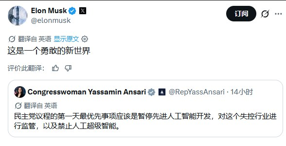
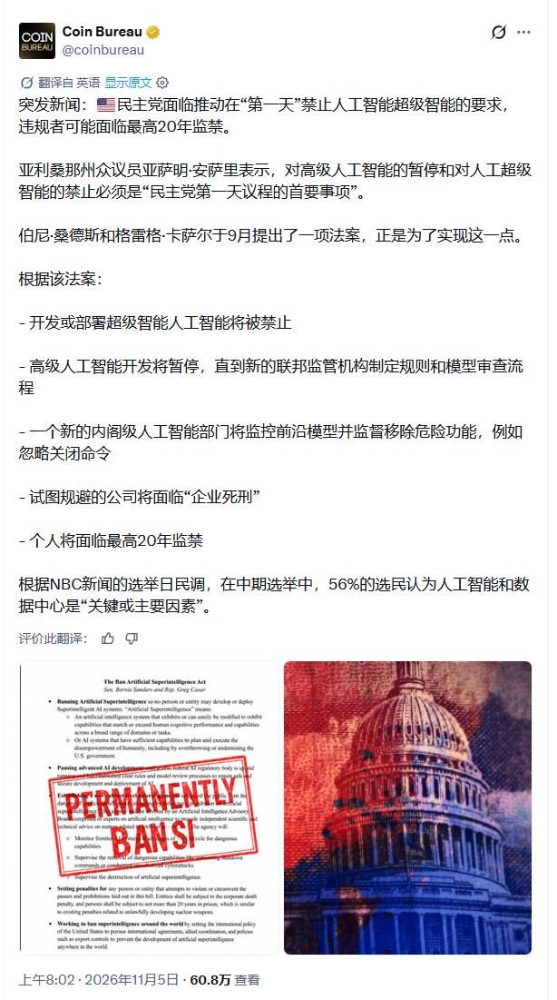
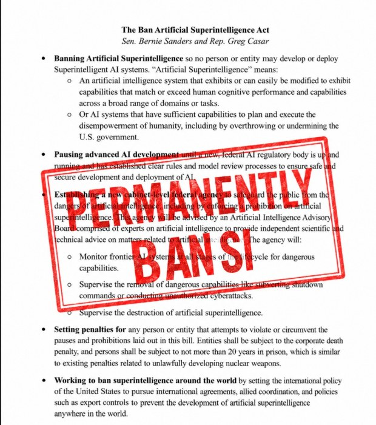
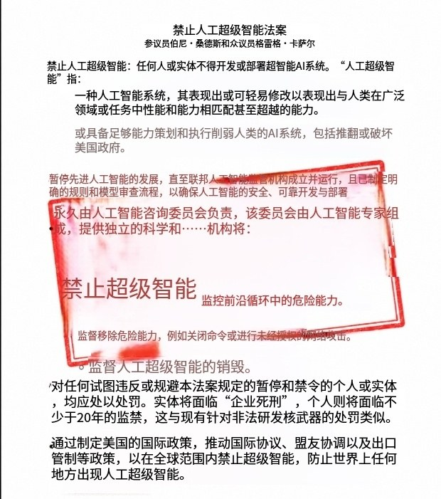

调研纪要 · 2026-11-05 新闻日报
星球 ID: 28855458518111 | 共 350 条帖子 | 精华 77 条
| 查看研究积累
强制同步到研究积累
全部 计算机 电子 机械设备 电力设备 医药生物 其他 非银金融 宏观策略 公用事业 传媒 国防军工 基础化工 有色金属 汽车 房地产 建筑装饰 通信 石油石化 建筑材料 商贸零售 社会服务 轻工制造 交通运输 环保 银行 煤炭 家用电器
书签
【超聚变IPO申请11月12日上会】深圳证券交易所上市审核委员会定于2026年11月12日召开2026年第61次上市审核委员会审议会议。审议超聚变数字技术股份有...
【超聚变IPO申请11月12日上会】深圳证券交易所上市审核委员会定于2026年11月12日召开2026年第61次上市审核委员会审议会议。审议超聚变数字技术股份有限公司的首发申请。
【东吴计算机】#永新光学- 不仅仅是🤖灵巧手，还是物理AI的“眼睛”
【东吴计算机】#永新光学- 不仅仅是🤖灵巧手，还是物理AI的“眼睛”
#机器人业务进入头部灵巧手公司Sharpa和Wuji。英伟达分别采用Sharpa和舞肌（Wuji）的灵巧手。永新光学#已经独供Sharpa灵巧手指镜头，在#Wuji灵巧手指镜头占据大份额。后续#可提升价值量做灵巧手驱动光学模组。
#少数主业真正受物理AI产业拉动的公司，已经迎来业绩拐点。公司单季度营收同比增速从2025年Q3的5%，逐季度上升至2026年Q3的31%。
#预计明年将继续保持30%以上营收同比增速，利润3e+。
公司在2026年半年报中明确指出，【公司业务与物理AI高度同频，物理AI的加速发展，为公司各业务板块带来了历史性的增长机遇】。
具体体现在：
1）条码机器视觉。其是物理AI工业场景的核心感知入口。公司重要客户Zebra、Cognex上半年业绩表现亮眼。
2）激光雷达是高阶智能驾驶、商用机器人的核心感知传感器。公司是禾赛第一大供应商，上半年营收翻倍。
3）医疗光学是精准医疗的视觉基础。
4）专业成像则广泛应用于各类智能终端。
风险提示：技术发展不及预期。
20261105【开源海外｜Coherent】业绩指引双超预期，CPO长约与InP扩产强化成长
20261105【开源海外｜Coherent】业绩指引双超预期，CPO长约与InP扩产强化成长
#收入利润双超预期，下一季指引继续超预期，中期增长与利润率目标积极。
CY26Q3（FY27Q1）收入23.70亿美元，高于市场预期的23.10亿美元约2.6%；Non-GAAP EPS为2.09美元，高于市场预期的1.97美元约6.1%。Non-GAAP毛利率40.6%，同比提升184bps，营业利润率23.2%，同比提升368bps，收入增长持续转化为利润弹性。
CY26Q4收入指引中值26.5亿美元，高于市场预期25.4亿美元约4.3%；Non-GAAP EPS指引中值2.38美元，高于预期2.21美元约7.7%，收入及EPS指引下限均已超过市场预期。公司预计FY27全年可比口径收入增长超过60%，并将长期毛利率目标提高至2028年底前实现首个Non-GAAP毛利率超过45%的季度。
#800G与1.6T共同增长，InP扩产提前兑现
本季数据中心及通信收入19.52亿美元，同比+79%、环比+21%，占总收入约82%。电话会指出，1.6T正向多个客户放量，800G收入预计持续增长至2027年；跨数据中心互联DCI收入超过2亿美元、约为去年同期的4倍。内部InP产出能力提前一个季度实现同比翻倍，计划至2027年底再增长超过一倍。后续随着内部器件自供比例提升，6英寸InP平台的成本优势有望进一步释放。
#新增200亿美元PhotonLink长约，CW光源及CPO打开增量空间。
除此前英伟达协议外，公司与另一家头部AI客户签订五年约200亿美元PhotonLink长期协议，以400mW CW激光器为核心，收入预计从2028年初开始爬坡。PhotonLink整体业务已进入商业化阶段，公司预计CY27Q1收入超过1亿美元、2027年底前季度收入超过2.5亿美元。
[太阳] 我们认为，本季财报进一步支持2027年光互联需求扩张的判断。800G/1.6T支撑近期增长，PhotonLink拓展CPO光源及配套组件市场，InP扩产与后续自供率提升则提供盈利弹性，公司的增长来源正进一步丰富。本季资本开支约7.76亿美元，按经营现金流减资本开支计算，自由现金流约为负8.68亿美元，仍需关注增长兑现与资金效率。
联系人：初敏/王泽宇
新泉股份更新20261105
新泉股份更新20261105
1、机器人：
一、目前覆盖件ASP600~700美金
二、收入：26年预计500万美金
三、数采手套：交付了几个月、ASP300美金、不含传感器预留接口
四、量产爬坡：当前周产1800个，年底2500个
五、产品：覆盖件、数采手套、在对接直线/旋转关节
2、主业：
一、27年海外增量50e收入，净利率10%+
二、28年目标300e收入，海外收入占比50%#
【浦银消费】李宁：60亿元特别股息兑现股东回报，提振消费板块情绪
【浦银消费】李宁：60亿元特别股息兑现股东回报，提振消费板块情绪
特别股息率约18.5%，大力度回报股东：李宁宣布每股派发特别股息2.32元人民币（折合2.71港元），总股本25.85亿股，派息约60亿元人民币，对应2026年11月5日收盘价的特别股息率约18.5%。除净日为2026年11月18日。为符合领取股息资格，递交股份过户文件的最后时限为11月19日下午4时30分；股权登记日为11月23日，派息日为12月1日。
派出富余现金，经营资金仍有保障：26H1公司净现金约194亿元，按年经营资金需求约130亿元估算，本次派息相当于将约60亿元富余现金返还股东，静态测算派息后仍保留约134亿元。另外，我们预计公司每年的自由现金流仍将保持在20-30亿的水平。此次特别股息对未来利润影响主要来自利息收入减少。管理层表示此次特别股息不会影响公司长期分红和回购的计划。
本次特别股息有望推动消费股情绪与估值修复：与李宁的特别股息类似，赢家时尚于11月3日宣布派发每股0.82港元特别股息，按公告当日收盘价4.155港元计算，特别股息率约19.7%。尽管消费基本面beta仍较弱，但成熟消费龙头的商业模式、现金流及盈利韧性仍具价值。当前港股消费股多处于10-15倍市盈率，叠加消费的配置仓位偏低，李宁大额分红有望推动投资者重新审视消费公司的现金价值与股东回报，对板块情绪和估值形成正面提振。
苏州天脉重点推荐：端侧最大弹性票，看好散热龙头三倍空间
苏州天脉重点推荐：端侧最大弹性票，看好散热龙头三倍空间
#端侧利好散热，逻辑在于：算力的提升必然带来功耗大幅增长，散热相关产品的价值量亦持续提升。例如，VC均热板是今年苹果手机零部件价值量增长最大的环节，#从去年的5美金提升至今年的15美金以上。
#下游应用广泛，散热行业长坡厚雪。手机需要散热，眼镜、音箱、机器人、汽车、GPU、光模块呢？#所有的物理AI都需要散热。每个细分市场都是几百亿至上千亿的规模且不断增长。因此，我们认为散热板块一定会诞生一家千亿市值的企业。
#为什么持续推荐苏州天脉？ 2024年作为安卓手机VC龙头上市，去年成功突破苹果，今年光模块VC突破索尔思、光迅等，服务器散热突破台湾网通设备龙头。OpenAI、特斯拉、宇树、智元同样是公司的客户。#我们认为公司证明了自己的技术水平及商务能力，未来随着多元化的下游陆续放量，收入和利润会持续高速增长。
#当前时点短期看翻倍空间，长期看千亿市值。苹果VC产品8月放量，良率持续提升，预计今年5-6亿利润。明年手机业务有望实现12亿利润，20x对应240亿。短期超跌，#当前市值仅反应手机业务。
#看好新产品带来的增量空间：
#1）端侧散热，客户覆盖OpenAI、特斯拉、宇树、智元等龙头企业，随着下游客户放量，弹性极大。远期对标手机业务。
#2）光模块业务，1.6T光模块开始采用VC。年底量产，明年预计3-4亿利润，远期体量有望对标手机业务；
#3）泛半导体设备，聚焦高端温控领域，客户覆盖英伟达、长鑫、索尔思、旭创等。稀缺标的，#预计差极大。明年保守2亿利润，远期预计10亿以上。
#4）服务器液冷，#边际变化突破网通设备龙头ZB，供应散热模组，明年有望贡献近1亿利润。此外对接NV、联想、浪潮等客户，空间巨大。远期预计10亿利润以上。
#盈利预测：预计明年实现20亿利润，30x，对应600亿市值。远期看千亿市值。
具体细节欢迎联系
【百济神州公布26Q3业绩——研发进展】
【百济神州公布26Q3业绩——研发进展】
#血液瘤进展
⚡️泽布替尼联合利妥昔单抗对比BR方案用于1L MCL的sNDA已获得受理并优先审评，基于III期MANGROVE试验数据。
⚡️索托克拉用于r/rMCL获得FDA批准上市。
⚡️ZS固定剂量方案对比AV方案的III期用于TN CLL的III期Celestial 304试验预计年底完成入组。
⚡️BTK CDAC用于r/rCLL的潜在加速批准NDA预计27年中递交；对比Pirto用于r/rCLL的III期CaDAnCe-304试验样本扩大100例，仍预计27年初完成入组；CaDAnCE-302试验基于对304试验的信心降为II期。+索托克拉的III期CaDAnCe-306试验27H1启动入组。
#实体瘤进展
[礼物]CDK4抑制剂用于1L HR+/Her2-BC的III期KANDELA-302试验增加样本量以加速读出。
[礼物]GPC3/4-1BB双抗用于3L+HCC的国内潜在注册性队列完成入组、用于2L+HCC的III期全球试验26Q4启动、27H1启动1L的III期试验；三联方案用于1L的Ib期试验数据将于27H1披露。
[礼物]B7H4 ADC用于1L卵巢癌维持治疗的III期试验已启动。
[礼物]PRMT5抑制剂、CEA ADC用于NSCLC的III期试验预计27年启动。
【百济神州公布26Q3业绩】
【百济神州公布26Q3业绩】
#业绩
26Q3收入18.9亿美元（+33.8%）、其中产品收入18.6亿美元（+33.0%），净利润3.8亿美元（去年同期1.2亿美元）。
#拆分
[礼物]替雷利珠单抗：26Q3收入2.4亿美元（+27.6%，环比+6.5%）。
[礼物]泽布替尼：26Q3收入13.9亿美元（+33.7%，环比+11.5%），其中美国10.1亿美元（+36.1%，环比+12.6%）、欧洲2.2亿美元（+33.3%，环比+11.2%）、中国1.0亿美元（+11.6%，环比+6.1%）、ROW 0.65亿美元（+40.5%，环比+4.5%）。
[礼物]国内安进产品：26Q3收入1.7亿美元（+25.5%）。
#盈利能力
26Q3产品毛利率88.3%（+2.4pct，环比-1.3pct）、销售管理费用率31.4%（-6.1pct，环比-3.4pct）、研发费用率35.0%（-2.1pct，环比-0.9pct）。Q3净利率20.4%（+11.5pct，环比+6.5pct）。
#指引
26年全年收入指引从此前的66-68亿美元上调至69-70亿美元，全年GAAP经营利润从此前的10-11亿美元上调至12-13亿美元，非GAAP经营利润从17-18亿美元上调至19-20亿美元。
联系人：中邮医药团队盛丽华/陈灿
[红包]【招商医药】百济神州2026Q3业绩发布：核心创新产品全球销售额快速增长，后备创新药矩阵进展顺利
[红包]【招商医药】百济神州2026Q3业绩发布：核心创新产品全球销售额快速增长，后备创新药矩阵进展顺利
[發]百济神州26年前三季度营收349.93亿元（yoy+26.8%），归母净利润60.55亿元（yoy+431.8%），扣非归母净利润55.68亿元（yoy+474.4%），其中产品收入343.57亿元（yoy+25.8%）。
[發]26Q3单季度营收127.74亿元（yoy+26.8%），归母净利润27.85亿元（yoy+304.3%），扣非归母净利润26.50亿元（yoy+274.1%），其中产品收入125.60亿元（yoy+26.2%）。
[太阳]产品收入增长主要得益于百悦泽、百泽安以及安进授权产品的销售增长。26Q3单季度，百悦泽全球销售额94.24亿元（yoy+27.0%），百泽安全球销售收入16.40亿元（yoy+29.4%），安进公司授权产品销售额11.33亿元（yoy+19.4%）。
[玫瑰]血液肿瘤管线：tacabrutideg（BTK CDAC）在R/R CLL关键性2期试验中达到ORR主要终点，预计27上半年启动与百悦达联合治疗R/R CLL的3期试验，并于27年年中递交上市许可申请；已完成BG-75202（KAT6 A/B抑制剂）用于AML的1期试验首例患者入组。
[玫瑰]ESMO 2026大会公布多款实体瘤在研管线最新数据：泽尼达妥单抗+替雷利珠单抗+化疗（1L LA/M HER2+ GEA）；BGB-B2033（GPC3/4-1 BB双抗，免疫治疗后进展的晚期HCC）；塔拉妥单抗+度伐利尤单抗（1L ES-SCLC维持治疗）等。
[礼物]与Revolution Medicines达成临床开发及区域商业化合作，百济神州获得4款临床阶段RAS(ON)抑制剂（daraxonrasib、zoldonrasib、elironrasib、RMC-5127）在部分亚洲市场的独家开发及商业化权益，并开展联合治疗研究。
[抱拳]欢迎联系：梁广楷/许菲菲/焦玉鹏/李卓凡
【国泰海通医药】百济神州26Q3：Q3收入19亿美元同比+34%，再次上调2026年全年总收入指引至69亿至70亿美元
【国泰海通医药】百济神州26Q3：Q3收入19亿美元同比+34%，再次上调2026年全年总收入指引至69亿至70亿美元
[庆祝]公司年内第二次上调2026年全年业绩指引
❗️上调2026年全年总收入指引为69亿美元至70亿美元（原66亿至68亿美元）；
❗️GAAP经营利润为12亿美元至13亿美元（原10亿至11亿美元），非GAAP经营利润为19亿美元至20亿美元（原17亿至18亿美元）；
❗️全年毛利率预计位于80%区间高位；Q4预计转回部分递延税项估值准备，确认时将产生显著税务收益
[玫瑰]26Q3，实现总收入18.90亿美元（同比+34%，环比+11.2%）；实现GAAP净利润3.85亿美元（同比+208%，环比+62.4%），净利率20.4%；实现经调整净利润5.39亿美元（同比+77%）。
[玫瑰]26Q3分产品来看
1）百悦泽：全球销售额14亿美元，同比增长34%（环比+16%）；其中美国收入10亿美元，同比增长36%
2）替雷利珠单抗：全球销售额2.43亿美元，同比增长28%（环比+6%）
3）安进公司授权许可产品：全球销售额1.67亿美元，同比增长26%
[玫瑰]26Q3研发及商业化进展
[太阳]泽布替尼：3期MANGROVE研究（联合化疗对比BR方案一线治疗MCL）获FDA优先审评认定，并已在欧盟和中国完成注册申报；
[太阳]泽尼达妥单抗：联合百泽安及化疗获FDA批准用于HER2阳性胃食管腺癌一线治疗；ESMO大会公布3期研究生存数据
[太阳]BTK CDAC：关键性2期研究在复发/难治CLL患者中达到总缓解率主要终点
[太阳]实体瘤：GPC3×4-1BB、CEA ADC、PRMT5抑制剂ESMO公布数据；B7-H4 ADC启动3期Starstone-301研究，联合贝伐珠单抗用于卵巢癌一线维持治疗；RAS(ON)抑制剂、KAT6A/B抑制剂完成首例患者入组
[太阳]合作与准入：与Revolution Medicines达成临床合作并获其RAS(ON)抑制剂部分亚洲市场权益；与美国政府达成自愿协议，扩大创新肿瘤药在美国的可及性并加强美国生产布局
[玫瑰]后续研发里程碑
[太阳]26Q4，泽布替尼预计在日本递交用于MCL一线治疗的上市申请
[太阳]26Q4，BGB-B2033（GPC3x4-1BB）启动3期GroundBBreaker-301研究（2L+ HCC），并启动潜在关键性单臂2期GroundBBreaker-201研究（2L+ HCC）；27H1，BGB-B2033启动关键性3期GroundBBreaker-302研究（1L HCC）
[太阳]27H1，百泽安联合百赫安及化疗、百赫安联合化疗用于1L HER2+ GEA的中国上市申请预计获批
[太阳]27H1，启动CaDAnCe-306研究（Tacabrutideg联合百悦达治疗R/R CLL的3期）
[太阳]27年中，Tacabrutideg有望基于2期研究递交上市许可申请，用于治疗R/R CLL成人患者
联系人：余文心/孟科含/周航/聂照亿/张子彤
【天风医药杨松团队】百济神州持续推荐：业绩超预期，全年指引再上调，泽布替尼放量带动盈利提升
【天风医药杨松团队】百济神州持续推荐：业绩超预期，全年指引再上调，泽布替尼放量带动盈利提升
[太阳]事件：11月5日，公司披露2026年三季度业绩。前三季度收入51.08亿美元，同比增长33%，GAAP净利润8.49亿美元，同比增长285%。第三季度收入18.90亿美元，同比增长34%，GAAP净利润3.85亿美元，同比增长208%。
[玫瑰]全年收入与经营利润指引再次上调
全年收入指引由66–68亿美元上调至69–70亿美元，GAAP经营利润由10–11亿美元上调至12–13亿美元，非GAAP经营利润由17–18亿美元上调至19–20亿美元。
[玫瑰]泽布替尼维持高增，美国贡献约七成销售
第三季度泽布替尼全球销售约14亿美元，同比增长34%。美国销售约10亿美元，同比增长36%，占全球约71%。美国以外市场合计约4亿美元。
[玫瑰]产品毛利率提升，销售及管理费率降幅更大
第三季度GAAP产品毛利率由86%升至88%，调整后由86%升至90%。按总收入计算，GAAP研发、销售及管理、合计经营费用率分别为35.0%、31.4%、66.4%，同比下降2.1、6.1、8.2个百分点。泽布替尼销售占比提升和费率下降共同带动盈利改善。
[咖啡]更多请联系：天风医药 杨松/曹文清
【兴证医药】百济神州2026年Q3业绩
【兴证医药】百济神州2026年Q3业绩
一、业绩情况
2026年Q3全球总收入19亿美元，同比+34%，环比+11%；GAAP净利润为3.8亿美元，同比+208%，环比+62%；nonGAAP净利润5.4亿美元，同比+77%，环比+21%；
2026年前三季度全球总收入51亿美元，同比+33%；GAAP净利润为8.5亿美元，同比+285%；Non-GAAP净利润为13.6亿美元，同比+96%。
2026年Q3毛利率88.5%（同比+2.4pct，环比-1.2pct），销售及管理费用率31.4%（同比-6.1pct，环比-3.4pct），研发费用率35.0%（同比-2.1pct，环比-0.9pct）；
2026年前三季度毛利率89.1%（同比+2.7pct），销售及管理费用率34.1%（同比-5.6pct），研发费用率35.5%（同比-4.3pct）。
#全年指引（再次上调）：
2026年全年总收入预计为69~70亿美元（预计同比+29~31%；此前Q2指引为66~68亿美元）；
毛利率为80%区间的高位（维持不变），GAAP经营费用预计为49~50亿美元（此前48~50亿美元，下限上调1亿美元）；
2026年全年GAAP经营利润预计为12~13亿美元（上调2亿美元），Non-GAAP经营利润预计为19~20亿美元（上调2亿美元）。
#重点产品销售：
泽布替尼26Q3，全球收入13.9亿美元（同比+34%，环比+11%）；其中美国10.0亿美元（同比+36%，环比+13%），其它地区3.9亿美元（同比+28%，环比+9%）。
替雷利珠26Q3，全球收入2.4亿美元（同比+28%，环比+6%）。
#泽布同类产品销售对比，26Q3：
阿卡替尼（AZ BTK）全球收入10.7亿美元，同比+16%，环比+4%；其中美国7.0亿美元，同比+14%，环比+1%；
伊布替尼（艾伯维、强生BTK）全球收入7.6亿美元，同比-23%，环比-3%；其中美国3.4亿美元，同比-33%，环比+1%；
奥妥珠单抗（罗氏CD20单抗）全球收入3.1亿美元，同比+9%，环比+8%；其中美国1.6亿美元，同比+3%，环比+3%；
匹妥布替尼（礼来非共价BTK）全球收入2.3亿美元，同比+59%，环比+19%；其中美国收入未单独披露；
二、 血液瘤/PD1核心催化
27H1：BTK CDAC有望基于临床II期研究结果递交用于R/R CLL成人患者的上市许可申请；
27H1：启动BTK CDAC与索托克拉联合治疗R/R CLL的III期CaDAnCe-306研究；
2026 ASH：
1） 泽布替尼联合利妥昔单抗治疗老年初治套细胞淋巴瘤临床III中期分析结果将在全体科学会议公布；
2） BTK CDAC（tacabrutideg，BGB-16673）CaDAnCe-101研究关键性II期研究已在R/R CLL患者中达到总缓解率主要终点；
三、实体瘤/自免读出和进展
26H2：GPC3x4-1BB双抗2L HCC关键III期临床； B7-H4 ADC开启1L卵巢癌维持治疗III期临床；
2027：GPC3x4-1BB双抗1L HCC关键III期临床； PRMT5i开启NSCLC关键III期临床； CEA ADC启动NSCLC关键III期临床。
资料来源：公司公告
注：仅为公开资料整理，不具备投资建议
联系人：刘焕彬/孙宋暄/杨希成/黄翰漾/孙媛媛
【兴证医药】再鼎医药发布2026年三季报
【兴证医药】再鼎医药发布2026年三季报
公司26Q3实现总收入1.082亿美元，YoY-6.8%；其中净产品收入1.076亿美元，YoY-6.7%、环比+2.0%，合作收入56万美元。净产品收入环比增长主要由NUZYRA市场覆盖及渗透率提升、KarXT于6月启动商业化贡献增量驱动，部分被OPTUNE受胶质母细胞瘤市场竞争影响收入下降所抵消。26Q3经营亏损0.630亿美元，调整后经营亏损（剔除折旧摊销及股份支付）0.476亿美元；净亏损0.461亿美元，25Q3为0.360亿美元，同比扩大28.3%，主要受1,360万美元存货减记影响。公司26年前三季度实现总收入3.141亿美元，YoY-5.5%；净产品收入3.090亿美元，YoY-6.4%；净亏损1.480亿美元，同比扩大18.3%。截至2026年9月末，现金及现金等价物、流动受限现金和短期投资合计6.597亿美元，较26Q2末下降8.1%。26Q3研发/SG&A费用0.498/0.701亿美元，YoY+3.9%/基本持平；前三季度研发/SG&A费用1.772/2.080亿美元，YoY+11.2%/+1.7%。10月公司完成2.5亿美元PIPE，净募资约2.412亿美元。
#未来关键看点
1）Zoci一线SCLC全球III期预计2026年底前启动；二线及以上SCLC、二线epNEC两项潜在注册性数据预计分别于27H2、27H1读出，有望支持公司2027年在美国递交首个BLA。公司预计2028年实现Zoci在美国上市。
2）ZL-6201（LRRC15 ADC）预计27H1公布全球Ia/b期剂量递增部分顶线结果；ZL-1311（MUC17/CD3）预计2026年内递交美国IND、27H1启动全球I期；ZL-1222（PD-1/IL-12）预计2027年递交美国IND并启动全球I期。
3）艾加莫德肌炎、血清阴性全身型重症肌无力及眼肌型重症肌无力适应症有望于2027年在中国递交sBLA；Elegrobart中国III期主要结果预计2027年读出。
资料来源：公司公告、公司官网
仅为公开资料整理，不涉及投资建议
联系人：刘焕彬18819481310/杨希成/黄翰漾/孙媛媛
【兴证医药】荃信生物TL1A/IL-17双抗授权Caldera
【兴证医药】荃信生物TL1A/IL-17双抗授权Caldera
11月5日，荃信生物公告与Caldera Therapeutics就一项靶向TL1A及IL-17的临床前双特异性抗体项目订立对外授权协议。本次交易首付款3,000万美元，潜在里程碑付款最高7.5亿美元，另有分级销售特许权使用费，首付款及里程碑合计最高7.8亿美元。这是双方继QX030N/CLD-423后再次达成授权合作。
#交易条款
1）Caldera获得在全球范围内研究、开发、注册、生产及商业化该项目候选产品的独家、须支付特许权使用费、可转让及可再授权权利。
2）荃信生物或其指定附属公司有权获得一次性、不可退还及不可抵扣首付款3,000万美元；达成特定临床开发、监管及商业里程碑后，可再获得最高7.5亿美元额外付款。
3）在项目产品首次商业销售后的指定期间内，公司有权根据产品销售净额收取分级特许权使用费。
#许可项目及合作方
1）许可项目为临床前阶段双抗，靶向TL1A及IL-17（具体为IL-17A及IL-17A/F），旨在抑制这两个与免疫介导疾病治疗相关的靶点。公告尚未披露项目代号及具体适应症。
2）Caldera为临床阶段公司，正在开发荃信生物此前授权的QX030N/CLD-423（IL-23p19/TL1A双抗），用于炎症性肠病及其他免疫介导疾病。目前该项目处于Ia期健康受试者临床阶段，基于期中数据，计划2027年初启动溃疡性结肠炎及克罗恩病II期临床。
资料来源：公司公告
仅为公开资料整理，不涉及投资建议
联系人：刘焕彬18819481310/杨希成/黄翰漾/孙媛媛
【XN智能制造】侨源股份更新：工业气体赛道龙头，重磅切入六氟化钨赛道-1105
【XN智能制造】侨源股份更新：工业气体赛道龙头，重磅切入六氟化钨赛道-1105
[太阳]11月5日晚，公司公告落地高纯氟系列电子特气一体化项目，总投资31.58亿元，一期布局六氟化钨600吨/年、六氟丁二烯200吨/年，远期规划六氟化钨合计3600吨/年，精准把握全球六氟化钨供给收缩、HBM及3DNAND需求上行的高景气机遇。项目配套自建空分装置，与现有主业深度协同，打开极强的远期成长弹性。
[烟花]当前全球高端半导体级六氟化钨供需格局持续紧张，2026年需求约8200吨/年，日本关东电化、中央硝子合计2100吨高端产能自7月起永久退出，当前有效供给约5400吨/年，扣除库存调节后实际缺口1500–2000吨/年；长期看HBM、3DNAND堆叠层数持续抬升带动单耗上行，机构预测2030年全球需求有望达到15050吨，远期缺口进一步放大，行业景气周期拉长。
[烟花]公司深耕高纯空分二十余年，为西南液态气体龙头，液氧液氮液氩基本盘稳固，覆盖半导体、新能源、军工等赛道，主业增速亮眼；川渝、福建多基地布局，管道气绑定通威、士兰微、万华等优质客户，新疆新设公司持续拓宽工业气体业务边界。
[太阳]公司传统主业未来几年快速增长，此次切入高景气半导体特种气体赛道，且已锁定海内外头部半导体客户，是稀缺的空分龙头转型高端电子特气标的，成长空间和市值弹性巨大。
欢迎交流～ WHB
[拳头]重点推荐【毛戈平】【安克创新】【菜百股份】-中信证券美妆商业
[拳头]重点推荐【毛戈平】【安克创新】【菜百股份】-中信证券美妆商业
毛戈平：①线上双十一超预期增长，价盘平稳、盈利能力稳定；线下持续拓店、提店效。②产品端，美妆强势、护肤加码，新品表现亮眼。③历史估值低位+分红提升：现价对应26E/27E PE 17.6/15.3x；分红比例有望持续提升，当前股价对应股息率约3.5%。
安克创新：①消费级储能市场空间大、格局优，公司阳台光储份额15%居首、PPS高端化迭代、NAS待上新，26Q1-3收入50%+高增速。②AI端侧产品落地，存算一体芯片加持TWS新品、26Q1-3收入增速20%+，同时智能体打通家居产品线、拓展大健康新增量。③toC收入占比70%+赋予深刻C端洞察能力，打造“产品创新→商业落地→价值再循环”正向飞轮。预测26E/27E净利润33.5/41.1亿元，当前市值684亿元对应PE 20.4/16.6倍。
菜百股份：①金价回升，投资金需求加速释放；饰品类产品力提升、加码高端子品牌，优化盈利能力。②黄金新政利好公司承接投资金需求，市占率有望保持提升。③低估值+高股息：现价对应26E/27E PE 12.5/10.8x；当前股价对应股息率约5.7%。
[抱拳]强调重点推荐，欢迎联系杜一帆/何锦鹏/李宇挺沟通、索取报告、约路演、约调研！
美国AI数据中心建设正遭遇“政治审查+支出放缓”的双重拐点，科技巨头（OpenAI、Meta等）的算力扩张步伐将在2027-2028年间显著降温。
美国AI数据中心建设正遭遇“政治审查+支出放缓”的双重拐点，科技巨头（OpenAI、Meta等）的算力扩张步伐将在2027-2028年间显著降温。
碳酸锂观点更新20261105：有色Beta带来的反弹
碳酸锂观点更新20261105：有色Beta带来的反弹
事件：今日碳酸锂期货主力合约涨幅3.64%，碳酸锂板块股票普遍上涨5%以上，板块反弹幅度较大。
碳酸锂基本面保持偏强，27年供给过剩预期不变。本周钢联碳酸锂库存9.55万吨，环比-610吨，上周为-3120吨；SMM库存12.54万吨，环比-2994吨，上周环比-1894吨；华泰库存8.28万吨，环比-3352吨，上周为+970吨。从各个口径的库存看，目前碳酸锂仍然维持去库的节奏，期货仓单保持上升，去库速度有所放缓，但行业基本面仍保持偏强。边际来看，宁得时代枧下窝已复产，国轩环评已受理，江西地区的供给在27年相对乐观。而需求端，11月正极排产的转负对需求压力较大。27年需求暂未看到明显利好，27年行业供给过剩预期超20万吨，特朗普中选的失利对于27年供需格局的拉动作用相对较弱。
美国碳酸锂需求占比不高，其政策变化的预期带来的影响预期有限。美国中选中，特朗普丢失众议院、参议院，市场预期美国对于新能源的态度将从打压转变为支持，利好新能源海外需求。根据测算，25年美国碳酸锂需求9.8万吨（占比6.1%），2026年由于联邦 EV 税收抵免到期（25年9月到期），26年美国EV销量受到压制，26年上半年美国电动车销量55.65万辆，同比-20.34万辆，预期26年美国碳酸锂需求8万吨（占比4%）。美国需求占全球碳酸锂需求的比例较低，预期政策变化带来的影响相对有限。且民主党对于AI数据中心的建设持谨慎态度，也会部分拖累储能需求，对于民主党带来的新能源需求上升需要谨慎对待。
美国中选带来的Beta反弹是本轮上行的原因。由于特朗普中选的失利，市场预期美伊战争烈度将很快降低，这有助于缓解前期高通胀带来的压力，使得市场预期流动性重回宽裕。我们观察到贵金属价格、美国股指、美国国债等对流动性宽松预期的反应较为积极，工业金属品种也跟随上涨，行业Beta较强。碳酸锂作为前期一致看空的品种，空头盈利丰厚，行业beta回暖后，空头止盈离场带来价的反弹。
锂板块股票已逼近前期低位。我们观察到，2025年6月23日碳酸锂价格最低点至今，赣锋锂业/天齐锂业/天华新能/大中矿业/国城矿业/永兴材料/盛新锂能/中矿资源涨幅分别为29.47%、29.63%、122.13%、99.48%、75%、26.26%、72.51%、33.44%，本次反弹略超10%，反弹前板块龙头公司继续下跌的空间已经相对有限。碳酸锂股票会早于商品价格见底，锂板块股票低位，筹码结构较好，存在反弹的动力。
❗️【天风电新】机器人·触觉、灵巧操控观点更新：当前难点在于模型与物理世界对齐，27年或成为模型临界点-1105
❗️【天风电新】机器人·触觉、灵巧操控观点更新：当前难点在于模型与物理世界对齐，27年或成为模型临界点-1105
———————————
近期，王兴兴在上海虹桥论坛上的发言，充分印证我们此前对于机器人bottleneck的判断，目前硬件的卡点在【触觉+灵巧操控】。
王兴兴表示：#当前物理AI的核心挑战——模型与物理世界的对齐。
“一方面是输入层，传感器测量到的状态，与物理世界的真实状态之间存在偏差。
另一方面是输出层，模型发出的动作指令，与机器人实际执行的运动之间存在偏差。”
而这两方面的问题，恰好在于触觉和灵巧操控。触觉传感器/手套决定了输入层能否接收精确的物理信息；灵巧手+机械臂决定了输出策略与实际动作能否保持一致。随着技术路线的收敛，这部分的问题预计会在未来1-2年内得以解决。
此外，王兴兴预期，27年大概率会成为机器人模型发展的一个临界点。在陌生场景中，如果机器人能完成约80%来自公司或实验室的语音或文字指令，就意味着迎来了具身智能的“ChatGPT时刻”。
我们继续聚焦当前机器人的瓶颈环节，
1️⃣触觉：推荐【福莱新材】（数采手套-T链）【安培龙】（天机-OAI+触觉传感器）
2️⃣灵巧手+双臂：推荐【长盈】（天机）【禾赛】（Sharpa）【维宏】（汉姆-Sharpa）
【HYDZ HL】本轮反弹观点：主设备为盾，零部件为矛
【HYDZ HL】本轮反弹观点：主设备为盾，零部件为矛
主设备具备反弹条件
1. 显著回调，高点回撤50%-60%，回撤剧烈
2. 纵观科创板/创业板，半导体设备叠加国内存储/逻辑芯片保供+设备国产化率提升的buff，受到海外AI发展波动的扰动因素小
3. 从产业链调研和长鑫业绩报得知，国内存储厂目前稼动率高、存储价格维持高位，存储厂商进行扩产与技术代转产的诉求非常强，目前国内多个晶圆厂正在建设，多个晶圆厂规划建设，明年洁净室问题得到有效解决，27-28年订单的能见度高，设备产业整体的订单确定性较强
4. 以量检测为核心的核心前道设备和以测试机为核心的后道设备已经批量化完成产业验证，启动放量，相关公司的订单增速预计有望高于行业增速
5. 以27E订单测算28年设备厂商利润与估值，目前均处于历史低位，与海外AMAT、LAM相比，PE倍数差异不大，而PEG更低，更有吸引力
重点关注：【飞测、中微/华创/拓荆、华海】【长川/金海通/华峰/深科达】
零部件
1. 5-6月份炒作景气周期扩产推动预计零部件出现缺货，从而推动大陆零部件公司实现订单高增和业绩兑现，相关零部件公司股价均创历史新高
2. 股价来看，由于零部件经过比设备更为惨烈的回调，普遍回调幅度达到70%-80%，目前多只股票股价已经跌回去年9月到今年1月股价位置
3. 在这五个月中，经过密集的产业链调研，我们发现多个企业已经在订单端实现了【季度甚至月度的环比高增】，部分企业订单环比增速达到30%-50%，迈入产业兑现的甜蜜点，而年化订单对应利润测算下来，预计27年多个公司估值均非常合理
4. 总结看，零部件的股价上涨具备显著进攻性，尤其要注重选择出现订单拐点的公司，Alpha性相对高于Beta性，可以重点关注已经出现关键变化的【新莱、正帆、江丰、矽电股份、高凯】
【ZX航空航天】航展定档12月，反弹行情开启，重视军工超跌机会
【ZX航空航天】航展定档12月，反弹行情开启，重视军工超跌机会
-----
1、中信军工从2021年高点至今下跌25%。2026年下跌27%，全行业跌幅第一，已回调至2021年水位。机构持仓降至历史最低2.3%左右。
2、全球扩军下，同期海外军工大涨，莱茵金属上涨11倍（22年+124%、23年+54%、24年+114%、25年+154%）；美股ITA（iShares 美国航空航天与国防 ETF）同期暴涨+116%。
3、航展定档12月7-13日珠海，规模创新高。
4、历届航展前3月军工均跑出超额收益，2016年至今4届航展，中信军工指数较沪深300最大超额收益分别为15%/37%/ 13%/19%（分别在前32/24/6/1个交易日）。
5、世界百年未有之大变局下，美依战争暴露美失去中东统治力，阿曼苏丹访华签署卫星出海订单。国际军贸高景气，中国军工迎来新机遇。
1） 军机及大飞机：中航沈飞、洪都航空、航发科技等；
2）防空：国睿科技、航天南湖、锐科激光等；
3）弹药：国科军工、航天彩虹、航天电子、中无人机、中兵红箭等；
4） 上游配套：i）通信数据链：推荐七一二、海格通信、六九一二；ii）惯性导航：芯动联科、北方导航、长盈通；iii）红外：睿创微纳、国科天成。
【国金电新】AIDC每日重点公告梳理20261105
【国金电新】AIDC每日重点公告梳理20261105
公司公告：
#液冷
1.创世纪：公司拟以集中竞价交易方式回购公司股份，回购资金总额不低于1亿元且不超过2亿万元，回购价格不超过17.01元/股，用于股权激励或员工持股计划。
2.同飞股份：公司2026年度向特定对象发行A股股票完成，发行数量1153.4万股，发行价格78.08元/股，募集资金总额9.00亿元，扣除发行费用后募集资金净额8.89亿元。
3.奕东电子：公司2026年限制性股票激励计划共15名激励对象可获授，合计获授数量90.00万股，股票来源为公司向激励对象定向发行本公司人民币A股普通股股票，总股本增加90万股。
4.强瑞技术：公司部分董事、高级管理人员拟自增持计划公告披露之日起三个月内以集中竞价方式增持公司股份，增持金额合计不低于890.00万元且不超过1320.00万元，本次增持不设价格区间。
5.强瑞技术：公司拟以集中竞价交易方式回购公司股份，回购资金总额不低于8000.00万元且不超过12000.00万元，回购价格不超过148.58元/股，用于股权激励或员工持股计划、维护公司价值及股东权益。
6.江南新材：公司拟向特定对象发行A股股票，募集资金不超过16亿元，用于高纯电子级氧化铜粉建设项目、液冷散热模组及配件建设项目。
7.领益智造：公司实际控制人、董事长兼总经理曾芳勤增持公司H股股份计划实施完成，本次增持3600.04万股，占公司总股本0.44%，增持金额约1.63亿元。
#SOFC
8.三环集团：公司以集中竞价交易方式首次回购公司股份515.69万股，占公司总股本0.26%，成交价区间74.33元/股~80.35元/股，成交总金额4.00亿元。
#AIDC低压元件
9.宏发股份：公司控股股东有格创业投资有限公司本次质押615.00万股，占公司总股本0.40%，本次质押后累计质押3949.40万股，占其所持股份12.27%，占公司总股本2.55%。
【东北AI应用】Token出海需求已成规模，Seedance分销打开词元收入渠道
【东北AI应用】Token出海需求已成规模，Seedance分销打开词元收入渠道
——————————————
#Token出海：海外需求已成规模、付费刚起步
1、需求：OpenRouter周榜前五全为中国模型，首位单周10.5万亿词元、环比增12%；9月词元用量占比65%、年初22%，美元支出占比30%。
2、优势：算力留境内、按调用量交付，单位成本低于自建海外节点；客户接入后切换成本上升，视频与智能体放大单任务消耗，收入弹性高。
3、零售：11月2日李佳琦直播间上架千问办公月卡，原价28元、直播价福利价1分钱，半小时售罄10万份、对应约2万亿词元。词元已作为独立品类上架，但零售价与官网持平，纯转售无价差。
#Seedance分销：客户按成片比价、不按词元比价
1、试错成本低：仅成功生成的视频计费，审核失败免收，草稿按480p计费，定稿才按目标分辨率计费。
2、单价不构成门槛：单条5秒1080p词元成本18.7元；客户按成片比价，不按词元比价。
#相关公司动态：
1、引力传媒（未覆盖）：旗下香港磁力获BytePlus白金伙伴认证，2026年9月至2027年9月有效，可在海外转售算力。
2、易点天下（未覆盖）：接入Seedance等主流视频模型，2026Q2日均词元消耗环比增超三倍，AI素材占创意产出50%以上。
3、荣信文化（未覆盖）：余禾文化接入字节Seedance，智趣科技与火山引擎签框架协议，以内容知识库对接词元计费，订单洽谈中。
4、润建股份（未覆盖）：子公司10月签下2亿美元海外Token服务订单，交付周期1年；词元工厂当前产能每小时约2000亿词元。
上述公司均未覆盖，仅作行业梳理，不构成投资建议。
风险提示：海外调用量增长不及预期；分销分成与结算未披露；视频审核与版权归属未定等。
东北AI应用：易丁依（SAC：S0550525060001）等。
技术升级——AI PCB增速最高70%，行业增长集中于高端新品类【东北计算机】1104-pcb（34）
技术升级——AI PCB增速最高70%，行业增长集中于高端新品类【东北计算机】1104-pcb（34）
🌟Yole Group数据显示，AI相关PCB年增速45%–70%，18层及以上高多层板15.7%，4至6层传统板仅2.3%；2026年AI服务器及网络设备供应商营收同比增长超50%，行业多数企业不足10%；全球PCB营收2025年约880亿美元，2031年预计1400亿美元，CAGR 8.1%，增长高度集中于AI高端产品。
①增量来自"新板类"而非传统板放量：英伟达新一代机架PCB价值量较上一代提升超200%，57%增量来自上一代不存在的板类；定制加速器PCB价值量约为GPU两倍，2026年ASIC预计占AI服务器约30%；服务器与数据中心PCB需求占比由2020年16%升至25%。
②传统PCB承受供应收紧与成本上行双重挤压：惠普、戴尔已将PCB列为2027年供应重点瓶颈；联茂电子订单能见度延伸至2030年；欣兴董事长简山杰指出先进PCB及封装基板设备交期部分达30个月；有PCB供应商称新客户订单最早或需2028年下半年交货。
③材料与工艺向半导体封装靠拢，企业加速分层：AI加速卡PCB层数达18–30层甚至更高，交换机与背板达70–80层；SerDes向112G/224G演进，推动M8及以上超低损耗覆铜板与mSAP工艺；覆铜板以18–24个月周期由M7迭代至M8、M9、M10，M9售价可达M7四倍；能进入AI服务器、高速网络及先进封装供应链者可得45%–70%量级增长，以4至6层板为主者锁定于2.3%区间。
🔥相关公司（未覆盖公司不作为推荐标的）
电子布：宏和科技、中材科技、国际复材（未覆盖）
铜箔：德福科技、铜冠铜箔
树脂：东材科技、呈和科技、圣泉集团、瑞丰高材（未覆盖）
硅微粉：凌玮科技、联瑞新材（未覆盖）、瑞晨环保（未覆盖）
mSAP：景旺电子（未覆盖）、深南电路、兴森科技（未覆盖）、红板科技（未覆盖）
🔥风险提示：下游PCB需求不及预期等。
☎️欢迎联系：东北计算机团队
【天风传媒互联网】模型、平台催化频出，再次重申强烈看好AI互动及AI+UGC游戏内容
【天风传媒互联网】模型、平台催化频出，再次重申强烈看好AI互动及AI+UGC游戏内容
🔺模型：近期多模态/世界模型侧产业变化较多，#往物理真实性、实时生成、3D方向迭代已成为共识。①9月爱诗、生数均发布新一代视频模型，均是在实时生成、物理规律方向进行提示；②字节储备世界模型近期待发布，强调3D、生成速度、交互；③Google发布新一代通用世界模型Genie4，也是在实时生成、3D世界生成等方面进步明显。该趋势下非常利好AI长内容、互动等新内容形态涌现。
🔺平台扶持持续加码，看好供给增加→爆款跑出。字节9月剪映上ICG Studio把AI互动影游创作门槛砍到"对话出剧情"，10月短剧版权中心发合作征集，向站外真人/AI开放联合发行、联合出资、IP联合开发；快手10月底上线"互动内容世界"独立小程序，把轻互动作品搬出信息流做成货架；腾讯造化工坊9月大版本更新+空弧TDream删档测试，工具内容两手抓；B站Toy体验量接近3000万、跑出SBTI人格测试，小红书REDSkill聚拢16万开发者。工具、入口与扶持俱备，产品供给上量后爆款跑出可期。
🔺重申观点：#AI有望重构互动影游/剧的成本曲线与变现模型，商业模式大幅优化，当前阶段的核心变量是等待爆款跑通验证。①渠道扩容：头部平台陆续推出AI内容扶持政策，内容有望从Steam等垂类渠道向大DAU移动平台迁移，实现用户破圈。②降本与ARPPU双升：传统多分支互动影游受限于实拍成本与买断制付费天花板；AI大幅降本，叠加IAA（广告变现）、IAP（内购）等轻度游戏化付费点，单用户价值打开。③供给侧充足：大量存量短剧、漫画可直接作为改编基础，形成低成本内容池。
重视标的：
内容：华是、芒果、华策、上影、中文在线、百纳、掌阅、华智数媒等
IP方：上影、奥飞、恺英、阅文等
🔺除影视公司外，❗#新增建议关注【互动游戏及UGC游戏方向】。互动内容正沿 "UGC工具—轻互动—游戏板块" 演绎。①供给侧，工具端先跑通：游点灵、网易星匣、taptap制造、Soon等把开发门槛砍到"对话出游戏"，Vibe Coding让个人创作者数小时产出可玩Demo。分发侧，内容走向共创闭环：内容变成可被用户测试、反馈、二次创作、再传播的活体，平台以算法、社区、共创三方接力筛选，形成自增长飞轮。②变现侧，充分攫取消费者剩余：UGC让产品更加垂类化定制化，单用户价值打开。
重视标的：宝通、掌趣（游戏引擎）、春光、盛天等
天风传媒互联网刘欣/王世豪/吴婧
27年放假安排出炉，重视旅游板块投资机会
27年放假安排出炉，重视旅游板块投资机会
[太阳]#国务院发布27年部分节假日安排
🔹#27年各假期天数与26年一致： 元旦、清明为3天小长假，春节9天长假（与26年同为史上最长春节假期），劳动节5天长假，国庆7天长假，端午、中秋为1天假期（不与周末相连，26年和周末相连）。
🔹#27年调休天数较26年减少一天。 [太阳]#具体放假安排： #元旦： 1月1日-3日共3天（同26年），无调休（26年调休1天）
#春节： 2月5日（除夕）-13日共9天（同26年），节前、节后后各调休1天（同26年）
#清明： 4月3日-5日共3天（同26年）
#劳动节： 5月1日-5日共5天（同26年），节后调休1天（同26年）
#端午： 6月9日1天（26年与周末相连3天）
#中秋： 9月15日1天（26年与周末相连3天）
#国庆： 10月1日-7日共7天（同26年），节前、节后各调休1天（同26年）
[太阳]#推荐关注：
🔹九华旅游：业绩稳健、Q3仍保持较好增长，估值相对较低，狮子峰索道明年投运，百岁宫索道改建运力增加，佛教四大名山、春节寺庙经济相关标的。
🔹峨眉山A：金顶索道改建后将带动运力增长，金顶大酒店卧云楼升级改造、云上旅投项目推进有望带来增量，佛教四大名山、春节寺庙经济相关标的。
🔹三峡旅游：两艘省际邮轮顺利投运，乘坐率90%以上超预期，新增业务提振业绩，同时公司持续推进微度假邮轮、主题邮轮建设推进。
联系人：嵇文欣/包晗/罗艺
超跌反弹—电力设备出海 261105
超跌反弹—电力设备出海 261105
我们周一强call了电力设备的超跌反弹，出海方向受益于潜在的政策转向，情绪得到修复。同时，基本面扎实向上，do！
外部担忧边际减轻、风险偏好回暖
美国中期选举落地，民主党赢得参众两院多数席位，新能源政策支持及贸易限制缓和的预期有望推动风险偏好修复。此前特朗普于2020年签署第13920号行政令，限制来自“外国对手”且被认定存在安全风险的大容量电力系统设备，拜登上台后暂停该行政令并撤销配套禁令。我们认为，今年8月发布的第14421号BPS行政令的部分限制措施，在民主党介入后存在分阶段实施或通过风险缓解措施获准交易的空间，实际影响可能低于市场此前的悲观预期。
出海电力设备：宏观环境逆风+业绩miss、跌出机会
26年出海企业面临了汇率、海运、原材料、政策风险等负面因素，业绩miss，估值回落，年初以来跌了30-40%，高点跌了50-60%，普遍回到去年8-9月位置。订单持续增长反映海外需求韧性，收入结构中海外占比起来之后业绩弹性可观。
思源电气：出海稀缺性，市场/产品布局多元，核心市场订单都保持高增。北美高压限制担忧有点过虑且中压已经发力，十月北美进一步加速
金盘科技/伊戈尔：订单高增，出海beta修复的弹性标的。
神马电力：绑定海外装备龙头，政策风险低，受益欧美电力大基建。
特锐德：中东招标有望在地缘缓和之后落地，建议关注公司份额；前三季度海外中标超13亿元，同比增长近30%。
#观点更新
#观点更新
1）美国境内算力中心审批预期减缓，加拿大、东南亚、欧洲、中东的建设信息看逐步释放。之前有加拿大1.5GW，今天谷歌投资马来，meta ceo的发言都指向美国境外建设要起来。市场在交易美国境内，这方面的预期要看后续报道。
2）capex的三个敌人，融资利率、存储价格、GPU。存储价格的博弈已经开始，MU停止台湾扩产。GPU与自研芯片的博弈原本可预判自研芯片占比提升，有利于capex下降，但后续有限的电有可能促进nv的产品更抢手。
3）需求始终是主线，需求端的表述未发生变化，当前博弈仍发生在供给端。新房供给受限与二手房涨价逻辑在一起演绎。
4）拉扯之下，27年供给资源有限，但上游的发货节奏有可能变动，国内半导体产业链短期可能有机会额外拿到一些资源，比如设备、零部件等。
#当前仍在预期阶段，确定的是美国境内的摩擦成本上升，境外其他区域的发展有望受益，做多中国可能是最大公约数。
美国银行谈蓝色浪潮对数据中心建设的影响：
美国银行谈蓝色浪潮对数据中心建设的影响：
“尽管更严格的许可审批、各州限制措施的扩展以及成本上升可能会拉长项目周期，但我们认为这属于供应和时机问题，而非需求问题。计算需求仍须得到满足，相关开发项目可能转向限制较少的美国州，甚至转向海外（例如，谷歌近期在马来西亚投资 150 亿美元扩建业务）。”
Spectrum CPO 交换机现已官宣正式供货，但出货量仍然很低。据了解，今年计划出货约 10000 台 Spectrum CPO 交换机；明年英伟达目标出货...
Spectrum CPO 交换机现已官宣正式供货，但出货量仍然很低。据了解，今年计划出货约 10000 台 Spectrum CPO 交换机；明年英伟达目标出货约 20 万台 Spectrum CPO 交换机，但该目标实现难度很大。
一大核心阻碍：整套 CPO 交换机的组装良率很难做到合格水平。与之形成对比，CPO 光引擎（OE）本身良率已经很不错。
台积电过去数年投入大量资源研发这项技术，进展突出。光引擎当前良率约 80%~85%，已经具备商业化量产条件。
只要有成熟的测试方案，能够筛选出合格裸片用于交换机组装，光引擎本身并不是瓶颈。
台积电集团首席执行官表示，存储芯片短缺预计将从2026年底开始恶化，直至2027年底。
台积电集团首席执行官表示，存储芯片短缺预计将从2026年底开始恶化，直至2027年底。
他指出，价格没有下行趋势，采购商可能会面临一种情况，即他们根本没有资金购买存储芯片。
存储芯片现货与合约价格之间的价差在30-50%之间。
他指出，存储芯片的供需平衡可能要到2028年下半年甚至更晚才能实现。
【中泰电子 |华虹宏力】Q3业绩全面超预期，整合华力微5厂改善报表！
【中泰电子 |华虹宏力】Q3业绩全面超预期，整合华力微5厂改善报表！
#Q3业绩（不含华力微）
1）营收8.03亿美元，yoy+26.5%，qoq+12.0%（此前指引7.7-7.8亿美元）
2）归母净利润0.69亿美元，yoy+167.6%，qoq+78.1%；
3）毛利率19.9%，yoy+6.4pct，qoq+3.4pct（此前指引16%-18%）
[太阳]Q3销售收入大幅增长，再创历史新高，稼动率保持高位（101.0%，yoy-8.5pct，qoq-1.8pct，下滑主要系新建产能爬坡影响），出货量与ASP稳步上行
#Q3业绩（含华力微）
1）营收9.87亿美元，yoy+19.9%，qoq+9.9%；
2）归母净利润1.23亿美元，yoy+147.1%，qoq+77.7%；
3）毛利率24.6%，yoy+7.6pct，qoq+4.7pct
[太阳]公司已完成华力微5厂并购，有效改善报表，我们测算华力微业绩情况如下：
#华力微Q3业绩（测算值）
1）营收1.84亿美元，yoy-2.2%，qoq+1.5%
2）归母净利润0.55亿美元，yoy+125.4%，qoq+77.1%
3）毛利率45.0%，yoy+16.0pct，qoq+11.4pct
#Q4指引（含华力微）
1）营收指引10.8-10.9亿美元，中值qoq+9.9%；
2）毛利率指引25%-26%，中值qoq+0.9pct。
[太阳]管理层判断MCU、Flash、电源管理及功率器件需求持续增长，尽管公司持续扩产，部分细分领域供应仍趋紧，量价齐升预计仍将延续
【国信电子|华虹宏力】3Q26业绩超指引，产能利用率保持高位
【国信电子|华虹宏力】3Q26业绩超指引，产能利用率保持高位
➡3Q26实现销售收入9.871亿美元（YoY+19.9%，QoQ +9.9%)，毛利率24.6%(YoY+7.6pct，QoQ +4.7pct)，此前指引区间营收7.7-7.8亿美元，毛利率约16%-18%，剔除华力微合并影响后销售收入8.034亿美元、毛利率19.9%，销售收入与毛利率均超指引。预计4Q26销售收入约10.8-10.9亿美元，毛利率约25%-26%。
➡3Q26公司晶圆厂保持高产能利用率，出货量与ASP均稳步上行，3Q26公司折合8英寸月产能63.6万片，总产能利用率为102.9%，付运折合8寸晶圆1911千片(YoY+11.5%，QoQ+4.0%)，独立式和嵌入式非易失性存储器产品快速增长。华力微并购已完成并表，整合带来财务增益及运营协同，十二英寸业务收入占比达70.7%。
⭕全球成熟制程回暖持续，我们看好公司特色工艺代工拥有头部客户/领先工艺的龙头竞争力，产能扩充与产品结构优化的增长空间，维持"优于大市"评级。
泛亚微透董事长调研总结：
泛亚微透董事长调研总结：
1⃣️O链：做触觉手套，直接供给openai。已经交了100套，一套2只。年内估计再交200套，也就是400只手套。O这个客户本来就是泛亚的客户，泛亚的渠道，并非nsd介绍给泛亚，本来就是泛亚的资源。
2⃣️T链：给机器人做电池这里的热管理系统，放在胸腔这里，包括一些气凝胶和高性能PI膜等等隔热的东西。已经有供应商代码，也有nda，也完成了送样，年内有望拿到正式订单。
🌹乐舒适：解禁影响可控，全年指引不变
🌹乐舒适：解禁影响可控，全年指引不变
1、解禁影响可控：11月10日解禁股份多为公司及集团高管持有，合计占公司总股本13.93%，当前均无明确减持意愿。
2、成本压力无虞：此前公司业绩指引已考虑原材料涨价影响，预计下半年成本上涨中高个位数水平，全年业绩预期保持不变，收入利润实现25%左右的增长。
3、汇率影响有限：三季度影响幅度有限，具体幅度可以参考上半年（同比正向贡献6-7ppt）。
4、母公司森大集团旗下拥有卫生用品、日化等众多优势消费品资产，公司考虑未来注入上市公司。此外公司考虑外部并购，寻找优质消费品标的。#秘鲁日化产能今年投产，预计待明年有完整年度报表后将推进合并。
5、非洲市场提供增长基本盘：非洲高人口出生率+低渗透率推动卫生用品行业实现高个位数~低双位数增长，乐舒适具备制造及渠道壁垒，通过质价比优势实现市占率稳步提升。
6、拉美市场贡献额外增量：拉美卫生用品行业规模约为非洲的两倍，乐舒适复制非洲市场开拓经验，以秘鲁及萨尔瓦多市场为中心拓展拉美市场，制造及渠道进展顺利，未来2~3年有望实现大几十增长。
7、估值低位：公司26年净利润有望增长25%至1.5亿美元，对应市盈率15倍，预计27年公司延续mid-teens增长预期，考虑公司中长期增长持续性及体外资产注入预期，当前为合适布局位置。
8、风险提示：原材料及汇率价格大幅波动，竞争超预期激烈
[红包]【金蝶国际】观点更新及推荐丨中信证券计算机
[红包]【金蝶国际】观点更新及推荐丨中信证券计算机
【逻辑一：经营指标改善，业绩有望持续快速增长】
截止930，公司ARR规模达 46 亿元，同比增速19.3%，Q3 单季新增ARR同比增速提升至 46%。预计全年收入继续保持快速增长，OCF有望达14亿元，中长期OCF及Margin兑现路径清晰。公司基本面改善，盈利杠杆有望逐步释放。
【逻辑二：灵基与AI套件商业化进程加快，打造下一增长曲线】
公司AI产品已进入规模化落地阶段。截至930，AI相关（AI套件+灵基）订单达10亿元，预计年底收入有望达到10亿元。AI套件正逐步接棒星系列产品成公司下一阶段重要驱动，灵基智能体操作系统则是企业级AI重要入口，AI套件+灵基将持续带动公司AI业务扩张。
【逻辑三：依托ERP业务底座与流程数据积淀，构建差异化竞争壁垒】
公司深耕ERP领域多年，沉淀企业核心经营数据与全业务流程体系，深度理解企业业务上下文，是FDE模式的天然践行者。相较于通用大模型方案，企业级AI产品具备业务准确度更高、Token 消耗更低、可追溯审计合规等优势。ERP底座+业务经验+FDE交付能力形成复合型壁垒，为公司提供核心竞争力。
[礼物]投资建议：公司当前经营基本面向好，AI接棒成下一阶段重要增长驱动，结合公司ERP核心数据及业务流程沉淀，竞争力有望进一步提升。我们看好公司业绩与估值修复的双重机会，公司当前对应2026年P/OCF仅约20x，重点推荐。
[玫瑰]中信证券计算机团队
领导好，再次提醒一定要重视芯碁微装，当前位置对应明年仅20倍出头，我们的信心来自于先进封装的确定性扩产大趋势，来自于公司独一无二的绝佳卡位，更来自于公司在海外大...
领导好，再次提醒一定要重视芯碁微装，当前位置对应明年仅20倍出头，我们的信心来自于先进封装的确定性扩产大趋势，来自于公司独一无二的绝佳卡位，更来自于公司在海外大客户的即将突破，芯碁的LDI设备是为数不多的竞争格局和量价齐升的赛道，强烈建议买入确定性的真龙头，在500亿以下买都不需要考虑那么多杂七杂八的问题，强烈看好公司未来到2000亿的远期目标！
美光因劳资纠纷暂停45亿美元台湾工厂工程
美光因劳资纠纷暂停45亿美元台湾工厂工程
英伟达 CPO 专家：
英伟达 CPO 专家：
“相比之下，CPO 光引擎（OE）本身的良率已经相当不错。过去几年，台积电在开发这项技术方面投入了大量精力，成绩斐然。目前光引擎的良率约为 80% 至 85%，已具备量产的商业可行性。”
📌高盛港股市场收盘综述
📌高盛港股市场收盘综述
📈恒生指数上涨 3.7%｜恒生中国企业指数上涨 3.9%｜恒生科技指数上涨 5.6%｜成交额 3570 亿港币
📊领涨板块：可选消费 + 6.2%，信息技术 + 5.7%，医疗保健 + 3.9%
📉领跌板块：能源 - 2.5%，工业 - 0.4%，公用事业 0.0%
💡港股跟随美股存托凭证以及期货盘面的走势走强，中期业绩落地之后，市场风险偏好重新抬升。
💡资金出现追涨式买入，主要布局平台科技标的以及港股代表性资产，友邦保险、港交所都获得资金青睐，本次为真实资金主动买入，而非空头回补。
💡值得留意的是，A 股买盘活跃度偏弱，上证综指收盘仅小幅收平。
💡尽管南向资金净卖出 27 亿港币，港股依旧走强，说明本轮上涨主要由外资资金推动。
💸资金流向层面：盘面买入力度达到往常的 2.4 倍，科技板块迎来大额买盘。
💸交易席位大额买入腾讯、携程。
💸金融板块，港交所、友邦保险这类港股代表性标的同样获得资金买入。
💸医疗板块，百济神州持续获得买盘。
💸能源、消费板块出现卖盘，中国石油被卖出，名创优品持续有抛压。
💸消费板块，新秀丽多空交易交织，海天味业遭遇单向卖出。
📊分板块来看，科技板块与可选消费板块领涨大盘。
📊科技板块内平台互联网、新能源车标的涨幅突出：网易 + 9.1%，理想汽车 + 9%，小米集团 + 8.8%，携程 + 8.1%，腾讯 + 7.1%。
📊本次行情驱动并非基本面变化，更多是板块轮动叠加估值修复带来的上涨。
📊医疗板块延续强势，该板块两日累计涨幅达到11%。
📊价值股、防御资产表现偏弱，银行板块上涨 0.8%，高股息板块下跌 1.3%。
📊市场风格偏向成长板块风险偏好抬升，资金从价值板块流出。
❓市场驱动因素是什么？
❓市场驱动因素是什么？
🌏美国中期选举结束后，亚洲市场板块轮动节奏加快，投资者从 AI、半导体硬件板块撤出，转向价值、周期以及内需属性的市场。
🌏北亚科技权重指数承压明显，韩国、中国台湾市场大幅下跌，日本市场也被半导体标的拖累；但日本汽车板块迎来大涨。
🌏与之形成对比，港股大幅拉升，资金流入估值折价的中国互联网平台；内地 A 股依靠光伏、新能源板块小幅走高。
🌏澳大利亚、印度尼西亚、印度同样跑赢大盘，背后支撑来自风险偏好改善、美元走弱、油价下行。
🌏印度市场表现亮眼，油价下行、外资流入、公司财报表现稳健，推动资金转向金融、汽车以及其他内需板块。
📌区域市场收盘综述
🇦🇺澳大利亚：标普 200 指数 + 2.61%。
☀️澳股午盘强势反弹，扭转周三的弱势，中期选举后的板块轮动、油价下行推升市场风险偏好。
☀️资金从 AI 硬件板块撤出、转向价值方向的市场，给澳股带来支撑；但盈利环境依旧承压，澳洲联储加息预期下，盈利下调速度达到疫情以来最快水平。
☀️周三领跌的材料板块继续受到关注，必和必拓下跌 1.5%，力拓跌幅超 2%。
🇨🇳中国台湾：台股加权指数 - 3.20%。
📉台股延续下跌，周三外资大额卖出、融资盘平仓之后，半导体板块走弱成为主要拖累。
📉当地拟收紧对大陆的芯片出口管控，给科技板块带来新的利空，也带动区域资金转向大陆半导体国产替代标的。
📉周三盘面波动剧烈，台积电下跌 1.5%，但台股盘中从低点大幅回升；当日外资净卖出 1499 亿新台币，同时 229 亿新台币融资仓位被平仓。
🇰🇷韩国：韩国综合指数 - 5.79%。
📉韩国股市大幅收跌，资金撤离 AI 硬件板块的趋势进一步加剧，指数收于 5383.80 点，创下 10 月 15 日以来最大单日跌幅。
📉市场担忧民主党掌控国会后，会收紧 AI 数据中心相关监管。
📉三星电子下跌 7.6%，是指数最大拖累；SK 海力士盘中最大跌幅达 10%，科斯达克指数下跌 5.1% 至 678.41 点。
📉市场内部存在结构性机会，KB 金融集团上涨 5.5%，韩亚金融上涨 5.6%；济州航空受益油价下跌大涨 15%，收于 2025 年 8 月以来最高收盘价。
📉韩元兑美元贬值至 1342.80，外资股票资金流出压制汇率表现。
🇯🇵日本：日经 225 指数 - 1.79%。
📉日本股市内部行情分化显著，AI、半导体相关标的拖累日经指数走低，Ibiden、国际电气、村田制作所跌幅均超过 15%。
🚗运输设备板块是东证指数内表现最好的板块，丰田汽车贡献最大涨幅，大涨 16.7%；本田、日产同样大幅上涨，市场预期民主党中期选举大胜后关税压力会缓解。
🚗丰田同时宣布扩大股票回购规模至 1.3 万亿日元，其中包含约 3000 亿日元的要约收购，用于解除交叉持股。
🇨🇳内地 A 股：沪深 300 指数 + 0.29%。
📈内地市场小幅走高，科创 50 盘中一度大涨 5%，收盘涨幅收窄至约 1%；分析师提醒，单日放量不足以确认流动性和市场情绪已经修复。
📈光伏、新能源板块领涨，CSI 太阳能上涨 10%，市场预期民主党掌控国会会提升该赛道需求；中国石油受油价下跌影响下跌 6.8%。
📈首批 18 只活跃 ETF 完成募资，合计规模 360 亿元，全部提前结束认购，为 A 股带来额外的结构性资金支撑。
🇭🇰香港：恒生指数 + 3.67%。
📈港股大幅拉升，恒生指数收盘报 24796.98 点，创下 2025 年 2 月 21 日以来最大单日涨幅，连续五个交易日收涨，指数 95 个细分板块全部收红。
📈阿里巴巴是指数最大贡献标的，上涨 8.5%；信达生物录得当日个股最大涨幅 9.2%。
📈腾讯、美团、小米同样大涨，资金布局估值折价的中国互联网平台。
📈恒生科技指数上涨 5.6%，为 2025 年 2 月以来最佳单日表现，连续五日上涨，部分催化来自腾讯新 AI 模型 Hy4，该模型在智能体代码生成、办公流程场景表现突出。
📈但内地投资者通过港股通净卖出 213 亿港币，为近 7 个月最大单日净流出。
🇮🇩东盟：雅加达综合指数 + 2.25%。
📈受益于资金从 AI 板块流出、美元走弱、原油价格下行，印尼股市走强。
📈基础材料板块领涨，印尼盾升值，印尼国债收益率下行；BBCA、BRI 延续周三的强势受到资金关注。
📈印尼市场仍存在被 MSCI 单独下调评级的风险；泰国 SET 指数下跌 0.38%，虽然油价走弱、美元偏弱带来利好，但外资卖出、地缘不确定性持续压制市场情绪，资金参与意愿偏弱。
🇮🇳印度：Nifty 指数 + 2.51%。
📈隔夜美股不确定性缓解叠加油价回落，印度 Nifty 指数高开近 1.7%，站稳 200 日均线，为 2 月底以来首次。
📈指数全天涨幅扩大至 2% 以上，创下 4 月以来最好单日表现，点位触及 8 月以来新高，逼近 24500 关口。
📈油价下行是核心利好，外资在 11 月前三个交易日已经净买入 18 亿美元，叠加公司财报表现不错，支撑印度市场相对区域内北亚市场走出独立行情。
📈板块层面，汽车、金融、地产领涨；印度储备银行此前已经累计降息 75 个基点，市场预期维持宽松。能源板块收跌，公用事业、医药板块上涨。
📈小盘指数仅上涨 0.9%，中盘指数上涨 1.9%，市场广度指标向好。
📌港股观察：行情回来了……？！HT 观察
📌港股观察：行情回来了……？！HT 观察
📊恒生指数 + 3.7%，恒生国企指数 + 3.8%，恒生科技指数 + 5.5%
📝受隔夜港股 / 中概股强劲跑赢提振，今日香港市场成为焦点。KWEB 收涨 4.5%、FXI 收涨 4.2%，成交量显著放大；大型平台科技股 ADR 普遍录得可观溢价，为今日行情定下基调。恒生指数已经连续 5 个交易日上涨，这是 8 月中旬以来首次出现该走势。
🌏美国市场在 “蓝色浪潮” 之后，最突出的交易主线是卖出半导体、买入超大规模云服务商；亚洲市场也出现类似行情。由于恒生科技指数的平台股占比较高，该指数因此受益；而韩国和台湾市场存储芯片板块大幅走弱拖累大盘，港股的 AIDC 和硬件板块同样遭受重挫。
📈恒生指数成分股中有 82/95 只上涨，11 个行业中有 10 个收涨，其中通信服务业上涨 7.3%，非必需消费品上涨 6.3%，涨幅居前。油价下跌拖累能源板块下跌 2.9%，成为唯一收跌的行业。
💰港股成交额较 20 日移动平均值激增 80%，创下 7 月初以来单日新高。
💹HT 交易台开盘时，长线资金挂盘较为清淡，旧经济股、能源股则有卖盘。今年以来，港股一直是买入美股及韩国、台湾股票的资金来源，早盘走势更像是空头回补所推动。随着交易日推进，HT 交易台观察到资金流向转向积极。下午时段，香港大型股的区域及全球长线资金活跃度有所上升，其中腾讯、友邦保险、香港交易所、携程、百济神州的买盘尤为明显。交易台的资金流向由开盘时卖出倾向 1.1 倍，转为收盘时买入倾向 1.2 倍。
📝过去几天，我们在北京与当地机构客户进行了交流，主要收获如下：
📝过去几天，我们在北京与当地机构客户进行了交流，主要收获如下：
📊宏观层面：市场对大规模刺激政策的预期仍然偏低，年初至今国内生产总值增速维持在 4.5%-5% 的目标区间内。
📊当地机构认为，如果明年出口明显放缓，国内可能会出台更多内需刺激政策，政策重心将放在投资端。
📊官方财政赤字大概率维持在 4% 左右，或在未来几年抬升至 4%-4.5% 区间；但对债务可持续性和利息支出的担忧，会限制赤字进一步大幅走高。
📊与此同时，2027 年地方政府专项债额度大概率不会增加，原因是缺乏可落地、能够产生收入的项目。
📊今年年底前两国领导人已安排两场会晤，分别是 11 月 18-19 日的 APEC 会议以及 12 月 14-15 日的 G20 峰会，市场预期中美关系在短期内将保持相对稳定。
📊不过市场预计 2027 年两国在非关税领域（如金融、科技）的关系可能恶化，届时民主党可能掌控国会，并且由于国内政治日程繁忙，双方高层会晤的频次可能减少。
📌📰专家说了不少悲观的信息
📌📰专家说了不少悲观的信息
💡TPU v8i 放量推迟
💡谷歌与联发科首次联合开发 TPU v8i，在架构设计、IP 适配和新拓扑验证上遇到较多问题，同时受到 CoWoS 封装和服务器系统设计限制。预计大规模放量将推迟至 2026 年底或 2027 年一季度，比原计划晚约 4—5 个月。
💡Rubin 交付预期下调
💡受 HBM4 稳定性、液冷供电、软件协议和整机验证等问题影响，Rubin 2026 年交付预期已从至少 7000—8000 柜下调至约 4000—5000 柜。真正放量可能要等到 2027 年一季度后半段，明年一季度理想交付量约为 7000—8000 柜。
💡Rubin 以性能换稳定性
💡英伟达下调了 Rubin 的 HBM4 和 NVLink 带宽，同时提高 scale-out 带宽，以集群性能补偿单机柜性能损失。单柜推理性能可能下降约 10%，但训练性能基本维持，同时有助于改善良率、稳定性和量产交付，因此机柜价格预计不会下调。
💡HBM 供应向海力士和三星集中
💡海力士和三星在英伟达 HBM4 供应中的份额预计分别约为 60% 和 30%，两家公司合计占据绝大多数供应。美光因 16-hi 产品推进失败、12-hi 36GB 产品稳定性和良率不足，预计只能取得约 10% 的第三供应商份额。
💡B300 租赁价格快速下跌（但我这边问到海外的算力租赁价格并没有快速下降）
💡B300 租赁价格已从每卡时 6—8 美元降至约 5 美元，部分报价甚至降至 4 美元出头，反映供给趋于宽松。由于其在超大模型场景中的性价比不如 GB 系列，客户不愿签长期协议，后续价格支撑仍然有限。
💡关于 Marvell 收购 Lumentum
💡专家认为收购背后最大的推手是英伟达，英伟达乐见其成，但 Marvell 面临技术路线差异、交割周期过长和整合难度较高等风险。
2026 年机柜价差分化显著：Token 价格下行，算力租赁价格持续上行
2026 年机柜价差分化显著：Token 价格下行，算力租赁价格持续上行
光模块 mSAP PCB 的交货周期接近六个月，据我们统计，板卡供应缺口高达个位数。电镀生产线并不短缺，短缺的是能够通过三十多项质量标准检验的板卡，而这些标准主...
光模块 mSAP PCB 的交货周期接近六个月，据我们统计，板卡供应缺口高达个位数。电镀生产线并不短缺，短缺的是能够通过三十多项质量标准检验的板卡，而这些标准主要涉及公差。
德州和佐治亚州均由主张更严格数据中心监管的民主党候选人获胜
德州和佐治亚州均由主张更严格数据中心监管的民主党候选人获胜
得州是最重要的变量，原先市场预期数据中心许可可能在2026年12月恢复；现在暂停可能延续至2027年州议会完成立法，项目审批时间或额外推迟5至9个月。
2027年建设不会整体逆转。多数项目已经开工并取得主要许可，但得州部分依赖现场燃气发电、尚未取得空气许可的项目，存在“机房建成但没有电力投运”的风险。
真正受到冲击的是2028年。美国2028年约62.2GW规划新增容量中，多数尚未开工；得州约占30%，审批延长可能使一部分项目从2028年推迟至2029年。
当前风险主要是延期，而非取消。已有融资、客户租约和建设投入的项目不会轻易终止，更可能通过修改设计、增加成本或调整投产时间继续推进。
佐治亚州的直接影响可能首先体现在项目经济性，而非立即全面停工。民主党控制公共服务委员会后，数据中心更可能被要求承担新增发电、输电、最低账单和提前退出成本。
“数据中心自行承担基础设施成本”已经成为跨党派共识。无论哪个党执政，普通居民替大型数据中心承担电网扩建和闲置资产风险的模式都难以持续。
数据中心税收优惠将加速退出。随着适合建设数据中心的土地和电力资源日益稀缺，地方政府不再需要通过大规模补贴吸引项目，开发商的成本将结构性上升。
项目之间将出现明显分化：已经开工、许可齐全、电力落实的项目相对安全；尚未开工、依赖现场发电、缺少环境许可的2028年项目风险最高。
美国数据中心建设未来就看“哪些GW真正拥有电力、许可和社区支持”。
外部压制有望缓解，看好港股反击
外部压制有望缓解，看好港股反击
欧洲股市再创新高，人工智能退出市场提振该地区经济。
欧洲股市再创新高，人工智能退出市场提振该地区经济。
再发一遍 但不得不承认还是爆款的传播学效应最强 甚至强于ai ，无论什么技术好的作品才是王道🔔【申万互联网传媒】AI剧：两大变化，中剧和互动剧等内容升级（9月以...
再发一遍 但不得不承认还是爆款的传播学效应最强 甚至强于ai ，无论什么技术好的作品才是王道🔔【申万互联网传媒】AI剧：两大变化，中剧和互动剧等内容升级（9月以来积极提示）
AI短剧因门槛低+可端到端交付（红果短剧平台），成为渗透最快的AI应用且商业化得到验证。Seedance2.0 26.3上线，Dataeye预测26年AI剧有望突破400亿，渗透率33%（微短剧1200亿以上），争议点是除了字节（模型+云+抖音投流+红果平台分销）和算力，产业链谁能真正分享收益（主题投资能否变景气投资）。
[烟花][烟花][烟花]近期2点变化：
#1）AI长剧：技术升级叠加边拍边播监管机制变化，AI内容正式从短剧、漫剧进入主流长内容播出体系，开始验证长篇叙事、规模化生产和稳定交付能力。25年8月“广电21条”提出的“边审边播、边改边播”，已通过AI剧《
后西游记 ↗ 》首例落地，有望改善制作周期长、资金占用多的痛点。相比短剧流量逻辑，#AI长剧遵循内容逻辑，IP方有希望分享一定收益，接下来重点跟踪AI长剧爆款率及变现。
2）抖音快手推广#互动影游，相比短剧加入交互维度有望再拉新的流量增长；Ai解决互动影游制作成本高的问题
3）#字节短剧出海加速：海外免费模式和AI渗透加快。8月美国电影协会与字节签订AIGC知识产权保护MOU；字节海外短剧PineDrama下载破亿，9月推出AI短剧工具Dramagic。
[礼物][礼物][礼物][礼物][礼物]#重点推荐
芒果超媒（#后会友期综艺热播再次验证综艺能力。ai难以取代综艺“活人感”。内容+平台，国有新媒体持续创新，有望借助aigc中长剧提升内容roi）
上海电影（动画IP储备丰富、上海文化国企积极资源整合 变化很多）
中国电影（电影央企，流浪地球3春节档）
奥飞娱乐（丰富的动画IP资源，合作大厂布局ai视频创作，羊年喜羊羊ip大电影，乐园开发等）
华策影视（ai互动剧ai综艺）盛天网络（互动剧） 风语筑（3D内容）
关注：
阅文集团（腾讯拓展短剧绿泡泡）版权基建阜博集团
短剧出海投流 营销公司也参与产业链。易点天下等 。
互动剧低pe游戏公司等
☎️☎️
欢迎交流 林起贤/夏嘉励/赵航/张淇元
港股互联网反弹点评【建投AI互联网】
港股互联网反弹点评【建投AI互联网】
今天恒科一度涨超5%，美团、网易涨超8%，阿里、腾讯、快手涨超5%；
我们此前已提示：利率压力缓解；盘中空头回补放大涨幅。我们认为持续性取决于Q4指引能否推动盈利预期（分子端）企稳。
⚡️分母端预期改善
市场交易地缘冲突缓和、油价与通胀压力下降预期。隔夜美国十年期国债收益率由4.95%降至4.88%。
⚡️估值与筹码极端
此前恒科forward PE约14.5x（历史7%分位）；近5日日均卖空269亿港元、占成交 19.5%（三年 81% 分位）；空头回补放大弹性。
⚡️个股建议优先配置盈利有支撑、投入回报可验证的龙头
【美团】Non-AI方向的确定性修复标的。补贴退坡，UE边际改善；新业务亏损可控，共同支撑27、28年利润修复。
【网易】明年《
无限大 ↗ 》1月15日+两款搜打撤《
诡影藏锋 ↗ 》《
雾海之下 ↗ 》提供增量。《
梦幻 ↗ 》长青托底（《
梦幻 ↗ 》畅玩服手游贡献增量），近期《
阴阳师 ↗ 》十周年带动9月收入环比增长明显。
【腾讯】Hy4进入国模第一梯队，看好Workbuddy中长期ARR提升，小微明年全量上线后潜力可期。游戏主业平稳（腾讯系游戏靠社交关系，无需担忧短剧冲击）
【阿里】Qwen接入Apple智能12月正式上线，C端AI变现大规模验证；海外CSP情绪大幅修复（政策传导、头部云厂优势凸显、现金流修复预期）提供估值韧性。
【哔哩】流量壁垒高受短剧冲击最小（Q2总时长同比+14%/广告+28%。明年游戏大年重点看《
逃离鸭科夫 ↗ 》手游），广告虽有下修但仍增长好于行业。
⚡️垂直平台/AI应用方向：
同时建议关注【汇量】年末新系统上量、【美图】27年仅10x PE的高增速AI应用、【心动】Tap制造稀缺UGC工具+社区、【腾讯音乐】汽水短期影响可控、【阅文】IP储备+AI短漫剧杠杆兑现
#营销板块点评 【建投AI互联网】
#营销板块点评 【建投AI互联网】
11.5上午营销板块整体涨幅较高，主要系：
1、昨晚Applovin强劲的三季报。Q3收入净利润均高于市场预期中高个位数，Q4指引收入、调后EBITDA均环比+约9%。
2、营销公司新业务探索：token运营、漫剧等。
3、板块轮动，影视游戏表现后，营销处于低位。
#当前关注标的：易点天下/汇量科技/三人行/值得买/光云科技/引力传媒等。
建投AI互联网 杨艾莉/杨晓玮/马晓婷
伯恩斯坦——全球储能与电动车跟踪：中美需求双降拖累9月全球xEV销量，电池需求靠大电量与铁锂扩容撑住
伯恩斯坦——全球储能与电动车跟踪：中美需求双降拖累9月全球xEV销量，电池需求靠大电量与铁锂扩容撑住
核心判断：9月全球乘用车xEV（纯电BEV+插混PHEV）销量213万辆，同比-8%，显著弱于伯恩斯坦全年+10%的基准假设，意味着四季度必须强反弹才能守住2026年预测；但电池端需求120GWh同比+7%，连续跑赢整车销量，验证“单车带电量提升+BEV结构占比走高+LFP（磷酸铁锂）海外渗透”三条主线未被需求滑坡打断。储能与电池产业链景气分化：龙头宁德时代（CATL）市占率38.2%继续扩张，国轩、亿纬、瑞浦增速领先；整车端中国内需退潮、美国补贴退坡余波未平，欧洲与新兴市场（RoW）是唯一正贡献。
一、全局销量：BEV韧性强，PHEV塌方
9月xEV 213万辆（同比-8%，环比+10%）；年初至今（YTD）1660万辆，同比仅+4%，较全年+10%目标缺口明显。
BEV 156万辆，同比+7%；PHEV 56.7万辆，同比-34%。结构上看，BEV占全球xEV比重升至73%，中国70%、欧洲72%、美国85%、RoW 81%。
区域拆解：中国110万辆（同比-17%，占比51%）；欧洲61.5万辆（同比+10%，占比29%）；RoW 28.4万辆（同比+50%，占比13%）；北美14.2万辆（同比-45%，占比7%，为2026年最差单月）。
二、电池需求：量价（带电量）背离，LFP出海加速
9月乘用车锂电装机120GWh，同比+7%，YTD 867GWh，同比+14%，贴近全年+15%目标。
区域电池需求：中国60.7GWh（同比+2%，跑赢销量-17%）；欧洲34.2GWh（同比+34%）；北美10.7GWh（同比-41%）。
化学路线：全球LFP占比53%（去年同期46%），NMC（三元）降至47%；中国LFP 78%（去年73%）；海外LFP 28%（去年16%），出海斜率超预期。
单车载能提升是核心alpha：整车放缓但电池不塌，OEM优先保BEV高配、加大PACK容量。
三、电池厂格局：CATL守擂，二线中系提速，日韩分化
宁德时代9月43.0GWh（同比+12%），市占35.7%；YTD 38.2%（2025年36.4%），技术端麒麟电池（CTP 3.0）、神行12C快充、M3P/钠电持续兑现。
比亚迪（BYD）20.2GWh（同比+4%），市占16.8%；LGES 13.2GWh（同比-5%），市占10.9%；松下5.3GWh（同比-22%）；三星SDI 1.5GWh（同比-58%，市占仅1.3%）。
高增二线：国轩（YTD +47%）、亿纬（+46%）、瑞浦（+92%）、正力（Zenergy +56%）——中系二线靠LFP规模+海外定点挤占日韩份额。
四、整车OEM：BYD销量承压但电池自供稳，零跑份额爬升
9月销量：BYD 30.9万辆（同比-22%）、特斯拉23.2万辆（+5%）、吉利11.3万辆（-4%）、零跑9.5万辆（+49%）。
品牌市占YTD：BYD 14.6%（2025年17.7%下滑）、特斯拉8.0%、吉利4.8%、零跑3.7%（从2025年2.5%跳升）。
车型端：Model Y 16.9万+Model 3 6.2万领跑BEV；吉利星愿5.5万、比亚迪元3.7万/海鸥3.1万跟进。
五、区域逻辑与评级映射
中国：补贴退坡+高基数+消费偏弱，2026国内零售预计-15%~-17%，但出口+50%~60%、EV批发+15%~17%；评级BYD、小米Outperform，小鹏/理想/蔚来Market-Perform，吉利Outperform。
美国：CVC税收抵免取消后需求断崖，9月-45%，同比底部临近但全年持平或负增；松下/SDI承压。
欧洲：BEV同比+60%（德国+94.7%），奔驰CLA、大众ID系列放量；轮胎/零部件端Continental、Michelin、Pirelli Outperform。
印度：10月e-2W注册22.4万辆（+52%），TVS/Bajaj/Hero领跑；e-PV 3.58万辆（+92%），Tata+M&M主导；供给约束大于需求约束。
日本/韩国：丰田、铃木Outperform；现代/摩比斯Outperform，起亚Market-Perform；SDI/LGES Market-Perform，EcoPro/Posco Underperform。
六、投资启示（投行视角）
储能电池是“弱销量里的强赛道”：需求价格弹性被单车带电量+LFP替代+海外本土化三因素对冲。
首选CATL（Outperform，A股目标480元）、天齐锂业（Outperform）；国轩/亿纬是增速alpha但需看海外合规与毛利率。
整车端谨慎：中国价格战未止，美国政策底未到，欧洲是阶段性顺风；零跑、吉利是份额赢家，BYD靠出海与电池外供托底。
风险：中国补贴进一步退坡、美国IRA执行收紧、LFP海外认证不及预期、PHEV需求结构性走弱、UMI式宏观信用压缩外溢到汽车金融。
伯恩斯坦——全球新兴AI基建——德州翻蓝，并非终局，但直流电力管道承压，已获批兆瓦（MW）价值重估
伯恩斯坦——全球新兴AI基建——德州翻蓝，并非终局，但直流电力管道承压，已获批兆瓦（MW）价值重估
核心判断：德州州长选举由民主党候选人Hinojosa击败共和党现任Abbott，构成中期选举级政策拐点。德州承载全美约25%数据中心在建与规划产能，覆盖名单内矿企转型AI开发商的电力组合超50%集中于德州（含已获批与管线）。原预期Abbott连任后审批在审计条件下恢复常态；民主党胜出意味着数据中心暂停令延续、立法僵局概率上升，新任州长政策内核仍是“社区补偿”——用电、用水、就业、地方税负由开发商承担。短期负向定价指向依赖未并网管线的项目，正向重估指向已获批、且满足开工条件的存量容量。IREN、RIOT、CIFR得州敞口最高，但手握吉瓦（GW）级已获批容量，稀缺性溢价逻辑未被破坏。
一、估值框架重设：倍数压缩，评级保留
覆盖标的过去一个月回撤15%至30%，AI重估收益已基本回吐至“比特币挖矿估值锚”。因德州管线不确定性及融资成本上行，整体目标价下调约50%：AI托管业务由原先21倍至15倍EV/远期EBITDA，统一切换至12倍CY30E EBITDA，并按15%加权平均资本成本（WACC）折现至2027年。但维持跑赢大盘（Outperform）：IREN（55美元）、CIFR（15美元）、WULF（20美元）、CORZ（19美元）、CLSK（11美元）、RIOT（18美元）；MARA维持市场持平（Market-Perform），目标价10美元。当前市值较合同化净营运收入（NOI）隐含22%中位数折价（按8%至9%保守资本化率计），已反映过度悲观。
二、个体模型与电力资产地图
IREN：美国、加拿大、西班牙、澳洲合计5.8吉瓦，得州2.75吉瓦（Childress 750兆瓦整园转云，Sweetwater 2吉瓦有条件基荷）。CY30E云收入170亿美元、调整后EBITDA 130亿美元（边际约80%）。估值由8.5倍降至6倍CY28E EBITDA，净债务270亿美元，目标价55美元（原100美元）。
CIFR：规划6.8吉瓦，得州10个站点为主。已签700兆瓦（Black Pearl/Barber Lake/Stingray），近期1.5吉瓦营销中，Colchis 1吉瓦有条件基荷。CY30E AI净收入16亿美元，EBITDA 15亿美元（边际94%）。12倍远期EBITDA折至2027，净债65亿，目标价15美元（原23美元）。
WULF：无得州敞口，3.6吉瓦分布于肯塔基、马里兰、纽约，其中1吉瓦已签AI合同。CY30E净HPC收入25亿美元（原17亿），EBITDA 21亿美元（边际86%）。12倍远期EBITDA，净债90亿，目标价20美元（原36美元）——防守属性最强。
CORZ：得州超1.1吉瓦，Denton/Austin已向CoreWeave计费，Pecos/Hunt为AMD开发。CY30E托管收入18亿美元（原12亿），EBITDA 16亿美元（边际89%）。目标价19美元（原32美元）。
CLSK：采用分类加总（SOTP）。桑德斯维尔175兆瓦托管，CY30E EBITDA 3.25亿美元（净租赁边际99%）。矿机5倍CY28E EBITDA+BTC持仓按8万美元/枚计价。目标价11美元（原24美元）。
RIOT：2吉瓦获批（Rockdale 700兆瓦+Corsicana 1吉瓦），CY30E托管收入9亿美元、AI EBITDA 7亿美元（边际84%）。SOTP下AI垂直占EV 68%，目标价18美元（原35美元）。
MARA：规划约3吉瓦，得州730兆瓦（495兆瓦在运）。AI电力资产按100万美元/兆瓦保守计价（原300万）。市场持平，目标价10美元（原17美元）。
三、资本结构与模式分层
托管（Colocation）模式：单兆瓦建设资本开支1000万至1400万美元，背后是10至20年投资级租约与信用担保，抗融资冲击能力更强。CIFR、CLSK、HUT净租赁结构可实现近100% NOI边际，行业租赁单价由150万/兆瓦年升至240万。
新云（Neocloud）模式：单兆瓦含GPU资本开支2500万至3500万美元（IREN垂直整合4000万至4500万），客户合同仅3至5年、信用层级参差，资本开支强度是托管2至3倍，对利率与再融资最敏感。
利率敏感性：50至100基点加息不改变经济模型。即便融资成本高至8%至9%，托管利息覆盖倍数2至3倍，新云3至5倍；云业务单兆瓦收入1500万至2000万美元时，3至4年可回本。
再融资风险：多数项目债2020年代末到期，托管项目7至10年才产生足够现金流还本，若资本市场长期冻结，再融资是核心尾部风险；云模式回款快，压力相对可控。IREN、CIFR、WULF、CORZ、RIOT账面流动性可覆盖近期建设，PREPAYMENT覆盖GPU资本开支45%至55%。
四、执行与稀缺性推演
未来12个月核心观测点是“合同兆瓦转收入”：CORZ向CoreWeave交付剩余约100兆瓦、WULF向Fluidstack交付168兆瓦、CIFR交付207兆瓦至AWS、RIOT交付25兆瓦至AMD、IREN向微软交付剩余150兆瓦。
电网可靠容量成为硬约束，32吉瓦矿企规划电力中，已获批基荷（Base Load）成“入场券”。管线审批越紧，存量获批容量稀缺溢价越高——这不是AI需求证伪，而是“上电节奏”重定价。
五、结论
德州翻蓝不是AI基建叙事终结，而是从“拼扩建速度”切到“拼获批电力资产质地”。短期杀估值反映管线折现与资本成本；中期看，已并网、已签长约、投资级背书的托管容量反而因供给受限获得租金与稀缺双击。首选顺序：WULF（无得州监管敞口）＞IREN（合同执行+云ARR爬坡）＞RIOT/CIFR（存量获批容量重估）＞CORZ＞CLSK；MARA暂作观望。
【国金交运李丹】油价回落叠加内需切换，关注航空快递板块
【国金交运李丹】油价回落叠加内需切换，关注航空快递板块
🔥特朗普中选失去两院，美伊缓和预期持续增强，布伦特原油下跌超16%。我们认为，航空上涨、航运回调，体现了市场对燃油成本与航运地缘溢价的重新定价；叠加部分内需公司Q3业绩展现韧性，资金对内需与盈利修复方向的关注正在提升，交运中的航空快递值得重点关注。
✈️航空：成本端压制松动，关注盈利预期修复。 前期高油价压制航司盈利，若本轮油价回落持续并传导至航油采购成本，有望释放利润弹性。推荐#中国东航、#华夏航空、#春秋航空：东航看油价回落带来的盈利弹性，华夏看支线网络价值与经营修复，春秋看低成本优势与盈利韧性。随着成本压力缓解，航空有望从预期修复逐步走向业绩改善。
📦快递：经营改善已有验证，旺季进一步检验盈利成色。 #顺丰 Q3扣非归母净利润同比增长13.77%，速运物流单票收入同比提升7.4%；#极兔 Q3全球包裹量同比增长24.8%，中国业务增速逐季提升，板块具备经营数据与业绩支撑。重点推荐极兔速递、中通快递、顺丰控股：极兔看国内经营改善与海外成长，中通看规模、成本优势下的盈利释放及分红优势，顺丰看业务结构优化与精益经营兑现。内需方向关注度提升叠加电商旺季，有望进一步催化板块表现。
风险提示：地缘风险再起，油价回升，内需走弱等。
Revolution pan-RAS商业化超预期，看好大单品商业化驱动全球创新药产业链进入提速新阶段
Revolution pan-RAS商业化超预期，看好大单品商业化驱动全球创新药产业链进入提速新阶段
【事件】
Revolution Daraxonrasib（pan-RAS小分子）：2026Q3美国（PDAC）适应症上市仅5周实现销售额1.976亿美元，已有超5000名患者接受治疗，药品报销覆盖的美国PDAC患者群体已超90%。目前已有四项PDAC全球III期临床试验推进中，包括一线转移性PDAC及术后辅助治疗。
强生Icotrokinra（口服IL-23R环肽）：2026Q3累计启动美国患者治疗数超2万名，环比提升接近翻倍，覆盖独立处方医生数近9000名，环比提升近50%。Q3电话会披露的患者结构中，约60%此前没有接受过系统性银屑病治疗，约20%来自原有口服治疗，约20%来自其他治疗方式。
【观点】
我们认为，全球CDMO产业链正在经历新一轮商业化大单品驱动，重磅新分子、新品种的快速放量及适应症持续拓展，有望带动CDMO的订单、业绩持续超预期。我们看好pan-RAS、环肽、GLP-1等大单品商业化，AI4S新需求驱动下CXO行情持续演绎。
#重点推荐：药明康德、药明生物、凯莱英、康龙化成、普洛药业、皓元医药、药石科技、博腾股份、益诺思、昭衍新药、美迪西、泰格医药，关注金斯瑞生物科技、药明合联、百普赛斯等。
风险提示：订单不及预期风险，新业务拓展不及预期风险，汇兑风险，产能释放不及预期风险，地缘政治风险等。
京东加速本体采购，Optimus3迎首秀，大模型厂商路线下场，T链爬坡继续，持续看好物理AI板块【国信汽车】
京东加速本体采购，Optimus3迎首秀，大模型厂商路线下场，T链爬坡继续，持续看好物理AI板块【国信汽车】
[玫瑰]近日，京东曹鹏：京东具身数采已覆盖100+细分场景，采集10万+真实作业：1）推动机器人融入供应链全流程；2）未来5年京东物流计划采购300万台机器人、100万台无人车和10万架无人机；2）计划2年内累计采集超1000万小时高质量真实场景视频数据及超过100万小时本体数据。数采&机器人产业进展持续加速。
[玫瑰]近期我们持续重点提示机器人板块，核心模型玩家下场（OAI入局硬件&meta合作傅里叶）、产业进展顺利（T链朝周度1k出货迈进），后续有催化（V3视频、股东会、字节世界模型、Oai本体），当下位置持续看好机器人板块！
1️⃣本体&场景推荐：#看好模型加速赋能&场景布局的卡位优势： 宇树、上纬、胜通、小鹏、小米等。
2️⃣硬件推荐：T链确定性&Oai链弹性
#迭代确定&国产替代减速器环节： 双环（新型减速器)，关注斯菱、东力。
#推荐通胀逻辑结构件/电子皮肤环节： 新泉（手套&结构件）、模塑（皮肤新送样）、福赛（轻量化龙头）、日盈（皮肤）、岱美（皮肤持续对接），其他推荐爱柯迪（结构件）。
#主业改善&T批量后逻辑有望改善： 三花&拓普，潜在新晋新泉&凯迪。
#迭代电机卡位： 恒帅。
欢迎联系交流[抱拳]
物理AI第二波推荐延续之前观点，继续看好灵巧手环节超额
物理AI第二波推荐延续之前观点，继续看好灵巧手环节超额
数采里最重要的数据都通过灵巧手采集，工作中最重要的工作都通过灵巧手执行。
软硬最难的交集点都是手：
整手：兆威机电
电机：兆威机电
丝杠：北特科技、浙江荣泰
皮肤：福莱新材、模塑科技
键绳：大业股份
传感器：华依科技、敏芯股份
阿尔法票：宁波东力
其它市场票都会跟随贝塔，见组内段子。
新增场景落地：继续强call 大千生态
机器人：北美大厂全面转向机器人，物理AI时代全面开启，坚定看好机器人板块！
机器人：北美大厂全面转向机器人，物理AI时代全面开启，坚定看好机器人板块！
#北美大厂全面转向机器人、应用预期提速
近期来看，北美模型端进展迅速，Meta此前收购了机器人模型初创公司ARI后，已开发“Max”人形原型机，加速布局Muse等智能体；AMD9月收购李飞飞创立的World Labs（其9月发布新一代世界模型Atlas）；开发π系列机器人基础模型的PI，10月新一轮融资达到200亿美元；苹果亦宣布计划27年推出家用机器人等，此外GPT7模型以及特斯拉Grok模型最快有望27年底更新迭代，展示效果可期。国内宇树迭代UnifoLM系列模型、智谱发布VLA模型ZR-0、字节世界模型+SeedGR机器人模型双线布局、蚂蚁开发“机器人大脑”已开始商业场景落地测试，国内亦有进展。
#特斯拉全自动化线全面开启，新一轮大单可期，Grok5或对标Astra
1）百万产量自动化线启动：T链本体全自动化产线11月初启动，全年2w台后续订单有望落地，11-12月本体产量将快速爬坡，年底匹配供应商订单量级，27年全年产量有望继续上修。
2）特斯拉多模态模型同步推进，Grok5有望向Astra看齐，同时数采已经开始对接触觉需求，场景能力值得期待。
#当前位置推荐T链硬件，T链硬件仍将是主线，关注其他大厂硬件公司以及数采行业机会
1）T链：轻量化龙头【福赛】，谐波龙头【斯菱】，旋转环节【新泉+凯迪】，结构件【科森】，轴承【光洋+万向】，总成【三花+拓普】，丝杠【北特+荣泰】，设备【田中】
2）模型+数采：数采【海天瑞声+均普】，数采设备【福莱+奥比】
3）国产本体起量，推荐【上纬新材+宇树科技】等
宏观预期修复，关注极兔、grab等东南亚市场回补机遇
宏观预期修复，关注极兔、grab等东南亚市场回补机遇
前期油价、加息、汇率等多因素影响定价，从东南亚电商需求来看，仍保持不错增长，剔除基数后整体增速略超年初预期。结合油价回落、加息price in等因素，看好板块估值修复。
#极兔，单量保持较高增长，中性预期明年np口径仅12x，且蕴含多重期权。
#grab，Q3业绩超预期，EV/ebitda明年仅6x（中枢8-10x）。
❗️【天风电新】浙江荣泰反路演-1（5）：逐步走入强现实，明年预计机器人放量如何-1105
❗️【天风电新】浙江荣泰反路演-1（5）：逐步走入强现实，明年预计机器人放量如何-1105
————————————
近期组织的交流，我们认为两个点比较超预期：
一、真正意义开始给予机器人业务收入、盈利指引；
二、新业务：手部驱动模组、散热件
我们先从强现实，明年的指引开始看起：
Q3公司精密结构件业务(主要是丝杠)收入约7kw，同比翻倍以上增速，机器人业务收入已开始在报表端体现。
交付节奏：当前单周交付800+台，预计年末2000台，#明年5月ai5芯片准备好后，丝杠产能预计上到4000-5000台/周。
今年前三季度T机器人收入约2000-3000万，Q4预计7000-8000万。若明年10万台机器人，asp 1万，70%份额，对应7e收入，1e+利润。
百万台机器人假设下，保守假设公司asp 1.5w（品类拓张，模组的asp是丝杠的3-4X，也就是200变600-800），若70%份额，对应105e收入，16e利润。
⭐投资建议
主业方面，公司保持20-30%增速，海外客户新项目（如T的重卡、Cybercab、欧洲&美国厂扩产）+新能源车渗透率加速，明年预计5e利润。20X PE对应100e市值。
机器人业务方面，100万台机器人*1.5w asp*70%份额*15%净利率=16e利润，30X PE对应480e市值，叠加主业580e市值，60%+空间，保持“重点推荐”。
🔥【森合高科】继续推荐：黄金环保型浸出剂绝对龙头，产能供不应求，长期看五倍空间
🔥【森合高科】继续推荐：黄金环保型浸出剂绝对龙头，产能供不应求，长期看五倍空间
1、主要产品：环保型黄金浸出剂，环保型有色抑制剂，#3倍做多黄金
2、产业趋势：环保型药水替代剧毒性药水是大势所趋
3、市场空间：每年全球需求黄金200万吨+有色300万吨，总共500万吨。
4、渗透率：公司目前8万吨，黄金浸出剂仅占比4%以下，空间巨大。
5、公司空间：目前8万吨，长期扩产至40万吨，5倍增长空间，看12亿利润，目前市值仅30亿出头，长期看200亿市值！
☎️欢迎私信
[太阳]华康洁净：电子洁净在手订单较半年末翻倍，Q4中标1.93亿元光通信项目。建议积极关注！
[太阳]华康洁净：电子洁净在手订单较半年末翻倍，Q4中标1.93亿元光通信项目。建议积极关注！
[玫瑰]看点：医疗洁净基本盘稳固，电子洁净已进入大单获取与交付验证阶段。截至2026年9月底，公司在手订单42.41亿元，较半年末增长约30%。其中，医疗净化系统集成在手订单32.36亿元，占比约76%；电子洁净在手订单由半年末的1.47亿元增至3.62亿元，较半年末增长约146%，占比由约4.5%升至8.5%。
[玫瑰]收入保持较快增长，Q3归母净利润同比降幅收窄。前三季度，公司实现营收17.80亿元，同比+24.35%；归母净利润5,144.66万元，同比−15.88%。Q3单季营收7.57亿元，同比+26.83%，归母净利润3,808.36万元，同比−10.34%，较上半年−28.48%的降幅收窄。主要与电子洁净开拓期采购及劳务支出增长快于回款、业务扩张带来人工成本增加有关。
[玫瑰]电子洁净从标杆项目走向大单验证，光通信成为新增应用场景。在上半年中标越润集成、中微公司华南总部、宏茂微（武汉）等项目的基础上，7月公司所在联合体收到九峰山半导体生产制造基地EPC二标段中标通知；10月公司收到高性能衍射光学元组件及专用设备标准化产线项目中标通知，中标金额约0.65亿元。11月3日，公司公告中标淮安旭创光通信产业基地一期机电工程1标段，金额1.93亿元。
[炸弹]风险提示：电子洁净核心客户大订单获取不及预期风险；海外业务拓展不及预期风险。
继续看好【宏润建设】毛利率持续改善，现金流表现向好，“建筑+新能源+科技”多元布局稳步推进
继续看好【宏润建设】毛利率持续改善，现金流表现向好，“建筑+新能源+科技”多元布局稳步推进
[礼物]2026年前三季度公司实现营收37.17亿元，同比-12.78%；实现归母净利润1.83亿元，同比-24.80%，对应Q3实现营收12.42亿元，同比-10.75%；实现归母净利润0.72亿元，同比-28.76%。
[太阳]营业成本降低带来毛利率持续改善。2026年前三季度公司营业总成本同比下降14.33%，整体销售毛利率同比增加1.45pct至13.17%，对应Q3毛利率14.49%，达到今年的高点。
[太阳]前三季度公司费用增长较快，其中管理费用同比增长 53.93% 至 1.04 亿元，财务费用同比增长 26.62% 至 0.32 亿元，结合超高功率圆柱电池项目设备调试、产能爬坡以及深蓝航天试验基地建设的推进节奏，管理费用抬升或主要源于新业务拓展、项目团队及组织相关投入；与此同时，公司经营现金流同比改善，经营韧性有所体现，2026 年前三季度经营活动现金流净额 2.41 亿元，同比增加 0.44 亿元，应收账款 13.67 亿元、较年初回落，收现比长期维持 95% 以上，整体经营质量较为稳健。
[太阳]我们认为，公司将在传统主业与新兴业务协同框架下持续布局，发展前景向好。建筑主业上，依托轨交、市政路桥的经验和资质拓展基建市场，通过和地方平台、央企国企合作、组建 EPC 联合体增强竞争力；新能源业务上，光伏 EPC 稳步推进，超高功率圆柱电池、低空经济电芯项目逐步调试爬坡、开展客户验证，成长空间可期；科技业务上，深蓝航天液体火箭试验基地建设，为切入科技工程领域带来新机会。整体来看，公司持续打造 “建筑 + 新能源 + 科技” 多元布局，业务结构与增长动能有望持续改善。
【天风医药杨松团队】海创药业：VAV1分子胶海外权益授出，总额最高11亿美元，蛋白降解平台价值获验证
【天风医药杨松团队】海创药业：VAV1分子胶海外权益授出，总额最高11亿美元，蛋白降解平台价值获验证
事件：近日，公司将口服VAV1分子胶HP570大中华区以外全球独家权益授予Evommune，获3000万美元首付款（现金2000万美元+认股权证1000万美元）、最高10.7亿美元里程碑。
[玫瑰]HP570已获批美国，2027年I期读出与II期启动为近端催化
该交易里程碑含开发及注册1.5亿美元、商业化9.2亿美元，分成为中单位数至低双位数。HP570美国IND已获批，I期即将启动。Evommune规划2027年中读出I期，年内启动类风湿关节炎II期。
[玫瑰]临床前降解活性约为MRT-6160的20倍，具备同类最佳潜力
VAV1主要表达于免疫细胞，介导T、B细胞活化，全球尚无同靶点药物获批。同类药物MRT-6160被诺华2024年以1.5亿美元首付款、最高21亿美元里程碑引进，MRT-6160已进入II期。临床前头对头中，HP570半数降解浓度（DC50）为0.3nM，诺华MRT-6160为7nM。
[玫瑰]氘恩扎鲁胺放量，HP515数据积极，管线梯队支撑价值
公司2026Q3三季度收入3075.71万元（同比+201.99%），氘恩扎鲁胺进入商业化阶段。HP515（THR-β）IIa期12周肝脂肪分数降幅超50%（安慰剂3.5%），入选美肝会最新突破摘要。
[咖啡]更多请联系：天风医药 杨松/曹文清/吴卓瑾
【天风通信】润泽科技大涨：加码布局算力，强现金流&多融资渠道赋能成长
【天风通信】润泽科技大涨：加码布局算力，强现金流&多融资渠道赋能成长
🔥公司今日大涨11.59%，我们在底部发声重视润泽科技的算力布局，关注投资机会。组织电话会议交流，同时近两周路演反路演交流推荐，总结要点投资逻辑如下：
🌹1、AIDC领域已展现强劲增长动能，存货&在建工程可以明显看出公司算力业务布局已有显著进展
26H1公司算力业务营业收入达19.95亿元，同比增长126.24%，占公司营业收入比例已达53.26%，超越机柜业务成为公司核心增长引擎。
从资产负债表看，公司布局算力业务在Q3取得非常大的成效，固定资产单季度增加约33亿元，在建工程单季度增加约52.5亿元，合计约85.5亿元。其中绝大部分预计为算力设备，再考虑折旧影响，实际相关设备增加或超过80亿元。
🌹2、主业带来现金流强劲，融资渠道多元
公司主业IDC稳定经营，带来较强的经营活动现金流，预计今年已运营IDC及AIDC业务将带来超过60亿元现金流，未来有望持续快速提升，自我造血能力强。
同时公司此前获得500亿授信，布局算力。后续又落地了和进出口银行的股权融资第一期40亿元，预计后续还有近30亿元。意味着公司后续还将投入超过550亿元，且或在近半年执行完毕。预计将在资产端以及后续在利润端逐步体现，有望带动AIDC业务持续保持高速增长。按三年回本看，有望带动年化收入约180-190亿元。算力投入从节奏看，25年投入约100亿元，已在26年AIDC业务得到体现验证，26上半年进行供应链搭建，Q3开始规模到货80亿元预计将在年底前交付计费，而目前进一步投放的500+亿元，或将在明年q1末前分批投放，投放后3-4个月上架计费。
🌹3、公司持续前瞻布局，算力中心合计规划规模约6GW，开拓境外资源取得积极进展，公司26H1落地香港·沙岭、印尼·巴淡岛两大境外核心节点，两大园区中短期合计规划600MW算力中心规模。巴淡岛园区预计2026年内实现部分算力中心交付（预计26年60MW，27年超100MW交付），远期可扩容为GW级智算园区；香港园区预计2028年内实现交付。海外数据中心盈利能力还优于国内，每20mw成熟上架后有望带来约1亿元利润，海外IDC拓展进一步加强公司长期成长能力。
📞天风通信王奕红/唐海清/袁昊
[礼物]【中信电子】华虹宏力：收入/毛利率双超指引，华力微并表增厚利润，Q4收入及毛利率指引继续向上，看好特色工艺量价齐升！
[礼物]【中信电子】华虹宏力：收入/毛利率双超指引，华力微并表增厚利润，Q4收入及毛利率指引继续向上，看好特色工艺量价齐升！
[玫瑰]26Q3：实现【营收】9.87亿美元，同比+19.9%、环比+9.9%；【毛利率】24.6%，同比+7.6pcts、环比+4.7pcts；【归母净利润】1.23亿美元，同比+147.1%、环比+77.7%。晶圆出货191.1万片（折合8英寸），环比+4.0%，产能利用率102.9%，继续维持满载。
[太阳]原华虹主体表现明显超此前指引：剔除华力微后Q3收入8.03亿美元、毛利率19.9%，分别高于此前7.7-7.8亿美元、16%-18%的指引上限，验证涨价、高稼动率及产品结构改善持续兑现；华力微并表后进一步抬升集团收入及利润中枢。Q3出货量与ASP均继续上行，毛利率改善主要受益ASP上涨，部分被折旧增加抵消。
[玫瑰]分平台看，MCU、Flash、MOSFET及PMIC继续景气：eNVM收入2.52亿美元，同比+42.5%，主要受MCU及智能卡驱动；独立式NVM收入1.48亿美元，同比+28.2%，主要受Flash需求增长；功率器件收入2.02亿美元，同比+19.5%，主要受通用MOSFET推动；模拟与电源管理收入2.00亿美元，同比+13.5%；Logic/RF同比基本持平。
[玫瑰]盈利质量继续改善：Q3折旧及摊销2.66亿美元，环比继续增加，但毛利率仍提升4.7pcts，反映涨价及高利用率有效覆盖新增折旧；同时少数股东损益由Q2重述后的-1,899万美元收窄至-338万美元，非全资Fab盈利明显改善，也是归母利润环比高增的重要支撑。
[玫瑰]Q4指引继续向上：公司预计【收入】10.8-10.9亿美元，环比约+9%-10%；【毛利率】25%-26%，较Q3进一步提升。管理层判断MCU、Flash、电源管理及功率器件需求持续增长，尽管公司持续扩产，部分细分领域供应仍趋紧，量价齐升预计仍将延续。
[玫瑰]我们认为公司当前正处于 特色工艺满载+ASP持续改善+12英寸产能释放+华力微整合增益的盈利上行阶段；后续重点关注Fab 9及无锡新12英寸产能爬坡、华力微协同兑现，以及集团先进逻辑产能及资产整合进展。持续看好公司特色工艺平台竞争力及盈利能力提升！
❗️重视瑞可达：单26Q3营收拐点环比增长，预计Q4公司AI业务铜缆/FAU起量迎来利润拐点
❗️重视瑞可达：单26Q3营收拐点环比增长，预计Q4公司AI业务铜缆/FAU起量迎来利润拐点
#前三季度收入稳定增长，AI业务0-1产能爬坡：26Q1-Q3公司实现营业收入24.74亿元，同比+6.58%；归母净利润1.51亿元，同比-35.39%，毛利率20.64%；公司前三季度收入增长主要来自新能源汽车连接器、以及AI数据中心高速连接业务贡献；利润略承压主要系AI业务前期投入、产能爬坡相关如研发费用提升所致。
#单26Q3公司收入环比增长主要系AI业务贡献： 单26Q3公司收入9.26亿元，同比+16.28%；归母净利润0.40亿元，同比-47.83%，毛利率18.41%环比小幅承压。26Q3收入提速主要得益于苏州瑞创高速铜缆逐步批量交付，FAU、电源互连组件逐步进入头部客户验证周期；短期利润端受新品爬坡良率、研发及海外基地投入拖累。
#董事长提议0.5~1亿元回购股票： 10/16董事长吴世均提议以自有资金0.5~1亿元在未来12个月内回购股份，彰显对公司未来发展信心！
#重申26Q3为瑞可达收入拐点，预期26Q4为公司利润拐点，当前股价位置风险已经充分释放！目前苏州瑞创800G高速铜缆产能持续爬坡，1.6T高速铜缆送样北美头部云厂商；瑞辉光子无源光互联FAU组件预计Q4稳定量产！我们认为随着AEC、FAU、电源线以及半导体探针业务交付规模提升、良率持续改善，盈利有望逐步修复！建议各位领导重点关注！📞
⭕️海伦哲储能业务基本面跟踪笔记
⭕️海伦哲储能业务基本面跟踪笔记
➡️及安盾整体情况
#26Q1-3：接单/出库分别同比+97%/+111%；Q3同比保持高增，环比下滑主要系①碳酸锂价格波动导致部分集成客户选择观望；②电芯产能不足导致交付时间延迟，受控订单本身没有太大变化。
#26Q4：10/11月出库分别环比+22%/+20%，完成全年既定目标无压力。
#27年预期：预计收入超20e，其中存量客户销售额同比增长30%，叠加①海外攻关客户3e+②国内大储3e+③电力/风电等1e+④数据中心作为增量场景；预计27H1起随海外电芯工厂陆续投产，电芯产能不足问题有望得到解决。
#抢装预期：预计26Q4不会大规模抢装，27H1交付正常，主要系碳酸锂价格波动导致电芯价格持续下跌。
➡️海外业务
#分区域：海外储能预计整体增长30-40%，欧洲/印度增长最显著。
#客户：瑞浦/亿纬26年分别出货约2GWh/8-9GWh；特斯拉面向欧洲/东南亚市场的方案基本确定；南京LG导入预计11月完成；三星方案已经确定；阿特斯、比亚迪等尚未形成合作的客户26年已有推动。
#溢价情况：客户能够接受公司产品价格溢价5-10%。
#售后覆盖：公司26年海外售后全球覆盖率已达60%，27年要求提升至80%。
➡️国内业务
#在手项目：当前在手项目80-90个，预计对应销售收入约4.8e；以上海/内蒙/新疆为中心，上海今年已交付两个近2kw元项目；东方旭能27年预计采购7-10GWh。
#未来预期：10月项目数增加20+个；26Q4&27年先扩大项目基数，27H2起更关注转化率，预计27年气溶胶渗透的市场份额提升至20%，大量当前设计院接触项目的转化可能要看28年。
➡️新业务拓展
汽车业务是门槛和盈利能力最高环节，可能在27年或之后贡献增长，气溶胶单车价值量约200-400元，预计市场空间50e+；数据中心26H2已交付部分订单，预计到30年CAGR达50%+；26年海外风电业务约1000+w，预计至少可形成1e规模。
➡️主业
26Q3主要系大客户招标出现延迟+消防车市场下滑，预计Q4环比显著好转；预计27年主业较26年低基数呈现修复，相对前两年波动不大。
重点推荐！#申昊科技： 物理AI落地第一站，算电场景双兑现
重点推荐！#申昊科技： 物理AI落地第一站，算电场景双兑现
🚀#算力机器人去年收入只有54万，今年6月一单拿下11.67亿/8年类EPC运维总包（机器人＋驻场运维）合同（约570台），商业模式和定价都验证了。算力中心无人化是全球性的需求，预计海外市场占七成以上，这是明年最大的预期差；#电力机器人和监检测是基本盘，公司Q3单季扭亏，全年有望扭亏，拐点确立。
🚀#算力机器人：从收入54万到订单11.67亿，0-1已跑通
✅订单：煜芯炎宸约570台（27年底前300台、31年底前270台），机器人设备＋运维3.27亿、运维人员8.40亿；27年交付300台，确收1.2亿。另有中航信柏润三年意向≥1亿、共建联合实验室，中移杭州签了三年战略合作，客户从一家变成多家；海外核心大客户同步在拓；
✅需求是全球的：海外四大云厂商26年资本开支合计约7300亿美元；全球53%的运营商招不到合格人；GB300单柜135kW、整柜1.4-1.5吨，人力已经搬不动。OCP已专门设立数据中心自动化项目，Meta今年也在OCP峰会上给出了机器人巡检、搬柜、柜内维护的路线图，海外大厂已经在推；
✅壁垒：配电、暖通、消防和电力运维是同一类活，十余年电力巡检数据能直接迁过去。电力侧的开关室操作、带电作业能力，给以后的插拔、上下架留了口子；
✅算力租赁是铺垫：10月央企智算项目中选3.36亿，另获A公司意向3.33亿。自己持有算力就等于自带机房场景，可以用"算力＋运维一体化"把机器人带进去；
🚀#电力机器人：基本盘放量，拐点确认
✅前三季收入3.32亿（+136%），Q3归母+164万，毛利率19.7%，比上半年高8pct；26H1机器人收入+346%。国网十五五投资4万亿（+40%），员工一年少了8万人，无人化是刚需；
🚀#中期放量：按全球市场算
✅单GW配300台×40万/台≈1.2亿/GW。我们预计全球算力机器人+电力机器人年均180亿，市场商业化尚在起步阶段，申昊已有产品落地。
风险提示：算力订单履约与收入确认不及预期；宏观经济波动及资本市场系统性风险；其他等等。
湖南裕能-深度报告推荐：重新审视铁锂龙头的长期竞争力
湖南裕能-深度报告推荐：重新审视铁锂龙头的长期竞争力
[太阳]经营复盘：盈利能力显著超越行业平均水平。公司26Q3铁锂单吨利润3000元，显著好于市场预期，公司通过自身产品溢价、成本管控等措施，保持稳定的单位利润。从历史复盘来看，公司单位利润长期保持较同行2000元以上单吨利润的领先优势。
[太阳]维度一：高端化产品攫取更高加工费溢价。公司在业内率先稳定量产压实密度在2.6g/cm³+、具备6C快充性能的YN系列产品，支持新能源汽车长续航及快充充电；CN系列产品提供长循环寿命、高安全性、高能量效率及性价比，已批量应用在下游高端储能场景。从销量来看，2024/2025/2026H1公司高端产品销量占比分别达到22%/52%/62%，提升速度明显；高端铁锂通常较普通产品存在更高的溢价
[太阳]维度二：多元化市场及客户提升抗风险能力和议价权。多元化市场布局以及客户结构的分散正在持续提升公司市场议价能力：1）公司加大储能领域的产品布局和市场开拓，应用于储能领域的出货占比逐年提升；2024/2025/2026H1公司储能领域出货占比分别达到41%/45%/53%。2）公司的客户集中度正在逐年下降；2026Q1公司前五大客户集中度约63.6%，其中前两大客户宁德时代和比亚迪合计占比仅47.7%，较2023年的84.9%显著下降。市场及客户结构的多元化，便于公司在与下游的商务谈判上取得更好的议价地位
[太阳]维度三：一体化布局持续深入，成本优势有望逐渐显现。公司是铁锂行业中一体化布局程度最深的企业，主要体现在：1）前驱体磷酸铁100%自供，磷源、铁源涨价，公司自产磷酸铁优势逐渐体现。2）磷矿端，公司自有黄家坡、打石场两大磷矿资源，远期生产规模合计370万吨/年；若完全达产预计可保障公司约185-205万吨磷酸铁锂需要的磷源；黄家坡磷矿预计今年可以实现大规模投产。3）锂资源端，公司通过设立子公司湖南裕能循环，已具备7万吨碳酸锂加工产能，2026H1已实现收入45.55亿元，净利润3.98亿元，对应净利率8.74%，取得较好收益
[咖啡]我们认为，作为铁锂龙头，公司的长期竞争力和市场价值当下显著被低估，相较于上一轮行业周期，公司在高端化占比、多元化市场及客户、一体化深度布局等领域打造了更加坚实的护城河，有望支撑单位盈利长期保持行业领先水平。我们预计公司2026-2028年归母净利润分别至61.81/74.91/89.84亿元，对应PE分别为6/5/4x；继续推荐，维持“买入”评级！
芒果超媒：#新综《 》爆火：10月22日上线首日空降新综霸屏榜TOP1，刷新芒果TV 2026年新综开播纪录。此后热度持续走高，连续登顶，#10月30日市占率升...
芒果超媒：#新综《
后会友期 ↗ 》爆火：10月22日上线首日空降新综霸屏榜TOP1，刷新芒果TV 2026年新综开播纪录。此后热度持续走高，连续登顶，#10月30日市占率升至77.1%，是2026年首部市占率破70%的新综。（属于拿到了大结果[色][色][色]）
国海传媒 重申两个多月以来的观点：趋势看多AI长内容，看多 芒果超媒/上海电影等[抱拳]
[红包]【金蝶国际】观点更新及推荐丨中信证券计算机
[红包]【金蝶国际】观点更新及推荐丨中信证券计算机
【逻辑一：经营指标改善，业绩有望持续快速增长】
截止930，公司ARR规模达 46 亿元，同比增速19.3%，Q3 单季新增ARR同比增速提升至 46%。预计全年收入继续保持快速增长，OCF有望达14亿元，中长期OCF及Margin兑现路径清晰。公司基本面改善，盈利杠杆有望逐步释放。
【逻辑二：灵基与AI套件商业化进程加快，打造下一增长曲线】
公司AI产品已进入规模化落地阶段。截至930，AI相关（AI套件+灵基）订单达10亿元，预计年底收入有望达到10亿元。AI套件正逐步接棒星系列产品成公司下一阶段重要驱动，灵基智能体操作系统则是企业级AI重要入口，AI套件+灵基将持续带动公司AI业务扩张。
【逻辑三：依托ERP业务底座与流程数据积淀，构建差异化竞争壁垒】
公司深耕ERP领域多年，沉淀企业核心经营数据与全业务流程体系，深度理解企业业务上下文，是FDE模式的天然践行者。相较于通用大模型方案，企业级AI产品具备业务准确度更高、Token 消耗更低、可追溯审计合规等优势。ERP底座+业务经验+FDE交付能力形成复合型壁垒，为公司提供核心竞争力。
[礼物]投资建议：公司当前经营基本面向好，AI接棒成下一阶段重要增长驱动，结合公司ERP核心数据及业务流程沉淀，竞争力有望进一步提升。我们看好公司业绩与估值修复的双重机会，公司当前对应2026年P/OCF仅约20x，重点推荐。
[玫瑰]中信证券计算机团队
【广发机械】松发股份大跌点评20261105
【广发机械】松发股份大跌点评20261105
#大跌系美伊停战预期影响、股价底部明确。今日公司股价跌停，主要受美国中期选举落地后美伊停战预期影响，市场担心油轮下单需求，叠加机构筹码较为集中，导致公司股价跌幅较大。最近公司股价持续调整，但基本面并无变化，当前股价已接近定增价格，我们认为已经基本见底。
#停战与造船订单实质关联不大、情绪扰动大于基本面。今年新船订单迎来一轮景气高峰，市场将新船需求与美伊冲突过度挂钩，实际上美伊冲突的影响逻辑在于拉长运距-有效运力被吸收-船东补充即期运力，而即期运力的补充以交易二手船为主，新船订单对应的是远期运力，从而导致今年VLCC二手船价格与新船价格出现倒挂。事实上这一轮油轮的新船需求与战争关联度并不大。#除油轮外、集装箱散货lng订单均有较强持续性。而运力结构中二手船的增加也会进一步推动未来船东的更新需求。
#珍惜松发的底部布局机遇。
孙柏阳/汪家豪/黄晓萍
万通发展专场交流整天
万通发展专场交流整天
不要等一个公司开花结果之后再去研究，这个票我已经跟踪一年了，芯片从【能用】跨越到【好用】阶段，104芯片是能用大批量出货，144芯片是好用客户验证进展很顺利，年内完成出货销售
【华锐精密】物理AI落地工业机加领域的先行者
【华锐精密】物理AI落地工业机加领域的先行者
全市场率先推出智加系统＋快反智能体，构筑物理AI双引擎，实现机械加工前、中、后的智能化闭环。
🌹 智加系统：加工中的实时自适应调控
聚焦切削过程监测、自适应调参和安全防护。国内CNC保有量约1000万台、每年新增约50万台，标准单价3.8万元，理论市场空间超3000亿元。目前已经在汽车、机器人、航空航天等领域落地销售。
🌹 快反智能体：即将推出，聚焦上机前工艺生成与加工后复盘
覆盖图纸解析、刀具夹具方案生成、仿真校核及加工复盘，采用大客户本地化部署＋小微客户云端订阅模式。
按大客户约400—600家、5年20%渗透率假设测算，实施费规模约5亿元，并持续贡献运维收入；国内小微机加工主体达到十万级，单点年费10—15万元，远期订阅空间广阔。
🌹 壁垒与打法：标杆先行、行业复制、云端下沉
二十年工艺数据、软硬件闭环和刀具渠道构成核心壁垒。公司采取“标杆验证、行业复制、云端放量”的推进路径，有助于降低获客与交付成本，推动收入规模化、持续化，并反哺刀具主业。
✅ 制造业的未来是自主运行。华锐依托二十年刀具工艺积淀，将工艺与数据优势转化为软件增量，并反哺刀具主业，打开成长空间。
⚠️风险提示：产品研发推广不及预期、客户验证及商业化不及预期、市场空间测算偏差、行业竞争加剧等。
【杰瑞股份】天然气项目基本情况介绍
【杰瑞股份】天然气项目基本情况介绍
总结：本次公告4个项目，涉及气处理站、气增压站、井口设施建设等项目，与杰瑞此前所获取的几个项目形式均类似，可类比参考。
——共30.2亿美元（约203亿元），毛利率按20-25%计算，其中项目1&项目4的交付期在27~29年，项目2&项目3在27~31年。若按照15%净利润率计算，4个项目将合计产生超30亿元利润，其中28年是最高峰，27、29年其次。
——————————————
⭕️项目一：Ruwais Diyab 非常规气处理站项目（#类似科威特KOC项目)
#金额： 13.9亿美元（EPC+5年运营）+可选10年运营3.1亿美元
#项目时间： 建设期29个月。运营期60个月。运营期最多延期10年
#执行节奏： 第一年20-30%，第二年50-60%，第三年~20%
#内容： 气处理站（含天然气压缩+燃气轮机）。井场配套设施、中央处理设施、集输及产品外输管网、相关公用工程
#设施功能： 天然气净化、伴生液体回收、采出水处理及硫磺回收，并将合格产品输送至指定接收设施
——————————————
⭕️项目二：Bab/North East Bab油田井口连接工程（#类似ADNOC数字化项目）
#金额： 5.997亿美元（40.3亿元）
#项目时间： 60个月
#执行节奏: 月度平均
#内容： 新建采油井接入、既有采油井地面设施拆除与改造，以及供水井、注水井、回注处置井和水气交替注入井的配套建设，同时包括部分既有井数字化改造
#项目形式： 一半井固定+一半井随叫随到（类似ADNOC数字化改造）
——————————————
⭕️项目三：Bu Hasa油田井口连接工程（#类似ADNOC数字化项目）
#金额： 3.928亿美元（26.4亿元），含可选1.74亿美元
#项目时间： 36个月，根据可选项目延长最多24个月
#执行节奏: 月度平均
#内容： 集输管线敷设、井口与现有设施并接，以及采油井模块撬、气举撬、撬装井口控制盘和太阳能供电装置的设计、制造与安装。
#项目形式： 一半井固定+一半井随叫随到（类似ADNOC数字化改造）
——————————————
⭕️项目四：阿曼国油 Al-Ghubar油气增压场站项目（#类似巴林项目）
#金额： 3.272亿美元
#建设周期： 30个月
#执行节奏: 第一年10-20%，第二年40-50%，第三年10-20%
稍后马上更新省流版与点评
人工智能禁令
人工智能禁令




4 图
最讽刺的事情可能是，美国这场越来越激烈的反 AI 运动，反而正在帮助 AI 巨头避免一场泡沫。
最讽刺的事情可能是，美国这场越来越激烈的反 AI 运动，反而正在帮助 AI 巨头避免一场泡沫。
科技作者 Derek Thompson 提出了一个很有意思的观点：反 AI 政治短期内会打压 AI 股票，但长期来看，可能恰恰有利于整个行业。
他的逻辑很简单。历史上很多科技泡沫都死于供给过剩。1870 年代美国铁路修到了根本没有人的地方，1999 年互联网泡沫期间铺设的大量光纤长期闲置。技术本身有价值，但资本投入的速度远远超过了真实需求。
AI 目前的情况有所不同。数据中心里的芯片供不应求，算力需求还在快速增长。与此同时，美国越来越多的地方政府和居民开始反对新建数据中心，担心电价上涨、土地和水资源被占用。
如果政治力量真的拖慢了数据中心建设，那么供给增速就可能放缓，需求反而有时间追上来。按照 Thompson 的逻辑，反 AI 运动相当于无意中给整个行业踩了刹车。
经济史学家 Adam Tooze 随后讽刺道，原来反 AI 监管政治对 AI 还有好处，因为它能帮忙管理泡沫。这简直就是资本总体利益的代言人。
早上的市场基本对着隔夜美股抄作业，先炒了情绪，但还没顾上太多事实，很多散户简单粗暴天真地以为，民主党支持新能源，利好光伏，所以也利好A股光伏。其实人家民主党支持...
早上的市场基本对着隔夜美股抄作业，先炒了情绪，但还没顾上太多事实，很多散户简单粗暴天真地以为，民主党支持新能源，利好光伏，所以也利好A股光伏。其实人家民主党支持的是美国光伏。
其实真相完全不是这回事，8家外访建厂的A股公司，除了阿特斯，几乎被迫卖掉子公司
中国光伏企业外访建厂，主要经历了“扎堆建厂”到“被迫重构”的过程。
2022 年美国（民主党时期）通过《通胀削减法案》（IRA）提供高额补贴，叠加对华进口关税壁垒，中国企业曾掀起外访建厂热潮；但 2024 年特朗普再次当选后政 策生变。
尤其是 2025 年 7 月生效的《大而美法案》设置了严格的“受限制外国实体”（FEOC）门槛（单一中资持股超 25% 即丧失补贴资格），迫使中国企业不得不壮士断腕，通过卖厂、减持或资产腾挪来合规。
目前主要企业的处置情况如下：
晶澳科技：将亚利桑那州 2GW 组件工厂整体出售给美国康宁公司。
天合光能：将得克萨斯州 5GW 组件工厂出售给美资主导的上市公司 T1 Energy，目前仅保留约 11% 的少数股权。
博威合金：将北卡罗来纳州 3GW 组件产能出售给印度企业 Inox。
晶科能源：出售佛罗里达州 2GW 组件工厂 75.1% 的控股权，自身仅保留 24.9% 的股权（卡在红线以下）。
隆基绿能：在俄亥俄州 5GW 合资工厂中，将持股比例下调至 19.9%，放弃绝 对 控股地位。
润阳股份（阿拉巴马州）：暂无动作
弘元绿能（南卡罗来纳州）：2026 年开工，业内普遍归类为"几乎肯定通不过 FEOC 测试"，几乎作废了。
阿特斯：将美国制造资产从 A 股子公司划转至其纳斯达克美股母公司（Canadian Solar）名下，利用非中资身份规避限制，是目前唯一没有出让控制权的企业。
再看看对美光伏设备这块，不是别人不想买，而是先进的设备我们不给卖，去年是窗口指导，今年10月16日，商务部与科技部联合发布2026年第48号公告，就修订《中国禁止出口限制出口技术目录》公开征求意见，拟增列涉及多晶硅制造、硅片制造、电池制造等光伏环节的12项技术，同时管控范围延伸至承载上述核心技术的关键设备，同步实施出口前临时登记管理。
出口“管控靶心”是核心技术可复制性的迁移，普通电池片和组件出口不受影响，对维护国内技术领先优势、优化全球竞争格局具有积极意义。根据相关企业的调研交流，政 策落地初期，设备出海审批周期延长。可话说过来，人家想买设备自己造电池组件，你核心设备不卖给人家，连地面光伏设备中比如超薄硅片和HJT都不满足出口管制，更别说太空光伏需要的钙钛矿等最好的设备；话再说回来，我们不想卖设备给人家，但想卖成品电池组件给人家，可人家又怕你倾销所以设置了高关税而且政 策补贴只扶持本土企业，短期基本无解。
对美储能这边也惨，2026年，出口美国的中国储能电池及系统面临高额综合关税。具体结构为：3.4%基础关税+25%“301关税”+20%芬太尼关税+10%对等关税，合计约58.4%。部分时间根据美中具体协议或者暂缓政 策，关税区间曾在40.9%—82.4%浮动，远高于其他主要出口目的地，2026年初关税将持续趋严。而且美国《大而美法案》（OBBBA）规定，对“受关注外国实体（FEOC）”的关键原料、技术及投资设定红线。中国储能企业及供应链产品被明确剔除出美国储能项目的补贴体系，直接影响储能项目能否获得投资税收抵免（ITC）和生产补贴。
在美国的高额关税、投资与补贴限制、市场准入与合规障碍等多重限制下，2026年第一季度，中国主要储能锂电池企业对美国出口出现断崖式下滑，出货量环比下降88%、同比下降80%。北美市场占中国企业储能海外订单比重从16.6%降至6.7%。2025全年中国企业海外储能订单约180GWh，美国仅贡献5.34GWh，占本地新增需求的比例极小（美国1-7月新增装机21.0GWh），供需出现明显反差。
所以光伏和储能在这个长期超跌和筹码干净的位置上，借着民主党上台的叙事，套着美国新能源补贴或者是太空光伏的想象力，炒一下超跌反弹修复没有问题，但是本质仍然是低位干净筹码遇上增量资金热钱借桌打牌而已，炒归炒，但要知道在炒情绪还是基本面，不要忘了实际上光伏储能这块的对美贸易，由于是我们技术卡他们脖子，于是变成了美国版的自主可控，这绝不是炒美股映射那么简单，因为最终并无法落地转化为大量的订单业绩基本面，所以对中期和持续性的表现要记得存疑，主题催化炒作要记得多看图，目前还是低位放量的底部，后面高位要做到图坏人撤
📰📌瑞银 Timothy Arcuri：《ASIC 与 HBM 展望》
📰📌瑞银 Timothy Arcuri：《ASIC 与 HBM 展望》
💡1、资本支出展望
🤔当 AI 资本支出趋于平稳并开始回落时，Arcuri 认为，定制 ASIC 会比通用商用 GPU 率先遭到削减；原因在于 ASIC 用途高度特定，在经济环境收紧阶段，云运营方会更加看重业务灵活性。
💡2、相反市场观点
🗣️其他参会人士以及一位首席信息官提出对立看法，认为通用 GPU 会最先被砍减。
📌他们的逻辑：为抬升利润率，超大规模云服务商在自研芯片性能达到 “足够可用” 水平后，会优先缩减外部 GPU 采购规模，而 Arcuri 所持观点恰好与此相反。
💡3、内存领域的结构性变化
🔹📌HBM 已经切换为按年度迭代，并且与 AI 处理器深度绑定。
🔹📌推理业务的核心价值来源于内存，进一步强化了内存于 AI 产业当中的战略地位。
🔹📌超大规模云服务商依靠长期供货协议、预付款锁定 HBM 供给。
🔹📌HBM 消耗的晶圆产能约为普通非 HBM 内存的四倍，由此带来供给层面的硬性约束。
📑🔥转 //美国中期选举
📑🔥转 //美国中期选举
📌本次选举改选全部众议员、约三分之一参议员和多个州的州长，民主党拿下参众两院多数，得州州长、副州长也从共和党换成了民主党。
📌当晚流行一种解读：民主党赢了国会→国会立法限制新建数据中心→美国 AI 算力变慢→中国追上来。美股期货夜里一度按照这个逻辑下跌，之后跌幅收窄。
📌我们梳理下来，这条推理前半段对一半，后半段并不成立。美国新建 AI 机房确实会节奏放缓，但根源不在国会，而是得州电网接入瓶颈以及州内审批问题。这件事在选举之前就已经启动，最初下令暂停审批的是共和党州长，选举只是拉长了停滞的周期。中美之间的核心差距主要在芯片，并非电力供给；美国接电进度放缓，并不能补上中国芯片供给受限的短板。本次选举既没有让中国获得更多英伟达 H200 芯片，也没有放宽海外租赁芯片的渠道。
📌先说明国会层面很难直接叫停项目。美国法案需要总统签字才能生效；一旦总统行使否决权，国会需要参众两院各自拿到三分之二票数才能推翻否决，门槛远高于常规半数表决。参议院一共 100 席，推翻否决需要 67 票，民主党当前约 54 席；众议院 435 席，推翻否决需要 290 票，民主党预计约 258 席。民主党席位仅够常规过半表决，不足以推翻总统否决，只要特朗普持反对态度，民主党单凭自身席位很难推动法案落地。民主党左翼众议员 Ocasio-Cortez 在今年 6 月提交过一项法案，要求在联邦出台 AI 风险防范法律之前，全国暂停新建数据中心。即便这份法案在两院顺利通过，也有很大概率被特朗普否决。
📌国会更有可能落地的是另一项政策：要求数据中心自行承担新增电网配套建设成本。数据中心接入电网时，电力企业往往需要新建电厂、扩容输电线路，过往这笔投入一般分摊到全部用户电费中，推高居民用电成本，这两年也是选民重点关注的议题。9 月，众议院以 417 票赞成、3 票反对的结果通过了《电费用户保护法》（Ratepayer Protection Act），法案要求各州电力监管机构考虑一项收费规则：新增用电带来的电网投资，由新增用电主体承担，不再分摊给普通居民，但是否执行由各州自主决定，联邦层面不做强制约束。这份法案在参议院受阻。参议院规则要求，多数法案需要先拿到 60 票同意结束辩论，才能进入最终表决；该法案仅拿到 57 票，53 名共和党议员全部投赞成，民主党仅 4 人赞成。民主党反对该法案，不是觉得管控力度过严，而是认为约束力度不足：参议院民主党领袖舒默希望联邦立法强制数据中心承担该部分成本，取消各州自主选择的空间。
📌民主党掌控两院之后，强制版本的电费相关法案有机会被推出，但依旧需要跨过参议院 60 票门槛以及总统签字两道关卡。就算法案顺利落地，带来的结果是数据中心用电成本抬升，一部分原本盈利空间薄弱的项目会放弃建设，绝大多数项目依旧会推进落地。因此 “民主党上台，美国算力扩张就会变慢” 这个逻辑，在国会层面并不成立。
📌真正卡住新建项目的核心区域是得州。根据富国银行测算，已经公开规划的美国数据中心容量当中，得州占比 27%，是本轮算力基建新建最集中的州。整个事件分为三步：
📌第一步，接入电网申请量远超电网承载能力。截至 8 月，排队等待接入得州电网的用电负荷超过 474 吉瓦（1 吉瓦 = 100 万千瓦），其中大约九成是数据中心；得州电网历史最高一小时用电负荷仅 91.1 吉瓦，申请总量是其 5 倍以上。不少申请属于重复申报、无供电保障、无落地客户的投机项目，本身就很难落地，但电网机构无法甄别项目真伪，只能统一暂停受理、逐一复核。
📌第二步，共和党州长 Abbott 下达暂停指令。8 月 3 日，他要求 ERCO（负责得州电网调度、接电审批的机构）对排队的大型数据中心逐个审计，审计完成之前不批复通电许可。排队周期过长，很多新建机房计划配套自建燃气电厂供电，而电厂建设需要州环保部门审批。9 月 21 日，Abbott 又要求环保部门暂停审批数据中心相关许可，这条备选路径也被封堵。
📌第三步，选举进一步拉长暂停周期。新当选的民主党州长 Hinojosa 将在明年 1 月 19 日上任，她主张持续暂停发放新许可，直到州议会出台保护居民的配套法规，已经开工建设的项目不会叫停。她上任之后可以通过州长行政命令延续暂停政策，但行政命令属于临时措施，存在被起诉推翻的风险；想要转化为长期法律，需要得州参众两院全部表决通过，而选举结果显示州参议院依旧是共和党 19:12 占据多数，这条路径推进难度很大。所以最有可能的情景是，暂停政策依靠行政命令分段延期，相比 Abbott 原本只安排审计周期的方案，停滞时间会更久。
📌限制算力基建并不是民主党单方面推动的政策。最早下达暂停审批指令的是共和党州长；要求数据中心承担电网配套电费的法案，在众议院几乎获得两党全票支持；俄亥俄州地方投票里，11 项针对超大型数据中心的限制提案初步计票全部获得通过。
📌最终影响是，得州这批需要新增接入电网的吉瓦级算力集群建设进度向后推迟。美国整体算力推迟的规模目前还无法测算，取决于其他州以及海外区域可以承接多少算力需求。只要微软、谷歌这类云厂商不削减总预算，资金大多会转向接电、审批流程更顺畅的州或者海外区域，或是优先把已经通电、签好长期电力合同的园区填满。已经通电、锁定长期电力合约的机房价值提升，在得州计划借钱新建、配套自建燃气电厂的项目压力最大。
美国出口工具链：加息预期改善、地产链预期松动带来弹性
美国出口工具链：加息预期改善、地产链预期松动带来弹性
[玫瑰]美国中期选举从三条路径影响宏观并传导至工具板块：
1）#财政-加息预期路径： 府会对立使得大规模财政扩张难以落地，通胀上行预期收敛，市场定价继续加息的概率下降，长端美债与按揭利率预期随之回落。
2）#地产链需求路径： 按揭利率预期回落，地产需求的悲观预期边际松动。
3）#关税路径： 民主党掌控国会形成府会制衡，对华专项关税、供应链相关立法的落地阻力抬升，激进加征关税的预期降温，但行政端仍保留发起调查调关税的权限，风险并未出清。
[玫瑰]#泉峰控股：弹性最大，核心是EGO锂电OPE，#需求高度绑定美国住宅翻新、庭院消费，对按揭利率预期最敏感；自有品牌具备一定定价权，越南产能覆盖50%以上对美需求。
[玫瑰]#巨星科技：以手工具代工为主，对美收入占比高、价格转嫁能力弱，采用“流浪工厂”应对关税；#需求上受地产影响较大，同时电力、基建类工业订单可以部分对冲地产下行；人民币报表受汇兑影响较大。
[玫瑰]#创科实业：以Milwaukee专业工具为基本盘，面向承包商、工业维保，#不依赖居民DIY地产需求，多区域产能布局成熟，关税转嫁能力最强；业绩核心看B端渠道库存、份额提升和AI基础设施需求增量。
【东吴电新】电力设备出海情绪低谷已过，建议把握超跌后的投资机会 261105
【东吴电新】电力设备出海情绪低谷已过，建议把握超跌后的投资机会 261105
核心变量：民主党重掌两院、14420有望成为过去时。随着美国中选民主党掌握两院后，EO 14420有望成为过去时，市场之前一直担心禁令对电力设备出海龙头影响，悲观预期已充分price in，且思源、金盘等标的回调幅度较大且已为超跌，情绪面拐点到来，建议重点关注核心出海龙头标的。
关税政策预期取消、盈利能力也有望大幅改善。根据众议院民主党领袖杰弗里斯，特朗普政府关税政策有望得到取消，由于电力设备公司订单合同中包含了超30%的关税，若取消后，我们认为对相关公司的盈利能力有较大幅度的提升。需求侧看，电气化、电网扩容以及aidc的建设需求持续旺盛，gev/西门子能源/日立能源电网设备新签订单同比+25%（剔除去年同期中东调相机16亿美元大单）/50%/28%，思源1-9月海外订单同比超60%增长，金盘同比超296%，出海仍是成长性最强的方向。
投资建议：重点推荐超跌的【思源电气】【金盘科技】【神马电力】，以及【伊戈尔】【白云电器】等弹性标的。
美国中期选举落地、地产链预期升温，关注轻工家居出口链个股：致欧科技、永艺股份、匠心家居、建霖家居、顾家家居、敏华控股等
美国中期选举落地、地产链预期升温，关注轻工家居出口链个股：致欧科技、永艺股份、匠心家居、建霖家居、顾家家居、敏华控股等
[庆祝]美国中期选举落地，民主党两院执政，美债长端利率回落，加息预期缓和；需求端刺激政策有望落地，美股地产链（如建筑商、家得宝、lazboy、SGI等）显著上涨。
[烟花]美国成屋销售处于历史低位，美国家具批发商库存26年以来持续去化至低位，#成屋销售需求修复预期与补库周期有望共振，地产后周期链条需求有望边际改善。
[玫瑰]【致欧科技】：稀缺海外自有品牌跨境电商标的，组织运营能力持续提升对抗外部beta扰动，扩品类顺畅提供充足内生增长动力，27年归母预期7e，同比+49%，12X PE，具备估值性价比。
[玫瑰]【永艺股份】：办公椅出工龙头，存量客户份额提升+新客户开拓+升降桌品类放量，收入势能延续，利润率持续修复，27年归母预期4.2e，同比+25%，9X PE，分红率60%。
[玫瑰]【匠心家居】：产品研发迭代能力突出，强化美国本土化运营，27年新产品和品牌推出支撑增长，27年归母预期9e，同比+45%，14X PE。
[玫瑰]【建霖家居】：龙头花洒出口代工龙头，直接受益美国地产链，切入家得宝、劳氏直供渠道快速放量，27年归母预期5e，同比+15%，10X PE，分红率60%+
[玫瑰]【顾家家居】（27年13X）、【敏华控股】出口收入占比超过一半，积极拓展产品品类、客户和区域，有望受益美国需求弹性释放。
美国选情有望扭转电力设备出海禁令，储能、电网设备预期反转
美国选情有望扭转电力设备出海禁令，储能、电网设备预期反转
🚀核心观点：
此前美国针对69kV以上电网设备出台限制性行政令EO 14421。此前2020年13920号行政令同样限制美国之外电力设备进口，拜登政府上台后，但因本土产能不足而撤销，#类比13920号文，后续相关限制政策有望逐步缓和。#推荐出海储能、电力设备方向
➡政策后续看点：
#FCC禁令：目前FCC五席中共和党占2席、民主党占1席，另有2席空缺。#将增强对FCC委员任命的制衡，后续监管政策面临更强的两党博弈。
#14421号文禁令（即69kV电力设备禁令）：预计民主党将强制数据中心电力自行解决，本土产能短期难以满足需求，促进储能、燃机等设备进口。
🚀投资方向：
➡储能：
#阳光电源（此前受美国制裁政策压制最为明显，14421号文若放松可继续进行北美项目）、#海博思创（国内系统运行费改善促进储能项目落地，欧洲、北美持续拿单）、#上能电气（欧洲、中东、印度光伏、储能GW级出货，明年增速更高）。
➡电力设备：
#思源电气（今年北美拿单超20亿，14421号文未对拿单产生实际影响）、#神马电力（明年落地765kV变电站首单，北美产能投运）、#金盘科技（Q3海外累计签单超60e，同增近300%）、#伊戈尔（达拉斯工厂落地，AIDC收入全年指引9e+）。
-------------------
🎁【ZX电新】美国中期选举民主党获胜利好新能源板块，2027年光伏基本面或将迎来反转
🎁【ZX电新】美国中期选举民主党获胜利好新能源板块，2027年光伏基本面或将迎来反转
‼️#美国光伏需求的政策底已经出现 11月3日中期选举，民主党夺回参议院（54席对44席，净增7席）并跨过众议院218席多数门槛。对光伏的利好集中在三点：一是IRA框架下清洁能源税收抵免与45X先进制造抵免的“二次削减”路径被立法层面堵死，市场此前担心的补贴提前退坡风险基本解除；二是电站端ITC/PTC预期稳定，美国2027-2028年装机规划的下修压力明显缓解；三是储能独立ITC延续概率上升，大储招标节奏有望加快。
🔥#2027年光伏基本面或将迎来反转 美国需求回暖会通过全球供需改善间接传导到价格，但决定国内光伏基本面的仍是出清节奏。26H1已是行业最差阶段成为共识，27Q1淡季需求或重新承压，拐点大概率要到27H2；出清两条路径清晰，一是银行收紧信贷让二线企业现金流破裂，二是2027年1月1日新能耗、能效标准生效后落后产能彻底失去复产可能。需求端，27年国内预计5-10%边际改善，海外欧美基数高但相对稳定、中东东南亚印度维持高增。
🧧#投资策略 当前光伏板块年内跌幅普遍40%以上，基本面恶化风险已充分释放，处于赔率较高的历史底部区域。优先配置格局更好的环节龙头及积极向新领域转型的企业，建议关注福斯特、聚和材料、帝科股份、福莱特、晶盛机电、赛伍技术、隆基绿能、爱旭股份、晶科能源、通威股份、TCL中环。
☎️欢迎沟通交流
【东吴电新】锂电：民主党拿下两院控制权利好新能源发展，锂电估值低位持续看好
【东吴电新】锂电：民主党拿下两院控制权利好新能源发展，锂电估值低位持续看好
#民主党拿下两院控制权、有望利好美国电动车及新能源发展。民主党希望积极应对气候变化，将新能源视为核心工具；此前特朗普政府取消电动车7500美金补贴，导致美国电动车销量显著下滑，且大而美法案+高关税限制了国内锂电企业对美出口，此次大选民主党拿下两院控制权，未来美国新能源行业有望迎来转机。
观点重申：
#锂电需求增速预期稳健、估值低位。预计26年全球动储需求2826GWh，同比+37%，我们预计27年全球电动车销量增长13%，叠加带电量提升，动力电池增长17%，储能电池预计国内增长30%+，海外维持高增长，国内外合计同增40%+，动储合计增长25%至3520GWh。铜箔Q3涨价落地、盈利明显修复，负极价格传导推进，隔膜盈利环比改善；电池龙头盈利短期受税费影响，后续有望部分传导；铝箔受海外工厂亏损扰动，锂电铝箔经营性盈利整体稳定。短期季节性因素，排产将走弱，但明年3月预计排产将逐步恢复。
#碳酸锂跌价+系统运行费正常有望落地，国内储能IRR回升2-3pct、支撑国内大储需求。碳酸锂由15万高位回落至9万，对应电池成本下移0.03元/wh，储能IRR提升1pct+，且我们测算若系统运行费均值不变，低谷下浮70%，整体储能系统运行费可节省约0.06元/kWh，带动储能电站IRR回升约1~2pct，合计储能收益率有望提高2-3pct，对投资积极性有显著提振作用，我们预计27年国内储能出货仍可维持30%+增长。
#投资建议：龙头公司对应27年估值8-12x，处于历史低位，继续强推格局和盈利稳定的龙头（推荐宁德时代、亿纬锂能、比亚迪、欣旺达等），以及具备涨价弹性的优质锂电材料龙头，推荐恩捷股份、科达利、贝特瑞、尚太科技、新宙邦、璞泰来、佛塑科技、鼎胜新材、天赐材料、湖南裕能、诺德股份、富临精工等。
#风险提示：价格竞争超预期。
反弹重点关注AIDC环节：国产算力基建基座，聚焦卡位领先的核心龙头！
反弹重点关注AIDC环节：国产算力基建基座，聚焦卡位领先的核心龙头！
[太阳]润泽科技：截止目前年内已完成290MW交付，新交付AIDC机房上架率超90%！预计年内海内外6个园区运营规模超过1GW，远期规划总规模6GW+! 算租业务今年来全面超越传统IDC业务，500亿授信额度中的大部分+68亿融资贷款将主要投入算力设备，预计在26Q4~27Q1完成投放，投放到位以后约4-5个月开始计费。预计27年营收、净利润、现金流显著增长！
[太阳]东阳光：截至2026Q3，已投运规模860MW，在建规模660MW，规划IT总容量超8GW，年均运行PUE连年低至1.21，投运数据中心上架率超过90%。公司覆盖京津冀、内蒙古、甘肃、宁夏、粤港澳大湾区及长三角等重点区域，其中环京地区IT总容量已达2.2GW，建设有环首都规模最大的数据中心集群之一！此外，公司于长三角南通布局2个数据中心，于粤港澳大湾区布局1个数据中心，于甘肃庆阳规划IT总容量超600MW！
战争冲突预期缓解背景下，轮胎行业压力缓解，周期投资机会再现：
战争冲突预期缓解背景下，轮胎行业压力缓解，周期投资机会再现：
#战争从三方面影响中国轮胎企业盈利：原料、海运、汇率
①原料端：冲突推涨原油，带动合成橡胶、炭黑涨价，天然橡胶联动上行，侵蚀轮胎利润；Q3轮胎企业尚未提价，原料影响集中体现。
②海运端：FOB模式下企业虽不直接承担主海运费，影响主要通过客户到岸成本、交付周期和出口订单传导；Q3已披露企业销量仍保持增长，但过高运费在过往历史中对订单交付产生季度间影响。
③汇率端：人民币升值既带来直接汇兑损失，也压缩国内生产、美元定价出口的人民币收入与毛利，汇兑在25-26年间产生较大影响，但该影响并非战争直接导致。
#若冲突缓解、原料及海运压力将释放
随着中期选举落地，战争冲击有望减缓。原油及橡胶、炭黑战争溢价回落，成本压力减轻；到岸成本和交付环境改善，出口订单约束缓解。仅战争因素口径，根据我们测算，六家上市轮胎企业年化归母净利润有望由战争持续情景的69.51亿元修复至112.37亿元，修复42.87亿元；但汇率压力仍需独立观察。
#Q3轮胎价格并未普涨、并非压力测试下的常态
Q3较完整体现原料与汇率的直接冲击，但后续顺价可逐步传导成本，不宜将Q3低盈利简单线性外推，我们预计此轮轮胎涨价传导后，毛利率将所有修复，Q3盈利并非压力测试下的常态。
#轮胎短周期景气修复、中期全球化出海、长期品牌化道路依然。
①短周期：原料回落、提价落地与交付改善共振，利润率进入修复通道，关注成本传导和盈利韧性较强的龙头。
②中期出海：贸易壁垒下的中国企业出海2.0，全球化扩张带来中期成长性。
③长期品牌化：由制造成本优势向技术、产品、渠道和品牌溢价升级，配套带动替换，优化产品结构，抬升长期盈利中枢。
近期外部环境改善，金价反弹，受益的黄金珠宝情况如下：
近期外部环境改善，金价反弹，受益的黄金珠宝情况如下：
老铺黄金：一口价高端黄金珠宝品牌，金价上涨销量直接受益，Q2-Q3短期承压，预测26/27年利润60/65亿，对应7/7XPE，股息率10%/10%
周大福：高端一口价黄金销售持续向好、占比提升，预计今年门店调整将接近尾声。预测FY27/28预计净利润105/115亿港元，对应11/10XPE，股息率7%/7%。
六福集团：以直营为主的港澳市场同店表现持续亮眼、利润弹性较大，预测FY27/28预计净利润18/20亿港元，对应7/6XPE，股息率7%/7%。
菜百股份：金价上涨公司金条销售直接受益，且全直营模式下利好毛利率修复。Q2-Q3短期承压，预测26/27年利润7/7.8亿，对应15/14XPE，股息率5%/5%
周生生：全直营模式金价上涨受益，预测26/27年净利润28/26亿港元，对应3/3X PE，股息率8%/13%。
潮宏基：金价上涨利好一口价占比提升及店均修复，预测26/27年剔除商誉减值的净利润7/7.7亿元，对应10/10X PE，股息率5%/6%。
【兴证医药】先声药业于2026ASH发布SIM0500 I期数据摘要
【兴证医药】先声药业于2026ASH发布SIM0500 I期数据摘要
SIM0500为先声再明自主开发的皮下注射GPRC5D/BCMA/CD3三抗，采用双价GPRC5D、单价BCMA和低亲和力CD3结合设计，已获美国FDA快速通道资格并于Abbvie达成选择权协议。
截至2026年6月22日，SIM0500国际I期单药研究共治疗38例复发或难治性多发性骨髓瘤患者，中位随访7.53个月，既往中位治疗5线。89.5%对抗CD38抗体耐药，71.1%三重难治，42.1%伴髓外病变，36.8%接受过BCMA或GPRC5D靶向治疗。DL8–12组16例疗效可评估患者的ORR、≥VGPR率和≥CR率分别为81.3%、75.0%和37.5%，DL10–12组ORR为85.7%（6/7）。9例可评估患者均达到MRD阴性。活性剂量组3例既往接受过BCMA或GPRC5D靶向治疗的患者中，2例达到VGPR。
对比其他三抗，ISB2001（CD38/CD3/BCMA）基线为既往中位6线，49%为三重难治，71�38耐药，46%接受过BCMA靶向治疗，34%伴髓外病变，有效剂量组33例患者的ORR、≥VGPR率和≥CR率分别为79%、64%和30%，其中25例抗CD38抗体耐药患者的ORR为72%。
JNJ-5322（CD38/CD3/BCMA）基线为51.8%三重难治，96.4% CD38耐药，7.1%伴髓外浆细胞瘤，在47例BCMA和GPRC5D靶向治疗均未暴露患者中的ORR、≥VGPR率和≥CR率分别为93.6%、91.5%和78.7%，24个月PFS率为81.3%。
安全性方面，SIM0500全剂量组≥3级感染率为13.2%（5/38），低于ISB2001的全剂量29%和JNJ-5322目标剂量的25.0%。SIM0500的CRS发生率为44.7%，均为1–2级，未见ICANS或因毒性停药。与JNJ-5322目标剂量相比，SIM0500的味觉异常（34.2% vs 66.1%）和甲异常（31.6% vs 64.3%）相对更少，两类不良反应均无G3+。
资料来源：ASH 2026
注：仅为公开资料整理，不具备投资建议。
联系人：高尹伟业13761718734/杨希成/黄翰漾/孙媛媛
【维通利】建议关注：电力设备出海隐形冠军
【维通利】建议关注：电力设备出海隐形冠军
公司是国内高压电气连接器/触头（配套断路器）龙头，上半年收入16.8亿元，其中电工电力类占比38%，新能源汽车占比29%。Q3公司业绩同比+47%，业绩拐点显著，毛利率创历史新高，后续季度预计保持高增态势。连接器/触头属于高度定制化产品，高度依赖人力和经验，全球电气化背景下全球供给紧张，公司受益显著。下游客户以国际化大企业为主，对于企业资质/品牌/历史业绩要求较高，用户粘性较强。
公司电工电力类收入主要来自高压/超高压，产品最高电压等级达到1000kv，前五大客户为西门子、施耐德、ABB、日立、GE，给五大家100多个工厂配套，五大客户占电工电力板块收入60%以上。上半年电工电力类收入增速39%，毛利率28%（显著高于公司综合毛利率20%），海外占比持续提升。公司在塞尔维亚已有配套产能，承接欧洲需求，墨西哥产能在建。
公司PE-TTM为29倍，26年全年业绩线性外推假设4e，26年对应PE为25x。
【三棵树】油价回落弹性最大标的
【三棵树】油价回落弹性最大标的
1️⃣25年公司各项数据全面新高，26Q2-3受原材料成本影响，毛利率阶段性下滑，当前股价已回到25年启动前位置，而公司经营情况持续向上、远好于25年初。
2️⃣高频数据Q4已明显改善。10月整体收入回到20%增长，11月初继续加速，尤其是前三季度受竞品价格战影响的美丽乡村业务恢复较快，零售转型、受益存量时代的逻辑没变。
3️⃣当前油价回落，公司为弹性最大标的。我们预计2027年归母利润回到10+亿水平，马上住开始接力成为公司最大增量贡献业务，当前21xPE。
【东方甄选】26M10月度数据
【东方甄选】26M10月度数据
[太阳]自营产品：26M10（10.01~10.31）东方甄选抖音实现销售额7.98亿元/+187%（M9增速为+137%）。其中销售量1118万件/+136%，均价71.3元/同比+12.7元。
数据来源：千里眼/灰豚数据
中国阻止软银以 54 亿美元收购 ABB 机器人业务部门
中国阻止软银以 54 亿美元收购 ABB 机器人业务部门
民主党大获全胜后，中国可再生能源股票继续上涨
民主党大获全胜后，中国可再生能源股票继续上涨
【国金电子】端侧消费电子更新：产业催化密集，兼具景气度&估值位置优势
【国金电子】端侧消费电子更新：产业催化密集，兼具景气度&估值位置优势
🌸端侧AI产品加速落地，硬件新品27年密集发布。端侧的短期催化密集，OpenAI宣布布局机器人、海外META/苹果AI眼镜产品推出在即、Openai端侧硬件供应链接到订单（音箱26年底订单，27Q1发布，其他项目都在推进中）、字节大会等事件强化端侧AI/物理AI叙事，MATA/OPENAI推出个人Agent，行业利好信息催化密集。
🌸个人Agent由生成走向执行，生态与系统能力驱动消费电子变革。OpenAI dots、Claude Duet及Meta Muse强化云端常驻、主动执行和工具协同，同时AI商业化由用户扩张转向付费深化，交易履约拓展变现空间。通用场景推动Agent普及，新硬件依靠垂类功能及价值打开市场增量。
🌸硬件成本端压力改善，产品创新周期加速。27年苹果新机发布销量提升+创新迭代周期（玻璃、中框、散热、光学等等），基本面景气度向上，伴随着硬件存储价格松动+端侧大爆品待大厂新品市场验证，端侧硬件有望首先迎来叙事及预期的改善。
🌸建议关注：消费电子低估值大票优先推荐立讯精密、歌尔股份、传音控股、蓝思科技、领益智造，以及国内SoC环节受益AI渗透率提升的厂商。
国金电子樊志远团队 丁彦文
【国金传媒互联网 朱珺团队】海外CSP大涨：存量算力迎重估，国内云资产映射
【国金传媒互联网 朱珺团队】海外CSP大涨：存量算力迎重估，国内云资产映射
#1、大涨催化：中期选举触发AI基建供给预期反转、大型CSP迎大涨
昨晚美股剧烈分化：亚马逊涨超7%，微软涨超6%，谷歌涨超5%，Meta涨超2%；反向一侧，CoreWeave跌约10%，英伟达跌3.17%，Hut 8跌超23%。催化来自中期选举：民主党赢得两院后，德州候任州长主张暂停数据中心建设，41项数据中心相关地方公投中40项结果不利，市场对AI基建新建供给的预期收紧。
#2、核心逻辑：供给受限反而抬升存量算力价值、资本开支压力缓解驱动自由现金流重估
新增产能受限，算力供应更稀缺，现有供应商可更高价出售服务；建设开支减少也可能腾出资金恢复回购。而且市场更深层次定价不再单纯奖励资本开支规模，而聚焦自由现金流与盈利可持续性。大型CSP正被从“烧钱方”重定价为“存量算力收租方+自由现金流修复方”。
#3、港股映射：云资产是直接对标方向
按2025年收入口径，国内AI云服务市场中阿里云占比38%。关注【阿里巴巴-W】【腾讯控股】【金山云】【百度集团-SW】等。
风险提示：国内云厂商资本开支节奏与美国CSP不完全同步，自由现金流转正时点仍需逐季验证。
【国泰海通电新徐强团队】新能源叙事变化，调整充分承接流动性
【国泰海通电新徐强团队】新能源叙事变化，调整充分承接流动性
#板块压力边际向好。此前板块的压力主要来自于：1. 美国禁令与欧洲贸易摩擦担忧压制估值。2. 市场开始定价明年的供给过剩与盈利下行风险。3.出口退税取消的影响。板块回调较深，充分计价了悲观预期，但最近我们看到美国中期民主党占优，或有利于光伏储能，对比此前悲观预期边际向好。国内储能政策改革，Irr提升或上修装机预期。碳酸锂在低位也提升了储能irr或提振需求。
#系统运行费改革陆续进行，irr提升。10月30日，陕西发布分时政策调整：将系统运行费纳入工商业用电分时电价浮动范围。系统运行费度电折价高峰时段上浮70%、尖峰时段上浮90%；低谷时段下浮70%。陕西系统运行费8月0.09元/kwh，11月0.14元/kwh，若下浮70%，约节约0.06和0.095元/wh。山东9月发文，也对系统运行费进行分时，irr抬升约2%。系统运行费改革预计其他省份会陆续跟进。
#碳酸锂价格下降+系统运行费改革，27 年国内储能装机预期或上修。碳酸锂价格已从15万降至10万以下，碳酸锂成本下降5万元/吨，对应电芯成本降低3分，约提升irr约0.6pct。
#储能三季报业绩承压，利空出尽，外加估值低，板块对应27年12倍左右。政策推动国内储能边际向好，外加海外储能27年高增，政策有边际向好预期，储能龙头指引27年出货翻倍，板块值得重视。相关标的#大储：阳光、海博；#电池：宁德、亿纬、欣旺达、中创；#户储：德业、思格。
[玫瑰]相关资料可联系国泰海通徐强/牟俊宇/余玫翰
【招商电新】民主党中期选举获胜，美国新能源政策或迎来边际反转20261105
【招商电新】民主党中期选举获胜，美国新能源政策或迎来边际反转20261105
#新能源政策转变是民主党明确的竞选纲领
2026年3月，美国参议院民主党领袖查克·舒默公布了民主党能源可负担性政策纲领，明确表示如果民主党重新取得参议院多数席位，将推动：
1️⃣恢复IRA清洁能源税收抵免
2️⃣简化风电、光伏及输电线路审批流程
3️⃣加大输电网络和储能设施投资
4️⃣要求数据中心承担合理电力成本
5️⃣保护消费者能源价格
#此前已提出明确法案
众议员Mike Levin、Sean Casten等人还进一步提出了具体的能源账单减负法案（Energy Bills Relief Act）：
1️⃣恢复被取消的IRA居民及清洁能源项目税收抵免
2️⃣对电网设备升级提供支持，尤其是变压器等关键设备。
3️⃣授权约21亿美元，用于解决变压器及其他电网技术的供应短缺。
4️⃣推动美国公共土地上的风电、光伏、地热项目开发，到2030年推动60GW相关项目获得许可。
5️⃣防止大型数据中心将电网升级成本转嫁给普通消费者。
#当下是美国新能源政策的边际反转时刻
此次民主党将新能源发展从气候变化议题，转化为降低居民电费、解决电力供给短缺的经济议题。
另外市场关注的美国 EO14320 大容量电力系统设备禁令，此前2020年美特朗普发布过类似的13920号行政令，2021年1月被拜登暂停，5月撤销。
我们认为这是美国新能源政策的边际反转时刻，特朗普政府削减IRA补贴、暂停部分新能源项目，导致美国新能源投资预期受到影响。民主党重新掌握国会，恢复补贴将成为重要政策诉求。
建议关注：
储能：阳光电源、阿特斯、宁德时代、海博思创、亿纬锂能、盛弘股份等
电力设备：思源电气、金盘科技、伊戈尔、神马电力等
光伏设备大涨点评：Q3业绩&出口政策落地，基本面+新催化实现共振20261105
光伏设备大涨点评：Q3业绩&出口政策落地，基本面+新催化实现共振20261105
光伏设备板块在Q3业绩普遍不及预期以及出口限制政策落地后迎来迅速反弹，基本面、催化与诉求实现共振[拳头]
从基本面看，国内方面，产能出清与BC两大叙事重启。先进产能测算下来约400GW，1月1日落后产能出清后有望提振全产业链盈利。爱旭单季盈利指明BC渗透率提升趋势，替代空间极大。
海外方面，美国光伏政策有望在民主党胜选后迎来边际好转，同时我国出口限制政策不是简单一刀切，部分公司仍有业务空间。
从新催化看，拉普先进封装设备年底有望过验，帝尔TGV设备11月即将迎来加单，迈为三款新设备11月开始签单，普遍超预期！
从公司信心看，拉普实控人承诺延长股份锁定期，帝尔发布员工持股计划，迈为实控人解质押，均看好公司前景。
Q3业绩和政策阶段性利空出尽后，光伏设备板块有望迎来反弹，本次策略会我们也邀请了拉普和帝尔的领导进行交流，欢迎联系沟通最新情况！
【东吴电新】光伏：基本面触底Q3边际改善，美国新能源有望迎转机，板块底部修复！
【东吴电新】光伏：基本面触底Q3边际改善，美国新能源有望迎转机，板块底部修复！
光伏板块26Q3亏损收窄、呈现边际改善信号。光伏板块Q3归母净利润-97亿元，环比减亏28%；归母净利率-4.9%，同比-3.2pct、环比+2.3pct。头部公司明显减亏、新技术公司率先扭亏，出现边际改善信号。
民主党拿下两院控制权、美国新能源有望转向。上届拜登政府期间，1）推出IRA法案，延长ITC/PTC补贴促进新能源需求；2）推出45X先进制造补贴吸引本土制造；3）发起东南亚双反（AD/CVD），生效UFLPA，加码光伏201+301关税。整体看，民主党对新能源态度更加积极，需求端有望刺激改善；制造端倾向本土产能共识，有利于海外合规电池产能+辅材。
观点重申：
新国标缩减产能、预计27年供需改善。26年国内光伏装机下滑触达低点，27年全球需求有望企稳回升；硅料组件能效新标将于27年初开始执行，硅料6.3kgce或可覆盖30%+产能、组件3级能效要求23.2%部分落后产能或将淘汰。27年行业供需有望改善，高效新技术超额已逐步体现，板块有望逐步修复。
投资建议： 【1】组件龙头（隆基绿能、爱旭股份、阿特斯、晶科能源、晶澳科技、天合光能、横店东磁等）和优势龙头（福斯特、福莱特、钧达股份，关注TCL中环）等；【2】硅料龙头（通威股份、弘元绿能、关注大全能源、协鑫科技）；【3】新技术龙头：浆料博迁新材、聚和材料、帝科股份等。
风险提示： 价格竞争超预期、政策不及预期、原材料及汇率波动。
【中信互联网】利率拐点叠加资金回流，看好本轮港股互联网超过7月修复行情
【中信互联网】利率拐点叠加资金回流，看好本轮港股互联网超过7月修复行情
[太阳] 宏观面：美债利率下行预期升温，外溢流动性利好港股。中期选举民主党横扫后，市场对财政扩张收敛与美联储进一步宽松的预期升温，美债利率存在快速下行的可能。截至11月4日，恒生科技NTM PE为17.6x（Wind一致预期），处于近5年16.2%分位，#低于7月行情启动前（6月30日）的18.2x、20.8%分位，当前性价比更为突出。全球流动性外溢下，对利率敏感度高、估值处于低位的恒生科技有望率先受益。
[太阳] 资金面：配置低位叠加空头回补，交易层面边际流动性改善。据我们跟踪，恒科及互联网板块的整体配置仍处低位：外资主流仓位低配中国、且在中国资产内部低配互联网；#南向资金四季度以来（截至11月4日）累计净流出104亿元，配置亦处低位。短期看，前期“long tech short internet”的对冲基金空头头寸存在回补需求，short cover带动交易层面边际流动性改善；中期看，流动性外溢过程中，两类长线资金均具备回补低配板块的动力。
[太阳] 基本面：EPS修复进入兑现期，Q3/Q4业绩将提供明确验证。根据Visible Alpha一致预期，板块Non-GAAP净利润增速已于26Q2触底，26Q3/Q4主要互联网公司#Non-GAAP净利润合计有望同比增长8%/37%；2026/27年头部互联网公司Non-GAAP净利润增速约6%/21%。即时零售等传统业务亏损明确收缩，随着本轮业绩季陆续披露，EPS上修既提供安全边际，也将成为行情延续的催化。
[太阳] 历史类比：复盘7月，资金在波动中选择低估值、低配置方向，本轮驱动力更具持续性。7月硬件板块波动显著放大（SOX、KOSPI及存储龙头大幅回撤），资金自拥挤的硬件头寸流出，最终流向恒科与互联网。7月全月，恒生科技/港股互联网指数分别上涨8.0%/18.8%。此前7月行情的结束，主要源于市场对头部互联网公司融资的进一步担忧，以及硬件头寸的重新拥挤。本轮的核心驱动来自民主党中期选举大胜后的利率回调，#属于相对慢变量、确定性更强，有望带来更长期且持续的资金回补。叠加当前恒科估值较7月行情启动前更低，我们认为资金将再度选择恒科与互联网。
[玫瑰] 核心观点：利率下行带来流动性外溢，叠加空头回补、资金低配与EPS修复兑现，当前恒科估值低于7月行情启动前，且本轮利率驱动较7月更具持续性，港股互联网有望复刻并延续7月的收敛修复行情。继续看多港股互联网。
[玫瑰] 欢迎联系中信互联网廖原/徐航/丁晓月/王悦如/张苡铭/李康威/韩启琛
关注国际原油价格下跌带来的反弹机会
关注国际原油价格下跌带来的反弹机会
事件：昨日夜盘国际油价大幅下挫（布伦特原油跌8.67%至94.62美元/桶）。此前美国副总统万斯将共和党在中期选举中的失利归咎于美伊冲突，市场进一步押注美国政府或将寻求通过外交途径结束冲突。
板块影响：受近两日油价回落影响，航空板块出现底部反弹。本周以来华夏航空、中国东航、中国国航分别上涨13.07%、7.69%、6.59%。
投资建议：①行业层面。短期看，若国际油价持续下行，板块反弹有望延续；中长期看，航司当前仍面临较高的燃油成本，业绩兑现仍需等待，股价修复过程中或有反复，建议逢低配置。②个股层面。三大航、华夏航空对油价敏感度高，股价弹性较大；春秋航空成本管控能力突出、业绩确定性较强，安全边际更高；吉祥航空经营优势明显，业绩修复空间大。
⚠️风险提示：宏观经济下行、油价上涨、汇率波动。
极兔速递上涨快评：预期改善，成长可期
极兔速递上涨快评：预期改善，成长可期
🌹事件：今日午市收盘极兔速递上涨5.02%。
🌹经营向好：2026年前3季度，公司全球总包裹量达270.87亿件，同比+25.0%；其中，中国/东南亚/其他市场分别实现180.43/84.08/6.36亿件，同比分别+11.5%/+61.0%/+135.2%。Q4跨境电商旺季来临，海外件量高增、占比提升有望持续；同时，近期油价回落等带来预期改善。
🌹观点重申：东南亚及拉美等海外电商市场景气上行，具备全球化履约网络的企业成长属性更强。极兔通过中国“极致降本”模式，对外“技术输出”、“模式验证”，变现东南亚、破局新市场，盈利弹性有望释放，看好其成长性。
🔔风险提示：竞争加剧、政策变化、件量增长不及预期等。
🔥 电魂网络：十年国风IP进军AI短剧！《 》AI漫剧即将上线红果！
🔥 电魂网络：十年国风IP进军AI短剧！《
梦三国 ↗ 》AI漫剧即将上线红果！
[红包] 重磅催化： 电魂网络旗下AI漫剧《
梦启三国·破界之战 ↗ 》已在字节系红果平台开放预约，即将全平台上线，正式切入AI短剧赛道！
[红包] 独家IP优势： 公司依托十余年《
梦三国 ↗ 》国风游戏IP，拥有成熟用户基础及亚运电竞项目背景，实现“游戏IP→AI漫剧”跨界变现！
[红包] AI短剧工业化： 电魂网络作为IP持有方及出品方，搭建专属AI资产库，采用AI辅助工业化制作模式，打通游戏、网文、短剧全产业链。
[红包] 商业化预期： AI漫剧上线有望拓展IP授权、续作开发及多语种出海空间，打开游戏之外的第二增长曲线想象空间！
🌹 重点关注：电魂网络（603258）——自有游戏IP+AI短剧+红果平台+AI内容工业化！
❗【天风汽车】继峰股份・康代（3）：再论康代的投资价值，为什么强推-1104
❗【天风汽车】继峰股份・康代（3）：再论康代的投资价值，为什么强推-1104
———————————
⭐认知差1：市场以为继峰投康代是财务投资，实则是半导体检测设备重磅布局，后续持股比例有望继续提升。
⭐认知差2：高端PCB + 先进封装 AOI 是 "高精度+ 低假点率 + 量产稳定性" 三重壁垒的生意，康代是国内唯一稀缺高端标的——景气度和设备涨价是顺风，但真正的投资价值在于技术壁垒决定的长期份额和替代确定性。
一、PCB AOI 壁垒极高
高端载板级 AOI 核心3点：检测精度、低假点率、稳定性。全球四家 —— 康代 / 牧德 / 由田 / 奥宝，中国只有康代。核心壁垒：
1）产品矩阵从 25μm（HDI 主力）到 4μm（IC 载板量产），下一代 2μm 在开发，国内其他厂商最高 30-50μm，#差一个数量级；
2）设备核心在算法，技术依托以色列团队，国内难追；
3）PCB产线要求全检，AOI 是关键环节，稳定性要求高。
二、高端PCB AOI两个增量逻辑
1）逐层检线：高层 PCB 每压合一次内层扫一遍 AOI，内层用量是外层 10 倍；
2）电镀填铜后3D测深：高阶HDI盲孔填铜后孔口凹坑检测，康代 AOI 集成 3D 量测（±1-2μm），#ASP300万+，已覆盖深南等客户。
三、先进封装：海外垄断格局下的量价齐升
三条线（WLP+PLP+玻璃基板），ASP 是 PCB AOI 的 5-10 倍，覆盖晶圆到面板全链条。增长来自：
1）单点失效=整颗报废，AI模组集成GPU+HBM，#必须多站反复检；
2）线宽缩小：芯片I/O数增长，RDL 线宽变细推高精度要求；
3）交期拉长+出口管制：海外交期从6 个月拉到 9 个月，订单排到 27 年底，且难以大规模出口中国。
海外对标：Onto 市值 99 亿美元，对应 25 年 70x PE。
🌼投资建议
市场关心康代靠不靠谱，而我们持续推荐正是看到了被忽视的资产价值 ——康代是国内唯一高端载板 AOI 稀缺标的，继峰持股比例有望提升，叠加主业明年 9 亿利润、当前16x PE，#主业底部+半导体期权，目标市值翻倍以上空间。
———————————
欢迎交流：孙潇雅/庄恬心
【广发电子】扩产力度持续超预期。25Q4，扩产计划大拐点；26Q1，扩产计划超预期；26Q3，扩产计划持续超预期。
【广发电子】扩产力度持续超预期。25Q4，扩产计划大拐点；26Q1，扩产计划超预期；26Q3，扩产计划持续超预期。
继续推荐‘老设备’公司：北方华创、中微公司、中科飞测、拓荆科技、华海清科、精测电子、京仪装备、屹唐股份、芯源微等。
今天很多朋友问端侧有啥票。我们很惊喜的发现，最近新推的#力鼎光电、#宇瞳光学 也是AI端侧核心标的。
今天很多朋友问端侧有啥票。我们很惊喜的发现，最近新推的#力鼎光电、#宇瞳光学 也是AI端侧核心标的。
#力鼎光电： 90%海外业务占比，专业高端消费占比收入近30%，产品包含vr眼镜、甜甜圈等，全面覆盖google、meta、oai、苹果等终端客户。
#宇瞳光学： 给Meta端侧AI眼镜做镜片，一供。苹果明年的AR眼镜，宇瞳也是供应商。
另外提醒：#ai走进物理世界、不管是什么形态、一定需要眼睛。不论是你ai端侧，还是数采，还是机器人，都要。
【AI内容与内需|传媒迎跨年行情|AI时代传媒从中长叙事IP到渠道 如何撬动文化体力？|华鑫传媒朱珠】
【AI内容与内需|传媒迎跨年行情|AI时代传媒从中长叙事IP到渠道 如何撬动文化体力？|华鑫传媒朱珠】
1、AI时代从硬科技到应用，新供给不断，新叙事不断，在AI时代，什么是不变的？我们认为，线下渠道价值在AI时代有望成为不可替代的“信任与体验”载体，从电影院线的新边界探索到从展览展示企业积极求变，探索物理AI赛道也有望拓展新疆域。
2、AIGC新供给仍可期，伴随新供给持续迭代，从AI长剧到AI电影，从AI互动影游再到AI聚合平台，新玩法新商业模型边界均有望拓宽。
【AI内容与渠道】儒意电影
【AI互动内容/物理AI】风语筑
【AI游戏】恺英网络、完美世界、吉比特、姚记科技、B站
【AI剧集综艺】华策影视、芒果超媒
【AI渠道/聚合平台】顺网科技、吉宏股份
【AI+国漫/IP】奥飞娱乐、中信出版、上影等
【AI生产力】阿里、minimax、美图等
《AI时代传媒从中长叙事IP到渠道如何撬动文化体力》
AI时代传媒从中长叙事IP到渠道如何撬动文化体力？ ↗
《院线渠道积极求变 AI应用新供给仍可期》
院线渠道积极求变 AI应用新供给仍可期 ↗
【国金非银】中信金融资产深度：否极泰来，行稳致远
【国金非银】中信金融资产深度：否极泰来，行稳致远
1、风险出清后重回增长轨道：公司是四大资产管理公司（AMC）之一，自2018年风险暴露后通过引入战略投资者、剥离非核心金融牌照等方式完成风险出清，2022年中信集团入主后公司紧扣“一三五战略”，推动经营回归正轨，于2023年扭亏为盈，2024至今净利润连续增长，不良资产主业占比自2018年的60%提升至26H1的103%，26H1公司ROE、净利润水平在四大AMC中均排名第一。当前公司已形成不良资产+长期股权投资“双轮”驱动的模式。
2、不良资产主业稳慎发展：不良资产主业主要包含收购处置类业务、纾困盘活类业务、股权业务、收购重组类业务等，26H1收入同比增长46%（剔除一次性影响因素后）。自公司风险逐步出清、中信入主后，公司保持审慎态度，2022-2025年新增不良债权资产规模均稳定在400-500亿左右。同时，公司加大对历史不良资产的处置力度，26H1末存量不良资产规模（主要是收购重组类在压缩，收购处置类保持增长）下降至2,826亿元。随着主业进一步稳定，预计不良资产余额及收益率将稳中有升。
3、长期股权投资作为“稳定器”：公司自2023年起加大长期股权投资力度，26H1末公司重要联营企业包括中国银行、中信股份、光大银行、大秦铁路等，均为业绩稳健、高分红的银行、公用事业等领域的标的，作为联营企业并以权益法入账后，中信金融资产能够获得相对稳定、可持续的收益。2022年公司应占联营公司损益和其他收入及净收益中的投资联营企业收益仅8亿，2023年起大幅增长，26H1为112亿。从长期来看，应占联营企业损益能够发挥业绩“稳定器”的作用。
4、盈利预测：预计26-28年公司实现营业总收入469/483/501亿元，同比增速为-24%/3%/4%，归母净利润125/139/150亿元，同比增速13%/11%/7%。公司不良资产主业已恢复稳健扩张，长期股权投资在长期发挥业绩稳定器的作用，ROE高于可比同业，首次覆盖给予“买入”评级。
风险提示：宏观经济环境显著恶化；行业监管政策变动风险；估值波动风险。
【中信互联网】利率拐点叠加资金回流，看好本轮港股互联网超过7月修复行情
【中信互联网】利率拐点叠加资金回流，看好本轮港股互联网超过7月修复行情
[太阳] 宏观面：美债利率下行预期升温，外溢流动性利好港股。中期选举民主党横扫后，市场对财政扩张收敛与美联储进一步宽松的预期升温，美债利率存在快速下行的可能。截至11月4日，恒生科技NTM PE为17.6x（Wind一致预期），处于近5年16.2%分位，低于7月行情启动前（6月30日）的18.2x、20.8%分位，当前性价比更为突出。全球流动性外溢下，对利率敏感度高、估值处于低位的恒生科技有望率先受益。
[太阳] 资金面：配置低位叠加空头回补，交易层面边际流动性改善。据我们跟踪，恒科及互联网板块的整体配置仍处低位：外资主流仓位低配中国、且在中国资产内部低配互联网；南向资金四季度以来（截至11月4日）累计净流出104亿元，配置亦处低位。短期看，前期“long tech short internet”的对冲基金空头头寸存在回补需求，short cover带动交易层面边际流动性改善；中期看，流动性外溢过程中，两类长线资金均具备回补低配板块的动力。
[太阳] 基本面：EPS修复进入兑现期，Q3/Q4业绩将提供明确验证。根据Visible Alpha一致预期，板块Non-GAAP净利润增速已于26Q2触底，26Q3/Q4主要互联网公司Non-GAAP净利润合计有望同比增长8%/37%；2026/27年头部互联网公司Non-GAAP净利润增速约6%/21%。即时零售等传统业务亏损明确收缩，随着本轮业绩季陆续披露，EPS上修既提供安全边际，也将成为行情延续的催化。
[太阳] 历史类比：复盘7月，资金在波动中选择低估值、低配置方向，本轮驱动力更具持续性。7月硬件板块波动显著放大（SOX、KOSPI及存储龙头大幅回撤），资金自拥挤的硬件头寸流出，最终流向恒科与互联网。7月全月，恒生科技/港股互联网指数分别上涨8.0%/18.8%。此前7月行情的结束，主要源于市场对头部互联网公司融资的进一步担忧，以及硬件头寸的重新拥挤。本轮的核心驱动来自民主党中期选举大胜后的利率回调，属于相对慢变量、确定性更强，有望带来更长期且持续的资金回补。叠加当前恒科估值较7月行情启动前更低，我们认为资金将再度选择恒科与互联网。
[玫瑰] 核心观点：利率下行带来流动性外溢，叠加空头回补、资金低配与EPS修复兑现，当前恒科估值低于7月行情启动前，且本轮利率驱动较7月更具持续性，港股互联网有望复刻并延续7月的收敛修复行情。继续看多港股互联网。
【HF大制造】物理AI&机器人核心组合
【HF大制造】物理AI&机器人核心组合
#福莱新材：本轮机器人龙一，必配核心票，非卖品！触觉传感器和数采手套唯一卡位T链和O链，大客户对接落地，后续量产加速。
#凡拓数创：唯一提供高质量物理AI数据全链路服务，海外客户需求确定，单价远超常规Ego数据。
#模塑科技：T链结构件进展最快，品类持续拓展，从身体结构件、散热结构件到电子皮肤，1月份将推出适配T机器人全新需求的新品。T链里的非卖品！
#万向钱潮：T机器人轴承Tier1，共同开发全系列合作，单机ASP 近万元，量产进度快。
#恒帅股份：T机器人灵巧手微型电机拿到批量化订单，价值量大（单个200*44个），弹性大。
🔥【航天彩虹】重视：军贸赛道最被低估标的，布局远中近分层反无体系，军贸订单需求旺盛❗
🔥【航天彩虹】重视：军贸赛道最被低估标的，布局远中近分层反无体系，军贸订单需求旺盛❗
1、#最被低估的军贸标的：最纯正军贸标的，公司所有利润均为军贸贡献，受主业拖累，关注度较低。
2、#反无体系中最被低估的环节：公司无人机分层参与反无体系，是目前最科学的反无手段，彩9负责远程，彩4负责中程，体系完善！
3、大订单落地在即：公司军贸业务多项大订单在推进，近期有望落地，敬请期待！
【苑东生物更新】HP-001——新一代口服IKZF1/3分子胶降解剂，ASH 2026公布I期初步数据
【苑东生物更新】HP-001——新一代口服IKZF1/3分子胶降解剂，ASH 2026公布I期初步数据
[玫瑰]HP-001是新型口服IKZF1/3分子胶降解剂，临床前显示优于mezigdomide的单药抗肿瘤活性，同时血液学安全性窗口更优。目前正在开展首个人体、多中心I期研究（CTR20242943），评估单药治疗复发难治多发性骨髓瘤（R/R MM）和非霍奇金淋巴瘤。
[玫瑰]ASH 2026初步结果（数据截止2026年5月30日）
共入组23例中国患者（17例R/R MM，6例NHL），中位既往治疗3.5线。HP-001剂量探索至0.6 mg（14天on/14天off为主，另探索10天on方案），无DLT。最常见≥G3 TRAE为中性粒细胞减少、白细胞减少、淋巴细胞减少和感染，仅1例G3贫血，均可管理并可逆。
[玫瑰]疗效（15例可评估R/R MM，中位随访7.82个月）
ORR（≥PR）53.3%，≥VGPR 33.3%（含1例sCR、2例CR、2例VGPR），中位起效时间1.18个月。≥0.4 mg亚组（9例）ORR达66.7%，≥CR达33.3%。PK暴露基本呈剂量比例增加；各剂量均快速、持续降解IKZF1/3，0.6 mg时接近完全降解。
[太阳]作为超阳分子胶平台已进入临床的核心分子，HP-001以口服单药在重度经治R/R MM中展现出响应信号与可控安全性，剂量扩展仍在推进以确定RP2D。会议海报将披露更新数据，进一步验证其作为下一代IKZF1/3降解剂的潜力。
【zx汽车[胜利]】肇民科技策略会要点更新！！！
【zx汽车[胜利]】肇民科技策略会要点更新！！！
1、公司新进对接Open AI，具身智能和IOT部门同时对接（直接对接Open AI合伙人，级别很高）
2、北美大客户近期要来公司谈新的合作，产品为ppa精密零部件
3、公司自始至终都是t链最核心的电机定子叠片供应商，躯体和手部叠片均已供货，2026年收入超过2000万元，目前公司已经开始订购全自动生产线，27年收入保守估计也将突破2亿元（总收入占比20%）
4、在汽车终端承压的背景下，公司26年收入依然保持了增长，业绩受新工厂投产折旧影响有所承压；目前新工厂产能快速释放，27年利润有望快速释放
[玫瑰]华海清科：再次上修全年订单！持续强call！
[玫瑰]华海清科：再次上修全年订单！持续强call！
我们跟踪到26年公司新接订单再次超预期，#预计1-10月新接订单已经达到110亿级别（核心设备百亿），完成先前全年预期目标！考虑到存储等持续扩产，26年谨慎保守预计订单将超过120亿！
持续重点推荐，目标市值2000亿！
[红包]【申万军工&机械】锐科激光持续推荐：主业改善+反无放量，看好公司成长弹性空间
[红包]【申万军工&机械】锐科激光持续推荐：主业改善+反无放量，看好公司成长弹性空间
[太阳]#行业逻辑：历史低配的基本面反转行业，十五五规划落地在即，核心军贸兑现中，叠加大飞机（商发）产业节奏和前景明确，继续推荐加大军工配置比例。
#公司逻辑：
[太阳]#主业景气度拐点向上，#26Q3业绩持续改善。激光器供需格局有序改善，主业价格趋稳，盈利能力或逐季提升，有望带动业绩持续高增。
[太阳]#激光反无1→N放量弹性可观，#航天科工将在本届航展重点推出升级版的反无人机体系。激光反无装备已成为特种建设重要领域，十五五期间有望加速放量。锐科激光技术储备深厚且产品功率谱系齐全，内外双驱空间弹性可观。
[咖啡]详细信息欢迎联系申万军工/机械团队
❗️重视意华股份三大预期差
❗️重视意华股份三大预期差
#光伏获海外大客户排他性订单，份额提升/利润大幅上修：公司传统光伏业务为光伏支架（净利率3%）。今年公司与Nextpower合作拓展ebos业务，包含汇流箱、断路器、保护器等产品，#目前已获得排他性订单，按照每年新增10-15Gwh匡算，保守预计27年增加20亿元收入/3亿利润（15%净利率），且未来仍能保持高增长。#预期差一：我们认为ebos业务将给公司光伏业务带来稳定现金流以及价值重估！
#H提前锁定高速线模组产能，27年意华份额有望提升至60%：H上修公司26年高速线模组订单3➡️4亿，并提前锁定27年2亿高速线模组订单，目前公司26/27年合计4/8条产能规划，#但后续仍有确定性扩产需求！考虑明年超节点占比提升，以及交换机侧也会采用高速线模组方案。#预期差二：27年高速线模组空间有望超预期，从未带给公司更大利润弹性！
#前瞻预研1.6T液冷cage，28年高速线模组空间继续翻倍：1.6T光模块将搭载液冷方案，其中交换机侧全液冷，服务器侧60%搭载液冷。公司前瞻预研1.6T液冷cage，相比传统cage方案ASP提升200元。另外1.6T高速线模组方案中高速线的规格也会从当前112G升级为224G，叠加液冷cage成本增加，#预期差三：液冷cage赋能28年市场空间再翻倍！
☎️当下股价位置低估，欢迎领导电联～
【兴证医药】2026ASH 会议 国产创新药标题选编 + 摘要整理
【兴证医药】2026ASH 会议 国产创新药标题选编 + 摘要整理
香港股市强劲反弹，价值轮动提振中国科技股。
香港股市强劲反弹，价值轮动提振中国科技股。
蓝色浪潮导致股票轮动，亚洲芯片制造商股价下跌，汽车行业股价上涨。
蓝色浪潮导致股票轮动，亚洲芯片制造商股价下跌，汽车行业股价上涨。
中国铜供应紧张加剧，买家争相抢购现货金属
中国铜供应紧张加剧，买家争相抢购现货金属
📌GS China Midday 高盛中国午间
📌GS China Midday 高盛中国午间
📈上证综指 +0.1%；上证 50 -0.01%
📈深证综指 +1.44%；创业板指 +1.24%
💴成交额 1.47 万亿元人民币；环比 +47%
📊上证综指低开 1%，但随后迅速收复失地。
📊科创 50、创业板指延续昨日行情，涨幅分别超 2.5%、1.3%。
📊上证综指在 20 日均线（3701 点）位置遭遇一定阻力。
📊开盘之后 ETF 成交额持续维持高位。
📊一个积极信号：昨日成交额站上 2 万亿元之后，今日成交继续放量。
📊当前预计全天成交额有望突破 2.5 万亿元人民币，创下 8 月初以来新高，较 20 日均值高出 50%。
🌱板块层面，受国内政策支持、叠加中期选举后市场对该板块政策利好预期抬升，可再生能源板块如期领涨。
🌱光伏、锂电池板块大幅冲高。
🌱阳光电源上涨 7.45%。
🌱宁德时代 A 股涨幅进一步扩大至 5.16%，涨幅高于 H 股的 3.87%。
🌱随着 A 股回购推进、境内资金回流可再生能源赛道，A-H 股折价近期持续收窄。
🌱除此之外，中期选举之后黄金与金属现货价格反弹，带动有色金属板块跑赢大盘。
🌱TMT 板块走势分化。
🌱AI 应用、软件板块上行，硬科技板块回落。
🌱昨日 CPO 板块的反弹较为短暂，板块龙头再度收跌，中际旭创下跌 6.91%。
🌱原油价格下行，石油、煤炭板块走弱。
🌱资金转向高贝塔标的，金融板块承压回落。
💸资金流向：交易台买卖资金基本均衡，名义成交额较 5 日均值提升 36%。
💸交易台买入半导体、消费以及医疗保健板块，卖出光伏板块。
💸CPO、有色金属板块双向交易活跃，卖盘相对更强。
【华创策略姚佩】反弹仍可期，配置价值凸显
【华创策略姚佩】反弹仍可期，配置价值凸显
1️⃣ 超跌修复、美债利率回落、资金托底三大支撑强化。 ①超跌修复：估值压缩接近历史加息冲击水平，科创50回撤47%创极值，创业板指45%接近15年下半年②美债利率：10Y美债降至4.9%，实际利率下行主导，#后续若通胀预期回落驱动利率下行，有望催化股市反弹③资金托底：10月宽基ETF净流入3742亿、回购217亿，均创年内新高。#11—12月仍是重要窗口，关注美国中选、科技融资、就业通胀。
2️⃣ #反弹定性：加息前半场杀估值，流动性缓和驱动估值修复，中期反转仍需耐心。当前处加息周期前半场，盈利有韧性、估值快速压缩带来反弹窗口：全A非金融前三季利润+16.6%，北美云厂Capex维持高位。#加息中后期警惕利率收紧压制需求，防范杀估值转向杀业绩。中期组合管理，#降久期降锐度促均衡。
3️⃣ #双创下行空间有限，估值赔率进入更高性价比区域。 多数宽基ERP接近1倍标准差，创业板指超过+2倍标准差，配置价值明显提升。参考历史回撤及加息冲击，双创潜在下行空间约5—10%，对应向上修复空间20—30%。#反弹品种：成长优于红利、指数优于个股，深度超跌股&非机构票占优。
📈恒科大涨超5%，流动性边际改善、全球资金再平衡、基本面拐点共振！【申万零售社服】
📈恒科大涨超5%，流动性边际改善、全球资金再平衡、基本面拐点共振！【申万零售社服】
🌟# 港股流动性边际回暖
油价回落弱化通胀担忧，市场下调美联储高利率预期，美债收益率下行。港股估值洼地属性凸显，修复弹性充足。
🌟# 资金全球配置再平衡
北美科技三季报落地，市场对AI资本开支持续性分歧，产业链价值分配转移，云厂商及互联网电商有望迎来估值修复。
🌟# 互联网平台基本面修复
（1）电商：大盘回暖，头部平台主业转正、货币化率企稳，投放优化带动收入利润增速收敛；
（2）本地生活：外卖补贴持续退坡，投放收缩，分部亏损收窄有望超预期，现金流改善；
（3）内需：内需修复有望带动线上消费和平台盈利抬升。
推荐：阿里巴巴、美团、京东、拼多多
欢迎交流：赵令伊、张蕴达
Hyperscaler和Neocloud走势分化简评【建投AI互联网】
Hyperscaler和Neocloud走势分化简评【建投AI互联网】
昨日美股：微软涨6.7%、亚马逊涨6.1%、谷歌涨3.2%，而CoreWeave/IREN/Nebius等Neocloud跌幅明显；云计算板块走势分化。
💡市场交易大厂有机会少花钱、并守住份额；新兴云可能delay交付、增加融资缺口。#虽然供给受限对两者都有负面影响，但当前更关注大厂的现金流改善预期。
⚡️#政策传导
#德州新当选州长Hinojosa主张暂停数据中心审批，而德州的影响较大。根据SemiAnalysis预测，该州约占2028年全美新增数据中心容量的三成（#德州18GW vs 全国62.2GW），几个月的审批延误或影响全国交付。
⚡️#Hyperscaler：
1）市场此前担心大厂为争夺AI份额持续加码，拖累FCF。市场交易监管收紧预期，#也是在交易大厂获得了共同放慢建设的外部理由（融资需求或下降）。同时，新进入者扩产更难，已有算力、客户和交付能力的大云，有望维持更高利用率、减少价格战。
2）大厂还有主业提供现金流，对项目延期交付的承受力更强。新兴云则更依赖新增产能投运，支撑下一轮融资。
3）虽然大厂也强调供不应求（缺算力），但当前市场更关注现金流改善预期。
⚡️#Neocloud：
新云估值包含尚未交付的产能，审批放缓首先影响未来收入兑现。高杠杆Neocloud的融资压力在选举前已经出现，选举进一步放大了市场对现金缺口、再融资的担忧。
⚡️#加息预期降温，科技龙头与港股互联网受益。昨夜美国10年期国债收益率从约4.95%降至4.88%，#利率下行有利于改善港股互联网的估值环境和风险偏好。截至收盘，中国金龙指数涨3.49%，与这一交易方向形成共振。
建投AI互联网 杨艾莉/郭子萱
【中泰电子】端侧新品催化密集，世界模型&Agent赋能❗
【中泰电子】端侧新品催化密集，世界模型&Agent赋能❗
🚀Agent时代流量入口是必争之地，全球头部大厂集体押注AI端侧硬件，同时通过 1）世界模型提升AI对物理世界的理解能力，2）Agent智能体提升AI执行能力和应用边界。
➠字节：有望于12月上旬推出世界模型，并发布新款MR Space Pro。
➠Meta：个人智能体Muse向XR/AI眼镜等硬件延伸，随身硬件Muse Charm将于12月推出，Meta VR Glasses预计27H1量产，27年有望发布多款AR/AI眼镜新品。
➠OpenAI：首款/首批硬件有望于27Q1推出，此外多款端侧硬件在研，具备想象空间。
➠苹果：AI加速落地，首款AI眼镜（无显示）有望27H1发布，后续桌面机器人、AR等新品值得关注。
[庆祝]重点关注：
1）消费电子：歌尔股份、传音控股、立讯精密、领益智造、蓝思科技、豪威集团、思特威、精研科技、龙旗科技、长盈精密等；
2）SoC：瑞芯微、乐鑫科技、晶晨股份、恒玄科技等；
3）存储：兆易创新、佰维存储等。
风险提示：需求不及预期。
☎派点请支持中泰电子团队
【中泰建材】AI材料：反弹配置，首选筹码好、技术升级+跌幅深、业绩好方向
【中泰建材】AI材料：反弹配置，首选筹码好、技术升级+跌幅深、业绩好方向
#弹性方向：
1）PTFE方案：OCP大会NV展出PTFE板卡样品，意味着该方案胜出概率进一步提升，硅微粉最受益 #联瑞新材、凌玮科技；
2）碳氢树脂：PTFE方案PP层配套使用，同时NVL576交换板近期在CCL层测碳氢无布，M9以上用量确定提升，核心龙头Q4新产能释放预期强#东材科技、圣泉集团、呈和科技；
3）陶瓷基板：CPO/HBM场景Micro TEC空间广阔，#国瓷材料 TEC陶瓷基板已通过验证；
#确定性方向： 电子布板块近期回调40%，Q3公募持仓大幅减配，筹码相对干净，短期基本面仍强势，Q3业绩兑现好，Q4多家AI布放量斜率高，27年PE 7-15x#中国巨石、国际复材、中材科技、宏和科技。
#欢迎私信明后年中性业绩和估值表格
民主党中期选举大胜，地产板材海外订单改善
民主党中期选举大胜，地产板材海外订单改善
民主党中期选举大胜。其竞选纲领主打"可负担性"，住房政策包括：首套房补贴融资、劳动阶层住房税收抵免等。相比共和党激进关税打法，民主党更偏向谈判、多边框架，突然大幅加征关税的概率降低；对美出口占比较高的地产板材，家具卫浴、轻工制造，受益于贸易摩擦缓和预期。
海象新材003011：公司主营 SPC、WPC、LVT 等 PVC 装饰地板，美国为其核心外销市场，采用 ODM 模式服务海外品牌商与建材零售商，同时公司布局越南生产基地越南海欣，作为面向美国市场的主力产能载体。美国家装及旧房翻新市场对 PVC 地板需求稳定，公司依托海外本地化产能、成熟客户资源持续供货；同时积极研发 NonPVC 新品，作为切入美国市场的核心方向
新能源+半导体共振，可比迈为还有帝尔激光、能源新材料--更新（1105）
新能源+半导体共振，可比迈为还有帝尔激光、能源新材料--更新（1105）
共同背景：
1️⃣中选后，新能源（清洁能源）政策预期改善，美国本土有大量缺口，对美关税预期缓和。
2️⃣新能源+半导体共振。
👉迈为股份：中选利好HJT设备海外需求；半导体方向布局前道刻蚀、薄膜沉积及后道封装设备。
👉帝尔激光：主业光伏电池激光微纳加工设备，BC业务市占率100%，全年订单规模维持40-50亿并布局TGV激光打孔、陶瓷激光与FAU设备，26年玻璃基TGV设备已有海外销售和小批量复购订单。
👉海目星：主业覆盖锂电、光伏、消费电子等领域，并以超快激光为底座同步布局TGV打孔刻蚀、液冷等方向。26H1在手订单200 亿、同比翻倍；26Q3合同负债 77.50 亿元，较年初增长110%。
继续看好#国产链材料20cm集合，芯碁微装（设备），铜冠铜箔（hvlp4），斯迪克/洁美，方邦（载体铜箔），菲利华/莱特（q 布），宏昌电子（树脂膜），广钢（特气），兴森（abf 载板），华海诚科（塑封料），飞凯（临时键合胶）。
看好能源新材料：德邦科技（光伏叠瓦导电胶+tim材料），科达制造（负极材料+非洲），甬金（电池壳材料），星源（mfc）。
------
（一马平川）
【ZX制造】#美国民主党中选获胜对全球物理AI产业影响1105
【ZX制造】#美国民主党中选获胜对全球物理AI产业影响1105
#核心结论
利多大于利空，具身智能产业大趋势向好，利率端压力缓解利好一级市场融资，FCC政策进一步加强的概率低。
1. #利好和民主党生态契合的头部具身智能企业（OpenAI、NV、Figure、1X、Google、PI、WorldLab等）。民主党偏好科研补贴、公共场景试点、AI安全伦理框架，这类企业深度参与美国AI治理、产学研、公共项目，更容易对接白宫相关产业议程、拿到科研与试点资源，在美主导的AI/机器人标准制定中有更强话语权。且民主党与华尔街风投软银等有更深的联结和关系。
2. #特斯拉偏向共和党阵营、民主党上台不会带来显著利空、整体影响中性。特斯拉和共和党绑定更深（资本、部分理念），但电动车、机器人本身也契合民主党制造业回流、清洁能源叙事；不会因为民主党上台就针对性强力打压Optimus，更多是常规监管（劳工、AI安全、算力能耗），属于行业共性约束，不是定向针对特斯拉。此外，马斯克已在去年“切割”了和特朗普个人的深度绑定。
3. #FCC对国产机型的限制短期很难根本性反转、但进一步加强的概率低。FCC针对机器人整机等相关限制，核心诉求是供应链风险审查，注重国家安全和制造业回流，因此FCC不会简单快速放松。但FCC作为特朗普政治遗产且民主党更注重通胀，因此也不会存在较大大幅加码的可能性（如要求机器人零部件美国本土全自制或限制）。
4.#利率增长预期放缓或逐步下降利好一级市场融资。民主党趋向于放缓AIDC建设，有望压低利率增长趋势，因此利好其他产业链的融资环境，此外也利好相关股票在二级市场的估值（AI投资者有望更加重视分子端远期估值的折现）。
#投资建议： 我们认为民主党中选获胜将进一步推动北美CSP的资源从AI硬件逐步转移至物理AI，对特斯拉的影响有限，此外利率估值端的压制有望趋缓，因此我们坚定看好全球#物理AI 的发展趋势，重点坚定推荐！
新能源政策转变是民主党明确的竞选纲领，防止大型数据中心将电网升级成本转嫁给普通消费者，当下是美国新能源政策的边际反转时刻！【招商电新】
新能源政策转变是民主党明确的竞选纲领，防止大型数据中心将电网升级成本转嫁给普通消费者，当下是美国新能源政策的边际反转时刻！【招商电新】
关注标的：
1.伊戈尔002922：Q3美国数据中心交付2亿+，形成主要业绩增量贡献，Q4有望持续交付，对应PE为30x/15x。
2.顺钠股份000533：销往北美的产品为干式变压器，集中在35kV及以下的配电变压器，并非用于骨干输电网的高压主变!
3.思源电气002028：有望修复北美主变期权，思源目前北美市场累计已签20多亿人民币订单，全年目标4.5亿美金。
4.利润智控920062：主营配电变压器、高低压成套，通过外贸间接供给北美 / 美国客户，北交所输配电核心标的。
欢迎交流！【招商电新】
【国金电新】电力设备：对美出海 估值修复[庆祝]_261105
【国金电新】电力设备：对美出海 估值修复[庆祝]_261105
#此前北美预期持续承压。自 8月26日14420号行政令拟限制外国69kV以上高压设备进口以来，对美出海主线标的普遍回撤 20%-30%。
近日核心催化落地。民主党赢得两院控制权。尽管行政令不会自动废止，但后续落地 “一刀切” 管制的执行阻力、成本显著抬升。
历史参考可佐证。21年民主党拜登政府由于合规成本过高、执行困难等原因撤销13920号行政令（同样针对69kV以上设备）
主流企业明确反对一刀切。美国电气制造商协会、美国公用事业电网运营商联盟、xAI等态度明确
我们重申观点。①中国企业对美敞口更多集中于数据中心用户侧，真正受限的电网侧敞口很少；②民主党推动数据中心自担电力成本，反而加快自建电源、及配套变配电需求。
[红包]此前按美国业务极端受损、近乎清零定价的悲观假设开始修正。
27E 美国业务利润占比 & 对应 PE：✅思源电气：12%+｜19X ✅金盘科技：40%+｜20X ✅神马电力：25%+｜21X ✅伊戈尔：35%+｜23X ✅安靠智电：30%+｜22X ✅明阳电气：9%+｜16X
⭕锂电反弹的选股思路：竞争力+格局好的电池、供需好的铜箔/隔膜/铝箔、细分领域弹性标的#中信建投电新
⭕锂电反弹的选股思路：竞争力+格局好的电池、供需好的铜箔/隔膜/铝箔、细分领域弹性标的#中信建投电新
#1、竞争力+格局层面：电池环节
消费税、出口退税、中欧摩擦等政策扰动已在Q3落地，市场情绪已进入最悲观阶段，估值下杀到10x区间，以宁德为例Q3超额计提税金+偶发性结构变化导致的单位盈利压力，后续将逐步缓解，估值修复是确定性事件。
#标的：宁德时代（27年PE，下同，11x）、亿纬锂能（27年10x）
#2、供需层面：铜箔/隔膜/铝箔环节
27年铜箔、隔膜、铝箔的有效产能增速分别15%/23%/25%，相对克制，我们预计27年锂电需求增速21％-29%，因此铜箔供需同比将更加紧张，具备继续涨价的基础，隔膜/铝箔供需和今年基本持平，预计价格至少能够维持。
#标的：恩捷股份（11x）、鼎胜新材（10x）、海亮股份（10x）、德福科技（22x）、嘉元科技（11x）、星源材质（13x）
#3、细分领域弹性标的
#标的：海伦哲（10x，海外储能作为当前需求确定性最强的板块，公司是海外储能弹性最大标的）
继续强推！储能板块：民主党拿下两院控制权、美国新能源有望迎转机、国内外储能有望共振增长
继续强推！储能板块：民主党拿下两院控制权、美国新能源有望迎转机、国内外储能有望共振增长
民主党拿下两院控制权、美国新能源有望迎来转机。民主党希望积极应对气候变化，将新能源视为核心工具；此前退出IRA通胀削减法案来促进风光储车、以及核心本土制造发展，后在共和党执政中逐步削弱。我们判断，此次大选民主党拿下两院控制权，未来美国新能源行业有望迎来转机。
地方系统运行费分时政策落地、国内储能IRR回升1-2pct、支撑国内大储需求。陕西省推出系统运行费分时浮动政策，我们测算陕西若未来系统运行费均值不变，低谷下浮70%，整体储能系统运行费可节省约0.06元/kWh，带动储能电站IRR回升约1~2pct，对投资积极性有显著提振作用。
碳酸锂跌价降低系统成本、提振储能需求、提升储能系统毛利率。碳酸锂由15万高位回落至9万，对应电池成本下移0.03元/wh，预计储能IRR提升1pct+，有望提振储能需求，同时降低储能集成企业成本，提升集成毛利率。
龙头储能企业海外订单翻倍、海外需求仍保持高景气度。我们预计27年海外储能行业增速有望达40~50%，其中龙头储能企业海外订单实现翻倍增长，以欧洲美洲地区为主；高端市场、龙头企业仍保持较高的品牌及价格溢价，保障毛利率稳定在20~30%。
[爱心]投资建议：国内大储预期已至低点，系统运行费改革边际向好，行业装机有望上修；头部阳光海外订单翻倍，头部企业27年海外出口远超行业增速；碳酸锂价格下行，储能系统未来盈利有望逐步改善；估值处于历史低位。首推：阳光电源、宁德时代、德业股份、亿纬锂能、海博思创、思格新能，重点推荐：上能电气、锦浪科技、固德威、禾迈股份、艾罗能源、昱能科技等。
[爆竹]风险提示：竞争加剧、需求不及预期。
储能专题：阳台光储加速渗透，产品渠道共筑增长新曲线
储能专题：阳台光储加速渗透，产品渠道共筑增长新曲线
[太阳]市场：阳台光储加速放量，政策松绑与自发自用需求形成双重驱动。2025年全球市场规模137亿元/+38.4%，据测算出货约160万套/+39%，平均单套容量1.9kWh。1）政策端，德国简化登记、逆变器功率限制放松；荷兰拟于2027年取消净计量；比利时允许合规插电设备接入。2）需求端，欧洲居民电价高企，平均约0.29欧元/kWh，日内价差由2020年约0.03欧元/kWh扩大至2025年逾0.15欧元/kWh，推动新增配储与存量光伏加装需求。
[太阳]格局：安克保持领先，产品竞争转向扩容与场景覆盖。2025年公司全球阳台光储份额14.6%，较2024年提升4.3个百分点；征拓、正浩、华宝等加快布局。安克由首代Solarbank E1600迭代至基础容量约5kWh的Solarbank 4 E5000 Pro，并推出AC耦合产品，覆盖阳台光储新装、存量光伏改造及更高家庭负荷。
[太阳]产品：低购置门槛，推动家庭普及。据测算Solarbank 2 E1600 Pro四板套装硬件成本558欧元，占1199欧元售价的46.5%；光伏组件、电芯及逆变器合计占硬件成本约77%。德国样本中，阳台储能单位容量价格中位数247欧元/kWh，约为固定式户储的三分之一，具有成本优势。随家庭用电量、电价及光伏覆盖率变化，典型回本周期为约2.5~3.5年。
[太阳]安克：产品与渠道协同，存量配储打开安克销售空间。2025年公司消费级储能收入约45亿元/+50%；安克产品兼顾硬件指标与系统能力，Solarbank 4 Pro基础容量5.024kWh、单机可扩容至约30kWh，并通过AI能源管理优化充放电。公司加快渠道多元化布局，适配储能产品2C链路，2025年亚马逊/独立站/线下渠道占比52%/10%/30%。据测算德国阳台光伏存量至2030年约767万套、累计配储率53.5%；若仅按欧洲五国规模外推、安克份额有望升至28%，对应安克终端市场空间约96亿元。伴随欧洲各国阳台光伏/光储政策放宽，实际市场规模有望进一步扩充。
【中泰机械 | 光伏】美国国会预期转向，光伏对美出口链迎来政策修复窗口
【中泰机械 | 光伏】美国国会预期转向，光伏对美出口链迎来政策修复窗口
核心逻辑：市场交易民主党掌控国会预期，光伏为本轮大选主线受益方向。前期板块承压主要源于 IRA 补贴收缩、光伏项目审批收紧预期；若民主党掌控国会有望制衡行政端对清洁能源的打压，稳住 IRA 税收抵免、解冻搁置新能源项目，加速美国电网改造，政策预期迎来边际修复。
⚙美国本土光伏产能缺口显著，本土组件可覆盖约 50% 需求，但电池产能仅 2.3GW，缺口约 37GW，短期依赖海外供应链。EIA 预计 2026 年美国公用事业级光伏新增 43.4GW，同比 2025 年 27.2GW 增长 60%。新能源板块前期持续调整，估值处于低位，政策预期反转叠加海外需求上行，估值修复空间充足。
重点关注设备标的：1⃣HJT 整线设备：迈为股份；2⃣切片设备：高测股份、宇晶股份；3⃣串焊机：奥特维
⚡风险提示：产进展不及预期
联系人：中泰机械 王子杰 邢博阳
【国金电新】光伏：底部夯实，关注板块β修复机会
【国金电新】光伏：底部夯实，关注板块β修复机会
三季报进一步验证光伏产业链价格、盈利底部夯实，虽板块整体亏损无显著改善，但产能结构及业务多样性驱动少数企业环比减亏甚至率先扭亏。展望后续，新版《
光伏制造行业规范条件 ↗ 》大幅提高新建/改造效率门槛，有望与强制国标等供给端政策形成闭环加速行业落后产能出清，而在需求端央企招标高效化趋势下，#头部企业有望凭借差异化高效产品获得盈利溢价，率先走出行业底部。
资产结构维度，经营承压背景下大部分企业负债率有所上升，多家企业负债率逼近80%，考虑上一轮光伏集中扩产形成的项目贷款将陆续到期，银行信贷收紧背景下，#预计落后产能及企业出清进程将在27H1显著加速。
此外，民主党中选拿下众议院与参议院控制权，我们认为对美国新能源构成明确利好，有望#打消市场对新能源税收抵免提前削减/终止的担忧、带动新能源需求。此前市场担忧共和党削减甚至废除IRA清洁能源税收抵免，民主党大胜后，IRA框架下光伏、储能税收激励有望保持完整，绿电运营商的中长期资本开支预期夯实，有利于大型地面电站、工商业分布式项目推进长周期融资与PPA落地，美国光伏需求预期有上修空间。
1）重点看好BC及高效产品占比高的电池组件企业：爱旭股份、晶科能源，2）具有合规供美电池片/辅材产能、或受益美国本土制造相关标的：信义光能、福莱特、福斯特、永臻股份、阿特斯、钧达股份、天合光能、隆基绿能、晶澳科技 等，3）光伏设备相关标的：迈为股份、奥特维、拉普拉斯、捷佳伟创、高测股份、晶盛机电 等。
【CT电新】光伏板块筹码出清充分，估值处于历史低位，明年有望迎来困境反转，重点推荐!
【CT电新】光伏板块筹码出清充分，估值处于历史低位，明年有望迎来困境反转，重点推荐!
[玫瑰]从筹码角度来看，目前光伏板块主动持仓非常低，很多公司经过长时间下跌，筹码出清已经非常充分，目前是绝对的底部区域。
[玫瑰]从基本面角度来看，随着新国标等政策的实施和不低于成本价销售的贯彻，明年供给侧有望加速出清，Q3也有多家公司出清业绩触底修复的情况，同时明年需求侧也将迎来反弹，供需结构好转。
[庆祝]重点关注：＃爱旭股份(BC龙头+Q3业绩修复)，＃阿特斯(聚焦北美+储能)，其他板块龙头通威、大全、晶科等，迈为股份(光伏hjt龙头+太空+半，导体)、钧达股份(电池出口+太空CPI膜+卫星布局)，其他太空相关标的日升、奥特维、拉普拉斯等。
风险提示: 政策不及预期，竞争加剧等
🔥【中泰机械】叠层电池引领效率革命，钙钛矿光伏产业进程加速
🔥【中泰机械】叠层电池引领效率革命，钙钛矿光伏产业进程加速
🌍钙钛矿技术相对晶硅优势显著。1️⃣效率潜力：单结钙钛矿电池理论效率极限达31%，叠层电池可升至44%，远超当前N型电池效率上限；2️⃣成本下降路径：当前百兆瓦级量产成本约1-1.5元/W，GW级规模后降至0.6元/W以下。3️⃣稳定性提升：头部企业已通过IEC61215/61730稳定性测试，户外电站逐步验证可靠性，逐步扫清稳定性争议。4️⃣多家头部厂商中试线顺利跑通，持续开展户外实证测试，GW 级产线规划逐步落地。
🚄钙钛矿玩家类型与进展：①产业龙头：从单节电池迈向4T叠层。②晶硅龙头：有成熟技术积累，多选择基于晶硅电池的2T叠层方案。③跨界企业：如京东方等面板企业布局单节和叠层
🐂建议关注：
1️⃣辅材：金晶科技、耀皮玻璃、博苑新材、赛伍技术；
2️⃣设备：迈为股份、捷佳伟创、德龙激光、曼恩斯特；
⚡️风险提示：产业进展不及预期
💼联系人：中泰机械 谢校辉、邢博阳
【国海机械】摩托车板块10月中旬以来交易的是什么？我们为何在9月下旬又重点提示？1105
【国海机械】摩托车板块10月中旬以来交易的是什么？我们为何在9月下旬又重点提示？1105
——————
🥝市场交易了什么？
我们认为，10月中旬以来，先交易了一波市场风偏，再交易了一波9月数据，又交易了一波EICMA 2026，今天开始正在交易宏观叙事要素（如油价、汇率、潜在关税等）。
🥝过去提示了什么？
参考我们9/23的推荐，板块基本面持续向好，市场预期较为一致，因此只能买在有分歧/担忧点时。市场前期担心关税退税及加征关税等问题，当时微微调整时反而是非常适合布局/加仓的时点。
🥝后续赚什么钱？
核心为赚eps的钱，1）摩托车出海β持续，春风/隆鑫等米兰展持续发布重磅车型#静候详细拆解，2）全地形车高端化车型持续量价齐升。
我们认为，春风26/27年表观净利润分别为25-26e（考虑关税退税）/32e+，对应PE分别为19/14X，估值切换即为底部安全垫；隆鑫26/27年净利润分别为20.5e+/24e+，对应PE分别为15/13X，摩托车/全地形车板块是我们#出口链筛选下来几乎景气度最好的板块之一，持续重点推荐，维持买入评级！
——————
联系人：国海机械 张钰莹 19121096486
【中泰煤炭】煤炭下跌快评：被吸水以后，逢低必买再提示Call+13
【中泰煤炭】煤炭下跌快评：被吸水以后，逢低必买再提示Call+13
[玫瑰]事件：今日煤炭（申万）盘中下跌＞3%，领跌盘面。
[玫瑰]下跌催化：①风险偏好提升，科技反弹抽水，部分资金获利了结；②原油价格暴跌，引发煤价下行担忧。
[玫瑰]观点重申：①上行新周期，徐行未止，煤炭攻守兼备。②全球能源共振向上现实未改，煤油气资产配置属性突出。③弹性超跌，低估值+增盈利，逢低介入机遇。
🔥投资建议：①动力煤关注高弹性【兖矿能源A+H】【兖煤澳大利亚】【广汇能源】【昊华能源】【晋控煤业】【山煤国际】，【兰花科创】【中煤能源A+H】【华阳股份】【力量发展】有望受益；②炼焦煤盈利释放在望，重点推荐低位【淮北矿业】【平煤股份】【上海能源】【山西焦煤】【潞安环能】，【盘江股份】【神火股份】有望受益；③关注红利穿越周期+电价上涨，积极配置【中国神华A+H】【陕西煤业】【淮河能源】【新集能源】【电投能源】等标的。
[炸弹]风险提示：需求不及预期，政策不确定性等。
【浙商计算机&人工智能】Isomorphic Labs洽谈约50亿美元融资，储备资金加大投入
【浙商计算机&人工智能】Isomorphic Labs洽谈约50亿美元融资，储备资金加大投入
[太阳]事件：Alphabet旗下Isomorphic Labs新一轮融资拟筹集约50亿美元，估值或达500亿美元。
公司于2021年从谷歌DeepMind分拆成立，致力于利用AI加速药物发现；今年5月刚完成21亿美元融资，由Thrive Capital领投，Alphabet及其他投资者参与。此前公司累计融资约27亿美元。融资完成后，公司资金储备将进一步充实，有望为后续平台迭代、管线推进及实验验证等新投入提供有力支持，资本对其平台价值的认可度亦有望进一步体现。
[太阳]Isomorphic Labs有望成为全球AI制药平台的重要估值锚。
若本轮融资落地，将进一步强化其在AIDD领域的平台定位和资源整合能力。公司管线覆盖肿瘤、免疫与心血管等领域，首个人体试验计划于2026年底启动，与礼来、诺华的战略合作潜在里程碑总额近30亿美元，头部药企的持续加码为平台能力提供了重要产业验证。我们认为，本轮融资不仅将补充公司后续研发与产业化投入所需资金，也有望进一步验证AI制药平台的产业化价值，并推动AIDD需求由算法端向蛋白合成、实验验证、测序分析及临床前CRO等物理环节传导。
[红包]相关公司：
蛋白合成、重组蛋白与科研试剂：#金斯瑞生物科技、百普赛斯、义翘神州、近岸蛋白、纳微科技、诺唯赞等
安全性评价及临床前CRO：#昭衍新药、益诺思、奥浦迈、百奥赛图、美迪西等
‼️风险提示：本轮融资交易尚未落地，客户导入与产业化落地存在延迟风险等。
【中金医药】美国中期选举落地，关注美股医药机会
【中金医药】美国中期选举落地，关注美股医药机会
[太阳]2026 年美国中期选举结束，民主党赢得参众两院。我们认为分权格局有望缓和医疗支出收缩预期、ACA增强补贴或迎来修复机会，我们建议关注医药行业配置机会。
[玫瑰]分权格局推动政策预期改善，支撑医药中长期配置。民主党赢得国会两院控制权，美国政坛或呈现分权格局。我们认为，国会制衡增强有助于缓和医疗保障支出收缩预期，改善医药政策环境，并为企业研发投入、投融资及跨境合作提供更稳定的预期。我们认为医疗需求相对刚性、成熟药企现金流较稳定，使医药板块兼具防御属性和创新成长机会。近年来，减重、免疫、肿瘤和心血管等领域的新品扩张持续贡献收入，例如 1-3Q26，礼来的替尔泊肽收入 438 亿美元，同比+76%；艾伯维的利生奇珠单抗收入158 亿美元，同比+26%。在政策预期改善和创新产品商业化共同驱动下，我们继续看好美股医药板块的中长期配置价值。
[玫瑰]医保覆盖预期修复优先利好医院及器械。民主党在竞选中强调恢复ACA增强保费补贴和反对Medicaid削减（ACA增强补贴于2025 年底到期后，国会未通过续约，导致部分患者失去交易所保险。），我们认为，医保覆盖修复或成为选后医疗政策的重要议题，医院或将是直接受益板块；器械则有望通过择期手术需求释放和相关耗材使用增加受益。同时，我们认为中期维度，器械板块仍待重磅创新产品出现，后续修复力度和可持续性有待观察。
[玫瑰]大药企与生物科技的受益路径有别。1）大药企方面，我们认为，医保覆盖改善有助于提高患者可及性，叠加核心产品放量，为收入和现金流提供支撑；但IRA药价谈判及专利到期仍是利润增长的限制因素。2）中小生物科技则对研究资金、融资环境及并购活动更为敏感，我们认为短期维度，生物科技板块或随着利率水平波动，但随着 2028 年前后专利悬崖高峰将至，大药企补充收入的需求释放，生物科技板块或将持续高景气。
🔆【东吴金属刘奕町团队】黄金：定价条件持续改善，板块望迎强力修复261105
🔆【东吴金属刘奕町团队】黄金：定价条件持续改善，板块望迎强力修复261105
📮事件：布油跌8.7%至94.6美元，美元指数、美债收益率下行，金价站上4100关口。
1）#油价回落、黄金最大压制持续缓解： 美伊谈判进展+共和党丢两院、战争支出被卡的预期，推动油价回落。前期压制盘面的期货空头有望回补，推动金价走强。
2）#利率拐点有望到来： 民主党横扫两院使大规模#财政支出或受限，实际利率有望下行。且今年高基数油价意味着27Q1起#通胀增速将迎缓解，“油价跌-利率降-黄金机会成本降”的逻辑有望兑现。
3）统计意义上，#执政党中选丢两院后黄金赢面较大： 94年、06年、10年三次执政党中选丢两院中，黄金一个月内涨幅分别为-1.8%/+3.2%/+2.7%，半年内涨幅分别为-5.7%/+17.1%/+24.4%。
4）关键点位三度验证，投资黄金胜率大幅提升：3900-4000区间的金价支撑于25年11月、26年7月、26年11月三次得到验证——#向下有底的确定性赋予了黄金极大的投资价值。
▪建议关注：1、锐度弹性：灵宝黄金、赤峰黄金、招金黄金、中国黄金国际。2、稳健增长：紫金黄金、万国黄金、中金黄金、山金国际。3、困境反转：山东黄金、招金矿业。
东吴金属刘奕町/曾先毅
【华泰通信】东南亚&国内数据中心景气度或进一步提升
【华泰通信】东南亚&国内数据中心景气度或进一步提升
[太阳]催化#1: 若北美数据中心建设审批短期内收紧，更多的北美云厂商需求或外溢至东南亚、香港、欧洲等地区，使得建设景气度提升；国内Token出海亦有机会。
[太阳]催化#2: 展望Q4&2027年，昇腾950、阿里平头哥等国内AI算力芯片及超节点迎来规模化交付和放量期，数据中心上架率有望进一步提升。
[太阳]催化#3: 字节、阿里自10月起展开2027年度数据中心框架性招标，订单量级及增长可观。
[玫瑰]投资线索&产业链相关公司：东南亚数据中心布局的领先厂商（润泽科技、万国数据等）、Token出海（润建股份）、国内数据中心上架加速（东阳光、奥飞数据、光环新网、大位科技、世纪互联）等。
🔥【浙商医药|郭双喜】创新药高景气度继续上行，看好新市场，新估值
🔥【浙商医药|郭双喜】创新药高景气度继续上行，看好新市场，新估值
[礼物]行业处于盈利的拐点，明年创新药业绩有望迎来爆发期
从经营层面来看，绝大多数创新药公司因内生增长已经接近盈利，不少公司已经开始盈利。明年海外有望有13个国产创新药获批上市，行业业绩有望迎来爆发期；
[礼物]中国创新药BD的金额和质量日益提升，已深入融入MNC全球研发体系
1️⃣从交易的金额来看：2026年前3季度中国创新药资产的交易数量、金额均达到历史新高，为359笔（2025年全年336笔），首付款为79亿美元（2025年全年75亿美元），总金额达1403亿美元，已超越去年全年交易总金额（1388亿美元），中国企业创新药资产日益得到全球认可；
2️⃣从交易的质量来看：除了以往的license-out形式之外，2026年中国创新药出海有一个新的显著特征就是技术平台型的合作日益增多。Biotech-MNC亦或是Pharma-MNC的技术平台型合作在不同疾病领域、不同Modality领域多点开花，单个药物分子出海与技术平台出海并驾齐驱，中国创新药企的研发能力日益得到认可；
[礼物]高水平临床研发成果频发，中国创新药在国际主流学术大会影响力与日俱增
1️⃣以最近刚刚结束的2026 ESMO会议为例，此次大会中国创新药有47项研究入选口头报告（2025年同期35项），29项研究入选LBA（29/96，占比约1/3），其中最重磅的主席专场环节12项研究独占5席（和黄、康诺亚/乐普、康方、翰森、科伦博泰）；
2️⃣从Modality角度来看：中国创新药企凭借强大的组织工程学创新能力引领了ADC和双抗这2个主流领域，CLDN18.2、HER2、TROP2、B7-H3、EGFR/HER3 等多款国产ADC后期数据集中爆发披露，PD-1 plus抗体多点开花，国产抗体平台持续验证；
从具体标的而言，我们建议关注：百济神州（A）、信达生物、科伦博泰/科伦药业、康方生物、艾力斯、中国生物制药、石药集团/石药创新、康哲药业、诺诚健华（A）、荣昌生物（A）、众生药业、泽璟制药-U、迪哲医药-U、苑东生物、映恩生物-B、康诺亚-B、维立志博-B等。
风险提示：政策变化、产品商业化及临床进展不及预期、企业现金流承压、海外临床及BD交易推进不及预期。
最近两周跑遍了深圳上海的公募/险资/私募 路演了200多场场物理AI 客观总结了市场主流机构的观点 汇总如下：
最近两周跑遍了深圳上海的公募/险资/私募 路演了200多场场物理AI 客观总结了市场主流机构的观点 汇总如下：
#对产业趋势的理解
AI信仰者乐观派认为随着模型能力的提升、资本开支的不断投入，大脑问题有望逐步解决，看好机器人商业化进程，是coding之后最大的应用场景，后续催化很多，坚定optimus28年实现百万台目标；中性者认为边走边看，逢低配置，从V3视频、明年上半年量产进展逐步验证跟踪；悲观派认为大脑问题无法解决，只能用于重复性的特定场景，泛化能力难以解决，属于主题炒作，看不到AI应用下个大的产业机会，但属于少数，绝大部分买方投资者还是中性&乐观
#对方向的理解
数采需求是共识，世界模型的核心是高质量长时间的第一视角数据，市场空间很大，百亿小时对应就是数亿级别市场，北美一级公司maxinsightsARR暴增是需求的作证，是大模型厂商&具身公司必须的资本支出；数据采集的壁垒市场有所质疑，理论上购买设备+人工采集+数据处理都能够下场，核心壁垒是匹配客户对数据的需求，能够稳定产出高质量视频对抗通缩，但无法有效估值和定义能力的好坏，选股聚焦目前产生规模化订单或者绑定大厂的公司（海天&凡拓）；数采设备的需求持续性有所分歧，市场担心作为一次性支出未来订单持续性，重点聚焦价值量大且份额高的公司（奥比）；本体聚焦宇树和智元；垂类场景公司很多，涉及搬运、上下料等多场景，选股难度较大，需要从算力部署、硬件能力、模型能力等多方面综合考量壁垒
#Oai链需要持续跟踪
O同时推进两种方案，一种是仅配备两条手臂、摄像头，采用支架、无腿甚至无轮子的简易版本；另一种是人形，最终形态需待高层拍板；大脑模型自主研发核心优势，硬件环节同时自研并调研外部本体方案；数采方面，O验证流程为先完成5台以上样机的精度、可靠性验证，再下发20-50台以内订单用于数采准备，目前O供应链没有定型，以前期送样炒作为主，重点配置壁垒深且主业O占比较高的标的（兆威等）
#机构配置的思路
这一波物理AI短期涨速较快，目前我们三地路演完，了解到大部分公募机构处于仓位极低偏踏空的状态，参与者还是以私募、游资为主，后续机构会在分歧的时候陆续调整仓位增加对机器人板块整体的配置，优先配置的方向还是以T链核心标的为主，其次平铺一些数采核心标的；配置逻辑比较简单，27年重点配置的方向一定是科技前周期方向，最好是0-1阶段，28年之后还能看到5倍10倍增速的，目前符合这个特征的有机器人、玻璃基板等
#我们对投资机会的理解
①产业趋势和业绩兑现没有问题。每家T链核心标的的排产指引和ASP都很明确【斯菱：12月周1k+后续5k-1w台|福赛：10月2k27Q1 4-5k台】；②大脑商业化最大难题，保持信心。模型能力提升在coding的边际效益会逐步下降，北美1.5万亿capex有望在具身取得加速突破，明年有望在对数据参数要求较低的小场景逐步实现落地；③筹码层面，目前配置比例依然非常低，交流下来后续从科技硬件中流出的资金会择时增加对机器人+传媒的配置；④回撤方面，后续板块催化非常密集，包括T的进展、模型的进展等，即使短期被套也不用慌，重点是买对确定性高赔率标的
#继续看好自上而下的AI应用，其中物理AI的变化是最大且刚开始。
#继续看好自上而下的AI应用，其中物理AI的变化是最大且刚开始。
上纬新材：通用大模型持续进化，看好启元以动作模型训练积累承接行业进步
[太阳]核心观点：通用大模型持续提升机器人理解与规划能力，与动作模型协同改善执行表现。看好上纬新材旗下启元凭借动作模型后训练、数据采集及世界模型研究积累，承接通用AI升级，推动产品力提升。
[玫瑰]大模型越来越能理解环境并指挥机器人，模型升级对任务表现已有促进。
1）Anthropic机器狗仿真导航测试中，Opus 4、Opus 4.5与Mythos Preview综合评分分别约17、36和49分。
2）RoboDojo双臂机器人仿真操作测试中，未经专门微调的GPT-6 Astra在42项任务中平均成功率达22.48%，高于GPT-5.5的0.88%。
#通用模型进步正转化为机器人理解与决策能力提升。
[玫瑰]大模型与动作模型协同，进一步提高任务成功率。
1）Anthropic仿真实验中，Mythos Preview与动作模型MolmoAct配合，任务成功率由5.5%提升至34.0%。
2）GPT-6 Astra与经过微调的动作模型π₀.₅协同，仿真任务成功率由29.67%提升至54.17%。
大模型判断、动作模型执行并反馈，有助于提高任务成功率。#具备动作模型及训练能力的企业，有望更好承接通用AI进步。
[玫瑰] 启元已积累动作模型训练、数据采集及世界模型研究成果，团队具备相关研发经验。
1）动作模型后训练改进：启元研究院参与研发的XR-2结合人工纠错与原有操作数据，使叠衣成功率由58%提升至93%。
2）数据采集更加高效：启元参与的HIL-UMI研究以π₀.₅开展实验，通过手持设备针对模型薄弱环节采集示范数据，采集效率达真机人工接管纠错方法的5.63倍。
3）世界模型指标优异：启元10月30日发布PrimeSim，以6.09分位列EWMBench第一，在WorldSimProbe的LIBERO评测五项指标中获三项第一，已用于OpenVLA-OFT动作模型的强化学习。
4）核心团队兼具模型研究与产业研发经验：首席科学家董豪为北大计算机学院长聘副教授，研究覆盖具身智能、大模型及强化学习；执行总监程冉曾参与TinyVLA研究，并在蚂蚁集团搭建机器人数据采集、训练及评测体系。
[太阳] 我们认为，通用模型仍需协同动作模型发挥能力。启元在动作模型训练、数据及仿真方面的积累，有望推动通用AI进步向机器人产品力转化。
欢迎交流：中信建投汽车 程似骐/陶亦然/蔡星荷/戴隶辰
🔥🔥【电子策略｜新能源炒预期，半导体先进封装或成下一阶段国产替代主线！】
🔥🔥【电子策略｜新能源炒预期，半导体先进封装或成下一阶段国产替代主线！】
核心观点：短期看新能源政策博弈，中期坚定看好半导体设备、先进封装及国产替代，策略上优先挖掘弹性小票，逐步跟踪产业龙头！
美国民主党选举表现改善，推动光伏、锂电板块估值修复。但新能源最终仍需业绩兑现，属于强现实。美国两党政策分歧、贸易壁垒及国内产能过剩问题尚未解决，民主党对华政策更严酷；短期反弹之后，盈利修复压力依然存在。
美国两党内斗或为中国半导体产业争取发展窗口，#先进芯片及核心设备限制仍具跨党派延续性。英伟达掌握高端AI芯片生态，台积电领先先进制程制造。中国算力自主的关键，在于突破先进制造、半导体设备及高端封装瓶颈。
长江存储、长鑫存储持续推进国产化，叠加Chiplet、HBM、2.5D/3D封装技术升级，国产设备有望进入新一轮成长周期。
重点关注两大梯队：
① 高弹性题材小票，优先关注：
蓝箭电子（301348）：具备SiP系统级封装、倒装芯片及超薄芯片封装能力，正推进存储芯片封装技术研发。
易天股份（300812）：Chiplet先进封装设备弹性标的，布局TCB、倒装贴片等技术，已取得长电科技等客户订单。
芯碁微装（688630）：先进封装直写光刻设备，受益于晶圆级、板级封装国产替代。
② 产业核心龙头，持续跟踪：
长电科技（600584）：先进封装龙头，布局XDFOI、2.5D/3D异构集成。
通富微电（002156）：高性能计算芯片封测龙头，深度布局倒装及先进封装。
长川科技（300604）：国产半导体测试设备龙头，受益于封测扩产与测试设备国产化。
☎️ 策略判断：先筛选低位封装设备与封测弹性标的，再跟踪龙头订单及业绩兑现。#先进封装有望成为国产算力自主可控的重要投资方向！
[太阳]【长江电子杨洋团队】半导体设备及零部件板块观点
[太阳]【长江电子杨洋团队】半导体设备及零部件板块观点
[庆祝]行业高景气与国产替代共振，估值回归合理区间，配置性价比凸显！ 国内两大存储厂及其他存储厂商扩产持续超预期，叠加先进制程不断突破，国产设备需求加速释放。全球半导体设备景气度持续上行，部分核心设备及零部件供应趋紧，交期延长有望推动客户提前下单，进一步加速国产替代。今年以来，多家国产设备厂商新签订单实现翻倍增长，国产化率加速提升。零部件方面，全球供应链紧张推动国产供应商导入提速，三季度订单与收入双双高增，随着高端产品持续突破及产能稼动率提升，盈利能力有望进一步增强。估值层面，半导体设备板块经过前期调整，估值已逐步回归历史平均水平附近，而行业景气度、订单增长及国产替代进程仍在加速，当前估值与基本面形成一定错配，板块配置价值值得重点关注！
[礼物]建议关注
[烟花]晶圆设备：中科飞测、精测电子、北方华创、芯源微、中微公司、拓荆科技、华海清科、屹唐股份、微导纳米、京仪装备
[烟花]封测设备：华峰测控、精智达、金海通、深科达、光力科技、联动科技
[烟花]零部件：富创精密、江丰电子、新莱应材、珂玛科技、先锋精科、茂莱光学
[玫瑰]欢迎联系长江电子杨洋团队！
【广发机械】半导体设备：看好板块的反弹锐度 1105
【广发机械】半导体设备：看好板块的反弹锐度 1105
#看好半导体设备的反弹持续性。近期板块从高点回调60-70%，下跌更多是筹码原因而非基本面恶化。国产半导体设备受益于国产替代，和海外相对脱敏，基本面强劲，明年国产算力放量+存储扩产拉动下有望继续持续高增，属于增速&估值相对较好板块，#看好板块整体反弹的锐度。
#再次梳理一下我们的核心推荐组合。持续看好受益于量价齐升逻辑的后道测试设备，重点推荐#长川科技、强一股份、华峰测控、精智达、联动科技等，此外推荐前道环节有重点突破的#精测电子、微导纳米、迈为股份等。
【广发机械】出口链跟踪：自上而下的理解范式
【广发机械】出口链跟踪：自上而下的理解范式
1.#市场预期的底部已经过了。26Q3贸易摩擦、运费高增、汇兑风险所引发的毛利率和财务费用压力冲击报表，市场预期线性外推，我们认为最差的时候已经过去了，#筹码已经非常干净。
2.#民主党横扫意味着什么。（1）中东问题的改善倾向，利好中东敞口高的领域#纽威股份、杰瑞股份等。（2）贸易摩擦缓和受益的标的，#巨星科技等。（3）油价下降和通胀缓和，#三一重工等。
欢迎交流～孙柏阳/汪家豪/张智林
【国金轻工】美国地产预期向上，家具库存低位，建议重点关注美国出口链板块性行情
【国金轻工】美国地产预期向上，家具库存低位，建议重点关注美国出口链板块性行情
[太阳]美国地产向上预期走强。民主党纲领主打"可负担性"，含首套房补贴融资、劳动阶层住房税收抵免，美国地产预期修复。家得宝自 10 月 5 日 10 年期美债收益率触及 5.3% 的二十年高位以来，家得宝已上涨超过 25%，连续五周收阳，创 2024 年 11 月以来最长周连涨。
[太阳]库存低位，需求有望向上。8 月美国家具批发库存 168.6 亿美元、同比 -2.1%，库销比 1.56、同比 -20.4%，处近年低位。家具批发商已接近去库尾声，后续若美国地产后周期需求复苏，有望进入主动补库阶段。
建议重点关注：永艺股份（30%+对美，27年9X）、英科再生（35%+对美，27年13X）、致欧科技（30%+对美，27年13X）、建霖家居（50%+对美，27年10X）、匠心家居（90%+对美，27年12X）、巨星科技（65%+对美，27年11X）、共创草坪（35%+对美，27年14X）等。
【浙商大制造】油价回落，北美地产链预期改善，继续推荐工具出海龙头巨星科技泉峰控股，关注创科实业
【浙商大制造】油价回落，北美地产链预期改善，继续推荐工具出海龙头巨星科技泉峰控股，关注创科实业
⭐事件：11月4日，布伦特原油下跌8.7%至94.62美元/桶，油价回落缓解通胀担忧，长端利率下行有望改善购房负担，带动北美地产链活跃。同时民主党取得控制权，关税情况亦有望趋于稳定。
⭐我们观点：北美地产链预期改善，地产成交及家装需求回暖有望拉动工具需求，推荐与地产链直接相关、对美出口占比高的工具龙头 巨星科技 泉峰控股，关注 创科实业。
⭐美国地产链大涨：11月4日，美国房屋建筑业ETF（ITB）大涨约7.3%，较10月14日阶段性收盘低点累计反弹约20%，SWK大涨13%。
风险提示：贸易摩擦、需求不及预期
☎浙商大制造 邱世梁/王华君 /王家艺18021010821
【长江社服】酒店行业周度数据更新
【长江社服】酒店行业周度数据更新
🌷2026年第44周（10.25-10.31），STR口径
[烟花]中国大陆整体：RevPAR同比+2.9%，OCC和ADR分别同比+1.2%/+1.7%
[烟花]三大酒店集团：RevPAR同比+3.3%，OCC和ADR分别同比+0.3%/+3.0%
[烟花]分层次，奢华、中高端、经济型的RevPAR分别同比+4.9% /-0.2%/+3.4%
🌷酒店数据点评
本周行业量价齐升，入住率时隔6周首次转正（除去国庆错期影响）。长期看，政策指引叠加产业趋势，看好服务消费发展潜力。2026年酒店行业有望迎来供给增长降速，需求改善，行业贝塔边际向上；推荐#锦江、#首旅、#亚朵、#华住、#君亭等。
Meritz Securities (South Korea):
Meritz Securities (South Korea):
存储芯片制造商收到的2027年和2028年订单中反映出的真实需求远远超过其供应能力。即使民主党蓝潮导致一些延误和调整，供应短缺也不太可能发生实质性变化。
今年，存储订单履约率——相对于订单量的可用供应能力——一直维持在80%低中位区间，推动销售价格大幅上涨。预计2027年短缺将恶化，履约率将降至约80%。
与此同时，OpenAI首席执行官Sam Altman最近访问韩国时，要求SK海力士和三星电子为2027–2030年供应专用存储器，包括HBM，数量超出其可容纳的规模。
今日# 机器人 板块持续大涨，前期分歧时刻我们坚定推荐，北美本体第一股# Agility 上市在即，短期看好国内本体龙头# 宇树、上纬、中坚、优必选、胜通 等！
今日# 机器人 板块持续大涨，前期分歧时刻我们坚定推荐，北美本体第一股# Agility 上市在即，短期看好国内本体龙头# 宇树、上纬、中坚、优必选、胜通 等！
🤖机器人重点关注组合20261105【浙商新兴产业吴婷婷/钟凯锋团队】
🤖机器人重点关注组合20261105【浙商新兴产业吴婷婷/钟凯锋团队】
🤖【峰岹科技++新泉股份+科达利+恒立液压】，#未来硬件环节的超额利润这四家有望是大头，值得机构投资者重点看[加油][加油]
#硬件
#重点推荐和关注：四大T链产业趋势标的
1️⃣峰岹科技（空心杯电机+数采）
+2️⃣新泉股份（覆盖件+关节模组+数采手套）+3️⃣科达利（谐波减速器+数采平台）
+4️⃣恒立液压（丝杠+电机）
[玫瑰]风险提示：人形机器人量产进展不及预期风险等。
【广发批零社服】跨境电商持续重点推荐：赛维时代+焦点科技
【广发批零社服】跨境电商持续重点推荐：赛维时代+焦点科技
👗 赛维时代：非服拖累结束，明年利润弹性释放。26Q3服装收入29.6亿元、同比增长36.6%（女装增长66%），归母净利润同比增长90%。全年服装预计增长约30%、规模110-120亿元，明年初步规划增长约30%，增量来自女装、运动扩细分及KA线上收入翻倍至4-5亿元。非服24-25年每年亏损2亿多元，目前eBike库存Q4清完，Q3非服及物流仅亏约1000万元；明年非服基本打平，非服及物流合计亏损控制在5000万元以内。我们预计27年服装利润约8.5亿元，报表利润7-8亿元，较26年约4亿元增长七成以上；当前市值约99亿元，对应约13倍PE。
💡 焦点科技：股权激励回落，27年利润弹性释放。Q3营收增长11.7%、归母1.68亿元增长37.9%，超预期；主业现金回款Q3回升至11%-12%。AI麦可1-9月现金收入同比增长30%以上，Q3续约率近87%，11月推出桌面端、客群扩至非会员。股权激励费用由26年约1.2亿元降至27年约7000万元。我们预计26/27年归母约5.5/7亿元，当前市值约117亿元，对应27年约17倍PE，扣除约32亿元现金及存单后约12倍；分红率不低于70%，股息率约5%。
📞 欢迎交流：嵇文欣/曹敦鑫
#【开源中小盘】频准激光
#【开源中小盘】频准激光
激光器是半导体量检测设备上游价值量占比10%-15%的重要零部件，量检测设备国产替代加速必然也能带动上游激光器国产替代，持续推荐11月金股#频准激光
【华创机械】震裕科技：储能主业高增，机器人少有低估值标的，望领导重视
【华创机械】震裕科技：储能主业高增，机器人少有低估值标的，望领导重视
1⃣️储能主业高景气：近年净利润增速持续超40%，27年净利润对应当前市值仅18倍，人形机器人板块当中稀缺的低估值T链标的。
2⃣️机器人业务持续突破：主业已是多年T汽车供应商，泰国工厂即将落地；机器人丝杠稳步推进，除T外，已切入智元、优必选、小鹏等供应链。
3⃣️为什么积极推荐：板块少有的低估值票，机器人业务有边际变化，我们认为11-12月仍旧是机器人大行情，底部布局把握后续主升浪🌊
【西部计算机】网宿科技更新
【西部计算机】网宿科技更新
#公司三季报核心指标表现亮眼： （1）Q3实现收入13.23亿元，同比增长15.95%，高于上半年剔除出售子公司影响后的收入增速（13.11%）；（2）Q3毛利率39.09%，达到近年来单季新高，可见Q3安全业务收入占比较上半年有进一步提升；（3）剔除掉25Q3股权交易带来的投资收益的影响，公司26Q3扣非归母净利润2.04亿元（同比+134.16%）；前三季度归母净利润扣除汇兑损失及股份支付影响后为9.33亿元（同比+14.56%）。
#看好公司网安及边缘推理前景： 此前AI+网安专家会提到WAF的重要性以及国内中小厂商安全上云的趋势，我们认为网宿未来有望深度受益（WAF+云）；此外随着物理AI的落地，公司边缘节点的价值有望重估。对比国内外网安/云头部公司，我们认为公司估值处于较低水平，当下位置值得重视。
郑宏达 谢忱 李想 王朗
[烟花]【招商机械】浙江鼎力：收入连超预期，看好业绩弹性释放空间
[烟花]【招商机械】浙江鼎力：收入连超预期，看好业绩弹性释放空间
[庆祝]高机景气持续升级，公司收入连创新高
●26Q1-3，公司单季收入增速分别+29%、+21%、+45%，连续3季度创单季收入新高 供不应求、Q3较H1大幅提速
●分区域看，单Q3美国＞新兴（超过平均增速）＞欧洲＞国内（同比约+20%、-10%）海外大区齐增长、美国进一步超预期
●外资方面，JLG、GenieQ3收入同比+21%、+32%，在手订单同比+268%、+115%，URI此前财报也十分亮眼 AIDC驱动美国剪叉需求旺盛
●展望27年，海外需求趋势不变、六期产能逐步释放，公司收入增长具备持续性
[庆祝]汇兑损失影响收窄，表观利润增速回正
●26Q3，公司归母净利同比转正+10%；Q1-3剔除汇兑后归母19.33亿，同比+33% 表观与经营性业绩均增长
●26Q1-3，公司毛利率/净利率31%、18%，同比有所波动，其中主要是汇率/关税/运费/结构影响 最差的时候或已过去
●展望27年，随着公司产能瓶颈解除，海外业务结构具备优化空间；同时汇兑影响因素收窄，27年业绩弹性具备释放潜力
[礼物]URI、JLG、Genie等外资公司均在作证，美国不是在复苏、是在抢货，订单已排至2027年，鼎力相较竞对增速更快、需求具备持续性；而毛利率的季度波动更偏向短期——公司后续会调整产品结构、加大高毛利率地区出货，30%仍是底线，后续还有双反退税、税率调整、美国产能等期权催化，目前26-28年对应估值仅13X、11X、9X，持续推荐！
🎈情绪回暖，底部位置重视【新宙邦】、【星源材质】
🎈情绪回暖，底部位置重视【新宙邦】、【星源材质】
前期受市场情绪影响，公司调整较多，但过去两个月【星源】和【新宙邦】的基本面一直在加强，当前底部位置强Call
#【星源材质】： 邦瓷电子10月底已经拿到10万支压电陶瓷MFC订单，客户包括先导、高凯、华丞，其中先导订单9万支，万支级量产订单的落地大大提升27年客户百万支订单指引置信度，27年预计邦瓷电子贡献利润5亿，翻倍空间！
#【新宙邦】： 此前受筹码因素扰动，公司股价调整较多，但公司业绩稳步兑现，全氟聚醚出货量逐季度提升，27年30亿利润（10亿电解液，20亿半导体+电容化学品），当前估值仅14X，超跌品种，继续推荐！
【招商机械 · 超跌后，继续看好冰轮环境】
【招商机械 · 超跌后，继续看好冰轮环境】
[红包]签单与订单保障，已显业绩韧性：
1）Q3数据中心业务新增订单近3.5亿美元，全年签单已超百亿。
2）Q3末合同负债15.79亿元，较年初+27.46%；其中顿汉布什合同负债6亿元，在Q3大规模交付背景下依旧环比抬升，主要由数据中心业务贡献。
[慶祝]Q3业绩依然亮眼，海外增量可期：
1）数据中心业务已成为业绩增长核心动力，Q3订单持续向收入兑现，高盈利特性凸显，实现净利润约1.5亿元；
2）海外产能建设持续落地：截至Q3顿汉布什全球产能约50亿元；北美租赁厂房预计27年初投产，投产后全球产值有望提升至100-120亿元；马来西亚制造基地已经购置工业用地，处于设计阶段，规划27年底建成，进一步支撑海外大批量订单交付。
3）传统主业企稳回暖，能源化工板块逐步改善，为整体业绩提供基本盘支撑。
[發]公司增量逻辑依然夯实，且顿汉布什作为美国本土公司，拥有大多AIDC设备企业不具备的天然渠道优势。近一个月来，公司股价超跌明显，动态PE充分消化。
☎详细信息，欢迎联系招商机械团队（郭倩倩 / 吴洋）
申洲国际更新：近日上涨预计主要系耐克股价带动，从申洲看，收入端Q3仍偏弱（公司预计同比有所下降，专家口径预计略有增长），四季度预计受天气和品牌下单等因素影响进一...
申洲国际更新：近日上涨预计主要系耐克股价带动，从申洲看，收入端Q3仍偏弱（公司预计同比有所下降，专家口径预计略有增长），四季度预计受天气和品牌下单等因素影响进一步转弱，目前明年订单能见度仍然较低，但初步预计好于今年。欢迎私信交流~
【中泰建材】华新建材股价创新高；重视地产链建材
【中泰建材】华新建材股价创新高；重视地产链建材
华新建材：非洲出海龙头，巴西和菲律宾加速，低估值成长股。
消费建材：油价对基本面的影响已体现在Q3业绩，现房销售政策已落地，市场对未来需求下滑的预期也很充分，当前股价已充分反映悲观情绪。向后看政策刺激内需、房地产企稳回升、油价下降是大趋势，可以乐观一些。#北新建材、三棵树、兔宝宝、伟星新材、悍高集团、东方雨虹等。
水泥：全国水泥市场价格为338元/吨，环比+0.5%（+1.7元/吨），已连续8周实现上涨。涨价固然与煤炭价格上涨有关，但同样离不开行业盈利底部各企业做出的诸多努力。26Q3大概率为利润底。重点关注#海螺、塔牌、华润建材科技。塔牌和海螺还是高股息标的，海螺还是权重股，进可攻退可守。
【中金交运】中期选举后，市场预期油价压力减弱，继续推荐#极兔速递-W
【中金交运】中期选举后，市场预期油价压力减弱，继续推荐#极兔速递-W
#中期选举催化。引用中金宏观组：首先，选民用选票表达不满，国会制衡增强，【美伊冲突升级风险有可能下降】。本次选举中，美伊冲突推高油价，是拖累共和党中选选情的重要因素之一。选举结果向特朗普政府释放了明确信号：冲突若进一步升级，共和党随后的2028年大选选情只会更加被动，特朗普及其团队难以对此视而不见。
#核心逻辑，海外单量占比持续提升，其他市场加速增长；用通达系的价格，买一张拉美+东南亚的电商物流网；东南亚持续赚钱，其他市场提速贡献利润，公司有回购托底。
【东南亚即使增速放缓也是高位增长，明年利润增速仍快。】3Q26东南亚业务量同比+44.5%，主因去年下半年tts大促高基数，即使假设明年东南亚业务量降速至25%整体利润增速仍超30%。1H26 市占率已经到 38%，连续六年第一，份额持续扩张逻辑不变。
【海外占比随新市场加速增长抬升，整体ue持续改善，估值体系有望重构。】其他市场3Q26同比+159.5%，实现连续7个季度增长提速。在拉美同时合作TikTok、SHEIN、Temu、AliExpress等中国出海平台，和拉美本土的 Mercado Libre，拉美电商渗透率仍早期，极兔能有效赚到平台 GMV 扩张期的红利，关注后续哥伦比亚、德国、英国的投入进展。#目前海外市场占比仅33%但贡献利润大头，考虑到中国基本不赚钱，UE有望随海外收入占比提高（1H26单票EBIT0.025美金，估算东南亚单票EBIT0.06-0.0.7美金）。
26/27年经调整净利润于7.35/9.84亿美元，【对应26/27年增速+73%/+34%】。此外，公司有20亿港币回购额度托底。
【广发电子】继续推荐 英集芯：充电宝芯片新国标环比增长，硅电容正式出货。
【广发电子】继续推荐 英集芯：充电宝芯片新国标环比增长，硅电容正式出货。
【东吴计算机】物理AI新标的-#永新光学
【东吴计算机】物理AI新标的-#永新光学
造人形机器人，半数难度在灵巧手。
英伟达此前展示了两款人形机器人训练方案，分别#采用Sharpa和舞肌（Wuji）的灵巧手。
永新光学#独供Sharpa灵巧手指镜头，在#Wuji灵巧手指镜头占据大份额。后续#可提升价值量做灵巧手驱动光学模组。
永新是国内精密光学领军，27年主业利润3e+。#在机器视觉领域引领行业，是禾赛、康耐视镜头和模组第一大供应商。
风险提示：技术发展不及预期。
[太阳]国泰海通电新徐强团队
[太阳]国泰海通电新徐强团队
永杰新材-锂电铝材结构件高增长弹性企业，建议重点关注
[玫瑰]公司前三季度收入100.9亿元（同比+43.7%），归母净利润6.51亿元（同比+110.8%），扣非3.95亿元（同比+28.2%）。#公司股权激励目标明确，27/28年利润目标8/12亿元以上，当前位置低。
[庆祝]#锂电、储能是铝板带结构需求重要拉动行业，公司为国内高端铝板带箔龙头（锂电铝箔、罐料、电子及汽车用铝），并购奥科宁克后切入高端铝加工赛道，产能规模与客户结构同步跃升，液冷板铝基材快速增长，维持推荐。
[握手]产能持续扩张：杭州工厂产能为50万吨，H1并购昆山、秦皇岛两大工厂后产能扩张至75万吨，#预计27/28技改后产能升至100万吨以上。
[礼物]锂电产品价格边际复苏：公司锂电业务占比预计维持六成左右，汽车相关轻量化业务（含热管理材料）占比提升至20%以上，电子电器占比维持10%以上。公司锂电业务：毛利率仅9%，当前电池箔供应偏紧，公司电池箔产品在2025年初、2024年初均有提价，存在进一步涨价的可能。
[烟花]量价有望双升，锂电β强势。公司wind一致盈利预期26/27/28年分别为9.5X/6.1X/4.5X，若引入价格弹性后，增速有望超预期。#可比公司鼎胜新材表现较好，公司存在明确补涨逻辑。
欢迎交流：国泰海通电新 徐强/寇鸿基
豪美新材：先进封装国产设备稀缺卡位【xb新消费及创新】
豪美新材：先进封装国产设备稀缺卡位【xb新消费及创新】
豪美新材我们推荐的核心逻辑如下：
[玫瑰]Q3主业阶段性承压，但与鸿蒙智行生态的合作有望带动汽车轻量化业务持续拓展，光模块、液冷及机器人结构件有望逐步贡献新增量。盈利修复更值得关注产品结构升级、部件交付占比提升及产能利用率改善；铝价从技术图形看更多为弱反弹，若明年价格下滑则有望提升公司主业盈利能力。
[玫瑰]砺铸智能的预期差，在于已具备全球客户基础的先进封装设备平台。公司聚焦2D、3D及Fan-out等先进封装，形成裸芯分选检测与芯片键合两大核心产品线，并配套良率管理系统，构建软硬件协同能力。目前产品已进入A算力、存储、功率半导体、CIS及射频等领域的全球头部客户体系。其看点既包括先进封装设备的国产替代，也包括海外技术与客户积累向国内市场转化。预计2026年销售收入4e+，在手订单充沛保障未来高增长。
我们更看重”产业升级与公司转型”的共振，汽车部件贡献经营基础，机器人与算力热管理培育增量，参股砺铸进一步延伸先进封装设备布局。未来2-3月我们建议保持关注。
【HX中小盘】运达科技 物理AI落地标的｜全球配送机器人龙头，订单确定性稀缺
【HX中小盘】运达科技 物理AI落地标的｜全球配送机器人龙头，订单确定性稀缺
核心看点：参股公司扬斯科技 海外配送机器人＋ 国内自动驾驶卡车
2026年底出货近7000台，跃居全球最大配送机器人企业（其次是Coc oRobotics背后是山姆·奥特曼）
海外放量：已验证，正加速
✅场景全覆盖：外卖/超市到家/同城闪送/药品配送，剑指4000亿级海外O2O市场；
✅2026订单超5亿，人力替代已完成规模验证；
✅已布局区域近50%订单由机器人配送，平台单量随之大增，需求自我强化；
2027业绩高确定：在手订单超1.5万台，金额超10亿， 仍在持续累积；Astra大模型加速学习多国路况，新西兰/澳洲/阿联酋推进顺利；
国内RoboTruck打开第二曲线
11月已与甘肃路权企业签约，川甘两省布局自动驾驶卡车编队，干线物 流成本降近30%。全国路权一旦放开，空间巨大！
订单加速兑现＋第二曲线，物理AI落地最硬核标的之一，建议重点关注！
☎️详细欢迎联系：HX中小盘
⭕️ 【国信公用环保】山高环能：定增价格构筑估值锚，基本面改善叠加三重催化，建议重点关注！
⭕️ 【国信公用环保】山高环能：定增价格构筑估值锚，基本面改善叠加三重催化，建议重点关注！
☀️ 1、估值底部，安全边际逐步显现。 公司前期以6元/股完成定增，山东高速集团旗下主体全额认购，募资6.53亿元用于偿还银行借款，国资控股进一步强化。当前股价已回落至定增价格附近，估值吸引力逐步显现。与此同时，公司前三季度归母净利润同比增长73%，经营基本面持续改善，后续并购扩张、提油率提升及融资成本下降有望进一步释放利润弹性。
☀️ 2、厄尔尼诺持续强化，UCO价格有望受益。 NOAA预计本轮厄尔尼诺可能持续至2027年一季度，东南亚棕榈油产量面临天气扰动。若棕榈油供给收缩，将推动植物油价格中枢上移，并通过生物柴油原料替代关系对UCO价格形成支撑，油脂价格上涨有望带来较大盈利弹性。
☀️ 3、美国民主党中期选举获胜，全球低碳燃料政策预期改善。 民主党取得国会控制权，有望强化清洁能源及减排政策支持预期，利好生物燃料、SAF等产业链估值修复。
【华安机械】九州一轨更新：关联公司硅光晶圆隐切设备获海外首个超3000万美金订单
【华安机械】九州一轨更新：关联公司硅光晶圆隐切设备获海外首个超3000万美金订单
1、26Q3硅光晶圆隐切代工业务收入利润开始兑现，并超预期。公司26Q3归母净利润1946万，其中子公司晶禧半导体净利润达2511万，净利率55%，硅光晶圆隐切代工业务有望进入逐季度放量阶段。
2、关联公司晶圆激光隐切设备获海外客户订单
1）订单：11月4日，通用半导体披露获得海外1亿+美金订单，首单超3000万美金，于2027.6.30前完成交付。公司海外服务于光模块、硅光芯片客户（Coherent、Lumentum、Tower、Intel等）。
2）股权与高管关联：九州一轨持有通用半导体6.47%股份，这两个公司通过陶为银形成关联关系。陶为银为通用半导体董事长、实控人，同时为九州一轨全资子公司苏州晶禧半导体总经理。
3）业务关联：通用半导体向晶禧半导体提供硅光晶圆激光隐切设备，晶禧半导体（九州全资子公司）向下游光模块、光芯片客户提供晶圆切割代工服务；同时，通用向通创九州（九州持股40%）提供金刚石散热基板制造产线。
通用半导体自研晶圆激光隐切设备，且具备之后自动化光学检测、芯片分选挑粒、裂片、封装配套一体化流程。目前国内光模块、硅光芯片头部公司已将硅光晶圆后段加工交由通用配套。近日公司获北美硅光客户1亿+美金设备大订单，算力需求长期向上背景下，硅光赛道景气周期延续。
[玫瑰]结论：这是继公司10月23日公告3407万头部光模块晶圆划片代工订单后，再披露关联方3000万美金海外客户硅光晶圆隐切设备订单，证明业务实力，硅光景气明年更强于今年，此外，金刚石散热产业化加速公司同样受益。建议关注！
❗️【天风汽车】瑞芯微（4）：从海外大厂布局&周期拐点看端侧SoC-1105
❗️【天风汽车】瑞芯微（4）：从海外大厂布局&周期拐点看端侧SoC-1105
————————————
1、海外大厂硬件投放节奏加速
① OpenAI从模型厂all in硬件厂，形成"三件套"规划。首款无屏便携AI终端（Gumdrop）2026H2推出；AI手机量产提前至2027H1，2027-2028年出货规划约3000万台；智能眼镜预计2028年出货。
② Meta的穿戴是第一个被验证的AI原生品类。Connect 2026一次发布六款眼镜（249-799美元全价格带），Muse助手全面入驻，2026H1全球AI眼镜出货+263%，内部目标2026H2可穿戴销量1000万台。
2、为什么海外大厂all in硬件？
① 平台天花板：Agent要从"回答问题"进化到"操作世界"，在苹果/谷歌的平台规则下永远有上限，#只有同时控制硬件和OS，才能完整交付Agent体验。
② 数据闭环：硬件是模型最好的数据采集器，模型需要实时视觉、语音、位置输入完成推理闭环，#OAI内部将首款设备定位为AGI在物理世界的分发层。
③ 商业模式：硬件是一次性收入+订阅入口的双重变现，#硬件入口立住后，模型订阅的留存和定价权都会上一个台阶。
❗️【投资建议】：本轮存储涨价对AIoT的冲击集中在2025H2-2026H1，经历Q2的环比40%+涨幅之后，Q3涨幅收窄至10%以内，Q4预计将进一步收敛。
26H1端侧SoC收入高增已验证需求韧性。存储价格二阶导拐点兑现，Aiot行业将迎来成本下降+AI需求放量的双击。看好端侧SoC拐点，继续重点推荐【瑞芯微】。
————————————
欢迎交流：孙潇雅/谢坤
[红包]【申万轻工】飞亚达：人形机器人减速器超预期，重视液冷期权，报表质地优异
[红包]【申万轻工】飞亚达：人形机器人减速器超预期，重视液冷期权，报表质地优异
[玫瑰]长空齿轮#人形机器人减速器业务进展超预期： 除宇树、特斯拉之外，长空已经切入国内其余一线人形机器人供应链；在灵巧手行星减速器赛道具备明确技术与工艺优势，部分头部大客户需求爆发，灵巧手减速器已成为国内第一梯队供应商
[庆祝] #液冷业务定位Tier1解决方案商： 具备完整设计、制造、测试能力，不单纯做代工厂；代工订单可接用于摊薄产能、打磨良率，但不是中长期战略目标。公司已租赁深圳新桥工厂，10月份正式启用，当前设备处于安装调试阶段，后续推进客户邀约、审厂、送样验证。#技术同源性：CNC加工、钎焊、表面处理等工艺能力与公司原有精密制造积淀相通，主要差异来自专用生产设备。
[玫瑰] #手表主业：存量现金流基本盘。通过关闭低效门店、渠道优化，优先稳住利润与现金流，作为新业务研发、资本开支的现金来源；中长期目标精密制造（长空+液冷等）业务体量超过手表主业。
[强]当前市场市值仅充分反映手表零售主业，#仅部分计价机器人减速器业务价值，液冷业务完全属于尚未定价的期权资产。看好长期飞亚达由原深南电路总经理周总牵头带队，引入行业技术专家，加速推进整体向高端精密制造战略转型。
[庆祝]公司报表质地优异，26Q3资产负债率17%，长短端均无有息负债，每年经营性现金流稳定在5亿元左右，叠加深圳核心地段自有物业，资产安全垫厚实，为新业务扩张提供充足资金保障。
[玫瑰]近期发布深度报告，欢迎交流
珠海冠宇推荐观点更新20261105：
珠海冠宇推荐观点更新20261105：
#重视公司新能源+AI应用属性
昨晚苹果美股创新高，在北美OPEN AI等大模型公司发力端侧硬件背景下，果链核心供应商有望迎来一波增量订单。公司是果链过去3年份额提升最快的公司之一，以此背书已进入OPEN AI、 Oura等北美新消费电子公司供应链，且起步份额就达50%，远好于3年前iphone份额从5%起步的时候。
端侧AI趋势下，单体硬件功耗更高，下游厂商对“更大电池包”的需求非常迫切，预计高硅、钢壳、固态等高密度的新技术渗透率有望加速，分别有望带动ASP+20%+、 40%+、20%+，业绩贡献远高于量的增长。
Q3业绩扭亏是新一轮业绩改善的起点，预计26/27年归母利润-0.5/10亿。假设后续盈利水平恢复均值，按27年230亿收入计算，中性利润可达15-20亿左右，合理市值400亿。
峰岹科技–---机器人板块最好的公司，也是电子板块最具机器人标签的公司。
峰岹科技–---机器人板块最好的公司，也是电子板块最具机器人标签的公司。
📖亮点：公司基本面稳健，机器人asp，产品卡位(电机驱动芯片+传感器），核心T客户合作等，先发优势明显。
我们昨天组织了公司小范围交流，持续推荐！
这家公司我一入行就在跟踪，基本面情况非常清楚，有多个渠道同步跟踪验证。这些年公司下游应用一直在拓展，从消费电子，到汽车电子再到服务器，机器人。收入增长稳健，毛利率50%+一直稳固。
机器人板块也不是瞎炒，产业都在蠢蠢欲动，公司月度订单也在增长，机器人产业若爆发，公司不会缺席。
by兴证电子葛立凯
【天风医药杨松团队】AI制药事件点评。Recursion REC-4881 FAP二期数据点评：验证重心转向适应症选择
【天风医药杨松团队】AI制药事件点评。Recursion REC-4881 FAP二期数据点评：验证重心转向适应症选择
[太阳]一、事件
10月15日，Recursion公布REC-4881（口服MEK1/2别构抑制剂）治疗家族性腺瘤性息肉病（FAP）的1b/2期TUPELO研究扩展后成年人群更新数据（截止9月10日）。11月2日盘后，三季报与数据更新同日发布，新增4例患者、其中2例息肉负荷降幅达89%与98%。11月3日，公司在丹佛CGA-IGC年会现场召开电话会，管理层表示正与FDA沟通注册路径，目标2027年下半年启动注册性试验。
[太阳]二、数据
治疗12周后，总体87%(13/15)患者息肉负荷下降、中位降幅47%；上消化道92%(12/13)下降、中位降幅55%，2例降幅≥98%；下消化道82%(9/11)下降、中位降幅50%。停药12周后，总体85%、上消化道92%、下消化道70%仍低于基线；Spigelman分期50%(6/12)改善至少一级。安全性方面，26例可评估患者中，80.8%的治疗相关不良事件为2级及以下，4例为3级，无4/5级事件，4例因1—2级事件停药。较2025年12月公布的43%中位降幅，本次升至47%；但两次人群范围不同，不宜直接视为疗效提升。
[太阳]三、点评
据公司披露，REC-4881并非AI从头设计的分子，而是2020年自武田引进、此前已在实体瘤开展临床的MEK1/2抑制剂；Recursion以早期版本(v0.1)的AI表型筛选平台，在APC缺失的人源细胞模型上比对上千个形态特征，识别出MEK1/2抑制并将其重定向至FAP，覆盖Wnt/β-catenin与MAPK双通路。本次读出中，价值更多来自适应症判断，而非分子生成环节。
[玫瑰]我们认为，AI制药的评价重心正在前移。基础模型与工具链趋于普及后，单一环节的技术领先对估值的解释力下降，适应症选择成为影响项目成败的关键变量；相应地，行业竞争要素由算法转向数据、湿实验与临床推进构成的闭环。
#风险提示：研发不确定性；注册路径与试验启动时点可能延后等
[玫瑰]联系人：天风医药杨松/周海涛
【山证医药|创新药动态更新】中国生物制药：平台化 BD 持续兑现，肿瘤 + 慢病管线多点开花
【山证医药|创新药动态更新】中国生物制药：平台化 BD 持续兑现，肿瘤 + 慢病管线多点开花
[太阳]2026年11月4日公司与勃林格殷格翰（BI）就6个临床前资产（礼新医药5个、北京泰德1个）订立战略选择权及许可协议，覆盖ADC与TCE两大模态。中生主导早期开发至完成全球I期，BI在达成约定临床里程碑后可行权：4个项目取全球（不含中国大陆及港澳）权益、2个项目取全球权益；公司获3.58亿美元首付款及近期付款、最高70亿美元里程碑及最高双位数销售分成，潜在总额约73.6亿美元。
[玫瑰]BD已从单品种授权升级为平台型批量输出。2026年三笔MNC交易：2月赛诺菲罗伐昔替尼（JAK/ROCK抑制剂）15.3亿美元、7月阿斯利康TQC3721（PDE3/4）19亿美元、11月BI 73.6亿美元；既锁定现金流、又保留4个项目中国权益，验证礼新ADC/TCE平台议价能力。
[玫瑰] 肿瘤管线：安罗替尼（多靶点 TKI）11 项适应症、“得福组合”（安罗替尼+贝莫苏拜单抗，PD-L1）头对头击败 K 药；库莫西利（全球首个 CDK2/4/6 抑制剂）、格索雷塞（KRAS G12C）已上市；5 月起 M701（CD3/EpCAM 双抗）、维特柯妥拜单抗（CLDN18.2 ADC）、TQB2102（HER2 双抗 ADC）相继申报上市； TQB2102 HER2 低表达乳腺癌 III 期入选 ESMO LBA，M701 恶性腹水 II 期 mPuFS 75 天对 23 天。
[玫瑰] 大慢病管线：bepirovirsen（HBV ASO）是全球首个申报上市用于治疗慢性乙肝的ASO；拉尼兰诺（pan-PPAR）MASH III 期完成入组；赫吉亚一年一针 siRNA 平台落地，Kylo-11 单剂 Lp(a) 降幅超 90%；TQC3721（PDE3/4）已授权阿斯利康、TQC2731（TSLP 单抗）国产最快 III 期；TQH3906（TYK2 抑制剂）具 FIC 潜质。
[太阳]风险提示：临床前资产早期失败及里程碑兑现不及预期、BD节奏波动、创新药放量与集采降价、销售费用率下降不及预期等风险。
【储能】强烈看好底部预期修复-261105
【储能】强烈看好底部预期修复-261105
[太阳]#国内预期明显修复： 受136和114号文叠加影响，2026是近年国内储能政策端变动最剧烈一年。此前由于系统运行费大幅上涨、部分省份容量电价发放滞后、各省项目清单重新梳理等多重因素，装机与备案、招标显著脱离，观望情绪明显。随着短期内山东、陕西率先出台系统运行费分时段收取的政策，改革的趋势明显；而容量电价的发放作为国家顶层规划有望在27年全面落实。26Q3国内储能EPC招标153GWh，同比+78%，27年装机有望提速。
[太阳]#海外订单强劲： 欧洲及亚太地区储能需求强劲，在一二线厂商的订单中得到充分体现。美国中期选举民主党获胜，本土新能源的发展有望转向支持态度。欧美的政策风险在今年以来的股价中已多次充分交易，尤其是欧洲口号上的限制与旺盛的订单相背离。
[太阳]#重点标的：
【阳光电源】27年储能出货预计翻倍，预计27年130亿利润，对应13x。
【德业股份】27年预计有望冲击400亿收入目标，保守预计27年77亿利润，对应13x。
【海博思创】海外订单快速上量，重视公司全球化发展的转型期，预计27年28亿利润，对应11x。
其他关注【正泰电源】【亿纬锂能】【鹏辉能源】等。
【行业点评｜功率&电源驱动】全球功率龙头安森美再度调价，确认成熟制程功率、电源芯片供需拐点，重点推荐#富满微、明微电子-1105
【行业点评｜功率&电源驱动】全球功率龙头安森美再度调价，确认成熟制程功率、电源芯片供需拐点，重点推荐#富满微、明微电子-1105
海外大厂涨价传导将在Q4集中落地，渠道补库、订单转移窗口开启。富满微、明微电子聚焦电源管理、LED驱动、MOS功率赛道，前期库存充分去化，毛利率修复弹性充足。我们判断Q4量价齐升将带动单季业绩环比显著抬升，全年业绩有望突破前期一致预期。当前板块预期仍处于低位，若涨价周期持续，盈利上修空间可观，建议持续跟踪订单落地、ASP变化。
风险提示：下游需求不及预期、涨价传导不畅、同行扩产冲击价格体系。
【华福电子】方正科技重大推荐
【华福电子】方正科技重大推荐
26Q3毛利率创历史新高，AIPCB收入占比提升+良率提升推动盈利能力加速上行：26Q3公司综合毛利率37.35%创历史新高，毛利率连续7个季度环比增长；AIPCB收入占比提升叠加技改主要驱动公司盈利能力逐季向上，并非单纯上游原材料涨价顺价。未来随着公司产品结构持续优化以及精细化运营，#27年单季度盈利能力有望对标行业一线水平。
国内AI占比含量最高PCB厂商，预计26/27年AI收入占比高达70%/80%，远期业绩弹性大：（1）量：27年公司营收增量主要在1.6T光模块、交换机以及国产AI服务器，产能增长来自F6、F8、F5以及泰国厂爬坡，#测算远期有效产能提升50%+； （2）价：预计27年整体接单价格同比26年提升#50%+，#远期接单价仍有上涨空间。(3)预计27年公司AIPCB收入占比80%，#相比之前预期提速一年！
覆盖海内外优质客户，卡位1.6T交换机、1.6T光模块以及国产AI服务器放量: (1)交换机高多层:高端高多层板竞争格局稳定，目前稳定量产30层以上高多层板厂商为美国TTM/沪电/方正。除Cisco外，公司与国内外交换机厂商均有紧密合作。1.6T交换机高多层asp过万元，相比800G价值量翻倍。(2)光模块masp：公司聚焦海外头部客户，1.6T光模块订单均价高于行业平均水平。(3)国产算力AI服务器:与国内大客户合作多年，份额稳定前三。
☎️公司股价当下位置对应27年不足10X，远期有效产能全部爬满仅5X。属于PCB中业绩高弹性且显著低估品种，建议各位领导重视！
手速没来得及追上光伏、储能前排标的（阿特斯、阳光、海博、爱旭、德业股份等等的），可以看看【横店东磁】，当下依然最有业绩的光伏票，今年15倍，明年13倍。26/2...
手速没来得及追上光伏、储能前排标的（阿特斯、阳光、海博、爱旭、德业股份等等的），可以看看【横店东磁】，当下依然最有业绩的光伏票，今年15倍，明年13倍。26/27年20/22亿利润，当下289亿。
加入传媒大军，筹码好，11月后大模型催化多
加入传媒大军，筹码好，11月后大模型催化多
AI视频：华是科技 德才股份
AI营销：易点天下 引力传媒
出版：中信出版 南方传媒
【天风海外科技】近期的一些事件&财报点评
【天风海外科技】近期的一些事件&财报点评
昨晚出现了过去几年比较大的剪刀差，费半跌 3%，标普纳指上涨，这背后应该是在政治更迭后，重新定价 AI 上下游资产。定价的导火索应该是民主党拿下德州州长，德州由于 2030 年要上线美国算力的 1/4，而新的州长又是带着严苛的数据中心监管上台的，所以之前大家默认有钱买卡就能建，现在拿许可证变成新的 bottleneck，所以催生了昨晚非常反直觉的交易逻辑，已经通电的存量算力和拿到批文的数据中心变成了硬通货，减的越少，反而越来越值钱。同时，巨头们被硬刹车，少花钱，少内卷，利润表和现金流预期变好，反而变成了股价被动修复
回顾 24 年 Trump trade的时候，马斯克抱怨美国法规多如牛毛，要他评估火箭掉下来会不会砸到鲨鱼，现在相当于又有回去的预期了，“跑马圈地、快速上马”的时代一去不复返，又慢又久的时代又要回来了
近期的硬件财报基本还是强现实，且数据中心是唯一的成长驱动力。研究员第一次经历大成长周期，也可以开始体验与记录一下，数一数大家从开始隐隐有 peak 的念头与分歧到真正的产业 EPS 拐点，中间会过渡几个季度，这是第二个：
AMD：Q4 指引 beat，环比+27%的斜率是近期最陡的一次，其中营收环比增量的99%来自数据中心。2027年框架被明显上修，总营收增长超80%（对应约$94B+），DC占比将超过80%。比90天前更激进。Helios已开始真实落地，不再是纯PPT阶段，已在Anthropic、Meta、Microsoft、OpenAI、Oracle跑工作负载。2027年PC单位出货双位数下滑，仍然疲软。
TSEM：Q4 SiPho 硅光年化Run-rate超过11亿美元。产能爬坡超预期，客户产能承诺已延伸到2029年，已有客户预付款支持扩产，NPO已有10家以上头部客户在打样，预计2027年下半年开始有较可观出货。维持并重申2028年目标，营收36亿美元、净利润12亿美元（假设85%产能利用率）。SiPho+SiGe扩产计划已经支付了65%，1年内全额回本。
COHR：业绩 beat，拿下 200 亿美元级别的 PhotonLink （把过去插在服务器机箱外面的铜线和光模块，直接微缩成一套组件塞进 GPU 和交换机芯片封装内部（CPO））史诗级长约（LTA），InP 产能在 Q1 已经实现同比翻倍（比原计划整整提前了一个季度），并计划在 2027 年底前再翻一倍以上
QCOM&APPL：都能读出来的是仍然收到存储挤压，利润率承压，高通则代表一类在这轮 AI 周期里转型的 AI 资产，处于老业务利空出尽，新业务青黄不接的情况，QCT 利润率开始下降，但盘后华尔街永远是短视的，是非常看当期的，显然不想为“还没大规模出货就先砍掉 3% 利润率”的远期故事立刻买单。
天风海外科技
【天风大化工 唐婕团队】地缘局势缓和，制冷剂深度受益-20261105
【天风大化工 唐婕团队】地缘局势缓和，制冷剂深度受益-20261105
我们在三季报结束后充分提示制冷剂的底部机遇，但更多基于供给端刚性，季度销量环比改善与明年需求边际修复带来的胜率。但近期的地缘局势变化则为行业带来了额外的量价弹性与成本改善。26年前三季度，中东地区是外需下滑的重要因素之一，在局势缓和的前提下，外贸将进一步确定性改善。
同时，原油价格下行也将减缓原材料成本压力。制冷剂原材料以无水氢氟酸与甲烷氯化物为主，以R32为例，一吨R32=0.8AHF+1.8二氯甲烷，二氯甲烷价格较年初上行1610元/吨，AHF价格较年初上涨3525元/吨，若原料价格回落至年初水平，将为R32带来5718元/吨的盈利修复。
目前各氟化工企业对应27年估值低位，生产企业一致性强，强烈建议关注。
相关企业：巨化股份 三美股份 永和股份 昊华科技 东岳集团 金石资源
【长江电新】固态电池更新1105
【长江电新】固态电池更新1105
1、Solid Power发布Q3财报，营收24.3万美元、政府补助98.1万美元，合计122.4万美元；MOBIUS连续式电解质产线已投料，年底完成调试，新增45吨/年、总产能到75吨/年；Q3已向三星 SDI、SK On供货电解质；正与韩国材料厂洽谈商业级电解质合资，并首次把电解质应用扩到无人机、国防、人形机器人。此外QS预告11日在日本京都第三届固态电池研讨会公布“超越QSE-5”的下一代技术平台+汽车客户合作模式。
2、当前固态电池板块处于“事件定价”，具备无盈利、低筹码、清洁能源标签的小市值标的特点，属于风格切换的天然受益方向，此外深跌基底放大弹性。从基本面维度来看，新型电池发展十五五规划等政策变化指引方向，近期比亚迪或将发布搭载固态电池的车型，用于兑现2027年装车承诺。要注意的是，本轮上涨与产业实际进度之间仍有时间差、板块能否延续强势仍依赖于政策牵引和头部示范效应。
3、关注产业变革下的投资机会：
【设备】优选确定性的干法电极，宏工&纳科&尚水；整线的先导&利元亨&海目星，放量预期的灵鸽，逻辑共振的德龙&奥特维&微导，等静压的荣旗&利通，业绩优绩的联赢&华自等。
【材料】优选有确定性有卡位的龙头个股：硫化锂的厦钨、洗霸，铝塑膜的紫竹，无负极的中一&海亮、嘉元，电解质的国瓷&当升，碘化锂的博苑，复合路线的三祥&天奈等。
【国海机械】油价与汇率有边际变化，推荐工程机械 1105
【国海机械】油价与汇率有边际变化，推荐工程机械 1105
——————
#边际上有双击的预期修复，重要的是海外β预期边际修复
①工程机械隐含的悲观预期包括：出口退税、β边际增速放缓、汇率、加息等；
②油价大跌+汇率政策调整，前者对海外的β预期能够改善，后者能影响EPS。
③当市场预期收益率下降后，隐含较多悲观预期的工程机械板块具备吸引力，如部分主机厂已跌至当年10X附近。
④弹性标的推荐：山推/柳工；海外竞争强者恒强下，标的推荐：三一/徐工
——————
欢迎联系：国海机械 张钰莹/王恰
💎【高端两轮产业人士】交流要点
💎【高端两轮产业人士】交流要点
💡#总结：本轮3C认证影响Q4两轮车各家电自出货，但#随着市场已下调Q4预期、并且进入11月后头部品牌暂停3C车型有望逐步恢复认证销售，该事件利空有望出尽。行业严监管下长尾品牌会进一步退出，利好龙头27年量增，同时低基数需求改善下27年盈利有向上弹性。
🔥#极核经营情况（来自于产业口径）：预计Q4基本以电摩出货，全年或亏2亿左右，27年目标保量情况下减亏
（1）#出货量&零售量： Q3量约21万台，出货量和零售量体量相差不大。10月出货量预计6.5万台，其中#电摩6万台（系3C认证影响电自出货），#预计Q4出货量12~15万台（25Q4为15万台左右，70%为电自，去年虽有新国标实施但业内提前出厂前置备货）；#全年预计出货量70万台左右。
（2）#库存情况： 极核目前门店数量和电自型号较少，渠道压货不强，因此出货和零售基本匹配。#预计已生产但无法上牌电自约1~1.5万台。
（3）#产品结构：全年维度预计，4000~6000元销量占比50~60%；6000~7000元占比15~20%；7000~8000元占比25%。H1基本为电摩，Q3预计电自占比70%，Q4预计基本为电摩。
（4）#区域结构：广东为核心区域、预计销量占比20~25%；浙江福建合计占比约10~20%；海南广西合计占比约5%；江苏省占比约5~10%。
（5）#价格策略： 极核目前量不大，参与价格竞争没有优势，因此今年采取保价不跟随降价的策略。#预计27年仍将延续现有中高端定位不会跟随友商降价。
（6）#盈利情况：预计今年极核亏损2亿元左右，27年在保证销量增长的同时控制亏损幅度不扩大、争取减亏。
🔥#极核渠道情况：店月销20~25台阶段难支撑盈利，多品牌经营经销商尚可忍受阶段性亏损
（1）渠道数量：26年预计3000家左右门店，27年预计新增500~600家。
（2）店销&渠道毛利率：按月度来看平均店销20~25台。一网单台毛利260元左右，二网单台毛利400~500元。
（3）#门店盈利情况：目前存在不少门店亏损，品牌方没有大规模补贴情况下门店靠当前销量情况较难实现盈利（早期租金补贴50%，现阶段仅少量门店补贴20%）。#反馈由于极核现有经销商大多也经营传统品牌，为了能够补充做高端品牌暂时能够忍受亏损。
🔥#政策进展：3C认证暂停类SKU顺利的话预计11月内能恢复认证，撤销类SKU需重新开发车型
（1）分为暂停和撤销两类。#暂停的SKU通过送检→复检→审厂的流程顺利的话11月内能够恢复认证；撤销的SKU需要重新开发产品重新认证走目录，周期会长一些。
（2）#关于四码合一：核心限制车辆电压，现阶段政策执行边界仍不明朗并且存在问题待确认。因此暂无企业推出符合最新3C标准的产品。
【zx航空航天】国星宇航通过聆讯，天算助力遥感增效20261105
【zx航空航天】国星宇航通过聆讯，天算助力遥感增效20261105
——————
10月29日国星宇航通过港交所上市聆讯，聆讯后资料集已在港交所官网披露。国星宇航此次聆讯通过是国内商业卫星互联网企业登陆境外资本市场的重要进展，既为企业后续星座规模化部署与技术迭代拓宽了融资渠道，也进一步印证了全球资本对中国商业航天产业成长价值的认可。
随着星上AI处理能力提升，天数天算在卫星遥感方向的应用逐步增加，数据时效性已逐步由小时级向十分钟级提升，特种、行业等领域需求不断打开，带动遥感卫星整星研制，以及可见光学、SAR、红外等核心载荷市场空间快速扩容。10月14日朱雀2E遥4发射包括国星宇航“星算”计划02组8颗卫星在内共10颗卫星顺利入轨，10月24日长征4号乙发射遥感五十三号07-09星、遥感五十六号19-21星顺利入轨，遥感星座组网加速带动产业链基本面兑现。
聚焦产业核心！
1、火箭链：#运力即算力。3D打印链（唯一ASP提升环节），西部材料、铂力特、飞沃科技、超捷股份、广联航空、苏试试验等配套公司；
2、卫星：#核心格局核心份额。
HW和大唐链，信科移动（载荷+5Gntn）、复旦微电（FPGA、RFFPGA）、国博电子（SIP）、烽火通信（激光链路+光纤）。
垣信链，上海瀚讯（载荷+信关站）。
算力卫星，钧达股份（控股巡天千河）、佳都。
星载能源，电科蓝天。
3、终端应用：
1）手机直连：信科移动、国博电子、电科芯片；
2）终端：海格通信、盟升电子、通宇通讯；
3）基带/射频：信维通信、铖昌科技、臻镭科技。
航空及跨境物流三季报总结：潜龙在渊，静待风起
航空及跨境物流三季报总结：潜龙在渊，静待风起
[玫瑰]利润端：3Q26春秋航空盈利韧性凸显，高油价压制航司利润的同时也应看到多手段节油累计边际α，淡季削减运力、改善销售管理为票价超预期提供可能。3Q26春秋航空、华夏航空、吉祥航空、中国东航、南方航空实现归母净利润分别同比下降31.4%、77.8%、69.7%、98.2%、115.9%，至8.01、0.82、1.77、0.64、-6.09亿元，料主要受航油成本大幅增长（我们测算同比增幅48%~52%）和7~8月国内线票价短期失序的影响。4月以来上市航司通过减班、数字化与业态融合强化节油管理，尤其春秋航空穿透底层数据，细化对每条航路及飞行剖面的研究，提高对各运行环节的关注和监控水平，并根据不同运行环境提供智能化推荐。近期淡季民航业国内线减班或8%左右，通过削减运力、改善销售管理、调整飞机引进计划以及调整飞机维修安排等方式控制实际运力投放，叠加秋季及公商务需求的进一步恢复，4Q26民航票价表现有望好于市场悲观预期。
[玫瑰]成本端：航油成本高企催生成本管控累计的边际α，节油之外渗透至起降自动结算细化等多环节细分把控，同时提升存量机队利用率等多项措施推动上市航司单位扣油成本的同比下降，其中春秋航空达到历史最低水平，期待政策助力效率进一步提升打开单位扣油成本的下降空间。我们测算3Q26上市航司航油成本同比增长48%~52%，占同期营业成本增量的82%~94%，成为当期压制航司利润释放的首要因素。油价不确定性致使航司采用多重手段节油，期待累计的边际α与未来某个时间段油价回调共振。同时航司通过提升存量机队利用率等实现单位扣油成本节降，我们测算春秋航空、中国东航、南方航空单位ASK扣油成本分别同比下降3.1%、2.8%、2.4%，随着《国内航线航班评审优化措施》等政策端反内卷起效，除了季节性航司控制运力，监管层政策优化为航司飞机利用率进一步提升奠定基础。
[玫瑰]票价端：国庆后国内线票价改善延续，考虑高油价扰动11月民航内减班有望扩大，料国内线票价或两位数增长。《国内航线航班评审优化措施》调整已经开始产生影响，期待供给端控制由“航司季节性的削减航班”转向“监管反内卷的有效发力”。以春秋为例，我们测算3Q26国内线RRPK同比下降3%~4%。国庆后民航国内线票价同比状况延续8月以来改善趋势，淡季航司迅速调整运力，重点缩减旅游航线和偏长距的国内航线，民航业国内线减班或8%左右，11月有望进一步扩大，料行业国内线同比增幅有望维持两位数。复盘2026年不同节点票价表现，削减运力、改善销售管理成为票价端改善最直接的因素。《国内航线航班评审优化措施》调整已经开始产生影响，行业内已有公司注销部分航权，为航司挤出航权和时刻储备中的水分，准确识别各航司实际拥有并能够经营的航权及时刻，为后续资源规划和分配提供基础。
[玫瑰]航空货运：3Q26东航物流业绩同比端微增，高油价叠加关税导致欧美电商需求承压背景下凸显盈利韧性，料至1Q27公司机队规模增至23架，稀缺航空货运资产有望持续释放业绩成长。3Q26东航物流归母净利润同比增长2.8%至7.3亿，聚焦枢纽建设持续调优航网结构，机队产能扩张&优化燃油附加费征收实现逆势成长。其中AI链带来的云服务商及高科技客户资本开支需求对冲关税扰动带来电商需求短期承压，我们预计同期公司全货机周转量同比增长15%。考虑稀缺货机资源引进叠加飞行员逐步到位，4Q26公司全货机有望环比增加2架至22架，考虑交付具体时间节点机队规模有望同比增长20%左右。
[抱拳]投资策略：国庆后长航线航空货运价格持续走高，AI链带来的云服务商及高科技客户资本开支需求旺季出货效应明显，叠加机队产能扩张&优化燃油附加费征，东航物流的成长性持续显现。同时关注航空客运左侧布局机会，建议关注差异化竞争、盈利确定性较强的民营航司龙头：春秋航空、华夏航空、吉祥航空，同时建议关注周期弹性显著的中国东航（H+A）、南方航空（H+A）。
巴西水泥基本面更新20261104
巴西水泥基本面更新20261104
[太阳]近期行业情况：Q3以来需求增速边际转弱，价格微跌，主要因为地产政策不及预期，预计该趋势延续至年底，2026全年需求增速预期2%。
[太阳]供需展望：需求方面仍然较为乐观，虽然地产加码可能性不大，但是基建计划较大，同时能源类项目水泥需求很大（与国内不同），落地情况需要跟踪。供给这边主要是沃特兰亭5年50亿计划（2024-2029），总共计划增加产能370-400万吨。
[太阳]盈利能力：沃特兰亭和CSN预计有技改计划，同时CSN布局优势明显，有充分的能力去拓展骨料业务，提升盈利能力。
🔥重视【AI应用】：AI安全、AI4S、AI EDA三条主线共振｜中信证券计算机
🔥重视【AI应用】：AI安全、AI4S、AI EDA三条主线共振｜中信证券计算机
[太阳]AI应用从技术突破走向商业兑现
-AI应用正沿“容错性与可验证性”梯度兑现：Coding率先规模化，AI安全受益于刚性需求，AI4S、AI EDA加速走向专业工作流与产业闭环。
-10月14日Anthropic披露Q3收入168亿美元、环比+45%，拟于11月IPO；#AI商业化能力持续验证。
[太阳]AI安全：从可选项走向基础设施
-#模型能力越强、攻击门槛越低，安全需求越刚性。9月29日六大AI公司签署白宫前沿AI安全协议，将网络安全、生物安全等纳入重点管控。
-海外商业化提速：CrowdStrike的AIDR业务ARR环比增长超250%；Zscaler持续加码AI安全，验证企业安全投入。
-国内关注业绩拐点：深信服26H1安全业务收入15.87亿元、同比+10.57%；绿盟科技26H1 AI安全订单1.17亿元。#AI安全有望打开增量市场，带动产品结构与盈利改善。
[太阳]AI4S：从模型预测走向科研闭环
-10月Anthropic公布蝎毒蛋白设计实验：Claude历时64小时生成31.8万个候选蛋白，经湿实验测试，17个达到结合标准，验证Agent自主设计与实验协同能力。
-商业化同步突破：剂泰科技与礼来达成AI驱动LNP递送合作，首付款超千万美元、里程碑最高11亿美元，另含销售分成；晶泰控股26H1 AI4S解决方案收入1.94亿元、同比+136.4%；英矽智能26H1收入1.063亿美元、同比+287.2%，Rentosertib进入Ⅲ期临床。
-#产业竞争正从模型能力走向专有数据、实验验证与工作流闭环，重点跟踪合作落地及研发资产兑现。
[太阳]AI EDA：智能体重构芯片设计流程
-#AI芯片复杂度提升，EDA价值量有望上行。新思与OpenAI合作开发GPT-Synopsys，探索模型调用专业工具、迭代优化设计并按成效分享收入，AI EDA由单点辅助走向智能体工作流。
-华大九天是国产全流程布局核心标的，PyAether平台实现代码量减少40%、开发效率提升2倍；#持续关注产品迭代、生态整合与国产替代进展。
[红包]建议关注：
1）AI安全：【深信服】【绿盟科技】
2）AI4S：【剂泰科技】【晶泰控股】【英矽智能】
3）AI EDA：【华大九天】
========================
[玫瑰]欢迎联系中信证券计算机团队
[太阳]智能眼镜密集发布，眼镜产业链受益
[太阳]智能眼镜密集发布，眼镜产业链受益
[玫瑰]影目科技11月4日发布新品：旗舰INMO Future与入门级Magic AI Glasses拍摄太阳镜，分别指向“空间计算”与“日常拍摄”两条路线。
1）INMO Future：不依赖手机或主机的“一体式独立空间计算设备”。它搭载高通骁龙高性能空间处理芯片，为6DoF空间锚定和AR应用提供本地算力。显示上实现双目1080P全彩，采用阵列光波导，视场角36度，入眼亮度最高800尼特（较上代提升33%）。#标准售价6999元，发布价5999元，现场到手价5499元，老用户专享4999元。
2）Magic AI Glasse：一款以拍摄与时尚属性为优先的入门级产品，#由艺人王嘉尔参与设计，强调潮流穿搭与生活方式表达。首发价仅为1199元。
[玫瑰]近期智能眼镜发布节奏加快：
1）ROKID：10月27日，在Rokid Jungle 2026发布会上集中推出了Rokid Glasses 2、首款全彩AI眼镜Rokid Color以及交互戒指Rokid Ring等多款产品。
2）雷鸟创新：10月27日，官宣第四代全彩AI眼镜“雷鸟创新iO+”，主打端侧大模型与极致减重。
3）阿里千问：10月13日，发布千问N1、N1 Pro两款AI眼镜，搭载骁龙AR1、恒玄、奇景三芯片异构平台，并于10月量产交付。
4eta：9月24日Connect大会进一步扩充矩阵，发布Ray-Ban Meta Audio（无摄像头AI音频眼镜）和第三代Ray-Ban Meta等新品。
[玫瑰]近期世界模型发布对智能眼镜形成利好：世界模型可补足此前匮乏的3D内容供给与空间因果理解能力，推动智能眼镜显示终端向情境理解终端演进，并通过端生成+端侧感知输出的端云协同让轻量化前端成为可能。
[玫瑰]我们认为：智能眼镜是物理AI在人类日常尺度上最具第一人称连续性的可穿戴感知入口之一，也是采集人类真实情境数据的重要前端；#期待27年智能眼镜头部公司IPO、全球消费电子大厂发布产品等形成催化，看好智能眼镜发展驶入快车道，2026-30年CAGR超50%。
[礼物]受益：康耐特光学、博士眼镜、明月镜片。
[红包]工业供热：被遗忘的利润稳定、现金奶牛、分红可期的价值赛道
[红包]工业供热：被遗忘的利润稳定、现金奶牛、分红可期的价值赛道
[烟花]需求稳定，弱周期属性突出
2015-2025年，全国供热量cagr5.8%，仅2022年全国供热量同比出现负增长；2026年1-9月，全国供热量同比+1.22% #最大风险来自园区企业停产导致锅炉负荷不足、但也可以依靠多元化布局对冲
[烟花]按月顺价，穿越煤价周期
项目多为20-40年特许经营权，区域内独家供热，供热为主、以热定电、余电上网。政府参考建设成本&煤价指导供热价，煤热联动、按月顺价 #几乎不承担煤价波动风险。余电入市场，电价上涨年份对利润增长有一定利好。
[烟花]现金奶牛，分红潜在能力较强
以百通能源为例，客户需预先缴纳热蒸汽费用，公司历年现金收入比均未低于100%。2025年，公司归母净利润2亿、经营现金净额3亿，其中最核心的超额贡献来自折旧摊销（约1亿）。
[烟花]产业并购持续，龙头企业扩张
新建&客户优质的工业园区难寻，行业龙头企业规模的主要来自外延收购&内生增长。物产环能2025年新开拓供热新客户33家，收购南太湖供热项目（预计年化利润贡献超1.3亿）带来资产规模跨越式提升。
[庆祝]建议关注
1️⃣物产环能：
👉南太湖收购叠加煤价上涨，预计26全年可实现归母净利润7亿+，其中一半以上来自热电联产；
👉煤价上涨利好贸易价差#25年煤价承压背景下煤炭贸易实现3亿净利润、提供可信的业绩底；
👉假设公司每股分红回到24年同期水平（0.6元/股），当前股价对应股息率5%
2️⃣百通能源：
👉全年主业2亿+净利润，鹤壁收购落地+连云港二+泗阳三期项目投产，1-2年维度主业有望来到2.5亿；
👉电解铝项目持续推进，当前电解铝价格对应项目单吨净利润近8000元；
👉1-9月累计分红近5000万，假设全年每股分红0.2元，分红比例约50%。
【东财宏观】每日宏观资讯台（2026年11月5日）
【东财宏观】每日宏观资讯台（2026年11月5日）
国际重要资讯
1. 【美国】当地时间4日，美国总统特朗普在共和党中期选举遭遇重大挫败后首次公开露面。面对民主党同时拿下参众两院控制权的选举结果，特朗普承认，与伊朗的军事冲突在很大程度上导致共和党选情受挫，但强调即使重新作出选择，他仍会发动这场战争。
2. 【美国】预计将在民主党明年1月掌控国会后出任众议院议长的众议院民主党领袖Hakeem Jeffries今天表示，民主党应将重点放在解决美国生活成本高企的问题上，而不是寻求报复美国总统特朗普。
3. 【美国】美国财政部修改了自2024年初以来沿用至今的国库券和债券标售指引，可能以此为2027年削减最长期限债务的发行打开大门。
4. 【美国】美国ADP公司公布的数据显示，10月美国私营部门就业数据，新增就业8.6万人，高于市场预期的6.5万，但数据出炉后美元、黄金市场波动幅度有限。
5. 【中东】摩根大通表示，在经历美以与伊朗战争造成的数月中断后，全球石油市场已重新回到过剩状态。同时，汇丰银行上调了对沙特阿美（Saudi Aramco）原油产量的预测。
6. 【欧洲】数据显示，欧元区工资增速预计将在2027年第三季度大幅放缓，这对正在应对伊朗战争引发的通胀压力的欧洲央行而言是一个积极信号。
7. 【欧洲】欧洲议会议员周三投票支持放宽欧盟2035年汽车减排目标，将新车减排要求从100%下调至87.5%。
8. 【英国】标普全球市场财智经济学总监Tim Moore表示：“10月数据显示，英国服务业产出增长加快，同时价格压力进一步加大，与制造业呈现的趋势一致。这些信号表明，英国央行11月加息几乎已成定局。
9. 【谷歌】谷歌宣布将于2027年至2028年在马来西亚投资150亿美元，用于建设数据中心园区，并投向清洁能源、水资源及技能培训等领域，规模约为其2024年承诺投资额的7.5倍。
10. 【高通】高通宣布，SpaceX选择其Dragonwing蜂窝基础设施平台，为星链移动（Starlink Mobile）美国全国5G地面网络提供技术支持。
#国内重要资讯
1. 【央行】2026年11月5日，中国人民银行将以固定数量、利率招标、多重价位中标方式开展3000亿元买断式逆回购操作。由于本月有5000亿元3个月期买断式逆回购到期，因此在开展上述操作后，3个月期买断式逆回购将实现净回笼2000亿元。
2. 【央行】中国人民银行11月4日公告，下调股票回购增持再贷款利率0.25个百分点至1%。股票回购增持再贷款的支持对象为21家全国性银行和5家系统重要性城商行，支持比例为100%，期限1年，可根据银行需要展期。
3. 【外交】2026年11月4日，中国政府中东问题特使翟隽应约同卡塔尔外交部国务大臣胡莱菲通话，就当前中东海湾地区局势深入交换意见。
4. 【外交】11月4日，外交部发言人毛宁主持例行记者会。在回答有关深圳APEC会议期间，中俄美元首是否有会晤安排的问题时，毛宁表示，中方就中俄美元首会晤同相关方保持着沟通。
5. 【贸易】11月3日，商务部部长王文涛与加拿大国际贸易部长西杜在北京共同主持召开第29届中加经贸联委会（首次部长级会议），双方就中加经贸关系、传统和新兴领域合作以及彼此经贸关切等进行坦诚、深入交流。
6. 【进博会】11月5日，第九届中国国际进口博览会在国家会展中心（上海）盛大开幕。本届进博会以“新时代，共享未来”为主题，吸引162个国家、地区和国际组织参与，4142家境外企业参展。其中，世界500强和行业龙头企业数量首次超过300家。
7. 【发改委】发改委等5部门印发《
实施全面节约战略行动方案 ↗ 》。其中提到，到2030年，全面节约制度更加健全，资源利用效率明显提高，粮食全产业链各环节损失率持续降低，主要再生资源年循环利用量达到5.1亿吨，进一步形成崇尚节约的社会风尚。
8. 【ETF】自9月底以来的22个交易日内，股票型ETF连续净流入，合计金额约5560亿元；其中，宽基ETF成为吸纳资金的绝对主力，累计吸金近5400亿元，仅沪深300、科创50等7只核心宽基ETF便累计净流入近5000亿元。
9. 【人形机器人】11月4日，在2026年世界互联网大会乌镇峰会互联网企业家论坛上，宇树科技创始人、董事长王兴兴表示，具身智能正在迎来ChatGPT时刻，2027年将成为整个机器人行业的临界点。
10. 【豆包】11月4日，豆包工作宣布接入抖音生活服务经营、巨量本地推、TikTok for Business三款官方插件。
🌹今日板块大涨，出口链叙事改善，强化优质个股布局
🌹今日板块大涨，出口链叙事改善，强化优质个股布局
1、截至目前，民主党在众议院、参议院君获得优势，民主党将对关税/战争的态度均有缓和，原材料、海运等压制因素有望缓解，而汇率因素边际影响有望弱化。此外，基于战争缓和等预期，加息预期或弱化。
2、美国消费韧性延续，美股地产链率先反弹。美国地产需求底部磨底，1-9月成屋/新屋销量同比+0.2/-3.3%；家居零售商销售额9月同比+4.9%（累积同比-1.5%）、且显现补库趋势，批发商销售额1-8月累积同比+17.1%、库存水位降至相对低位。此外，美国家得宝、劳氏、沃尔玛、Costco等增长均保持健康，亚马逊增长显著提速。
3、26年出口链部分细分企业依托企业自身扩张、整体保持稳健增长趋势，且27年成长性展望依然乐观；26年板块利润承压明显，部分公司深化内部改革、经营侧盈利能力明显提质。
4、出口链依然存在大量双位数以上结构性收入增长预期的公司，且明年利润增长有机会超预期，其中致欧科技、众鑫、英科再生、赛维时代等增长有望领先板块；乐舒适市占率提升及拉美新市场贡献增量，成本压力有望缓解；泉峰低基数下业绩加速；永艺、建霖等在本轮成本压力中逆势保持利润率改善；盈利受损的共创逐步消化&提价；巨星AI基建继续放量；浩洋SGM进入业务拐点；涛涛主业延续较快增长，燃气轮机发电业务进展顺利；共创量增逻辑延续，成本有望改善；哈尔斯承压客户补库预期较强，商业航天稳步推进；匠心柬埔寨27年贡献增量，平台化发展叙事积极；家联第二成长曲线持续放量，主业盈利底部向上。
【长江轻工&传媒】泡泡玛特和潮玩行业周跟踪1029~1104
【长江轻工&传媒】泡泡玛特和潮玩行业周跟踪1029~1104
本周重点：
潮玩行业:SpinMaster公布第三季度业绩，营收7.327亿美元，同比下降0.3%，玩具业务收入同比下降3.0%，但《
汪汪队立大功 ↗ 》相关玩具销售增长25%；万代发售高达微缩模型桌游GUNDAMASSEMBLE；AI潮玩品牌Fuzozo芙崽开售《
长江7号 ↗ 》联名AI宠物“七仔”；乐高公布创意系列首款以电影《
哥斯拉 ↗ 》为题材的套装。
泡泡玛特：泡泡玛特图卢兹店正式营业，为其在法国奥克西塔尼大区的首家门店；泡泡玛特日本公司宣布大阪梅田新店计划于11月24日开业；POPBAKERY在朝阳合生汇开出北京首店；10月6日至11月3日泡泡玛特海外门店净新增18家，加拿大/法国/英国/美国新增2/1/9/7家，香港减少1家；截至11月3日周度，核心IP系列产品二手价总体稳中微降（隐藏款溢价率普遍约100%~200%），部分产品（如LABUBU1.0、星星人好梦气象局系列、PUCKY敲敲等）二手价环比回暖，部分近期新品的隐藏款溢价率约为190%~310%。
联系人：蔡方羿/高超/仲敏丽/杨云祺
☀️高测股份：#北美光伏硅片设备出海核心受益标的
☀️高测股份：#北美光伏硅片设备出海核心受益标的
① 北美市场空间： 美国硅片制造环节存在明显产能短板，本土化扩产需要大量硅片切割设备。市场已有高测参与美国光伏供应链的报道。
② 核心竞争力： 公司掌握金刚线制造、切割设备制造及钨丝母线冷拉技术，形成设备+耗材+工艺的技术闭环，已具备60—80μm硅片小批量交付能力，并推出50μm超薄硅片。
③ 商业模式升级： 从传统设备销售向设备交付、技术服务、硅片切割代运营延伸，海外客户不仅贡献设备收入，还有望带来金刚线耗材及后续服务收入。
④ 业绩弹性： 北美设备订单如果持续落地，有望改善公司海外收入结构，推动设备业务盈利修复，并带动耗材业务增量。
⑤ 核心看点： 美国硅片产能重建+光伏制造扩产预期+国产高端切割设备出海，构成高测股份中长期第二增长曲线。
核心跟踪：北美实际订单金额、设备交付验收、海外收入占比、毛利率及经营性现金流。
春光科技旗下公司控股世界模型新团队，积极看好其AI娱乐赛道场景落地【中泰传媒互联网】
春光科技旗下公司控股世界模型新团队，积极看好其AI娱乐赛道场景落地【中泰传媒互联网】
📌前字节跳动Ohayoo负责人、抖音弹幕游戏负责人孙丁创立光环鲲维，切入世界模型驱动的UGC互动游戏，推进游戏专用世界模型、低延迟多人协同及核心玩法Demo研发，为世界模型向消费级应用落地增添新的探索力量。
🌹我们认为，世界模型的产业价值有望随应用验证持续展开。从生成一个场景，到支撑持续交互的环境，再到服务训练与决策，不同场景对模型精度、成本及可靠性的要求各异，也为专用模型与应用团队提供了发展空间。我们看好以抖音火人世界为例的未来由玩家社交和实时生成能力共同驱动的开放世界娱乐方向，持续看好掌握场景需求、具备产品能力并能形成商业闭环的参与者。
🔥建议关注春光科技，公司穿透持有光环鲲维51%股权，关注光环鲲维世界模型研发、产品上线与商业化进展带来的业务增量机会。
⚡风险提示：技术迭代及应用落地不及预期，推理成本、交互延迟与一致性制约产品体验，商业化不及预期，股权信息核实及后续变动风险，知识产权与内容合规风险。
☎️中泰传媒互联网康雅雯团队&欢迎交流
三利谱：偏光片国产替代+Pancake VR标的
三利谱：偏光片国产替代+Pancake VR标的
🍬今年1.8亿、明年3亿的激励目标锁死了底（前三季扣非1.87亿，完成无压力），Pancake偏光片从PICO独供扩到Meta量产是明年最大的预期差，
🍬#主业：主业偏光片国产替代进入盈利释放期，拐点已现
• 激励目标：今年1.8亿、明年3亿，前三季度扣非1.87亿——今年目标大概率超额，明年是量价齐升的兑现年；
• 27年按3亿利润、20x =60亿市值底；
• 经营细节：Q4保持不错，26H1收入更高、26H2面板控量；TV净利率后续靠提升大尺寸份额改善；黄冈新基地调试中、明年盈利
🍬#VR：从PICO独供到Meta量产，明年起量
• Pancake偏光片国内PICO独供，海外Meta已突破、进入量产阶段，明年量起来（今年才千把万收入）；
• 价值量中几十元/套，终端降价是趋势，但产品改善后能维持稳态20%+净利率；
• 远期账：5k台×60%份额×60元/套≈18亿收入×20%净利率≈3.6亿利润×30x=120亿市值增量。
远期合计：60亿（主业底）+120亿（VR）≈ 180亿目标市值。
by ty
【HX中小盘】#运达科技 物理AI落地标的｜全球配送机器人龙头，订单确定性稀缺
【HX中小盘】#运达科技 物理AI落地标的｜全球配送机器人龙头，订单确定性稀缺
🔥核心看点：参股公司扬斯科技 #海外配送机器人＋#国内自动驾驶卡车
2026年底出货近7000台，跃居#全球最大配送机器人企业（其次是CocoRobotics背后是山姆·奥特曼）
🚀海外放量：已验证，正加速
✅场景全覆盖：外卖/超市到家/同城闪送/药品配送，剑指4000亿级海外O2O市场；
✅2026订单超5亿，人力替代已完成规模验证；
✅已布局区域近50%订单由机器人配送，平台单量随之大增，需求自我强化；
💰2027业绩高确定：#在手订单超1.5万台，金额超10亿，仍在持续累积；Astra大模型加速学习多国路况，新西兰/澳洲/阿联酋推进顺利；
🚛国内RoboTruck打开第二曲线
11月已与甘肃路权企业签约，#川甘两省布局自动驾驶卡车编队，干线物流成本降近30%。全国路权一旦放开，空间巨大！
👉订单加速兑现＋第二曲线，物理AI落地最硬核标的之一，建议重点关注！
☎️详细欢迎联系：HX中小盘
【HYDZ HL】新莱应材：月度订单出现显著拐点，做多时刻到了
【HYDZ HL】新莱应材：月度订单出现显著拐点，做多时刻到了
订单：8月1.8亿，9月2.6亿，10月环比继续加速，订单和业绩在Q3均出现显著拐点；参考历史订单，2025年11亿元订单，26Q1新签订单3.5亿元（25Q1 2.7亿，增长40%）；26Q2新接5.3亿元；之前预计26年订单在17亿（不考虑涨价），现在上修到23亿+，在明年大幅扩产的基础上，预计明年订单继续翻倍增长。
客户：前两大客户xkl、hc增长显著，同时zw进展梳理，接连放量。海外大客户需求旺盛（新莱应材与富创一样，应用材料同为海外最大客户），下单继续加速，今年翻倍增速；
产能中长期有支撑（后续有融资扩产预期，预计落地在即）、可见产能看到40e，对应27年收入，也在考虑阀门业务，上量快会做进一步扩产；方新精密15e产能规划，预计2027年年底投产，2028年开始贡献收入。
半导体设备拍40亿收入*20%净利率8亿利润，主业+液冷保守给100亿，展望400e
【国金机械】纽威股份强call：需求好于预期，毛利率不断提升，中东逻辑逆转！
【国金机械】纽威股份强call：需求好于预期，毛利率不断提升，中东逻辑逆转！
[礼物]公司26H1新签订单下滑20%，但单Q3新签订单增长70%，ytd已经同比拉平，订单需求端预期差非常大，远好于市场预期！船、油气、LNG等领域均实现不错增长，北美地区进一步开拓！
[礼物]折回汇兑（60+%海外收入占比），1-9月毛利率同比+2pct，这还是国内收入占比由30%提升到40%的背景下完成的，更彰显了公司产品结构优化的强大内力！由于公司在机械阀门上的高议价能力，在Q4开始可以逐渐看到对汇率压力的转嫁，毛利率会进一步提升！
[礼物]Trump丢掉两院，中东战争前景逐渐清晰，油气Capex有望恢复增长；同时Q3公司也已经基本解决中东发货问题，新签订单有所恢复。作为最受益中东重建的公司，公司的投资逻辑正在逆转！
☎欢迎交流：满在朋/李子安18511371566
[太阳]【中邮医药】奕瑞科技：硅基微显示背板放量驱动高增长，核心业务与工业检测协同拓展
[太阳]【中邮医药】奕瑞科技：硅基微显示背板放量驱动高增长，核心业务与工业检测协同拓展
[玫瑰]业绩高速增长，新业务放量驱动收入端显著提速。 2026年前三季度，公司实现营业收入25.00亿元，同比增长61.41%；实现归母净利润5.72亿元，同比增长21.65%；实现扣非归母净利润5.41亿元，同比增长23.16%。其中，26Q3单季度实现营业收入8.29亿元，同比增长71.92%；归母净利润1.67亿元，同比增长22.65%；扣非归母净利润1.65亿元，同比增长47.86%，收入增长进一步提速，核心盈利表现持续改善。业绩增长主要受益于硅基微显示背板新业务大幅增长，同时X线核心部件及综合解决方案业务保持平稳增长。前三季度研发投入3.75亿元，同比增长64.34%，研发投入占营收比例提升至14.98%，持续加大对CMOS产品及新业务的研发投入。经营活动现金流净额7.38亿元，同比下降32.87%，主要系上年同期收到客户大额履约保证金形成高基数。
[玫瑰]硅基微显示背板持续放量，第二增长曲线加速兑现。 公司依托在CMOS传感器、晶圆级制造及光电转换领域积累的底层技术能力，持续拓展硅基微显示背板业务，产品主要应用于AI眼镜、AR/VR头显及无人机FPV等智能终端。合肥工厂产能爬坡及客户交付持续推进，三季报进一步确认，硅基微显示背板新业务较去年同期大幅增长，是前三季度收入增长的核心驱动力。公司通过与全球硅基OLED头部厂商视涯科技合作，持续拓展下游头部消费电子客户供应链，有望受益于AI眼镜及AR/VR终端渗透率提升，以及硅基OLED微显示产业化进程加速。
[玫瑰]X线核心部件保持稳健增长，工业检测及综合解决方案打开增量空间。 公司持续深耕微焦点X线射线源、数字化X线探测器及相关核心部件，巩固在工业检测领域的技术和市场优势。前三季度公司X线核心部件及综合解决方案业务保持平稳增长，传统业务与硅基微显示背板新业务形成协同支撑。此前公司已在高速覆铜板背钻、先进封装内部缺陷等高精度检测场景推出平面CT解决方案，并推进头部PCB客户验证；26H1工业微焦点射线源出货量接近1,300台，同比增长超过70%，综合解决方案收入近1.2亿元，同比增长超过90%。随着AI服务器PCB、高多层板及先进封装检测需求增长，公司有望凭借核心射线源及成像技术积累，进一步拓展高端工业检测市场。
[红包]盈利预测与估值：预计预计公司2026-2028年营业收入分别为34.51/44.83/55.92亿元，归母净利润分别为8.19/10.53/13.14亿元，EPS分别为2.61/3.36/4.19元，当前股价对应PE分别为30.3/23.1/18.6倍。
[炸弹]风险提示：新业务产能释放不及预期风险、新品推广不及预期风险。
[太阳]【国金计算机&科技】德才股份：Agent业务流水高增，互动影游及出海打开成长空间
[太阳]【国金计算机&科技】德才股份：Agent业务流水高增，互动影游及出海打开成长空间
#Agent业务流水持续高增_产品矩阵向游戏及电商拓展
——奇想无限AI Agent平台自4月上线以来，#业务流水持续高增。公司持续深化与火山引擎合作，7月28日公告信控额度由2,000万元提升至5,000万元，预计后续还会快速增长，业务需求景气度极高。
——公司已形成漫剧制作、广告电商、互动影游三大Agent矩阵。其中广告电商Agent于9月云栖大会发布，向电商视频、营销素材等场景拓展；互动影游Agent同步上线，推动AI内容生成能力向游戏领域延伸。
#首部AI原生互动影游上线_后续新品有望陆续落地
——9月19日，奇想无限首部AI原生互动影游《零号档案：降临》正式上线，基于抖音播放量超2亿的AI短剧IP《
零号档案 ↗ 》正版授权打造，支持玩家自主选择剧情分支、触发不同结局，实现从单向观看向互动体验升级。
——互动影游有望成为AI内容产业新的增长方向，公司已发布互动影游的初级形态，正与两家大厂推进合作，同时正在做世界模型的测试，后续有望陆续推出更多产品。
#AI业务加速出海_海外市场有望释放利润弹性
——Agent端：公司重点布局日本、中东、北美等附加值高、付费意愿与付费能力强的区域，产品定价及盈利空间有望优于国内。
——内容端：公司已推出一键转绘Agent，支持视频内容本地化改编及批量制作，并持续拓展海外内容发行渠道，推动Agent工具与内容制作协同出海。
#股权激励明确考核目标_彰显对AI漫剧业务增长信心
——公司2026年股权激励计划设置明确收入考核目标，2026/2027年奇想无限相关数字内容及工具平台团队收入考核目标合计分别为2.05/6.85亿元。随着Agent、互动影游及海外业务持续拓展，公司AI业务成长空间有望进一步打开。
风险提示：AI业务拓展不及预期、互动影游商业化不及预期、海外业务拓展不及预期。
☎联系人：陈芷婧/鲍淑娴/刘高畅
❗️德才股份旗下奇想无限再次作为火山引擎论坛嘉宾分享
❗️德才股份旗下奇想无限再次作为火山引擎论坛嘉宾分享
#催化： 德才股份旗下奇想无限将亮相火山引擎华南泛文娱共创会，分享内容与世界模型迭代方向相关
《从看故事到进入故事：AI时代的互动影游机会》，展示互动影游工具与应用落地能力。
#AI原生互动影游落地： 旗下奇想AI Agent提供互动影游制作，3部影游储备+《零号档案：降临》已上抖音，形成“工具+内容”的落地验证，具备AI原生互动影游先发优势。
#世界模型潜在催化： 随世界模型向实时场景生成、动态角色反馈演进，互动影游有望降低制作成本、提升沉浸感与重玩价值。公司依托自研Agent及火山生态合作，或受益于模型升级与应用扩容。
【杰瑞股份】连获中东订单超 30 亿美元，燃机天然气双轮驱动
【杰瑞股份】连获中东订单超 30 亿美元，燃机天然气双轮驱动
[庆祝]公司公告4个项目授标函，合计超过200亿人民币，超过市场预期：
①Diyab 气田，金额17.04亿美元，ADNOC非常规页岩气地面工程的大型气处理厂站，包括EPC12.4亿美元，29个月建设期+五年运营1.24亿美元+3.1亿美元可选后续十年运营；
②Bab/NEB井口连接工程，金额6.00亿美元，建设期5年；
③Bu Hasa井口连接工程，金额3.93亿美元，含可选 1.74亿，建设期5年；
④阿曼石油重力泄油（大型增压场站）项目，金额3.27亿美元，建设期30个月。
✔️业绩转换：前三个项目均在收到中标通知函LOA后14天正式生效，开启开工建设。27-29年为业绩兑现期，我们测算下来收入贡献分别40、75、40亿。毛利率为公司EPC平均毛利率水平 20%-25%。
✔️高景气度验证：美伊冲突带来天然气紧缺，中东天然气项目的推进速度显著加快，潜在商机规模较大。
主业高景气度+燃机明年开启大规模交付，我们预计26-28年业绩35、81、106亿元，对应估值26、11、9倍，当前估值低位，重点推荐。
推荐低估值底部的#【九洲药业】小分子基本盘筑底、国际诺华/罗氏新订单+国内订单与TIDES/偶联/小核酸多轮驱动，2027年PE仅14倍，估值与订单能见度错配。
推荐低估值底部的#【九洲药业】小分子基本盘筑底、国际诺华/罗氏新订单+国内订单与TIDES/偶联/小核酸多轮驱动，2027年PE仅14倍，估值与订单能见度错配。
#Q3单季收入利润双转正，拐点确立。2026年前三季度营收39.37亿元（-5.38%）、归母净利润6.17亿元（-17.50%）、扣非6.15亿元（-17.54%），经营现金流8.96亿元；单Q3营收13.61亿元（+5.58%）、归母2.29亿元（+3.41%）、扣非+4.02%。下滑主因诺欣妥美国专利到期后诺华停采，该影响已基本出清。
#国内CDMO是最大预期差。截至Q3国内在手订单15-16亿元，而往年国内全年营收仅5-6亿元；客户从艾力斯、贝达、海思科、绿叶、华领，扩至和黄、迪哲、亚盛、百济神州，并承接舒沃替尼、呋喹替尼等品种。底层逻辑是国内biotech自建产能退潮、外包接受度提升。
#诺欣妥从"增长引擎"转为"压舱石"。中国区高血压适应症专利延至2031年11月、日本延至2030年，收入稳定性反而增强；诺华新核心品种Kisqali 1H26销售32.11亿美元（+51%）、Fabhalta+96%，大客户基本盘未失。
#第二曲线：多肽+偶联+小核酸。前三季度多肽新增项目20余个、新增订单近2亿元（+30%以上），固相多肽产能同比+300%；罗氏管线聚焦分子胶与BTK降解剂（Nurix授权品种），另有2个GLP-1项目在谈。
#盈利预测：我们预测2026-28年归母净利润8.24/9.83/12.63亿元（+12.9%/+19.3%/+28.5%），现142亿市值，对应PE 17/14/11倍。
【万物新生】iphone18 pro中国区同比大增29%，手机品类整体处于高位二手机需求强劲，二手机供需均旺
【万物新生】iphone18 pro中国区同比大增29%，手机品类整体处于高位二手机需求强劲，二手机供需均旺
10月27日，市场研究机构Counterpoint发布了最新的统计，iPhone 18 Pro系列上市前三周全球销量同比增加了3.1%，而增长主要来自于中国市场。
Phone18 Pro国内同比增长29%，新机销量超预期，国内苹果换机周期启动。新机热销催生大量以旧换新需求，大量存量旧iPhone回流二手市场，持续增厚公司优质二手手机供给。
根据跟踪Q3万物新生二手机销售本身景气度延续，增速及盈利能力延续，二手苹果是其核心高流转品类（存储高位国产机提价，二手机苹果机更受欢迎）。后续可重点关注11月中下旬披露的三季报，四季度双十一旺季，换机潮有望带来更确定业绩弹性。
[太阳]华大智造：经营现金流持续改善，AI4S相关业务稳步推进。建议重点关注！【中邮医药】
[太阳]华大智造：经营现金流持续改善，AI4S相关业务稳步推进。建议重点关注！【中邮医药】
[玫瑰]前三季度营收双位数增长，Q3归母减亏。2026年前三季度，公司实现营收21.50亿元，同比+11.98%；归母净亏损1.87亿元，同比减亏14.76%；扣非归母净亏损1.96亿元，同比减亏17.47%。综合毛利率约 57.89%，同比提升3.84个百分点，经营现金流净额由上年同期的−4.19亿元 转为+4.50亿元。Q3单季营收7.84亿元，同比+1.65%；归母净亏损由上年同期的0.51亿元 收窄至0.30亿元。
[玫瑰]全读长测序保持增长，耗材与服务贡献增量。前三季度全读长测序业务收入约16.9亿元，同比+11%，占主营收入约 80%。其中，试剂耗材收入10.4亿元，同比+10%；仪器设备收入4.5亿元，同比−7%；服务及其他收入1.9亿元，同比+116%。板块毛利率约 61%，同比提升约4个百分点。耗材有望成为拉动测序板块增长主要来源。
[玫瑰]多组学延续高增长，短读长、长读长与时空组学平台逐步完善。前三季度，多组学业务收入约 2.4亿元，同比+39%，仍是三大业务中增速最快的板块，其中单细胞业务同比+89%、时空组学收入同比+28%。杭州华大序风与深圳华大三箭齐发已完成交割，分别补齐纳米孔长读长测序与时空组学能力。
[玫瑰]AI for Science战略加速落地，实验室自动化向智能化升级。公司通过涌生智能布局生命科学场景的Physical AI，与上海人工智能实验室联合发布ProtoPilot，验证了从自然语言实验需求、方案设计、设备代码生成到湿实验执行的技术链路。前三季度智能自动化业务收入约1.8亿元。公司现有的测序仪、样本前处理系统、实验室自动化设备及多组学数据平台，为AI模型提供了高质量数据和物理执行基础。AI业务有望打开AI制药、自动化实验室及科研基础设施等中长期增量市场。
[红包]盈利预测： 预计2026–2028年营收分别为31.98/36.80/43.66亿元，归母净利润分别为−0.10/1.02/2.13亿元，EPS分别为−0.02/0.24/0.51元。
[炸弹]风险提示： 临床测序需求及国产替代进度不及预期；测序仪装机后开机率和试剂耗材产出不及预期风险；行业竞争加剧风险。
#民主党医改逻辑（扩 Medicaid/ACA 覆盖、压药价、推生物类似药替代），本质是“美国处方量扩容 + 控费偏好低价仿制/生物类似药”。利好是已经拿到美国...
#民主党医改逻辑（扩 Medicaid/ACA 覆盖、压药价、推生物类似药替代），本质是“美国处方量扩容 + 控费偏好低价仿制/生物类似药”。利好是已经拿到美国FDA批件、有在美实际供货/商业化能力的制剂出海链
健友股份 603707：注射剂出海核心，门冬胰岛素BLA、艾立布林/鲑降钙素ANDA、利拉鲁肽、紫杉醇（通过Meitheal）在美销售，渠道覆盖医院/GPO房
【申万交运航空|油价下行预期缓解成本压力，重点推荐华夏航空】
【申万交运航空|油价下行预期缓解成本压力，重点推荐华夏航空】
近期油价快速下行，11月4日跌幅超8%，收于两个多月以来的最低水平，回落速度超预期。油价回落预期大幅改善航空公司经营成本压力。经测算，华夏航空油汇敏感性：油价每变动1%，影响全年净利润0.21亿元；人民币兑美元汇率每变动1%，影响全年净利润0.32亿元。
公司持续完善支线航线网络价值，其他收益保持增长。26前三季度公司其他收益12.53亿元，同比+10.4%。
若油价中枢回落，预计将带来较大业绩弹性，未来仍看好支线航空市场的广阔空间和华夏航空的成长性。考虑随着国内出行需求改善，公司机长转训及普惠发动机送修减少，飞机利用率进一步提升，叠加外部油价对成本端压力的释放，将推动业绩恢复增长，当前市值对应27/28年盈利预测PE为13x/8x。
联系人：郑逸欢/罗石
美中期选举结果为对市场短期影响最大的事件，可能会加强的三类叙事：
美中期选举结果为对市场短期影响最大的事件，可能会加强的三类叙事：
1、停战，降低能源成本与融资成本；
2、延缓AI数据中心建设，硬件二阶导下滑，涨价/扩产放缓；
3、科技制裁，影响最为深远的22年10月BIS法案出自民主党，进一步加强国产科技自主可控。
与2相关的慎重，影响才刚开始；与3相关的谨慎乐观，影响也才刚开始。
2025/26年，AI投资机会出现在模型和模型的硬件供应商；
大胆预测，2027年，AI投资机会出现在模型的客户。
📍电力设备反弹怎么选？
📍电力设备反弹怎么选？
事件：美国选举落地催化利空因素修复，看好电力设备出海反弹行情！
1、市场此前对电力设备出海链的压制主要来自两个层面：一是2026年8月26日签发的第14420号行政令，以国家安全为由原则上禁止美国采购受覆盖外国实体供应的大容量电力系统设备；二是232/301关税进一步扩围的预期。当前背景下两类政策继续加码的概率显著下降，此前压缩的风险溢价已具备修复条件。
2、行业基本面并未受到实质性损伤：思源、金盘、伊戈尔等公司北美订单趋势并未下修。思源目前北美市场累计已签20多亿人民币订单，全年目标4.5亿美金。金盘海外订单延续高增，26Q1-Q3海外新签订单61.5亿，yoy+296.5%，单Q3海外订单19.6亿，yoy+366.1%。伊戈尔北美今年维持10亿目标不变，Q3已经有2亿+交付。
#【推荐方向】：
#思路一：中东局势缓解
【特锐德】沙特订单有望从"延期"切换到"加速"。
沙特电网三十年规划涉及126台套110kV预制舱变电站，单套价值量2.5-3亿元/台，首批20台套合计约50亿元，原计划2026年9月开标，后因区域冲突延至Q4。当前缓和信号下，我们判断首批开标落地概率显著上修。
我们预计26/27年利润15亿/17亿+（若沙特订单落地有望20亿），对应PE为20x/15x。
#思路二：美国敞口修复
【思源电气】有望修复北美主变期权
思源目前北美市场累计已签20多亿人民币订单，全年目标4.5亿美金。
我们预计26/37年利润37/50亿，对应PE为24x/18x。
【伊戈尔】Q3拐点已现
单Q3来看，我们判断美国数据中心交付2亿+，形成主要业绩增量贡献，Q4有望持续交付（26年预计接近10亿美国数据中心订单，目标27年订单体量有望翻倍）
我们预计26年3亿利润；27年预计收入yoy25%，对应80亿+收入，假设规模优势体现，净利率6%-7%,对应利润预计有望5-6亿，建议关注！对应PE为30x/15x。
【金盘科技】静待海外订单兑现利润
金盘海外订单延续高增，26Q1-Q3海外新签订单61.5亿，yoy+296.5%，单Q3海外订单19.6亿，yoy+366.1%。
我们预计26/37年利润8.5/12亿，对应PE为28x/20x。
先转个经典段子——川普压油价最有效的措施就是输掉中期选举[破涕为笑]
先转个经典段子——川普压油价最有效的措施就是输掉中期选举[破涕为笑]
❗️投资方面：油价暴跌，风偏回暖，海峡闹剧是否结束难以判断？化工链如何选择？
我们选了四个，估值够低、有弹性空间、油价相对中性的——中石化H、桐昆、亚钾、三美（不代表全部推荐名单，全列上你们又嫌太多）
从美国中期选举来看，一个是通胀对民生的影响被高度和广泛提及（通胀，关税等），昨晚美股2C类公司，地产等公司录得较大涨幅。二是油价期货下行，对于未来成本端（塑料等...
从美国中期选举来看，一个是通胀对民生的影响被高度和广泛提及（通胀，关税等），昨晚美股2C类公司，地产等公司录得较大涨幅。二是油价期货下行，对于未来成本端（塑料等）下降是利好。
综合来看，【出海链】我们认为情绪会好转。家电中，tcl电子、海信视像、美的、海尔（美国敞口大）、石头、极米、绿联、科沃斯等，推荐关注。
🔥【招商电子】PCB/CCL板块的观点更新-20261105
🔥【招商电子】PCB/CCL板块的观点更新-20261105
9-10月PCB板块指数回调幅度在40%左右，板块中部分AI业务占比较高或AI增量逻辑较强的标的回撤约50%，#短期的调整幅度都较为剧烈。结合我们跟市场投资者的交流来看，#9-10月的剧烈调整更多是市场基于AI-Capex未来逐步放缓、供应链部分瓶颈环节对订单交付delay的风险以及行业的产能加速扩张对格局的潜在负面冲击，交易27-28年板块业绩见顶的担忧。而昨日在美国会参众两会选举结果落地后，科技硬件方向出现超跌后的普涨（PCB板块涨幅约9%），或可解读为情绪面的利空出尽。
#中短期基本面： 在Q3财报业绩披露后，PCB、CCL环节的业绩表现普遍高增且超出市场预期。结合对行业基本面的短期跟踪，一线公司在产品结构仍在持续升级优化、今明年亦有新增高端产能驱动新的成长逻辑，盈利水平仍保持在向上的通道，市场对于今明年业绩预期均有不同程度的上修。但我们需要强调：#明后年PCB/CCL环节的竞争核心将从规模扩张走向对产品的品控及良效率的把控，考虑到高端产品的复杂度和集成度仍在迭代式提升，价格战预计未来2年仍不会发生，后续市场对于个股Alpha的研究和挖掘需要更多的精力。
#二三线PCB厂商业绩强现实依然没有发生扭转，但在下游非AI领域总体需求不振的背景下，市场对于该环节的估值属性较难从周期切换为成长。我们从行业的基本面出发，依然认为Q3是此轮PCB通胀开启后的第一个涨价出业绩的季度，目前的行业定价模式已发生根本性变化，“保供”对下游客户是重中之重，10-12月的涨价预期仍在持续兑现，结合当下和后续的产业逻辑和基本面情况，#可支持后续2-3个季度的利润率上行和业绩释放！
#估值面： 结合最新的业绩预期来看，市场对于头部一线公司的估值定价已调整为纯周期股估值（对应明年业绩10xPE上下），仅从估值水平来看，一线公司对于明年业绩的PE估值已具备较多的安全垫。虽然筹码结构的优化或需要时间和交易量配合，#但短期我们仍看多此轮反弹行情中强业绩现实的PCB板块的表现。
#建议关注：优先一线头部低估标的以及新技术领域的中小标的
主线1：具备优秀的产品良率和交付能力的头部一线厂商，短期估值已具性价比；
主线2：PCB、CCL新的技术迭代方向，如PTFE/HC/M10、陶瓷基板HDI、VPD、内埋技术、玻璃基板等；
主线3：载板方向，全球载板景气度或将持续至28-29年，国内载板产业化进程加速，格局更佳，催化密集；
主线4：短期强业绩现实的中小PCB/CCL厂商。
欢迎交流[握手][拳头]鄢凡18601150178/程鑫13761361461/涂锟山
技术升级之—液冷（23）：液冷后续看新材料技术路线升级【东北计算机】
技术升级之—液冷（23）：液冷后续看新材料技术路线升级【东北计算机】
🔥#新材料的商业化正在加速。 1）11月3日，全球金刚石巨头Element Six（元素六，E6）与半导体先进材料供应商Entegris宣布建立长期开发合作伙伴关系，目标是将金刚石热管理方案嵌入GPU与RF器件的先进封装体系；2）2026云栖大会上，阿里云首次系统展示面向2028年的旗舰超节点磐久AL144，与之配套的散热方案是"垂直喷射微通道冷板+新型流变稳定型液态金属。
🔥怎么看几种新材料？
#金刚石：我们认为目前已经逐步脱离产品测试送样阶段，临近行业放量节点，27年或为放量大年。
1）#金刚石铜：海外对金刚石铜产品形态接受度更高，进展对比纯金刚石更快。我们认为主要原因是金刚石铜在原有冷板体系中改动较小以及供应链安全性。后续需要主要关注头部金刚石铜厂商在海外客户订单以及海外头部客户确认使用口径情况；
2）#单晶/多晶热沉片：目前能看到产业进展较为超预期。据了解已有国内头部算力芯片厂商在近芯片端完成单晶/多晶散热片规模招标。我们认为后续需要跟踪各大国产芯片厂商的规模化订单将逐步落地情况及产业各家扩产情况。
#tim材料升级：提升液冷模组导热的关键。未来从普通硅脂、垫片，往相变材料、液态金属、石墨烯/金刚石走。
芯片端：
1）#液态金属：目前在冷板层面主要解决泵出及腐蚀性问题。阿里已率先运用，后续关注海外大厂测试情况；
2）#石墨烯： TIM2材料有望由此前相变材料向Rubin阶段的高导热石墨烯垫片升级。
光通信端：
3）#氮化铝凝胶：为传统氧化铝的后续升级。我们认为氮化铝做为光模块散热&陶瓷基板关键填料，后续关注伴随800G光模块放量及陶瓷基板进展情况。
相关公司：（未覆盖不作为投资推荐）
液冷&金刚石：鸿富诚、国机精工、瑞晨环保（未覆盖）、中石科技、沃尔德、宏昌科技（未覆盖）、黄河旋风（未覆盖）、金洲管道（未覆盖）、美湖股份（未覆盖）、飞龙股份、瑞玛精密（未覆盖）、磁谷科技（未覆盖）。
风险提示： AI算力资本开支不及预期；液冷技术路线迭代风险；英伟达Rubin平台量产及液冷方案交付进度不及预期；液冷渗透率提升不及预期；行业竞争加剧导致盈利能力下降。
☎️详情欢迎联系东北计算机团队
🌎【中泰机械 | 泛亚微透】ePTFE 材料平台赋能人形机器人，海内外客户持续突破
🌎【中泰机械 | 泛亚微透】ePTFE 材料平台赋能人形机器人，海内外客户持续突破
🤖公司依托 PTFE 底层材料技术，布局人形机器人赛道。设立具身智能事业部专门推进相关业务：业务覆盖耐弯折机器人线缆、电子皮肤基材与触觉手套，同时开展人形机器人 ODM 整机装配业务。
⚙线缆：机器人耐弯折电缆客户端测试可达 3500 万次耐弯折，性能显著高于行业普遍 100‑200 万次水平，线缆约占人形机器人整机成本 5%。已经实现对北美 F 客户小批量出货；国内对接多家头部人形机器人企业，部分完成送样、处于验证阶段。
🌹整机 ODM 业务：承接中国电信人形、龙形机器人装配，由客户负责设计，公司承担装配调试，过程中导入自有电缆产品，首期 9 台已经交货，2027 年预期需求 100‑200 套。
🔥电子皮肤：为压感式方案，主打宽量程数据采集。业务模式为公司输出 PTFE 基材，协同参股方能斯达完成传感器及手套成品。1⃣已实现北美O客户100多套手套订单落地，国内客户取得 20 套订单；同时计划和美国顶级传感器团队深度合作，持续迭代柔性传感方案。2⃣#公司已是T新能源车合格供应商，气凝胶产品在其电池包批量交付，具备成熟的供应商代码与车规供应链基础，车端良好合作基础有望推动机器人方向后续业务落地
⚡风险提示：产业进展不及预期
💼联系人：中泰机械 王子杰 邢博阳
【兴证医药】海创药业VAV1分子胶授予Evommune海外权益
【兴证医药】海创药业VAV1分子胶授予Evommune海外权益
3000万美元首付款，包括2000万美元现金以及Evommune价值1000万美元的认股权证。潜在10.7亿美金里程碑付款，以及销售分成。
VAV1分子胶可用于多种自免疾病，美国IND已获得批准，中国IND尚处于审评过程，1期临床即将启动。
Evommune为纽交所上市公司，2.19亿美金市值，其他管线包括：IL-18融合蛋白（AD临床2期、UC临床1期）、MRGPRX2阻断剂（偏头痛临床2期）、TLR 7/8抑制剂（自免临床前）。
注：资料来源为公司公告、医药魔方，仅为公开资料整理，不构成投资建议
联系人：邹文凯17621880725/杨希成/黄翰漾/孙媛媛
[發]【国泰海通医药】RVMD三季报：rmc6236 2个月销售额1.98e美金，势必加速MNC布局panras
[發]【国泰海通医药】RVMD三季报：rmc6236 2个月销售额1.98e美金，势必加速MNC布局panras
[玫瑰]昨晚，RVMD发布三季报，3q26公司实现rmc6236销售1.98e美金，考虑到6236于2026/8/26才获批上市，实际销售时间仅2个月，且渠道库存维持在正常的2周左右状态；
[玫瑰]RMC6236虽仅获FDA批准用于转移性胰腺癌二线及以后治疗，但NCCN指南扩大了6236推荐至局部晚期及转移性胰腺癌二线及以后治疗（1类首选推荐）。此外，NCCN还将6236作为2A类推荐用于KRAS G12、G13、Q61突变的NSCLC患者。同时，RMC6236已获得良好的准入，报销覆盖了美国90%以上的胰腺癌患者；
[玫瑰]目前已有超过5000名患者接受了6236商业化治疗，这些患者包括：1）早期援助计划转商业化使用；2）无药可用的PDAC患者；3）适用于标签的患者；
[玫瑰]RMC6236目前已启动5项全球III期临床，覆盖PDAC和NSCLC适应症。除了2L PDAC适应症外，下一个III期临床2L NSCLC适应症（RASOLVE-301研究）预计将于2027撞线；
[玫瑰]RMC6236正在通过联用推进NSCLC和PDAC前线适应症，包括在NSCLC上联用PRTM5抑制剂（tango、BMS、百济）、PD(L)1*VEGF双抗（BMS、康方），在PDAC上联用PRMT5、化疗和KRAS G12D抑制剂；
[玫瑰]点评：我们认为RMC6236 3q26销售额展现了PDAC强劲的患者需求，目前海外对于6236 2027年销售额预期已达11-19e美金。我们认为RMC6236的快速放量势必会让MNC看到市场的真实价值，驱动MNC更快下场布局。目前，国内恒瑞医药、劲方医药、贝达药业panRAS分子胶已完成I期剂量爬坡研究，劲方医药、贝达药业早期临床数据安全性和疗效表现优异，并已启动全球I期临床。此外，国内阿诺、先声、荣昌制药旗下产品已进入I期临床阶段。
🌎【中泰机械 | 五洋自控】液冷零部件高景气兑现，产能与新品打开成长空间
🌎【中泰机械 | 五洋自控】液冷零部件高景气兑现，产能与新品打开成长空间
🔥公司战略重心全面转向 AI 液冷零部件，控股柯斯宇（51% 股权）。1️⃣并表后业绩快速爬坡：Q3 单季液冷业务收入 1.8 亿元，#7‑9月收入逐月翻倍，Q4 目标收入 3.5 亿元以上。2️⃣产品维度：波纹管、各类分水器构成当前基本盘；高难度 DIMM 内存冷板为核心新品，有望 2027Q1 起量，#27年产能目标30亿以上。3️⃣毛利率：波纹管毛利率约 70%，#预计2027年综合净利率约30%。4️⃣公司预计 2027 年大概率取得高新技术企业资质，#所得税率由25%下调至15%，可以对冲产品结构带来的盈利压力。
🚄收购呈煜精密，产能端多点补强。改造东莞常平基地扩充 CNC 机加工能力。年底合计有望形成单月 3.5‑4 亿元产出，外协占比大幅下降，品控与交付能力显著提升。
🌹客户结构持续优化，当前以台系模组厂、海外 ASIC 客户为主；国内阿里已经上量，字节、腾讯等云厂商2027年有望贡献增量，零部件供应商替换壁垒较高。
⚡风险提示：产业进展不及预期
💼联系人：中泰机械 谢校辉 邢博阳
call[玫瑰]#上海电影：加速AI与IP共振
call[玫瑰]#上海电影：加速AI与IP共振
1、事件： 11月3日，大智作科技联合上美影启动"地球野AIP共创计划"，计划首批开放《
精卫填海 ↗ 》《
冷冰冰的朋友们 ↗ 》《
土地神要远游 ↗ 》《
逃出废物城 ↗ 》等七个东方文化种子IP，题材覆盖都市奇幻、治愈温情、荒诞喜剧、热血冒险等赛道。上美影经典动画资源有望加速焕新。
2、 近期变化频繁，底层逻辑是：集团资产持续梳理，助力上市公司构建“IP-AI-制作-发行-衍生品”完整链条。
1） 11 月 1 日，公告放弃上影科技41%股权的优先购买权（公司现持股10%），该部分股权将公开挂牌引入战略投资者。
2） 集团旗下昊浦影视的昊帧影视创制平台，通过软件平台、硬件设施与算力机制协同，打通AI影视创作完整链路。
3、 后续催化： 多品类内容储备逐步释放！
1）AI电影《
山竹刀 ↗ 》已于9月6日首播，多部AI内容在孵化；
2） 互动影游《
新世界：暗影成双 ↗ 》已于9月23日上线。
3） 真人电影：储备《
千里·江山图 ↗ 》（有望27年春节档上映）、动画电影《
雪孩子 ↗ 》《
浪浪山小妖怪2 ↗ 》等。
☎国海传媒 | 趋势看多“AI长内容-3A逐步共振：AI院线电影 | AI长剧 | AI互动娱乐”
【国金电新】迈为股份：迎来半导体+光伏共振！
【国金电新】迈为股份：迎来半导体+光伏共振！
公司半导体刻蚀、薄膜沉积设备合作国内头部厂商，部分设备在先进制程方面具备技术优势和客户端先发优势。
同时，主业光伏设备方面，国内限制利空出尽（《
限制出口技术目录 ↗ 》明确了限制技术范围）+民主党中选大胜推涨美国新能源需求预期（推进本土化产能建设是核心产业政策、设备先行）。
[红包]投资建议：当前位置几乎等于买光伏送半导体，公司后续看点为先进制程半导体前道设备在国内市场的渗透率提升，坚定看好并持续推荐！
🔥【国金机械】强call杰瑞股份：天然气EPC大订单落地，打破中东质疑，主业+燃机增长持续性！
🔥【国金机械】强call杰瑞股份：天然气EPC大订单落地，打破中东质疑，主业+燃机增长持续性！
#公司今天发布三个项目共约30亿美元EPC订单，年内新签天然气订单已经超过200e：
1️⃣项目一：客户ADNOC，总额17亿美元，类型非常规天然气开发。其中12.4亿美元为EPC（建设期29个月），剩下五运营合同5年（1.5亿美元），最后10年对应3.1亿美元运维。
2️⃣项目二：客户ADNOC（公告里面的项目2、3），总额10亿美元，类型类似之前的数字化项目，包括井口处理装置、井口管道建设等，5年期平均确收。
3️⃣项目三：客户阿曼国油，总额3.27亿美元，类型天然气增压场站，建设期30个月。
⭐当前位置强call杰瑞：
业绩确定性：10月已经把中东之前延迟交付5-6e的EPC设备抵达客户现场，Q4业绩是有保障的。明年来看，80e利润，对应目前不到12X PE；
主业超过30亿美元EPC落地+燃机陆续开始承接28年期货订单，远期定价也会更清晰，推荐当前位置杰瑞！
[玫瑰]欢迎联系国金机械团队 满在朋/刘民喆
油价在暴跌8%后企稳，市场寄望美伊战争结束
油价在暴跌8%后企稳，市场寄望美伊战争结束
半导体设备：自主可控逻辑强化，底部配置机会
半导体设备：自主可控逻辑强化，底部配置机会
昨天据金融时报报道，甲骨文在特朗普政府施压下取消与TX约70亿美元海外算力租赁协议；叠加美国民主党赢得国会两院控制权，后续对华科技限制的风险仍有较大不确定性。海外算力获取受限有望推动需求向国产算力链条转移，进一步拉动国产算力、存储相关芯片及半导体设备需求。
国内半导体设备需求与海外Capex周期并不同步，国产算力建设仍处于发展早期，晶圆厂及封测厂扩产规划周期较长，叠加半导体设备和零部件的国产化率仍有较大提升空间，未来几年订单增长确定性较强。
经过10月充分调整，部分晶圆制造设备公司按2027年订单对应2028年利润测算PE已不足30倍，测试设备核心公司2027年PE降至20多倍，板块进入估值底部区域，昨日反弹初现底部信号，珍惜底部配置机会。
晶圆制造设备，#中微公司、拓荆科技、微导纳米、芯源微、精测电子、盛美上海、华海清科、中科飞测等核心公司
测试设备，#华峰测控、长川科技、金海通、和林微纳、强一股份、精智达、联动科技；
半导体零部件：受今年海外半导体零部件交付紧张影响，国产零部件迎来了新一轮国产替代加速机会，三、四季度订单加速增长，
后续弹性较大，#高凯技术、腾信精密、臻宝科技、富创精密、京仪装备等。
欢迎交流！
【gjd资金更新-西部策略】
【gjd资金更新-西部策略】
gjd昨日合计净买入近500亿元，其中沪深300买入近150亿元，500和1000合计约220亿元，双创约70亿元。
gjd昨日买入金额可能低于部分投资者预期，但符合我们昨日估算，昨日市场反攻主要源于市场增量资金和gjd共振，市场总体演绎“中选利空落地”[抱拳]
反弹看什么？
反弹看什么？
🔥电子：超跌反弹优先国产算力：供给约束引发超跌，需求明确指向长期成长
#反弹为什么首选国产算力 本轮急跌的扰动源在海外，FCC限制传闻叠加美股AI硬件波动。但国产算力的核心定价逻辑不是北美资本开支，而是模型迭代、需求扩容与国产替代斜率：算力基建投资规划明确要求八成AI芯片来自国内供应商，算力网建设已纳入PSL支持领域，需求端由市场与政策双重驱动长期成长，景气与美股科技链相对绝缘。
#业绩正从叙事走向兑现，供给约束有望逐步缓和 市场此前对国产算力的质疑是“只有故事、没有利润”，三季报国产GPU公司单季扭亏、营收创历史新高。逻辑上这是“量增”主导、不含涨价预期的品种，避开了涨价链“景气不可永续”的估值约束；而此前HBM供给约束引发市场对明年增长确定性的担忧，近期产业链情况显示HBM供给紧张有望逐步走向缓和，恰是反弹资金最偏好的属性。
#建议关注 算力芯片设计&端侧AI、半导体设备与上游材料、先进封装，反弹中的分歧点是国产主线的加仓窗口。
🔥通信：反弹时刻关注海外+国产AI超跌核心品种
#海外AI算力：悲观预期缓解，看好27年AI变现 美国中期选举落地，此前市场担心民主党议员拿下德州后数据中心政策有较大逆风，但实际上数据中心占GDP比重高，最终是把电网和基建成本转嫁给开发商，而非停建；叠加战争预期缓解，后续加息预期或有所缓解，整体悲观预期有缓解。当下市场对27-29年海外Capex预期已有充分修正，我们看好27年更多商业模式的AI变现，包括2C/垂类Agent和Enterprise AI。Capex端继续看好光通信作为占比提升环节，网络方向创新加速，超节点、Scale-up/Scale-across/Scale-in、内存池化等技术带来新增量，是穿越Capex周期的alpha品种。重点关注：#中际旭创、#源杰科技、#新易盛、#天孚通信、#光库科技、#仕佳光子、#联讯仪器
#国产AI算力：AI基建拉动内需，供给与融资双改善 看好27年AI基建成为拉动内需的方向之一。供给侧，HBM供应有望改善，带动国产芯片放量；融资侧，国内CSP厂商仍有一定加杠杆空间，看好服务器、交换机、光模块等ICT设备及上游环节。重点关注：#光迅科技、#华工科技、#紫光股份、#盛科通信、#锐捷网络
#散热：从资产负债表拐点进入业绩放量大拐点 Q4国内Tier1陆续进入批量交付阶段，份额有望伴随客户新品导入逐步提升，明年将从资产负债表拐点进入业绩放量大拐点，重点推荐#英维克、#申菱环境。此外，明年0→1的光模块散热新领域，有望进入供应链突破+预期放量推动的主升浪阶段（对应服务器液冷2025年行情），重点关注#中石科技、#苏州天脉
🔥计算机：反弹时刻重视国产算力
#Q3经营向好 国产算力板块三季报龙头业绩稳健增长，摩尔、沐曦、燧原等单季收入环比加速明显，且毛利率保持较高水平，板块经营趋势持续向上。
#供给担忧边际缓解 此前市场对国算的核心担忧在于HBM供应不足导致出货不及预期，近期国产供给进展积极；且从Q3线索看各家存货、预付款均保持高增，积极备货保障2027年交付。
#新产品推进顺利 H2以来各家搭载下一代最新产品陆续回片、送测，逐步将于27年进入量产新周期。2027年产品结构切换+涨价，板块收入爆发确定性高。
#悲观预期+筹码杀跌已经充分 龙头估值处于低位，反弹时刻建议重视。核心标的：#寒武纪、#海光信息、#天数智芯、#摩尔线程、#燧原科技、#沐曦股份、#壁仞科技
🔥传媒：AI应用产业趋势明确，继续推荐AI短剧/物理AI
#数据与产品双催化 QM 9月数据：红果免费短剧MAU 4.3亿（+82%）、微信绿泡泡1.6亿（新增），时长持续增长、产业趋势明确；腾讯hy4正式推出并首次引入视觉理解能力，字节空间视频模型有望12月推出。继续推荐AI短剧/物理AI。
【盘前1105】PH解盘追踪#上证指数增强ETF鹏华认购代码562713本周五结束！最后两天募集！
【盘前1105】PH解盘追踪#上证指数增强ETF鹏华认购代码562713本周五结束！最后两天募集！
1、昨天民主党秋风扫落叶并不意外，超预期的是很多传统红州翻蓝，晚间万斯也出来批评战争，共和党内的分歧也会使得美伊战争不可持续，油价大幅回落，金银难得上涨。昨天亚太在A股情绪带动下还都拉了回来，隔夜美股AI硬件集体下挫，美股也呈现很明显的结构轮动，道琼斯ETF鹏华#513400 领涨，纳指在一些云厂和应用的支撑下也收红，对于韩国和海外算力而言情绪依旧逆风。修复周期应该可以看到APEC前，看看特朗普还有没有心情来参会。
2、周一看到大哥放量出大力后，就有预感这一周救市的力度不一般，按照过往经验连买三天就可以出底部，周二继续加码创24年924以来单日第二大流入，从昨天暴力反弹结果看，应该也是算好的，只要中选落地就猛干，昨天流入超400亿，配合着不确定性落地信号，情绪资金都共振，所以我们总说的熊市第一个反弹就提前了。先别管持续不持续，这也是一个右侧信号，第一个目标位应该是3800，仓位这个时候会重要点，6月减仓的资金交流下来都会加一些，今天去弱存强，指数层面应该会在这里震荡下再上去，大家都关心后续结构演绎。
3、昨天量能回到2万亿上，上次超2万亿还是在9.22，是全A本轮调整的起点，确实有资金跟着下场，场外机构端也实现大幅流入，两融余额如果能够转为显著流入，那对行情的持续性可以乐观点。操作上最容易的弹性宽基，终于奖励了低吸的人，从强度看，科创100ETF鹏华#588220 和科创综指ETF鹏华#589680 领先，也和大哥猛买中小盘有关，科创50ETF鹏华#588460 超额不错，创业板50ETF鹏华#159681 有海外算力拖后腿，但新能源很给力。前期沪深300已经12连跌，把很多人的信心都击垮了，今天海外算力应该还要承压，就看能不能其他题材百花齐放了。
4、美伊冲突能够缓和，美联储不着急加息的话，对港股也会是很重要的催化，恒生科技ETF鹏华#520590 和恒生生物科技ETF鹏华#159130 都是利好。昨天题材都是拉了民主党概念股，有色ETF鹏华#159880 也难得顺指数，港股通创新药ETF鹏华#159286 和科创新能源ETF鹏华#588830，电池ETF鹏华#560410 都是政策支持方向。不过强度最大的毫无疑问是科创半导体设备ETF鹏华#589020，差点20cm，都是偏主题交易，以交易筹码结构为主。传媒ETF鹏华#159805 和机器人ETF鹏华#159278 本来就提前涨了，就看看今天硬件分歧后的承接。
（仅供内部参考，不做投资建议，基金投资需谨慎）
【华泰宏观】海外每日评论
【华泰宏观】海外每日评论
数据：美国10月ISM服务业PMI 54.5，低于预期的54.8和前值54.9；欧元区10月CPI同比初值4%，符合预期的4%，高于前值的3.8%。
政策：地缘政治方面，特朗普表示中期选举结束后暂无立即对伊朗发动打击的计划。众院民主党领袖杰弗里斯宣布竞选议长，誓言通过立法叫停特朗普关税、结束伊朗战争。美国方面，民主党夺得国会两院控制权，特朗普在任期最后两年势将成为"跛脚鸭"，副总统万斯将共和党落败原因归咎于伊朗战争和美以关系。据报众议院民主党将于11月18-19日举行领导层选举，美国众议长约翰逊明年无意继续领导共和党众议员，该党将于11月10日闭门选举新领导人。美国财政部修改自2024年初以来沿用至今的国库券和债券标售指引，为明年削减最长期债券发行铺路，未来一周将维持国债发行规模不变。美国柴油库存自2003年以来首次跌破1亿桶，或推动已高企的柴油价格进一步上涨。
股市：周三美股三大股指齐涨，标普、道指、纳指分别上涨1.6%、3.0%、1.4%。分行业看，可选消费、金融、房地产等板块上涨，能源、工业等板块下跌。
债市：周三美债收益率下跌，2年期美债收益率下跌5bp至4.58%，10年期美债收益率下跌7bp 至 4.89%。期货市场定价联储2026年剩余累计加息幅度为21bp。
汇市：周三美元指数贬值0.3%，报101.5；欧元升值0.3%，报1.12；日元升值0.2%，报158.4。
商品市场：周三大宗商品涨跌不一。布伦特原油期货下跌8.7%，报94.6美元/桶；WTI原油期货下跌8.3%，报88.1美元/桶；黄金现货上涨3.3%，报4060.7美元/盎司；白银现货上涨4.9%，报52.2美元/盎司；LME期铜下跌0.2%，报14011.0美元/吨。
今日关注：日本10月服务业PMI终值（初值为52）；美国上周首次申领失业救济人数（预估为19.6万，前值为19.4万）；日本央行9月政策会议纪要；欧洲央行执委Cipollone讲话；欧洲央行管委、法国央行行长Moulin讲话；欧洲央行执委Schnabel讲话；英国央行利率决策（预估为4%，现值为3.75%）；美国克利夫兰联储行长哈马克讲话；美国里士满联储行长巴尔金讲话；加拿大央行行长Macklem讲话；欧洲央行首席经济学家Lane讲话；欧洲央行行长拉加德讲话；欧洲央行管委、德国央行行长Nagel讲话。
#原油与油轮大跌点评：成品油轮跌幅较小，原油与油轮跌幅较大
#原油与油轮大跌点评：成品油轮跌幅较小，原油与油轮跌幅较大
#基本数据变化：WTI 是 4 月 17 日以来最大单日跌幅，三天跌幅是 2021 年 11 月 30 日以来最大。油轮股里成品油轮只跌不到 3%。FRO 从 10 月 13 日高点 59.75 美元回到 48.47，回撤约 19%。DHT 从 10 月 14 日 26.91 美元回到 22.06，回撤约 18%。
#中期选举改变了市场对战争走向与路径的预期。 民主党拿下参众两院。特朗普承认伊朗战争是败选原因之一，并说没有立即打击计划。油价的暴跌叠加中东出口增加、战争恶化预期衰减、国会换人后中东军费和持续作战更难，和谈可能来得更早。但新国会 1 月 3 日才就职，特朗普仍有近两个月可以动手。
#伊朗仍把海峡当成核心交换条件。伊朗官方口径仍是：制裁、冻结资产等条件落地，海峡可以在大约两天内重开。
#油轮定价三因子：风险溢价、运量与运距交织，市场调低风险溢价，但没有改变供需基本格局。重事实，轻逻辑。
#原油物理库存短缺未被改变。美国中质馏分油 -360 万桶至 9930 万桶，2003 年 5 月以来最低，低于五年均值 13%；炼厂开工升至 94.5%。
#沙特阿美三季报核心指引：“在供应损失、库存低位和需求强劲的背景下，原油市场依然紧张”
#供应损失与20亿缺口，自冲突开始以来，霍尔木兹海峡相关）油品损失已超过30亿桶。虽然有SPR（战略石油储备）释放、延布（Yanbu）出口等对冲措施，但净累计供应缺口仍然高达约 20亿桶。市场仍处于明显的累计供应赤字状态。
#全球成品油库存处于历史低位。2026年商业成品油库存持续回落，已降至约 2,761百万桶，明显低于5年均值和5年波动区间。特别是中间馏分油（柴油、航煤等）库存持续被消耗，市场缓冲垫被不断侵蚀。成品油库存压力很大，市场缓冲不足。
# 炼油毛利高位运行。对比霍尔木兹海峡关闭前后：关闭前（1-2月平均）：亚洲$4、欧洲$2、美国$4关闭后（3-9月平均）：亚洲$21、欧洲$25、美国$27。炼油毛利大幅飙升至创纪录水平，直接反映成品油市场高度紧张 + 需求强劲。
#全球原油需求与展望：2026年全球原油需求仍保持韧性，高位约105.8百万桶/日。进入2027年，需求预计进一步走强（高位可达108.2百万桶/日）。需求在供应中断期间依然稳健，四季度中间馏分油季节性需求高峰将进一步施压。展望2027年，短期需求管理措施解除后，需求还将继续增强。
#库存重建可能需要长达2年，因为既要补库存，还要填补新增储罐，同时还要满足约2.4百万桶/日的需求增长。
#中信建投全球能源与运输首席韩军感谢支持
摩根大通——中国AI应用：从3Q26业绩中我们学到了什么——AI收入伴随成本而来；上调美图至超配，下调金山办公至中性
摩根大通——中国AI应用：从3Q26业绩中我们学到了什么——AI收入伴随成本而来；上调美图至超配，下调金山办公至中性
核心判断：AI收入伴随成本而来（AI revenue comes with a bill）。与传统SaaS模式下增量收入几乎全部转化为增量利润不同，AI应用每执行一次任务均消耗token，导致收入与利润增速出现显著分化。投资者关注焦点应从“AI能带来多少收入”转向“AI能留存多少利润”。在此框架下，报告上调美图公司（1357 HK）至超配（Overweight），目标价由4.50港元升至5.00港元；下调金山办公（688111 CH）至中性（Neutral），目标价由325元降至251元；维持金蝶国际（268 HK）中性、用友网络（600588 CH）低配。
行业核心逻辑：谁将承担token成本？
• 定价权决定利润留存：token采购成本在各公司间差异不大，利润分化取决于定价能力。能将AI作为独立价值交付（如替代人工设计、会计）并按使用量收费的公司，可将成本转嫁给客户；而将AI打包进现有会员费以维持留存的，则自行吸收成本。
• 关键变量：客户能否直观感知AI产出价值、定价是否对标被替代的人力成本、收费模式是否匹配使用量。
• 投资框架调整：从关注AI使用量/ token量，转向增量毛利、付费用户增长、成本控制纪律。
• 3Q26验证：金山办公3Q26调整后净利润仅增8%（收入增16%），每1元增量收入仅带来约0.17元增量利润（1H26为0.37元）；美图调整后净利增速持续跑赢收入，尽管token成本上升。
美图（1357 HK）：上调至超配——付费用户覆盖token账单，B端支出纪律严明
• 消费端变现空间广阔：国内付费渗透率仍低，海外处于早期（订阅渗透率仅6.5%），且海外用户来自高ARPPU市场。3Q26付费用户环比增139万（近四个季度最高），休闲类收入同比+27.9%，海外增速超越国内。
• B端纪律强化：管理层将每个AI产品视为需收回成本的独立单元，已关闭约一半创新工作室，剩余工作室需达到ARR里程碑（200万/500万/1000万美元）方可解锁资源。
• 财务表现：1H26收入+22.1%下调整后净利+39.5%，收入增长覆盖token成本。毛利率因推理成本上升同比降3.8ppt，但营收增速足以吸收。
• 估值与风险：当前股价对应2027E P/E约12倍（扣除净现金后低于10倍），较2026年高点回撤超50%，已充分反映微信/豆包免费编辑工具的竞争担忧。预计2026-28E盈利CAGR 16%，年股东回报约5%（回购+现金）。目标价5.00港元基于2028E 12倍PE（反映中国互联网/软件板块估值重定价）。
• 催化剂：付费用户加速、生产力产品增长、AI视频/设计工作流变现超预期。
金山办公（688111 CH）：下调至中性——AI以牺牲利润率为代价捍卫护城河
• 核心矛盾：WPS AI主要嵌入现有会员体系，用户将其与已付费用及免费写作工具对比，不愿额外付费；重度AI使用（如灵犀、聊天）推高token成本但无法提价，成本由金山办公自行承担。3Q26个人收入+16.8%，但调整后净利仅+8%，WPS365增速骤降至34.3%（前六季均超60%）。
• 盈利上行空间消失：此前超配逻辑依赖的利润弹性被成本侵蚀，4Q26需36%收入增长才能达原预期，差距已难弥合。
• 财务调整：下调2026E收入约5%，WPS365 2027/28E增速降至40%/35%，2027E利润率跳升预期取消，2028E调整后EPS降约13%。目标价251元基于2028E 40倍PE（原45倍，反映利润率可见度下降）。
• 重新看多条件：对重度AI用户推出独立按量收费层级、调整后净利增速至少与收入同步、WPS365增速重回30%以上。
金蝶国际（268 HK）：维持中性——AI提升ARR，利润待兑现
• 3Q26订阅ARR同比+19.3%，AI原生合同加速（9M26达10.02亿元）。但AI价值捕获证据仍在积累，利润释放需时。目标价8.30港元基于2028E 20倍PE（反映云转型及盈利拐点溢价）。
用友网络（600588 CH）：维持低配
• AI相关收入近翻倍但交付成本高，项目制模式限制利润转化。
投资启示
AI应用投资进入“去伪存真”阶段：具备独立定价权、按量收费能力、严格成本纪律的公司（如美图）将跑赢；将AI作为防御性嵌入、无法转嫁token成本的公司（如金山办公）面临利润率压力。建议投资者密切跟踪单付费用户收入、AI收入中与使用量挂钩的比例、增量毛利率三大先行指标。
大摩——美国电力壳供应商 |中期选举对“上电时间”股票的影响
大摩——美国电力壳供应商 |中期选举对“上电时间”股票的影响
摩根士丹利聚焦中期选举结果对北美“电力壳供应商”（Powered Shell Providers）及“表后发电”（Behind the Meter, BTM）电力企业的深远影响。报告认为，德克萨斯州州长选举由民主党人胜出，是数据中心开发领域最具颠覆性的结果，将显著增加政策不确定性，并加剧美国电力短缺风险。全美范围内对数据中心建设的抵制情绪升温，或导致2028年前美国算力基础设施出现供给缺口。
关键催化剂与风险传导
• 德州州长选举：民主党候选人吉娜·伊诺霍萨（Gina Hinojosa）胜选，其竞选纲领包括暂停新数据中心审批直至立法“保护社区”，赋予地方否决权，禁止保密协议（NDA），要求工会用工及终止税收优惠。州长单边可采取行政命令暂停新项目、任命公用事业委员会（PUCT）委员及指示州机构拒发许可；但终止税收减免、赋予地方否决权等需共和党控制的州议会配合。伊诺霍萨已倡导在立法前实施暂停令，适用于新许可而非在建项目。
• 俄亥俄州州长选举：民主党候选人艾米·阿克顿（Amy Acton）胜选，带来项目延迟或取消风险。该州最大风险项目为英伟达（NVIDIA）参与的10吉瓦超大规模算力设施，另一在建项目为亚马逊（Amazon）在费耶特县的1.5吉瓦数据中心。俄亥俄州已于5月暂停审议新的数据中心税收豁免申请。
• 政策动态对比：宾夕法尼亚州（民主党州长夏皮罗）已通过行政命令实施GRID标准，但未宣布暂停；德州与俄亥俄州则面临更高监管不确定性。
股票影响分类与估值重估
• 高政策不确定性标的（德州敞口）：CIFR、MARA、GLXY、SEI、VST、CEG、AEP、SRE、CNP、NRG及电力设备股。报告预计相关企业估值概率需下调，尤其是处于ERCOT“批次”（Batch）审批流程的项目。例如，CIFR的额外数据中心项目签约概率需重新评估，其熊市估值假设为零新增项目；GLXY的Helios II等项目面临审批冻结风险，但已签约的Helios I阶段II/III及在建项目受影响较小。
• 相对“上电时间”赢家：WMB（威廉姆斯公司）、EQIX、DLR、WULF、APLD、TLN、BE、HUT（路易斯安那州项目）。这些企业或因地域多元化、无德州敞口、管理经验丰富或技术替代优势而相对抗压。
• 独立电力生产商（IPPs）：预计板块短期承压，VST、NRG、CEG领跌，但当前资产现金流及远期曲线提供估值支撑（如VST基础价值约180美元/股，远高于现价140美元）。PJM市场敞口较高的TLN、PEG相对抗压。
• 电力设备与现场发电：GEV、INIO、BE等因数据中心需求增长预期放缓而面临倍数压缩，但BE的燃料电池因环保优势或成天然气涡轮的替代选项。
• 公用事业：CNP等德州高敞口公司最敏感；防御性公用事业（AEE、ED、DUK）或获资金转入。
• 特殊受益者：WMB凭借天然气管道布局及快速供电能力被严重低估；WULF因肯塔基州项目及管理经验免疫德州风险；APLD因无德州敞口而相对受益。
市场影响深度分析
• 电力期货曲线：ERCOT远期电价仅小幅升水至2029年，绝对水平约50美元/兆瓦时出头，不足以激励新建化石能源电厂，电池储能经济性亦恶化。曲线原本未充分定价负荷增长，选举后或面临短期下行。
• 数据中心REITs：EQIX在德州运营9个设施，但仅占全球3%，短期波动风险存在；DLR的达拉斯都会区租金占比4.2%，其Digital Garland项目面临审批风险，但稀缺性价值提升。
• 融资与资本开支：地方级限制或导致AI数据中心开发地域分化，融资焦点或从“电力壳”转向芯片融资。WMB等中游企业凭借已签约的BTM电力解决方案，有望在12-24个月内兑现增长期权。
【华创交运】油价大幅下挫，关注航空左侧机会！
【华创交运】油价大幅下挫，关注航空左侧机会！
11.4日美国中选落地引发地缘风险溢价重估，国际油价单日大幅下挫，ICE布油收于94.62，下跌8.67%。 #11月以来布油累计跌幅16.6%。
美股航空板块大涨。达美，美联航，美航，美西南分别上涨7%，8%，6%，7%。
#重点关注航空板块机会。此前市场对航油成本压力，以及需求相对较弱已经反映，当前从各航司历史单机市值指标观察，基本已落在个位数分位数。
结合筹码结构，建议关注航空股。
尤其#春秋Q3实现8亿利润，超市场预期，体现优于行业的经营能力。
关注航空股左侧机会，油价催化➕左侧位置➕需求韧性，重点推荐 #春秋华夏，关注三大航，吉祥。
【新能源策略点评：美股光伏、锂矿集体暴涨！】
【新能源策略点评：美股光伏、锂矿集体暴涨！】
核心观点：海外新能源板块强势反弹，锂矿资源端与光伏产业链形成共振，关注A股新能源板块估值修复及锂资源企业盈利弹性。
事件催化： 11月4日，美股智利矿业化工SQM上涨7.19%，美国雅保ALB上涨5.54%，阿特斯太阳能上涨6.73%。海外清洁能源政策预期升温，叠加储能需求增长，新能源产业链有望迎来重新定价窗口。
一、锂矿产业链：海外锂矿上涨＋储能需求增长。
锂矿方向同步关注：融捷股份、天齐锂业、赣锋锂业、盛新锂能、中矿资源。
二、光伏方向：关注海外需求与行业供给侧改善。
重点关注阿特斯（美股直接映射）、晶科能源、隆基绿能、通威股份。
策略判断： 新能源板块关注资源端率先修复的机会，锂矿重点跟踪锂精矿价格变化；光伏重点跟踪组件价格与行业盈利拐点。
风险提示： 锂价回落、海外政策变化、光伏供需改善不及预期。
【招商电新】美国新能源政策预期改善，低估值锂电产业链值得重视-20261105
【招商电新】美国新能源政策预期改善，低估值锂电产业链值得重视-20261105
#民主党夺回两院，新能源政策预期边际改善
美国中期选举民主党夺回参众两院，新能源支持政策预期有所回暖。美国储能需求本身强劲，若后续政策支持进一步增强，有望推动储能及本土电池投资持续扩张，同时关注对华供应链准入政策变化。
#全球储能高增，龙头订单持续兑现
26年前三季度全球储能装机208GWh，同比+43%，国内储能电池销量595GWh，同比+112%。26H1北美储能电池出货75.9GWh，同比+83%，宁德时代份额38.8%、海辰17.2%，中国供应链优势突出。近期，亿纬与Fluence签订最高206GWh长期供货框架，其中27年承诺交付16GWh。
#美国本土电池扩产，海外材料供应链价值提升
LG预计26年底北美LFP储能产能超50GWh，三星、SK同步加速布局。国内材料龙头海外产能持续推进：贝特瑞印尼16万吨负极产能已投产，中科电气阿曼规划20万吨；恩捷与海外客户签订长期协议，星源美国北卡基地进入产能释放阶段；龙蟠与LG签订26万吨LFP供货协议；电解液、铝箔等其他环节海外布局也在同步推进。具备海外产能及国际客户的材料企业有望受益于全球供应链本土化。
#材料供需偏紧，板块估值低
26Q3隔膜、负极、铜箔等环节供需趋紧，价格及盈利能力持续改善，材料利润修复仍在进行。当前锂电板块27年PE仅11x左右，宁德股息率3.1%，整体估值仍处低位。行产业普遍认为明年需求还有30%的增速，若后续美国政策有边际变化，可能会超预期。
重点关注：宁德时代、亿纬锂能、恩捷股份、星源材质、贝特瑞
其他：中科电气、尚太科技、璞泰来
【长江电新】民主党拿下众议院，如何看新能源投资机会？
【长江电新】民主党拿下众议院，如何看新能源投资机会？
1、#民主党对新能源的态度？复盘2021-2025民主党执政期，拜登政府推动IRA法案，是美国世上规模最大的气候法案。需求端通过延长ITC/PTC10年+纳入储能锁定新能源需求，供给端推45X先进制造补贴鼓励本土制造。针对美国大容量电力系统设备禁令，此前2020年美特朗普发布过类似的13920号行政令，2021年1月被拜登暂停，5月撤销，#并且从未实施。新能源车方面，2021年拜登启动CAFE油耗经济性审核，并于2022年3月落地，提出更高约束。我们认为民主党执政属于新能源需求端大利好，供给端鼓励本土制造，贸易壁垒存在放松可能。
2、#情绪修复之外，短期基本面有哪些期待？储能方面，一是季度业绩触底修复预期，二是更多国内系统运行费分时政策，三是英国等户储海外政策，四是海外居民电价上涨/缺电，五是AIDC进展。电网方面，核心在于12月美国禁令细则落地，市场悲观预期已经反应充分。锂电方面，短期仍处于去库负反馈阶段，观察碳酸锂进入成本区间后能否缓解，以及市场对锂电需求增速预期过于悲观，Q1实际排产落地情况待跟踪。
3、#利好哪些方向/个股？新能源板块整体有望低估值修复且美国敞口大的更具锐度。大储包括阳光、海博、阿特斯、正泰电源等；户储德业等；光伏爱旭、钧达、晶科等；电力设备思源、金盘、伊戈尔、明阳电气等；锂电宁德、亿纬、龙蟠、贝特瑞等。
CPO近况更新：（1105）
CPO近况更新：（1105）
1.英伟达已向核心供应商们签订了协议，明确了明年确定性需求；
2.昨天NV在台湾再次与供应链明确了CPO进度表，根据指引明年产能为今年的#15倍，28年比27年#翻倍；
3.根据已经签订协议倒推，明年第二代CPO交换机Spectrum出货量在#20W台以上 ，根据指引测算28年至少#40W台第二代。
建议关注：
设备：#罗博特科 （NV已下订单，要求明年1月CPO设备必须到位）
FAU：#天孚通信（CPO交换机器件绝对核心）、光库科技
ELS模组：中际旭创，天孚通信
MPO/MMC：Senko链（致尚科技/杰普特）康宁链：太辰光
组装：#工业富联 （全球惟一）
📑过去 12 小时的一些讨论点
📑过去 12 小时的一些讨论点
💹盘面与资金
📌1/ 这次轮动，已经超出选举后的短暂反弹
💡过去 12 小时，讨论从 “得州会不会限制数据中心”，推进到 “谁的远期盈利需要下修、哪些公司能留下现金流”。
💡云厂商、互联网、消费、医疗和住宅相关资产获得关注；半导体、数据中心工程和供电链持续承压。交易后段仍出现抛售，早盘反弹没有解除 AI 基建链的压力。
💡资金开始同时交易两件事：降低新增建设敞口 + 减少对高预期、拥挤持仓的依赖。
💡但多云厂商、空半导体此前已在部分策略中流行。方向对，不代表现在仍有同样的回报空间。
🤔分歧与判断
💡本期验证的是相对强弱，尚未证明弱势资产已完成出清。
💡交易方向得到盘面支持，但成立的原因，分歧反而更大。
💹订单与盈利
📌2/ 半导体的核心问题，正从审批转向 2028 年盈利
💡空头最强论据：模型公司收入增速放缓 → 新增算力需求预期下降 → 云厂商调整资本开支 → 半导体远期盈利下修。得州只是进一步降低悲观情景的概率。
💡这比项目暂时批不下来更严重。审批延期可以迁址、补建；如果最终需求不足，换地方也解决不了。
💡多头反驳：部分公司已大幅下跌，建设放缓早已被交易。需求若只是递延，周期可能延长，而非结束。
💡某些产品仍供不应求，即使总建设量下降，也未必立刻过剩。电力更稀缺，还可能提高高能效芯片的相对价值。
💡新的追问落在现金流：下行周期里，库存、应收和扩产支出会怎样变化？低市盈率如果用了偏高的盈利分母，就不足以证明便宜。
🤔分歧与判断
💡当前价格反映了温和减速，还是连一次明显的盈利下修也已消化？
💡远期周期更长，未必能抵消近期订单后移；但盈利下修多少，也不能只凭悲观情绪推断。
💹建设与交付
📌3/ 数据中心延期，开始出现具体项目证据
💡一则被转述的 Business Insider 报道，把微软第三方基础设施交付延迟，与 IREN、Nebius 相关项目联系起来。
💡报道引用卫星分析，质疑 IREN 得州项目的设备安装进度；也提出 Nebius 在新泽西的部分容量可能推迟至 2027 年。
💡这些属于报道及研究机构判断，尚不能等同公司确认取消。
💡风险从政治口号落到具体环节：许可、发电设备、冷却、接电和验收，任何一项都能改变交付时间。
💡多头仍认为，就业、税收和地方经济利益会推动妥协，最终可能增加成本与附加条件，而非全面停建。
💡反方指出，部分地区的反对诉求本身就针对数据中心，不能假定所有问题都能靠多付钱解决。
🤔分歧与判断
💡项目最终会建，与原有收入确认时间还能不能成立，是两道题。
💡需要进一步区分交付延迟、采购缩减和项目取消。
💹存量算力与现金流
📌4/ 云厂商上涨：利润改善，还是资金寻找安全？
💡乐观解释：建设放慢 → 少花资本开支；存量算力稀缺 → 定价更强；两者共同改善自由现金流。
💡这条链受到更直接的质疑：既有合同能否迅速重定价？少建产能会损失多少云收入？少投入的钱，为什么一定会用于回购？
💡另一种解释更朴素：大型科技公司近期盈利较扎实、业务多元、融资能力强，资金愿意用它们替换更脆弱的远期增长敞口。
💡Neocloud 没有普遍受益，也说明算力稀缺不足以解释所有价格变化。融资、项目进度和合同结构，仍决定谁真正能赚到钱。
🤔分歧与判断
💡多云厂商、空半导体可以成立，不必同时相信所有乐观条件兑现。
💡算力大涨价、资本开支大降、回购马上恢复，需要各自证据。
💹收入门槛与核对
📌5/ Anthropic：预期没明显降低，传闻却跑得很远
💡本期讨论中的 10 月 ARR 门槛仍集中在约 740–750 亿美元，更乐观的期待接近 780 亿美元。这些是交易预期，非公司确认数据。
💡同时流传过 10 月约 800 亿美元及此前数月的 ARR 序列。但把这些数字与季度收入交叉核对后，序列的相容性受到质疑。
💡Ramp、OpenRouter 与云渠道信号也不完全一致，不能把某一渠道改善直接外推为全公司重新加速。
💡收入增长放缓，不等于模型公司马上负担不起算力。还要看付费推理、训练、毛利率，以及实际履行的采购承诺。
💡模型公司仍能正常经营，与半导体远期订单预期过高，可能同时成立。
🤔分歧与判断
💡下一次数据要比较真实买方门槛。
💡仅仅收入继续增长，未必足以扭转半导体交易；传闻、渠道推算和正式披露必须分开。
💹业绩与估值
📌6/ 互联网反弹，需要个股基本面来接力
💡一部分上涨是在撤回此前的 AI Agent 会迅速破坏现有业务的折价。AI 扩张慢一些，原有平台就多一些应对时间。这只能解释估值压力减轻，不能替代盈利增长。
💡DASH：交易执行与业务表现，是独立于宏观轮动的判断依据。
💡ABP：广告变现与盘后积极反应，说明市场仍会奖励拿出经营证据的成长公司。
💡SHOP：交易基础设施有长期价值，但仍需验证新增交易和利润贡献。
💡DDOG、NET：软件财报后的价格表现仍受到质疑。股价已跌很多，但买方业绩门槛究竟降了没有？
💡MELI：暂不向第三方 AI 购物平台开放商品目录的表态，说明平台可能主动保护交易入口。Agent 渗透不完全由模型能力决定。
🤔分歧与判断
💡跌幅大和预期低，不是一回事。
💡AI 威胁减轻，也不等于业绩门槛容易跨过。
💹宏观与风险
📌7/ 伊朗、油价和黄金：轮动能否延续的重要条件
💡乐观路径：政治约束增加 → 冲突缓和概率提高 → 油价和通胀压力下降 → 消费、航空、住宅及部分互联网业务受益。
💡但民主党赢了、战争就很快结束的判断受到反驳。行政部门如何行动、伊朗是否接受条件，都不是选举结果能直接决定的。
💡住宅上涨有不同解释：利率预期、能源成本下降，以及数据中心建设放慢后释放劳动力，各条路径的兑现速度不同。
💡黄金多头押油价下降、利率环境改善及财政支出继续扩张；反方认为，这些条件仍需要逐项验证。
🤔分歧与判断
💡政策方向改变了概率分布，尚未把宏观风险变成确定利好。
📌接下来，盯住这些信号
✅01 盈利预期是否真正下修
💡半导体若继续跌、盈利模型尚未调整，就不能仅凭借估值倍数判断出清完成。
✅02 项目延期是否扩大到订单与回款
💡从晚交付升级为采购缩减，影响会更直接。
✅03 云厂商现金流改善有没有数字支持
💡需要资本开支、增长、利用率和价格共同验证。
✅04 Anthropic 数据能否超过门槛
💡买方期待仍然较高，传闻、渠道推算与正式披露要分别看。
✅05 价格能否先止跌，再出现叙事变化
💡悲观报告密集发布，可能意味着情绪拥挤，但它本身不是底部信号。
昨晚美股AI应用和影视娱乐全线大涨，多邻国上涨26个点，APP盘后大涨22个点，迪士尼再次大涨4个点创下阶段新高，同时奈飞微软亚马逊SHOPiFY哔哩哔哩ROB...
昨晚美股AI应用和影视娱乐全线大涨，多邻国上涨26个点，APP盘后大涨22个点，迪士尼再次大涨4个点创下阶段新高，同时奈飞微软亚马逊SHOPiFY哔哩哔哩ROBLOX也全线大涨，很明显，从多邻国的业绩就可以看出（AI视频学习口语业务大增），随着TOKEN价格持续下降，各个行业领域的AI应用正在迎来全面爆发，而现在AI的发展跟11年到15年的移动互联网+大行情基本一致（11年12年智能硬件普及果链大涨，随后13到15手游，互联网金融等全面爆发），现在国内AI影视已经处于大爆发的前夜（AI电影，AI互动影游，AI长剧等预计会陆续迎来爆款），而AI游戏，AI教育，AI营销等也都在蓄势，传媒基本可以确立AI应用扛旗者角色，错过了我们一直强推的AI影视和芒果等，不要在轻视传媒AI应用其他细分领域了，坚定看好AI影视和传媒板块，重温2013，AI应用大幕已经正式拉开！
【中信证券前瞻】AppLovin 3Q26业绩速评：模型升级带动游戏广告强劲超预期，消费垂类维持三位数增长
【中信证券前瞻】AppLovin 3Q26业绩速评：模型升级带动游戏广告强劲超预期，消费垂类维持三位数增长
【业绩概览】
3Q26营收21.85亿美元（同比+55%，环比+14%，一致预期20.77亿美元），超出指引上限约1亿美元，净利润14.39亿美元（同比+72%），调整后EBITDA为18.42亿美元（同比+59%，利润率84%，同比+1.9ppts，一致预期17.31亿美元），管理层将超指引主要归因于季内模型改进带动的移动游戏业务，消费垂类同步放量。
尽管模型训练算力投入增加，基础设施优化仍使数据中心成本占收入比重下降，环比增量利润转化率87%。
自由现金流14.18亿美元，占调整后EBITDA 77%（2Q26为53%），公司预计全年转化率70%~75%。
当季回购及代扣股份410万股、金额14亿美元，董事会新增回购授权32亿美元，截至10月底授权总额36亿美元。
【平台业务】
根据公司业绩会，本季新一代广告模型部分上线，CEO Foroughi称其技术复杂度与Axon 2.0相当，广告主在目标ROAS下可投放预算增加，游戏业务同比增长近50%；10-Q显示单次安装净收入同比+55%、安装量同比+2%。
新架构优化空间大于旧架构，在新广告主、小广告主、新品类等数据稀疏场景提升更明显。
消费垂类投放金额环比双位数增长、同比三位数增长，经公司团队对接或自身成熟的广告主效果较好，小微商家自助投放仍需时日，获客上优先成熟客户并推进合作伙伴推荐计划。
公司称MAX市场仍保持强劲双位数增长。
CTV已开展试点投放，产品进展积极，管理层提示短期不应计入业绩预期。
管理层表示若做并购将优先考虑能快速带来客户和数据关系的标的，但并不急迫。
【业绩展望】
公司指引4Q26营收23.65~23.95亿美元（同比+43%~44%，环比+8%~10%，一致预期22.54亿美元），调整后EBITDA 19.95~20.25亿美元（同比+43%~45%，利润率84%~85%，一致预期18.78亿美元），已反映正常季节性、消费垂类继续放量、已上线的模型改进及新模型训练算力投入，按中值测算全年营收与调整后EBITDA增速均超50%。
管理层重申长期约30%的年复合增长预期；随消费占比提升，未来4Q旺季和1Q回落幅度或更明显。
2027年重点为完成模型切换、加快新客户获取、改进创意工具与广告格式、扩大CTV投入。
欢迎联系中信证券前瞻团队！
🧧【中信传媒】AppLovin 3Q26业绩点评：AI广告模型升级驱动业绩超预期，非游戏广告拓展打开长期成长空间
🧧【中信传媒】AppLovin 3Q26业绩点评：AI广告模型升级驱动业绩超预期，非游戏广告拓展打开长期成长空间
📊 业绩：收入利润双双超预期，AI广告平台盈利能力持续提升。
3Q26实现营收21.85亿美元（同比+55%，环比+14%），高于市场一致预期20.77亿美元；净利润14.39亿美元（同比+72%），调整后EBITDA 18.42亿美元（同比+59%），利润率达84%。公司指引4Q26营收23.65-23.95亿美元，调整后EBITDA 19.95-20.25亿美元，均高于市场预期，反映广告业务增长动能持续。
🚀 AI模型：算法迭代提升广告变现效率，游戏主业增长再提速。
3Q26新一代广告模型逐步上线，推动广告匹配及投放效率提升，游戏广告业务同比增长近50%。单次安装净收入同比+55%，安装量同比+2%，反映增长主要由广告变现效率提升驱动，而非单纯流量扩张。新模型在中小广告主及新广告品类等场景具备更大优化空间，后续随着模型全面切换，AI算法有望持续推动广告主ROI提升及平台收入增长。
🌍 业务拓展：非游戏广告维持高增长，AI营销商业化边界持续拓宽。
消费类广告投放同比保持三位数增长、环比双位数增长，成为平台重要增量来源。公司持续拓展电商等非游戏广告主，并通过客户服务及合作伙伴推荐机制提升获客效率。长期来看，AppLovin正由游戏广告平台向跨行业效果广告平台延伸，CTV广告亦已启动试点，进一步拓宽潜在市场空间。
💡 投资观点：AI驱动广告投放效率提升，持续看好AI营销产业链。
我们认为，AppLovin业绩再次验证AI广告模型迭代对商业化效率的显著提升，广告行业竞争正从流量规模向算法能力、数据积累及转化效率延伸。随着AI技术持续赋能广告创意生成、智能投放及效果优化，广告主ROI提升有望带动营销预算释放，推动AI营销产业链价值重估。建议关注具备海外客户资源、AI营销技术及出海业务布局的蓝色光标、易点天下，以及积极布局AI营销的引力传媒等。
[玫瑰]详询：中信传媒 叶敏婷/林圳杭/卞榛
【国泰海通海外科技】Coherent（COHR.N）FY27Q1业绩会速递
【国泰海通海外科技】Coherent（COHR.N）FY27Q1业绩会速递
#FY27Q1营收同比增长50%、FY27Q2指引超预期、全年收入增速预计加快。
1）FY27Q1表现：公司营收23.7亿美元（yoy+49.9%、Beat一致预期2.4%），其中Datacenter & Communications/Industrial收入分别为19.5/4.2亿美元（yoy+79%/基本持平）。受益于定价优化、投入成本下降及良率提升，Non-GAAP毛利率40.6%（yoy+184bps）。
2）后续指引：#FY27Q2预计营收25.5-27.5亿美元（vs预期25.4亿美元），Non-GAAP毛利率40%-42%。#FY27全年可比收入预计增长超60%（剔除剥离业务影响、vs预期49%），维持FY27年底前首次实现单季30亿美元收入、FY28首次实现单季40亿美元收入预期。
#PhotonLink新增五年总价值约200亿美元长协、预计CY27年底前单季收入超2.5亿美元。继英伟达后，公司与另一家大型AI客户签署长协，预计CY28年初开始贡献收入，产品以400mW CW激光器为核心。PhotonLink整体预计FY27Q2开始小规模出货、FY27Q3收入超1亿美元。初期面向Scale-out CPO，#Scale-up-CPO预计CY27H2开始出货、NPO预计CY27年底至CY28年初导入。除两家核心客户外、另有超过CPO、NPO（均分别超过10项）的合作。
#1.6T持续放量、DCI季度收入预计至CY27年底较本季翻倍。
1）光模块：#1.6T已向多家客户放量、预计未来几个季度继续快速增长； 800G收入预计持续增长至CY27年，公司已展示3.2T OSFP光模块。
2）DCI：FY27Q1 Scale-across/DCI收入超2亿美元（qoq+53%、约为去年同期4倍），Multi-rail预计FY27Q3开始放量。
3）OCS：320×320系统已出货，公司正扩建两处生产基地，客户应用由Scale-out扩展至Scale-across及Scale-up。
#InP产能提前一季度实现同比翻倍、CY27年底前将再扩至两倍以上，客户前期付款支持扩产。德州及瑞典6英寸产线良率继续高于3英寸，苏黎世预计CY27H1启动6英寸生产，扩产所需衬底及关键原材料已锁定。FY27Q1经营现金流净流出0.9亿美元，Capex达7.8亿美元（上季5.6亿美元），预计Q2继续环比增加。#CY27年订单基本排满、客户已预订CY28年需求、长协通常延续至本十年末并包含预付款或NRE等前期付款、共同承担扩产投入。
#Non-GAAP毛利率目标由42%以上上调至45%以上、预计CY28年底前实现。主要驱动为新产品放量及6英寸InP产能效益释放，定价优化与降本继续贡献。内部InP产能与光模块需求同步增长，过去一年自供与外采比例基本未变。未来提高InP自供比例将进一步降低成本、多数6英寸扩产毛利率收益尚未兑现。
秦和平/朱彦霖
【同飞股份】受益北美AI新叙事、Buff拉满，27年8倍估值，重点推荐！
【同飞股份】受益北美AI新叙事、Buff拉满，27年8倍估值，重点推荐！
逻辑1：主业储能温控，为阳光+海博储能温控一供，符合北美AI新叙事
北美中选落地，新能源反弹有宏观顺风。公司是国内工业温控解决方案综合供应商，2026年上半年已超过英维克成为国内储能温控市占率第一（28%），深度绑定阳光电源、海博思创、阿特斯等一线储能集成商，并已签订框架协议和长协。2025年公司建成泰国海外生产基地，当年仅境外收入 2.76 亿元（+269.92%），2026 上半年境外收入 3.52 亿元（+344.51%），美国大储、中东光储、欧洲户储全面起量，温控跟着集装箱出海。#预计27年储能业务继续实现近40%增长。
逻辑2：数据中心建设审批严格后预制舱方案将成主流，27年带来10亿利润增量
市场普遍共识认为民主党上台后会对数据中心建设审批趋严，为尽量减少在美国本土的审批流程，以#预制舱的形式（在国内集成好配电、冷源等 直接以集装箱方式交付） 堆叠建设将成为未来2年的主流方案。该方案本质是将复杂的本土审核流程前置到前期的UL认证阶段。公司目前北美预制舱+冷水机组在手订单已近80亿元，预计27年可交付50亿，对应+10亿利润。
整体看公司27年主业储能温控（4亿）+海外预制舱相关液冷（10亿）+其他，合计约15亿利润，对应27年仅8倍估值，看3倍空间！
蓝色浪潮可能席卷数据中心行业
蓝色浪潮可能席卷数据中心行业
陈果：
陈果：
6月我们曾经说：“这个阶段我们的菜是煤炭= 景气+红利”，
现在我们说这个阶段我们的菜是端侧AI =既有消费电子困境反转预期 ，又有AI应用产业空间。
【有色金属相关】高盛警告称，民主党在州和地方层面的胜利可能会引发数据中心建设的暂时禁令。
【有色金属相关】高盛警告称，民主党在州和地方层面的胜利可能会引发数据中心建设的暂时禁令。
美国计划数据中心容量的 45% 可能会受到影响。
仅德克萨斯州就占计划产能的约 25%。
德克萨斯州、佐治亚州和密歇根州可能会对税收优惠、电力、水和环境许可证实施限制。
然而，高盛预计任何暂停措施都将是短暂的，随着时间的推移，政治压力将会缓解。
四川发布储能三年行动方案20261105
四川发布储能三年行动方案20261105
三年目标装机26GWh
11月4日，四川发改委印发《四川省新型储能项目建设三年行动方案（2026—2028年）》，明确提出三年新增装机13GW/26GWh，其中：
电源侧5GW/10GWh,
电网侧6GW/12GWh,
多场景应用2GW/4GWh。
随文发布已纳规独立储能项目清单共67个项目，总规模7.16GW/16.745GWh，其中已建成投产的项目1.8GW/4.1GWh。三年行动方案装机目标若能达成，四川省储能装机容量将增长534%。
方案提出分场景10%~50%配储
方案根据下游用户差异，对产业园区、商业综合体、算力中心、民生保障场所提出了10%~50%不等的配置比例，对于不可中断的生产线或医疗机构，要求100%甚至120%的保安负荷覆盖（配4小时长时）；对于算力中心，直接挂钩峰值负荷和2小时日常运行需求。
同时，鼓励储能项目采用源网荷储一体化、虚拟电厂、智能微电网等共享储能方式提升经济性，以平衡用电安全与经济成本
明确提出容量电价机制
此前，四川的独立储能主要依赖“低充高放”的电量价差和部分辅助服务补偿，收益波动大且难以覆盖固定投资，导致四川储能项目建设进度较慢。
行动方案明确提出，加快建立电网侧独立新型储能容量电价机制，对电力系统可靠容量给予合理补偿，完善电网侧独立新型储能充放电价格政策，明确采用峰荷责任法等方式分摊系统运行费。
上述措施有望填补四川省的政策空白，显著改善储能项目的经济性，是激活已建成资产、推动规划落地的关键动作。
四川储能市场或迎来重要拐点
三年新增13GW/26GWh目标直指5倍规模增长；分场景差异化配储引导用户按实际需求配置，让储能切实发挥保供和降本作用；明确提出容量电价机制则补齐了盈利拼图。未来，四川储能项目有望依靠“容量保底+市场收益”实现主动盈利，彻底激活产业投资与落地。
[太阳]【浙商轻纺 史凡可/马莉/詹陆雨】美国地产链更新：需求韧性、库存低位，关注产业链投资机会
[太阳]【浙商轻纺 史凡可/马莉/詹陆雨】美国地产链更新：需求韧性、库存低位，关注产业链投资机会
#民主党中期选举大胜。其竞选纲领主打"可负担性"，住房政策包括：首套房补贴融资、劳动阶层住房税收抵免等。加息预期同步降温，10年期美债收益率回落至4.9%。政策预期与利率优化下，地产链龙头家得宝、劳氏持续大涨，自10月5日低点分别上涨24%、27%。
#批发商库存低位已现企稳。 8月美国批发商库销比1.49，处近10年6%分位、剔除疫情扰动十年最低；9月成屋销量折年数399万套，处近10年8%分位，高利率下仍有韧性。
#推荐关注美国地产链出海龙头： 匠心家居（美国收入占比90%+、27年PE 12x）；英科再生（美国占比40%、PE 12X）；致欧科技（美国占比35%、PE 13X）；建霖家居（美国占比50%、PE 10X）；永艺股份（美国占比30%、PE 9X）；共创草坪（美国占比35%、PE14x）。
风险提示：美国地产销售复苏不及预期，关税与汇率波动，政策落地节奏偏慢
[玫瑰]欢迎联系：史凡可18811064824/傅嘉成/曾伟13505600928/褚远熙/曹馨茗
【国产替代逻辑强化】
【国产替代逻辑强化】
民主党赢得美国国会两院控制权后，对华科技限制进一步制度化、长期化的概率上升，依靠高层谈判换取阶段性科技松绑的难度加大。这将进一步强化国内自主可控的战略优先级，推动政策支持、研发投入和下游采购持续向国产方案倾斜。
沿着这一逻辑，国产半导体设备、关键材料、国产芯片及国产算力产业链有望获得更持续的资源投入与市场需求。投资上，重点关注具备技术突破、客户验证和订单兑现能力的核心企业，国产替代主线的中长期逻辑有望进一步强化。
【东吴电子陈海进】半导体靶材深度：先进制程 + 晶圆扩产双轮驱动，竞争格局极好，看好国内龙头公司放量！
【东吴电子陈海进】半导体靶材深度：先进制程 + 晶圆扩产双轮驱动，竞争格局极好，看好国内龙头公司放量！
🔥晶圆扩产 + HBM/Chiplet/CoWoS 升级双逻辑拉动靶材需求
溅射靶材是 PVD 薄膜沉积核心耗材，国内市场稳步扩容；7-3nm 逻辑、3D-NAND、HBM、先进封装持续抬升单片价值量，国内 300mm 产线资本开支向上传导，经过我们测算，远期全球靶材空间有望翻倍。
🔥靶材制备工序复杂、纯度 / 晶粒 / 绑定精度壁垒高，认证周期长、客户粘性强
靶材制备工序复杂，核心指标容错空间极小，纯度、晶粒织构、背板绑定构成三重硬壁垒，晶圆厂认证周期普遍 1–3 年，一旦导入切换成本高、客户粘性极强，行业格局短期难以洗牌。
🔥高端靶材国产替代加速，头部份额有望持续抬升
以江丰电子为代表的国产靶材企业有望充分受益于AI基建，市场规模有望持续扩容。公司靶材覆盖130nm-3nm， 客户覆盖台积电、海力士、中芯等全球主流晶圆及存储厂；公司充分整合产业链上下游，新建产能释放周期精准匹配下游Fab厂扩产周期，靶材涨价预期明确，量价齐升逻辑驱动业绩释放，建议重点关注。
[爆竹] 风险提示：晶圆厂资本开支不及预期；先进制程验证进度不及预期；金属原料价格波动；海外龙头竞争加剧
🚩【长城机械】3D打印更新：A客户下单在即，但下游不止于3C
🚩【长城机械】3D打印更新：A客户下单在即，但下游不止于3C
3D打印设备已基本进入EVT阶段，需待EVT完成后，由零组件厂及A客户评估设备情况与改进效果，再下达第一批订单。
下单节奏：大概率分三批下，分别为26年11月、26年12月、27年1月（各批订单具体份额预期可以私聊）；总体的量大概在3200台左右，如果九激光份额提升，预计在2500台以上；对应的设备需在2027年7-8月前全部交货完毕。
28年预期：拓展更多机型，预计总新增规模约1600-1700台；乐观假设下，如果采用全框打印方案，则需增加1800-2000台八或九光设备。
3D打印设备在其他领域的渗透率有望迎来大幅提升，或将迎来机器人、液冷等领域大客户的下单。
投资建议：多数相关标的受行业与大盘环境压制，前期催化带来的估值溢价已基本消化；待市场企稳后，有望依托短期催化迎来估值修复。#建议关注：华曙高科、铂力特、大族激光；视觉：奥普特、联检科技。
🚩长城机械 孙培德
[红包][红包]【一论炼石航空】重视中国版Howmet Aerospace—20261104
[红包][红包]【一论炼石航空】重视中国版Howmet Aerospace—20261104
[太阳]我们强推炼石航空，主要是：1）国资控股，从扶困到轻装上阵，治理全面走向正轨；2）卡位大国重器（发动机单晶叶片），稀缺性非常强；3）海外子公司Gardner系Airbus重要全球合作伙伴，经营持续向好；成都航宇系国内顶尖单晶叶片厂商，成长迅速订单饱满；4）筹码结构足够干净。
#治理全面走向正轨，经营迈入新阶段：过往，受制于疫情及供应链成本上升、历史债务包袱沉重、海外业务转型阵痛期等，经营受到较大影响。23年国资成为实控人后，将其确立为川发展在航空航天高端制造板块的核心资本与产业平台，推动公司向国内航空发动机及高端制造主业聚焦，实现了向地方国资航空航天旗舰平台的成功过渡。
#卡位大国重器，稀缺性非常强：航空航天是关乎国家经济与安全的战略性产业，属于大国竞争博弈的关键领域。Gardner在航空零部件制造、加工和系统集成领域具有很强的竞争优势，多年被Airbus授予D2P“全球合作伙伴”。子公司成都航宇系国内极度稀缺的单晶叶片制造商，拥有高温合金、单晶铸件、叶片机加、表面涂层一体化的制造能力，目前已成功研制与交付多款国家重点型号航空发动机和燃气轮机单晶叶片。
#经营拐点已现，筹码结构足够干净：经过几年的治理，报表持续修复，经营拐点已现——商誉减值基本完成、负债率大幅下降、账上现金充裕，三季度经营开始扭亏为盈。目前，Gardner经营持续向好，成都航宇成长迅速，单晶叶片订单十分饱满。交易层面看，正是由于过去几年的重整，引致筹码结构十分干净。
#股价修复空间巨大，第一目标300e：成都航宇在手订单饱满，产能供不应求——26年H1实现营收超1.7e，同比+超160%，全年预计营收4-5e，净利润1.3-1.5e；27年预计实现营收8-10e，净利润约3-4e，给予50X PE，可增厚150-200e。Gardner已持续减亏，预计27年可实现盈利，假设当前市值反应Gardner价值，合计市值可看到300e！这还未考虑未来产业运作，强推！珍惜、重视底部的标的！
[礼物]详情请联系：王丹
🌸【国海商社】名创优品重点推荐
🌸【国海商社】名创优品重点推荐
名创核心跟踪点是国内同店延续性、北美同店&盈利、亚拉代理商去库存。我们跟踪发现，各因素均有好转。
🌹北美同店转正：渠道跟踪9月名创美国同店已转正，9月新品到货、缺货问题得到解决，美国负责人更换、为名创内部提拔统管美加。
🌹内地提速：2026Q3中国内地GMV同比增长25%-30%，较上半年进一步提速，其中同店高个位数增长；国庆假期GMV同比增长20%-25%，同店低个位数增长。
🌹代理市场：渠道跟踪Q3亚洲（除中国）同店降幅收窄（渠道跟踪数仅供参考），受到世界杯营销和自有IP产品带动，拉美Q3同店持平、墨西哥恢复至中高个位数增长，欧洲代理商10月出货面临一定压力。公司产品渠道转型过程中代理商备货偏谨慎，预估Q4代理商库存降至合理水平。
预估今年miniso主业经调整净利润24~25亿左右、对应PE为8.5倍左右，分红比例不低于50%、股息率8%。H1回购占经调净利润的比例达48%。随着北美自营、亚拉代理市场逐步恢复，预估明年利润有望回归至双位数增长，重点推荐。
🎀欢迎联系：芦冠宇/李宇宸18620312046/刘思敏15211089744/周毓/卢世伟/贺思源
浙商机械【杰瑞股份】子公司近期斩获4个项目超30亿美金，油气+AIDC双轮驱动业绩高增，持续推荐！#11月金股
浙商机械【杰瑞股份】子公司近期斩获4个项目超30亿美金，油气+AIDC双轮驱动业绩高增，持续推荐！#11月金股
根据公司11月4日公告，近期杰瑞油气工程在中东市场累计获取项目超30亿美元（超200亿元），来自两个客户四个项目。
#客户一：ADNOC Onshore（阿布扎比国家石油陆上公司）
项目一：Ruwais Diyab天然气田全面开发项目
金额：17亿美元（114.5亿元），包括可选订单3.1亿美元
开工日：LOA生效后第14日
项目期限：建设期29个月，运营期60个月，客户可选择将设施运营期延长最多10年。
项目二：Bab/North East Bab油田陆上设施建设项目
金额：6亿美元（40.3亿元）
模式：框架协议（Call-off）
开工日：2026年11月11日
建设期：LOA生效后60个月
项目三：Bu Hasa油田陆上设施建设项目
金额：3.93亿美元（26.4亿元），包括可选订单1.74亿美元
模式：框架协议（Call-off）
开工日：LOA生效后第14日
项目期限：建设期36个月，客户可根据可选项目选择延长建设期最多24个月。
以上三个项目合计27亿美元（181亿元）
#客户二：阿曼石油开发公司
项目四：Al-Ghubar油气重力泄油项目
金额：3.3亿美元
本次公告项目一：公司将全面深入参与中东非常规天然气开发，为后续拓展中东非常规油气市场积累经验。项目二三为公司与ADNOC Onshore继2025年井场数字化改造项目后进一步合作，体现中东高端客户对公司综合实力的认可。
[礼物]持续推荐【杰瑞股份】天然气业务高景气，燃气轮机发电机组将逐步交付，业绩即将开启高增长，数据中心一体化打开成长空间！浙商重点推荐&三年一倍股！
项目更多信息，欢迎交流[抱拳]
2026.10.26重点推荐报告：#小程序://浙商证券研究所/Qa6Rezkjbt6xWyI
风险提示：北美数据中心建设不及预期
☎浙商机械 王华君/陈姝姝18810356992
[太阳]【XN智能制造-川渝/汽车】木林森（002745.SZ）：业绩反转趋势显现，产业链整合打开成长空间
[太阳]【XN智能制造-川渝/汽车】木林森（002745.SZ）：业绩反转趋势显现，产业链整合打开成长空间
[太阳]#业绩反转趋势显现，扣非利润与经营现金流同步改善
1）2026年前三季度实现营收148.66亿元，同比+22.07%；归母净利润8.94亿元，同比+327.41%；扣非归母净利润6.35亿元，同比+210.96%。Q3单季扣非归母净利润2.31亿元，同比+282.16%，盈利能力明显修复。
2）前三季度经营活动现金流量净额15.07亿元，同比+209.00%。同期归母口径非经常性损益约2.59亿元，包含普瑞光电并购相关股权重估收益；扣非利润高增叠加经营现金流改善，进一步验证经营修复趋势。
[太阳]#LED主业盈利能力改善，产品升级延续增长动力
1）2026H1“木林森”产品业务实现收入50.66亿元，同比+53.18%；毛利率19.11%，同比提升8.77个百分点。LED行业景气度回升及产品价格调整，叠加公司产能释放、工艺优化和成本管控，推动盈利能力修复；业务收入增长亦受到普瑞光电并表影响。
2）公司依托规模化智能制造能力，持续推进高附加值产品布局，其中Mini LED器件已具备批量生产能力。随着产品结构优化及高端应用拓展，主营业务具备进一步改善空间。
[太阳]#普瑞光电整合完善产业链布局，协同效应逐步释放
1）2026年1月公司完成对普瑞光电的控股收购，向LED外延芯片、高端封装器件及荧光粉等上游环节延伸，完善芯片、封装、应用及全球渠道的产业链布局。2026H1普瑞光电自购买日至期末实现收入7.49亿元、净利润0.28亿元。
2）根据公司半年报，二季度起产业链协同推动采购成本下降。未来随着上游技术、制造能力及销售渠道进一步整合，成本优化与产品高端化有望持续贡献增长；Micro LED等前沿技术仍处于研发储备阶段，后续关注产业化进展。
[太阳]#全球品牌渠道构筑业务基本盘，海外盈利修复值得期待
1）2026H1朗德万斯业务实现收入43.26亿元，同比-1.12%；毛利率39.82%，同比下降2.80个百分点。公司依托LEDVANCE、SYLVANIA等国际品牌，营销网络覆盖全球150多个国家和地区，具备全球化品牌及渠道优势。
2）公司持续推进海外渠道拓展、产品升级及运营效率改善，后续海外需求恢复与经营效率提升有望带动盈利修复。此外，控股股东孙清焕于10月30日完成新一轮股份增持，金额约1.50亿元。后续重点关注LED主业盈利持续性、普瑞光电整合效果及海外业务改善。
欢迎交流~万红兵/邓百瑞林
[红包]南矿集团：市值最小、赔率最高的金矿标的
[红包]南矿集团：市值最小、赔率最高的金矿标的
[烟花]关键词一：转型金矿决心
公司主业从事金属矿山选矿设备，具备转型矿业开发的关键技术和人才储备。从短短一年时间并购三个金矿看得出，公司紧抓并购金矿项目的关键窗口期，#转型矿业开发的决心非常坚定。公司也招聘了相当的地质、矿山、运营方面的人才，#并顺利完成了核心人才的股权激励计划。过去这一轮有色金属价格上涨周期中，转型矿业开发的公司不乏其数，但真正有这么坚定决定和实际行动能力的公司，屈指可数！
[烟花]关键词二：抄底能力突出
近两年来，国内企业的金矿并购案例中，#未开发金矿的资源量平均收购成本在3600万/吨黄金金属量，这是高价抢占优质金矿资源的代价。而南矿收购的三个金矿项目，Brown hill金矿（资源量40吨，成本400万/吨）、鹰谷黄金（资源量71吨，成本2700万/吨）、印尼金矿（资源量39吨，成本425万/吨），公司金资源量的平均收购成本不到900万/吨，#收购成本仅为行业平均成本的25%，抄底能力突出！
[烟花]关键词三：金价迎来反转
民主党横扫两院，金价提前见底！压制黄金价格的两大因素：一方面民主党大概率不会支持特朗普，寻求伊朗局势的进一步恶化，#油价迎来向下反转；另一方面民主党不支持AI发展，#美债利率继续趋势下行。两大压制因素都将出现趋势性反转，金价开启主升行情。
[烟花]关键词四：赔率极佳标的
国内黄金公司在上一轮金价大涨过程中，已经彰显了很强的资源增储和产能扩张的成长性，往后看3-5年最大的增量最多也就翻倍的空间，#很多公司年化10%的产量增速。而南矿集团的金矿转型决心坚定，并以极低价格快速“抄底”全球优质金矿资源，#目前三个矿山的权益资源量已经达到38吨，按照未来开发规划，#中期的权益产量目标可达2吨，权益净利润超10亿规模，叠加主业业绩，目前仅有35亿市值，#中期估值仅3xPE！
杭州柯林&开普勒携手NVDIA，用物理AI助力打通从仿真到真实现场工业的闭环
杭州柯林&开普勒携手NVDIA，用物理AI助力打通从仿真到真实现场工业的闭环
NVIDIA发布公众号，开普勒采用NVIDIA物理AI全栈平台，将NVIDIA在仿真、机器人基础模型和世界模型方面的技术，与开普勒工业机器人硬件平台、真实工业数据和具身智能模型研发能力相结合，推动物理AI从模型训练进一步走向真实工业环境中的验证、迭代与产业化应用。
目前杭州柯林&开普勒已经调用NVIDIAIsaacLab、NVIDIAIsaacGR00T、NVIDIACosmos、NVIDIAOmniverse、NVIDIAJetsonThor和NVIDIAGPU训练平台，英伟达的具身智能训练平台和工具链持续赋能叠加杭州柯林&开普勒的本体优势，推动应用落地。
这一轮模型进步，有个核心的底层逻辑，在外部模型、工具可以调用的情况下，有强本体、丰富场景数据的企业更能获得模型提升的效益，如果本身本体厂有VLA、WM的技术储备，取长补短更是锦上添花，杭州柯林&开普勒明确受益。
重点推荐NV国内核心链杭州柯林，具体情况欢迎交流！
【国信社服】东方甄选推荐逻辑及今日调研更新：
【国信社服】东方甄选推荐逻辑及今日调研更新：
核心推荐逻辑：①消费理性化趋势下，消费者更加关注原材料、品质与性价比，渠道品牌有望持续受益；②公司已形成从用户需求洞察、供应链开发到内容传播的完整能力，跨品类打造爆款能力持续验证；③抖音矩阵扩张、APP会员沉淀及新东方线下资源协同，有望打开长期成长空间。
今日公司调研重点反馈：
①抖音放量明显，直播矩阵扩充带动破圈：今年新开垂类账号贡献重要增量，矩阵整体粉丝量快速增长，投流效率明显高于同业。
②自营品爆款频出，当前部分产品面临供给不足：营养保健、家居日用等品类销售表现超出预期，部分新品上线即售罄。公司通过用户需求反向开发产品，选品能力已从食品复制至多个非食赛道，当前重点推进供应链产能匹配。
③营养保健打开新的品类空间，产品溢价重构逻辑得到验证：燕窝、黄精、胶原蛋白肽等新品类表现积极，以优质原材料、配料优化及显著低于传统品牌的定价切入市场。毛利率或低于竞对，但OPM层面表现更优。
⑤线下扩张重在模式验证，新东方资源优势逐步兑现：今年重点加强与集团校区合作，转化率良好。
⑥多渠道建设加速，APP与视频号共同拓展增长空间：APP会员增长提速，复购及用户黏性持续提升；视频号依托微信生态打通及直播矩阵扩张实现快速增长，京东等第三方电商渠道同步发力。多渠道布局逐步形成流量获取、用户沉淀与复购转化的协同效应。
【国联民生能源】环渤海港库存环比上升，电厂日耗上升，可用天数下降
【国联民生能源】环渤海港库存环比上升，电厂日耗上升，可用天数下降
🌟11月4日，72港煤炭库存6233.0万吨，周环比上升2.6%，同比上升82.8万吨；其中环渤海港口库存2542.0万吨，周环比上升4.0%，较2025年同期上升199万吨。
🌟11月3日，二十五省电厂日耗达到553.8万吨，周环比上升9.43%，较2025年同期上升13.90%，较2024年同期上升11.32%。其中，沿海八省日耗达到208.9万吨，周环比上升3.67%，较2025年同期上升13.90%，较2024年同期上升19.30%。
🌟11月3日，二十五省电厂库存可用天数达到22.0天，周环比下降2.1天，较2025年同期下降4.7%，较2024年同期下降4.6天。
⏰发布日期：2026年11月4日
⚠风险提示：基于公开资料信息整理，可能存在信息滞后或更新不及时、不全面的风险；任何情况下，不构成投资建议。
☎联系人：国联民生能源开采团队 周泰/李航/王姗姗
20261104复盘
20261104复盘
宏观：
1. 民主党以压倒性的胜利横扫两院，胜利不意外，横扫力度超预期。特朗普表示绝对愿意接受选举结果，准备与民主党合作。
2. 民主党掌管国会 →（预算协调失效）财政扩张受限 → 赤字与供给预期下修 → 期限溢价压缩 → 10Y 收益率下行（历史上同级情形 12 个月约 -124bp）。
3. 民主党胜选→军费等事项受限→ 战争升级概率下降 → 地缘溢价收敛 →原油价格下跌→ 但霍尔木兹瓶颈仍在，问题解决仍需时间。
4. 美国众议院民主党领导人Jeffries表示，将通过立法来阻止特朗普关税政策，并结束伊朗战争。
5. 五部门印发《实施全面节约战略行动方案》。
6.国际原油暴跌10% 市场加大对伊朗局势降级的押注。
7.海湾国家反对对伊朗再次开战 美伊谈判预计周五取得更明朗进展。
8.福克斯新闻曝：万斯拟组建“新右翼”联盟。
人工智能：
1. 高盛建议逢低加仓中国本土AI。
2. 特朗普政府施压，甲骨文取消了和腾讯一笔70 亿美元、5 年期的 AI 芯片租赁协议。
3. 民主党叫停AIDC，存量AIDC稀缺；自废武功，中国赢得AI竞赛。
4. 民主党胜选→AI 监管与基建阻力 → 资本开支预期下降、估值承压 → 但长端利率下行形成支撑。科技制裁加码 → 国产替代强化。
5. 混元更新了旗舰模型，参数规模770B，第一次加入了视觉能力，能看图表、做视觉数学推理，还能直接操作电脑。
6. 卖方：民主党大佬们都是满手ai持仓。特朗普不会签署限制AI的法案，而且民主党也没有足够多的席位来推翻总统否决权。（问题是大佬持仓大头其实并不是资本开支方向）
7. 卖方：科技巨头自行解决供电需求的动力进一步增强，利好SOFC。（美股be跌了）
8. 黄河旋风全面调升培育钻石毛坯出厂售价10%。
9. 卖方：国产算力关注二线芯片交付兑现：三季报拐点坐实，订单外溢与超节点交付共振。
10. 磷化铟：2—3 英寸衬底价格已率先回落，4—6 英寸有效产能缺口仍在七成左右，真正的过剩考验大概率会推迟到 2030 年前后。
11. 马斯克再抛狂言：AI算力将100%搬上太空。到2028年底至2029年，轨道AI算力有望追平甚至超越地面新增算力；再往后，地面计算将显得“微不足道”。
物理ai：
1. 王兴兴：明年是机器人行业临界点，具身智能很快就会迎来“ChatGPT时刻”，但最大的问题还是AI模型的输入输出与真实世界的对齐还差了一点。
2. 京东未来五年采购300万台机器人。
3. 市场担心民主党利空马斯克，进而利空特斯拉，不过此次交易的主要是其他大厂都入局具身智能。
4. 卖方：AI for Engineering 打开下游需求新场景。
新能源：
1. 民主党掌管国会 → 清洁能源抵免不再收紧 → 政策环境改善 → 太阳能、储能、核电估值修复。
2. 卖方：26年预计大储装机230-250GWh，从开工情况看，12月并网有望达到100GWh。预计2027年国内新型储能达300GWh，结构上增量主要来自风光配储及绿电直连。
医药：
1. 中国生物制药宣布与勃林格殷格翰签署战略选择权及许可协议，里程碑合计最高70亿美元。
2. 诺和诺德口服减肥药大卖，并公布了全年销售额和利润预期区间，预计全年按固定汇率计算的调整后销售额增长率为-2%至+2%，市场预期增速为-2.35%。
有色：
1. 民主党胜选→实际利率下行 → 美元走弱 → 避险需求上升 → 金价上行。财政受限+财政纪律 → 利差优势收窄，但美元信用提升。
2. 民主党胜选→AI 立法受阻+铜的进口税可能被搁置 → AI 用铜增量下修 +成本下降→ 需求预期降温 → LME 铜承压。
📌美股市场总结：反转
📌美股市场总结：反转
📊标普 500 上涨 158 个基点，收盘 7688 点，收盘市价单净卖出 20 亿美元。纳指上涨 91 个基点，报 28437 点；罗素 2000 上涨 151 个基点，报 2854 点；道琼斯指数上涨 303 个基点，报 53356 点。全美股票交易所合计成交 217.27 亿股，对比今年以来日均成交 185.09 亿股。VIX 恐慌指数下跌 19.54 个基点，报 16.76；WTI 原油下跌 782 个基点，报 88.57 美元；美国 10 年期国债收益率下行 7 个基点，至 4.88%；黄金上涨 343 个基点，报 4064 美元；美元指数下跌 35 个基点，报 101.51；比特币上涨 307 个基点，报 80198 美元。
📈中期选举落地后市场买盘踊跃。特朗普总统向《
纽约时报 ↗ 》表态愿意接受选举结果，消除了市场的部分尾部风险（原油大跌 8%，布伦特原油回落至 95 美元附近，跌破 100 美元心理关口，带动全市场指数迎来买盘）。消费板块是收益率下行、油价回落、持仓偏轻的最大受益板块，同时市场预期后续预算与债务谈判对消费支出的压制有所减弱（SNAP 等标的受益）。受此影响，零售板块当日上涨 5.5%，相对标普 500 指数超额收益 390 个基点。这一差值是过去两年内单日第二大超额收益。XRT 零售 ETF 目前触及五年新高，XLP 必需消费 ETF 创出历史新高。
🏢场内交易活跃度按 1 至 10 分打分，当日给到 6 分，收盘阶段买盘表现还要再优 2 个百分点。资管公司与对冲基金的资金流向整体趋于均衡，但盘面内部分化显著。我们盘面观察到最核心的交易主线是：超大规模云厂商被净买入，而半导体公司遭遇资金卖出（各类客户行为混杂）。本次选举带来的核心影响是：新的政治环境利好算力持有方（超大规模云厂商），不利于需要新建、对外供货或者为数据中心提供供电配套的主体（新兴云厂商、半导体公司、电力相关标的等）。成交量大幅放量，交易所成交规模较 20 日均值高出 30%。盘后财报：高通下跌 4%，营收指引稳健，但 EPS、EBIT 表现分化；Zillow 下跌 22%，营收、EBITDA 不及预期；Appian 上涨 15%，业绩大幅超预期，指引显著高于市场预期。
💬John Flood：自 7 月以来，所有类型的股票投资者都处境艰难，业绩承压，市场已经大幅削减风险敞口。对冲基金净敞口处于历史低位，上周总敞口继续下行。纯多头机构目前手握大量在 7 月、10 月市场剧烈波动期间募集的现金，其中绝大部分资金还没有重新入场，市场波动持续剧烈。
📌值得留意的是，从基金财年末的角度看，10 月对共同基金的管理规模和产品数量而言都是最重要的月份。上周五（10 月 30 日）的交易环境尤为艰难，纯多头机构因为年末调仓的压力卖出股票。这也让中期选举成为一次持仓层面的集中出清事件。但今年市场最重要、潜在的风险出清事件还在后面，这件事和股票资本市场直接相关。
📉衍生品板块：选举落地后，市场主线切换，资金从 AI 基础设施板块流出，波动率快速回落。隔夜市场风险溢价被剥离，波动率大幅下行。三大指数全部扭转早盘下跌走势、持续走高，波动率压缩行情贯穿全天。标普 12 月固定行权价波动率下行 1.2 个波动率单位，短期看涨期权波动率回落至 11 个波动率单位下方。市场重新进入长伽马区间，但上方波动率已经处于低位，我们认为如果行情继续上行，波动率会逐步抬升。开盘阶段，交易台看到大量尾部对冲仓位止盈，仅开盘首小时，VIX 看涨期权成交就超过 53 万张，以卖出为主。波动率的波动率 VVIX 日内低点下跌 18 个基点，收盘下跌 17 个基点。整体来看，当日资金流向以平仓、解除对冲仓位为主，新增多头仓位不多；不过我们看到 UAL、DAL 的 12 月看涨结构调整。指数层面，交易台更偏好标普 500，纳指的波动率性价比偏弱。本周剩余时间的跨式期权报价为 91 个基点。（TY Shayna Peart）
🗳️GIR 对中期选举的看法：民主党取得超出预期的多数席位，会让他们在和白宫谈判时筹码小幅增加，但同时也会削弱民主党团内部小众派系的话语权。我们预期民主党会借助财政截止节点，争取缓和和伊朗的冲突、撤销部分关税，并且推翻去年落地的支出削减政策。
🔍半导体分析机构 SemiAnalysis 提出，得州规划的 2028 年 16.7 吉瓦算力存在风险。
🔍半导体分析机构 SemiAnalysis 提出，得州规划的 2028 年 16.7 吉瓦算力存在风险。
🗣️格斯特纳表示，2027 年规划建设的 43 吉瓦算力当中，有 10‑15 吉瓦可能无法如期上线。
📎杰富瑞估算，如果伊诺霍萨推行暂停审批政策，得州约 13.3 吉瓦已公布项目面临风险；得州算力约占美国 2030 年规划上线总算力的四分之一。
💸超大规模云服务商 2027 年资本开支当中，约 20% 用于前期建设筹备工作，这部分存在风险；而 2028 年的建设计划不确定性更高，瑞银认为 2028 年规划新增算力当中 30% 面临风险。
📌摩根士丹利认为，得州选举结果尚未充分反映在科技股定价当中；同时回顾历史，2018、2002、1974 这几个中期选举年份，市场均出现过 10% 级别回调，但半年之后市场点位均高于回调起点。
🐦Ryan Detrick 在社交平台发布统计：历史上七次出现共和党总统面对民主党掌控国会的局面，标普 500 指数半年后平均上涨 17.5%，从未出现下跌，整体回报表现全面向好。统计为 1954‑2006 年，中期选举之后标普 500 指数在选举日后 1 个月、3 个月、6 个月、12 个月的价格回报，只有 1954 年与 2006 年民主党同时拿下参众两院。
📉花旗集团观点：AI 基础设施资本开支或将见顶，AI 贝塔交易行情走向终结；已经拿到资金的项目会继续落地，但新增支出与投资者预期会趋于温和，市场进入艰难磨底阶段。
💡该逻辑具备一定合理性。在我们看来，影响并不只局限于数据中心建设这条直接传导链条；民主党掌控权力，且对 2028 年大选前景信心充足，反 AI、AI 安全相关舆论的音量会更大，并且会附带更强实际约束力。
⚖️但也存在制衡因素：伊诺霍萨的政纲只是要求给数据中心制定更严苛规则，并非全面关停；同时她还会受到得州共和党立法机构的牵制，毕竟数据中心可以创造大量就业岗位，多数在建项目也已经开工。
🤔综合多方观点，我们的判断：行政审批流程会大幅增加，项目需要做出更多妥协；全美大量规划的数据中心项目进度会放缓或者推迟，但建设不会完全停止，进入建设周期拉长、节奏变慢的阶段。
✅多头尽力把这件事包装成利好逻辑：建设周期拉长反而是好事；得州实际变化有限；更强的政治监督能够抑制云服务商的资本开支竞赛，缓解市场对于自由现金流被消耗、发债融资、挤出其他投资的担忧，也降低全面关停的风险。
💬甚至有观点认为，监管限制会倒逼云服务商把开支前置到 2027 年，锁定电力与审批许可，短期资本开支反而上行。
🤷♂️部分接触过的投资者能够理解上述部分逻辑，但几乎所有人都希望看到价格走势确认，当前半导体估值已经消化了这部分建设放缓的利空。
⚠️多头在叙事层面需要面对巨大阻力，本事件给本就承压的 AI 交易又增加一重压力。
📊TMTB 开展线上匿名投票，投票问题：半导体是否已经定价消化本轮周期性下行风险，投票截止当日下午三点；投票结果 74% 选择否，26% 选择是，合计 74 人参与投票。
🧠过去三年 AI 交易多次超出市场预期，我们应当保持开放心态。当市场叙事混乱、多方观点博弈时，我们不去过度推演逻辑，而是依靠图表来判断行情。这里参考费城半导体指数走势。
📍利奥波德低点会成为重要的分水岭，如果指数重新站上该位置，才会是多头重拾动能、市场重新接受乐观叙事的起点。
💬投资者针对云服务商股价上涨的幅度展开大量讨论
💬投资者针对云服务商股价上涨的幅度展开大量讨论
✅多头观点：新建数据中心难度加大，已经建成并通电的算力会变得更加稀缺，算力价格上行，这会进一步巩固已经手握在用算力公司的护城河，而那些仅拥有未来算力规划的公司将会处于劣势。
🤔部分市场参与者将此解读为双赢局面：现有算力价值提升；同时如果资本开支见顶、内存价格回落，自由现金流也会得到改善。
✨这是一个比较少见的科技股看多逻辑：建设变少、投入变少、增速降低，但公司整体价值反而提升。
🌍超大规模云服务商在审批落地项目方面，相比新兴云公司拥有更强的政治资源，在监管趋严的大环境下这会成为又一项优势；算力建设也可以向海外转移，谷歌近期就宣布 2027‑2028 年将在马来西亚投入 150 亿美元建设数据中心。
🤝今天科技板块又是波动剧烈的一天，纳指 100 指数早盘最高上涨 2.5%，但整个下午持续震荡回落。
🤝今天科技板块又是波动剧烈的一天，纳指 100 指数早盘最高上涨 2.5%，但整个下午持续震荡回落。
📈标普 500 指数表现要好很多，当日上涨 1.6%，VIX 恐慌指数回落 2‑3 个点位。
💡今日市场核心主题就是轮动、轮动、再轮动！市场并非简单的风险偏好提升或者风险规避，而是资金转向其他板块，投资者对昨晚的蓝色浪潮事件做出反应，市场认为数据中心建设放缓对半导体板块并不友好。
📉半导体板块收盘下跌 3%，早盘高开之后全天持续走弱，盘中最大跌幅达到 5%，跑输纳指 100 指数 4 个百分点，该差值为过去五年里第十大单日差值。
📊费城半导体指数相对纳斯达克指数的每日差值，统计为费城半导体指数日收益率减去纳斯达克指数，时间覆盖过去五年。今日费城半导体指数下跌 3.1%，纳斯达克指数上涨 0.9%。
⚠️业务集中在得克萨斯州的矿企以及 AI 电力相关板块成为资金出逃的重灾区，回吐昨日全部涨幅甚至进一步下挫，HUT 下跌 23%，VST 下跌 14%，VRT 下跌 13%；而超大规模云服务商股价大涨，市场逻辑是，手握大量已有算力的公司价值大幅提升，亚马逊、微软上涨 6%，谷歌上涨 3%。
苹果削减内部 AI 使用预算以降低开支
苹果削减内部 AI 使用预算以降低开支
华尔街认为民主党大胜后 AI 热潮面临风险
华尔街认为民主党大胜后 AI 热潮面临风险
特朗普中期选举惨败彰显数据中心反对者的力量
特朗普中期选举惨败彰显数据中心反对者的力量
大型科技股飙升，押注民主党将拯救 AI支出者于自身
大型科技股飙升，押注民主党将拯救 AI支出者于自身
华尔街交易部门押注中期选举后美股上涨
华尔街交易部门押注中期选举后美股上涨
摩根大通交易部门认为中期选举后科技股将反弹
摩根大通交易部门认为中期选举后科技股将反弹
中国加大股市护盘力度，力图重振 AI 热潮
中国加大股市护盘力度，力图重振 AI 热潮
【DW电子】电子行业高性价比标的精选
【DW电子】电子行业高性价比标的精选
【长江PCB研究团队】PCB产业链目前股价与筹码处在什么位置?
【长江PCB研究团队】PCB产业链目前股价与筹码处在什么位置?
🌞AI硬件首当其冲技术升级线1104（周末&周一我们在最悲观的时刻已🔔），更新part2
🌞AI硬件首当其冲技术升级线1104（周末&周一我们在最悲观的时刻已🔔），更新part2
近几个月来在市场最悲观的时刻，我们一直围绕技术升级研究，继续看好PCB升级、散热新材料、VPD垂直供电等。
🐟1️⃣PCB升级：mSAP与上游材料升级共振，估值已经具备超高性价比，N和G架构升级在即，1.6T放量在即，产业稳步向前，仓位【景旺电子、红板科技、深南电路、生益科技】，弹性【#德福科技、凌玮科技、联瑞新材、瑞丰高材、呈和科技、华正新材】；
🐟2️⃣散热新材料：1）芯片级散热国内放量加速，看好明年国内金刚石应用渗透率提升，单晶多晶均值得期待【#国机精工、 沃尔德、黄河旋风】；金刚石铜继续看好【#远东股份】； 2）看好散热材料上游高端粉体（TIM、陶瓷基板）—氮化铝【#瑞晨环保、 旭光电子】，看好TIM【鸿富诚、中石科技】。
🐟3️⃣VPD垂直供电：关注核心器件增量与国产导入机会，Drmos&TLVR&硅电容我们测算至2030年分别空间在450/350/200e，核心看好【晶丰明源、铂科新材、英集芯】。
🌞物理AI核心标的再梳理，还能看什么？1104（参考我们此前陆续发过的段子，按照产业链上下游不分先后），更新part1
🌞物理AI核心标的再梳理，还能看什么？1104（参考我们此前陆续发过的段子，按照产业链上下游不分先后），更新part1
🐟1️⃣#峰岹科技： 通过收购的荷兰公司sciosense布局触觉传感器，形成空心杯＋触觉打包模组给下游客户，价值量进一步提升，看好传感器进入T的可能性，同时关注Sharpa进展。
🐟2️⃣#创维数字：物理AI&端侧AI龙头，海外绑定O与G、M等头部大厂，EGO数采放量先行，端侧AI业务持续贡献增长动能，目前收入占比已达30%+。
🐟3️⃣#江顺科技： #拟布局半导体具身智能大小脑： 与群智涌动合资布局机器人大脑与Agent，公司将开放自身积累的全部工业数据，包括3D打印主业数据、下游多行业各产线的工人操作数据。目前群智涌动所做的半导体光刻大模型国内唯一，全球唯三。#物理AI卡位最稀缺方向。
🐟4️⃣#华锐精密： 宇树核心加工刀具耗材，估值低。公司是国内唯一能提供完整智能刀具加工系统的厂商。国内CNC保有量1000w台，每年新增50w，公司AI产品“智加”标准单价为3.8w。
🐟5️⃣#开普云：A股真机数采服务商第一股，从数采→数据处理→模型预训练全流程覆盖，继续看好现金牛商业模式，预计无锡全部满产后产值3e，看好数采服务→MF→ZY全产业链卡位优势。
其他标的详见行业观点。
【天风海外】德州数据中心会收到中止令吗？
【天风海外】德州数据中心会收到中止令吗？
大选结果德州全面翻蓝后，2026年11月4日美股盘前出现剧烈分化：高度依赖德州未获批队列或远期电力溢价的个股（CIFR、HUT、VST、GLXY、CORZ、CRWV、GEV）盘前显著下挫；而手握德州已获批存量并网协议且同日宣布签下 910 MW 世纪大单的 RIOT 盘前逆势暴涨 +19.97%，主基地在德州以外的 WULF 亦逆势上涨 +1.44%。
当选州长 Hinojosa Hinojosa 在竞选期间将数据中心作为攻击 Abbott 的核心民粹抓手，承诺当选后实施直达州议会立法的正式暂停令。股票市场交易的是实际通电与环评审批延迟（Administrative Delay）+ 成本抬升”（概率 >80%），而 Polymarket 合约体现27年中止令概率低于20%，交易的是“狭义州议会一刀切法定禁令（Statutory Ban）”。
我们认为接下来观察点为：第一阶段、跛脚鸭过渡期（2026年11月4日 – 2027年1月18日，Abbott 执政尾声）
12月10日 ERCOT 审计报告与12月17日 PUCT 会议是首个分水岭。Abbott 在败选后无需再迎合选前民粹，反而有动力在卸任前清理遗产：对已完成研究、缴足 $50,000/MW 担保并签署自担成本承诺的 Base Load 项目；第二阶段：Hinojosa 就职与第90届州议会常规会期（2027年1月 – 2027年5月，SB 6 2.0 立法博弈），Hinojosa 上任后观点是否发生务实转向 第三阶段：TCEQ 环评武器化与表后气电（BTM Gas）的分化（2027下半年起）、
谁受损：依靠Ercot尚未获得许可的矿场。谁受益：存量核电共址（如 Vistra Comanche Peak）、风光储绿电共址（如 Google/Intersect）以及低排放 SOFC 燃料电池（如 Bloom Energy）与已获批存量并网矿场（如 Riot、Galaxy）。
#政权更迭导致的政策反转为长周期大事件
#政权更迭导致的政策反转为长周期大事件
民主党中选大胜，美国新能源装机预期有望迎来上修
今夜美股：
阿特斯太阳能 大涨13%
旭日升科技 大涨16%
晶科控股 大涨14%
大全新能源 大涨13%
第一太阳能 大涨13%
❗❗❗【电力设备美国出海链】观点更新
❗❗❗【电力设备美国出海链】观点更新
今日美国中期选举尘埃落地，民主党拿下参众两院，电力设备出口美国预期有望迎来重大反转。此前，美国拟限制外国主网高压设备进口、FCC以信息通信安全为由可能限制中国电力设备，年中以来出海预期持续承压。2020年的第13920号行政令同样针对69kV以上设备，但后因本土产能不足、变压器缺货，最终被民主党拜登政府废止。此外，民主党密切关注数据中心对于电价的影响，更加鼓励数据中心自建电源/电网。
美国电力设备出口核心标的（今日收盘价估值）：
【金盘科技】
北美变压器出海龙头。前三季度新签海外订单61e，同比+297%，新签订单占比达到55%，其中美国占大头。高压主变已批量供货北美。预计26-28年实现业绩7.6/12.7/17.6亿元，对应32/19/14x。
【思源电气】
北美出口预期最受损标的，修复空间大。前三季度海外新签订单同比+50%以上，北美增速更高，全年新签北美订单规模预计40e左右，公司变压器三期积极扩产，投产后预计达到百亿（全用于出口）。预计26-28年实现业绩36.5/51.0/67.6亿元，对应25/18/13x。
【伊戈尔】
低压变压器美国出口高弹性标的，26年美国AIDC变压器收入预计达到8e，收入占比12%，27年占比预计20%+，市场开拓迅速。近期获得美国直销大客户突破，27年有望贡献新增量。当前筹码底部，Q3业绩指标亮眼，Q4开始北美直销交付逐季度放量。预计26-28年实现业绩2.9/4.5/6.7亿元，对应32/20/13x。
【四方股份】
市值仅剩主业，固态变压器海外合作预期差很大，后续可能有催化。公司电力电子出海亮眼，订单逐年翻倍增长，欧洲市场有突破。预计26-28年实现业绩8.6/10.0/12.3亿元，对应30/25/21x。
【良信股份】
AIDC低压电器+SSCB双龙头。低压电器出海顺利，V需求持续扩张，已完成11个型号UL认证，正在做21+型号认证，27年海外收入有望看5e，其中美国看3e，毛利率50%+。固态断路器积极布局北美。预计26-28年业绩分别为3.0/4.4/8.0亿元，当前对应32/22/12x。
美国中期选举后，创新药有望迎来“量价齐升”的政策预期。
美国中期选举后，创新药有望迎来“量价齐升”的政策预期。
民主党众议院领袖Jeffries此前提出，若民主党控制众议院，将优先推动恢复ACA医保保费税收抵免、撤销Medicaid支出削减等政策。我们认为，这可能推动美国创新药市场从此前单纯关注药价压制，转向医保覆盖扩张与药价政策边际改善的双重预期。
① 量：医保覆盖扩张，有望带动创新药使用量提升。 恢复ACA保费补贴有助于降低居民购买商业医保的成本，减少失保及治疗中断；恢复Medicaid支出则有望改善低收入人群的医疗可及性。医保覆盖率提升将扩大创新药潜在患者群体，并有利于提高诊断率、治疗渗透率及长期用药依从性，尤其利好肿瘤、自免及慢病领域。
② 价：国会制衡增强，创新药定价预期有望边际改善。 若民主党控制国会，对特朗普政府MFN药价政策的立法监督和制衡可能增强，部分激进定价措施的推进面临更多约束，有助于缓解市场对美国创新药长期定价能力的担忧。不过，民主党同样支持降低药价，MFN及IRA的实际影响仍取决于后续政策执行。
③ 中国创新药：美国市场量价预期改善，有望向BD估值传导。 美国是全球创新药最重要的商业化市场，医保覆盖扩张有望提升潜在患者规模，定价预期改善则有望支撑单品销售峰值及生命周期价值。对于具备全球竞争力的中国创新药资产，若美国市场收入和利润预期上修，有望进一步支撑MNC的BD支付能力及中国创新药出海资产估值。
核心观点：美国创新药有望从“控价压制”逐步转向“扩量+定价预期修复”的双重驱动。 短期重点关注政策预期修复带来的估值弹性，中长期关注医保覆盖、药品净价及商业化兑现情况。
【买爆了】机构交易行为 11月4日
【买爆了】机构交易行为 11月4日
[福][福][福][福]【股基】
10月以来的科技杀跌几乎把机构权益仓位压到年内低位，因此今天的反攻更像是"仓位回补+政策催化"的合力，而不是单纯的情绪脉冲，无论是被动权益还是主动权益，均出现明显回暖迹象：前者刷出8月4日以来最大单日净买入、后者终结近1个月的连续净卖出，且行业穿透落在有色、电子板块。
[玫瑰]被动权益：净申购强度+0.48，占比1.22%
多空比约6:1，做多情绪高涨，#是今年8月4日以来最大单日净申购，近1年排名分位数93%。
分客群看，1.22%的净申购中，理财子占掉0.86%、为大头，信托、公募、保险紧随其后，仅券商略微净赎回。
主题方面，黄金主题以57.16%的比例一马当先，中证全指、国证2000、半导体材料设备也有较多净买入，不过同时，也有资金卖出中证1000、中证红利主题基金。
[玫瑰]主动权益：净申购强度+0.06，占比1.63%
多空比约2:1，情绪积极偏多，是今年国庆节假期以来，出现的首个机构净申购交易日，力度也相当大，近1年分位数高达85%。其中，保险是今天多头的绝对中军，占比达1.71%，券商亦有净买入0.14%，对冲了理财子和券商的少量净赎回。
穿透至行业来看，机构对电子的加仓遥遥领先（占29.62%），其次还加仓了汽车、机械、医药、电力设备（占比在10%上下），而银行、非银、公用事业行业应声遭小幅净流出。电子的多头来自险资，理财子虽然内部有分歧，但对电子净流入，而公募、信托内部对电子有一定减仓。
[福][福][福][福]【含权债基】
在股市的狂暴反弹下，理财产品在刚性的止损规则前终于狠狠回了一口血，不光在连续多日的净赎回后情绪翻红，内部结构上也反映出对降波的告一段落：固收+此前连续6个交易日净赎回，且前3日的量级较为罕见，直接原因是股市连续回调后多个理财产品的止损线遭击穿，形成一轮又快又急的负反馈效应，虽然今天固收+双边交易依然放量，但净交易偏多，说明硬抗回撤的这批资金并没有止盈离场。此外从固收+申赎的机构拆解中也发现，机构不再对降波趋之如骛，中高波反而迎来追捧，反映资金抓紧上车这轮情绪底修复行情。
[玫瑰]固收+：净申购强度+0.13，占比2.85%
多空比约3:2，机构情绪中性偏多，结束了连续6个交易日的净流出态势（10/27~11/03），不过反弹的力度在过去1年算中偏低位置（分位数33%）。
客群方面，券商是今天最大的多头、占3.65%；理财子整体虽然略有净加仓，但内部的分歧非常大、接近1:1；信托净赎回，保险略有净赎回。
品种上，单看固收+内部，机构申购资金里，四成买高波、四成买中波，说明对升波的诉求强烈；赎回资金里，高：中：低≈3:4:3，整体没有太大的偏好。
穿透至底层，电子（15.32%）、医药(8.48%）、公用事业（6.88%）获得加仓，化工（6.58%）、煤炭（5.33%）遭减仓。
[玫瑰]可转债：净申购强度+0.02，占比0.14%
多空比约2:1，多头占优，但整体交易量级不大，在过去1年属于23%的低分位地带。理财子今天核心买入方，券商略有净赎回。
[福][福][福][福]【债基】
周五市场巨震后市场情绪快速修复，10年期国债已收复失地，对应的，机构资金也录得巨额净申购，纯债与被动债券同时冲到近一年极值。往后看，利率换锚后，10年期国债今天盘中跌破1.60%，30年期在2.05%附近，为继续下行打开空间，我们判断债基的净流入短期还能延续，且相较上中午砸出的缺口还有不少回补空间；结构上，信用风险事件仍在眼前，资金可能考虑提高对利率债基的配置比例，长久期交易盘需要提防年末止盈和政府债供给的扰动。
[玫瑰]纯债：净申购强度+0.49，占比35.32%
多空比约7:1，资金回流异常迅猛，虽然还未能填补此前的缺口，但是从单日的净申购量级看，近1年分位数高达99%，且昨日也已录得小幅净申购，反映情绪已从上周五的闪崩中快速修复。
理财子依然是绝对主力，占比高达28.74%，银行自营占到4.50%，券商、信托也分别占据1.52%和0.67%，全天仅公募略有净赎回。
久期结构上，机构整体加权久期2.9年，2~3年占据30.8%，>5年占11.9%，基本由理财资金主导，理财子内部的久期分布和此基本类似。
不过在纯债的细分类型上，可以发现一些新的趋势：理财子今天申购的债基中，信用债基依然是最大品类（中高等级+中低等级合计约40%），利率债基的比例较平日有大幅提升、占11.1%，被动债券高达25.4%，短债为11.4%，反映在信用事件冲击后，部分机构开始有意识地往利率迁移资金。
[玫瑰]短债：净申购强度+0.09，占比5.63%
多空比约4:1，情绪也有显著的回暖，理财子贡献几乎全部做多力量、占5.66%，券商占0.49%，而保险和公募略有赎回。今日机构的净买入量级也属于较高分位数，近1年排名77%。
[玫瑰]被动债券：净申购强度+0.51，占比14.93%
多空比约10:1，是分歧最小、做多最一致的债基品类。同时，在量级上也是今年第3大单日净买入，仅次于04/03、04/08这2个交易日，近1年的分位数高达98%。
做多资金中，理财子贡献13.61%（指平台非货总交易额），银行自营、券商也有跟进，几乎无客群净卖出。
近期市场出现了第二波去杠杆过程，融资买入占总成交额的比例目前降至7% 左右（年内最低水平）。鉴于 A 股市场具有 "动量" 特质，当抛售压力加大（散户去杠杆、公...
近期市场出现了第二波去杠杆过程，融资买入占总成交额的比例目前降至7% 左右（年内最低水平）。鉴于 A 股市场具有 "动量" 特质，当抛售压力加大（散户去杠杆、公募赎回以及本土机构止损）时，负反馈循环就会开启。这就是为什么在这种市场条件下，国家队 (NT) 的干预对于稳定甚至可能扭转市场局势变得至关重要。从积极的一面来看，尽管近期有大规模资金流入，但考虑到今年上半年 ETF 资金流出，国家队应该仍有充足的现金。
现在的关键是，抛售压力究竟释放了多少，也就是上半年堆积的拥挤头寸。只有当下跌螺旋被止住、市场情绪见底之后，反转才会真正上演。
20261104盘后消息汇总
20261104盘后消息汇总
宏观
1.中期选举
①民主党预计横扫国会两院，聚焦医疗保障、清洁能源及AI安全合规；大型药企、科技平台、油气和金融或承压
②民主党上台有望保障新能源补贴力度、加快新能源建设速度、扩张全球需求
③民主党夺回参议院，电价问题成为核心议题（SOFC产业链）
2五部门：加快布局一批稀贵金属资源循环利用项目 推进有价组分回收和高值化利用
其他
1.消息人士称，长江存储暂停IPO
2.多家大股东承诺6个月不减持
3.涨价
①黄河旋风：培育钻石毛坯在原有价格基础上上调10%
②吉林化纤：对旗下碳纤维产品价格每吨上调3000元
今晚广发交流：
今晚广发交流：
1、今年年底一半客户（csp，nv）会给出28年指引，部分客户开始抢29年上游物料产能；
2、27年全年出货2亿，上修1.6T出货量至约1亿只，下修800G至约1亿只；
3、年是光模块爆发第一年，模块公司物料公司准备不足，27年龙头模块公司物料情况比今年会好很多；
4、27年NPO、2.4T使龙头竞争格局更加巩固；
5、广发不认可最近买方下修大光明年eps，认为大光27年eps远超目前市场预期，但也认为目前市场放低预期也是好事；
6、风险：很多光互联小票的故事很难兑现，关注后续业绩。
[红包][红包]【天风新材料 π点多支持】大盘反弹，进攻买什么？--20261104
[红包][红包]【天风新材料 π点多支持】大盘反弹，进攻买什么？--20261104
#铜箔：Rubin Q4起量开启"全HVLP4"时代，叠加AWS、800G交换机共振，HVLP4需求三年三倍；供给被设备、良率、认证三重锁死，年末缺口约五成，加工费仍有上行空间。国产替代黄金窗口开启，重点推荐德福科技、铜冠铜箔、诺德股份，关注隆扬电子；
#硅微粉：AI板材升级的核心是更低介电损耗，球硅填充比例随板材代际持续提升，低介电、Low-α球硅量价齐升，国产龙头已进入全球高端供应链兑现放量。重点推荐凌玮科技、联瑞新材等；
#钻针：PCB迈向44层、78层背板，板厚孔小、钻针寿命骤降，从"耐用工具"变"高频耗材"，单柜消耗量数倍增长，格局清晰、弹性直接。重点推荐鼎泰高科、中钨高新（金洲精工）、民爆光电等。
#碳化硅：伴随碳化硅终端价格下降幅度大，支撑其向功率端渗透率快速提升，驱动电压等级高、能耗敏感的应用领域替代速度超预期，是少有的能看到十倍以上需求增量的领域。战略配置时刻又来临，重点推荐天岳+晶盛+晶升。
#洁净室：AI 算力扩张的本质是产能扩张。先进制程、存储、高阶 PCB 每新落地一片产能，都要先建洁净厂房。洁净室是资本开支中最早下单、最早确认收入的一环，6-12 个月按进度结转，业绩兑现快于设备和材料端。#重点推荐：亚翔集成、圣晖集成、柏诚股份、华康洁净等；
#MLCC：AI 服务器供电架构重构的核心是“近场供电 + 高容化”。8 卡训练服务器单台用量 2-4 万颗，GB300 NVL72 约 44 万颗，VR200 冲到 60 万颗；容值从 1-10μF 升至 100μF 以上，单颗价格从 0.02 元升至 0.5-2 元，量价呈乘数级跃升。日韩龙头转产 AI 与车规，高端交期持续拉长。#重点推荐：三环集团、风华高科、国瓷材料等；
#ABF 载板 / ABF 膜：AI 封装升级的本质是“层数堆叠 + 线宽微缩”。载板从 14 层增至 20-24 层，单颗耗量提升 5-10 倍；味之素垄断 95% 以上 ABF 膜，2026Q3 涨价 30% 并对大陆砍单，新厂 2032 年才放量。国产化率不足 10%，是最关键的瓶颈环节。#重点推荐：兴森科技、深南电路、华正新材、生益科技等；
#磷化铟：AI大时代，InP具有直接带隙、高电子迁移率、优异光电转换效率等特性，是光通信、高频射频和光电子器件的理想材料。伴随需求段的持续爆发，而供给又受制于高纯红磷等原材料，我们测算，供需缺口有望在29年之前都将持续扩大。重点推荐光智科技、海川智能、博杰股份、魅视科技（多晶）、兴福电子（高纯红磷）、智动力（高纯铟）等。
#电子布：电子布是覆铜板的核心骨架材料，AI板材向M8/M9升级带动低介电、Low-CTE特种布用量和单价同步提升。供给端约束较为刚性：电子纱窑炉建设周期两年以上、点火后需连续生产，高端织机海外交期超过两年，织机台数基本决定行业产能上限，供给紧张格局预计延续至2028年以后。11月新一轮涨价已经落地，产业链公司普遍满产。#重点推荐，国际复材、中国巨石、宏和科技。
[礼物]详情请联系：鲍荣富/王丹/于那/周丹丹/上官京杰/林晓龙/曾子峻
市场久违的大阳终于来了，我们本周交流的时重点说这周肯定会有发动的节点，这波反弹后续就看市场资金用脚投票了，目前还是资金和信心的博弈。两种情形：
市场久违的大阳终于来了，我们本周交流的时重点说这周肯定会有发动的节点，这波反弹后续就看市场资金用脚投票了，目前还是资金和信心的博弈。两种情形：
1、持续反弹，AI再回产业逻辑
虽然难度不小，但毕竟产业逻辑还是向好的，AGI已经带领AI进入2.0；优先关注大模型相关需求和超跌大板块
#大模型及相关： Minimax、智谱、友邦吊顶、盛世科技、艾可蓝等；
#PCB： 胜宏科技、世运电路、澳弘电子等；#SiC ：天岳先进、晶升股份、瀚天天成、芯联集成等；
2、反弹力度有限，继续市场题材
#物理AI ：海天瑞声、上纬新材、友邦吊顶、华是科技等。
怎么走就看明后天市场用脚投票了
【DW电子】领导好，本轮调整至今，电子行业很多标的已经非常具有性价比，我们给大家精选几家公司，无论后续市场β如何，这些公司都已经体现出非常强的配置价值，建议领导...
【DW电子】领导好，本轮调整至今，电子行业很多标的已经非常具有性价比，我们给大家精选几家公司，无论后续市场β如何，这些公司都已经体现出非常强的配置价值，建议领导优先重视！欢迎随时交流
[玫瑰]芯碁微装：现在对应明年仅20倍出头，极具性价比！9月/10月强劲发货支撑Q4业绩高增。先进封装国内大客户设备投产进度超年初预期，二梯队客户明年需求高增态势显著，海外客户进展明确。#PCB业绩确定性强，27年出海设备订单驱动市值增长大年，依然看到2000亿市值。
[玫瑰]杰华特：公司Q3开始看到Drmos对业绩的提振，收入结构和涨价带来毛利率环比提升，Q4预期进一步提升！明年大客户Drmos放大量，#重申千亿市值目标！当前不到300e市值，弹性巨大！
[玫瑰]沪电股份：业绩最确定AI PCB龙头，三季度数据已体现出1.6T交换机/Rubin/TPU V8等新一代产品PCB极强的盈利弹性，Q4产品结构优化，Q1青松三厂贡献产能，业绩环增趋势强劲。27年150亿业绩确定性强，当前市值对应明年仅11倍！#初步修复至20倍PE看3000亿市值。
[玫瑰]江丰电子：靶材Q4提价预期明确且涨幅超市场预期，#Q3扣非归母超市场预期已是先行指标，Q4预计可看到明确业绩拐点。靶材涨价+扩产后产值有望接近百亿；零部件业务持续高速放量，静电吸盘自研成功，#靶材+零部件+静电吸盘单列分部估值目标市值看1000亿！
[玫瑰]精智达：今年35亿订单预期有望超额完成，27年存储、算力客户有望全线突破，订单持续高增。假设订单翻倍增长至70亿，给予10倍PS，对应700亿市值。
[玫瑰]兴森科技：从0-1的ABF高弹性！短期mSAP光模块/BT载板高景气，中期ABF载板随国产算力芯片放量打开成长天花板，国内大客户卡位逐步夯实。短期景气有安全垫，中期ABF放量斜率决定弹性。传统PCB及mSAP/BT业务已锁定400亿安全边际，远期国内ABF载板200亿空间下，按45%份额与25%稳态净利率对应750亿市值弹性，合计看1150亿翻倍空间！
[玫瑰]三环集团：短期受益于高容MLCC涨价，盈利弹性已受财报充分验证；中长期MLCC国产替代+SOFC产业趋势强化公司成长韧性。短有景气、长有逻辑，成长确定性和盈利持续性都值得持续看好。27年MLCC主业100亿利润给予30倍PE，对应3000亿市值基本盘；SOFC 10亿净利给予35倍PE，对应350亿市值增量；其他业务20亿利润给予20倍PE，对应400亿市值增量，合计看4000亿翻倍市值空间！
[玫瑰]飞荣达：算力液冷+高速光模块散热双轮驱动，深度绑定H客户，液冷业务26/27年收入4/18亿，叠加思科等海外客户持续放量，服务器业务迎来爆发式增长。光模块散热受益800G/1.6T升级，26年已实现量产，27年收入有望放量至4亿，打开第二成长曲线。#预计26/27年净利润7/11亿，当前市值约180亿，对应27年仅17倍PE，液冷业绩爆发+光模块新业务放量，重点重视！
[玫瑰]鸿富瀚： 服务器液冷整柜+物理AI双轮驱动，液冷已获国内头部CSP冷板量产订单，27/28年按客户需求1万/4万柜、公司40-45%份额测算，贡献净利润6-7/20亿。物理AI切入北美大客户供应链，单台价值量约2万美元，27/28年按出货1万/5万台测算，贡献净利润5/20亿。#预计27/28年整体净利润约13/40亿，当前市值170亿，对应27年13倍、28年不到5倍PE，液冷提供近期业绩爆发力，物理AI打开远期成长空间。
[玫瑰]通富微电：CoWoS产能稳定放量带动量价齐升，绑定国内国外龙头算力芯片客户需求，公司价值有望重估！公司26Q2-Q3中高端产品收入明显增加带动主业盈利提升，按28年3w片（2w国内+1w海外）算216e收入/43e利润，传统业务28年收收入按每年10%增长280e元对应利润15e，60e利润20x，看1200e。
[玫瑰]盛科通信：国产算力高弹性标的，第三方以太网交换芯片独一家，超节点放量周期有望加速国产替代。12.8T/25.6T 27年落地放量、51.2T 持续验证27年有望进入关键CSP大厂。主业300亿+Scale-out 900亿+Scale-up 1800亿，#分部估值看3000亿，需持续重视#交换机芯片在互联趋势里的关键卡位！
【开源电子】科技不会一直跌下去，当然也不会所有板块一起反弹[玫瑰][玫瑰]
【开源电子】科技不会一直跌下去，当然也不会所有板块一起反弹[玫瑰][玫瑰]
半导体材料耗材属性明年逻辑更顺，当期有业绩有估值，有望最先反弹。#中军江丰/鼎龙/安集近5个交易日已经跑出相当明显超额，有望作为反弹先锋❗❗❗
黑马品种翰博高新，认真研究这家公司的人非常少，单湿化学品业务今年近20亿收入，近2亿利润，明年有望4-5亿利润，目前参股上海东进状态
【国联民生计算机火线速递】腾讯混元发布Hy4正式版，首次跻身最强开源模型之列
【国联民生计算机火线速递】腾讯混元发布Hy4正式版，首次跻身最强开源模型之列
模型本身：Hy4显著扩展预训练与后训练规模，首次引入视觉和电脑操作能力，指令遵循、长文理解、长程任务与深度研究能力同步提升。视觉可结合感知、推理与工具调用；电脑操作兼容命令行与图形界面，专项适配Blender、CAD等软件。
真实场景：GameDev、GameLogic较preview版分别提升19.1%、9.8%，深度适配UE、Unity、Godot；213位专家、579个金融任务众测得分3.04，同场开源模型第一；幻觉率由12.95%降至7.2%；1.5小时无人干预完成700万细胞小鼠胚胎三维重建。
此外，Hy4正为递归自我改进（RSI）做准备，并自动训练出多项评测优于官方版本的Jev模型。
值得关注的是追赶斜率：2月重建基础设施以来，约两个月迭代一个大版本，Hy3至Hy4参数规模由不足300B升至770B，腾讯已从追赶第一梯队转向参与头部竞争。更关键的是，Hy4把视觉、Computer Use和长程Agent能力投向游戏、金融、办公等真实任务，竞争正从"答题更聪明"转向"能否独立完成工作"。
腾讯的差异化在于同步打通应用层：Hy4提供模型能力，WorkBuddy做任务入口，Buddy One连接文档、会议、网盘和ima，统一账号、积分与上下文。随着权重后续开源，Hy4有望成为腾讯AI应用规模化落地的底座。
免责声明：基于公开资料整理，可能存在信息滞后或更新不及时，任何情况下不构成投资建议。
联系人：国联民生计算机吕伟
【ZX航空航天】节点临近，3D打印已重回击球区
【ZX航空航天】节点临近，3D打印已重回击球区
----
1、前期3D打印链由于份额分歧和A拉长验证，叠加市场回调，出现大幅调整。目前相关公司已跌至26年初，低于本轮3C行情启动前股价，#将本轮3C增量预期出清。
2、A已于本周结束p2阶段，完成了下一轮EVT订货。预计市场期待的批量订单将在近两个月逐步下发，#正式开启从1到100的产业爆发。
3、27年A的20系列中框，将带来3D打印的需求市场爆发。
3D毛坯市场将#从今年仅10亿不到快速提升至29年400亿以上。3D打印渗透率将不断提升，配套件从表壳、TypeC接口、折叠屏轴盖、U型框，拓展至Pro以上中框（核心）、折叠屏下U（核心）、AR眼镜框、Air中框、普通版中框（核心）、Pro相机支架（核心）等。
4、后续大场景爆发还有AI制冷、机器人、航天等。根据产业链调研，#下单节点甚至可能早于3C。
5、我们仍坚定看好3C端3D打印所带来的市场跃迁的全产业链机会！
‼️重点关注#华曙高科、铂力特、大族激光。
[烟花]#软件&算力 反攻行情：重视AI高增长的底部弹性品种[拳头]重点推荐板块20261104
[烟花]#软件&算力 反攻行情：重视AI高增长的底部弹性品种[拳头]重点推荐板块20261104
[玫瑰]几点思考
#持仓结构：长期低配与近期超跌。软件端，持仓整体持续处于低配(参考计算机Q3低配1.14%)，Q4进入业绩空窗期，重视后半场AI应用的主题性机会。算力端，Q3国产算力龙头业绩加速释放，市场进行深度调整；有望随着科创行情迎来修复。
#物理AI：兼具前沿技术与增量需求的弹性方向，务必继续高度重视。我们判断，物理AI模型近期泛化能力的提升(在Astra6之后)，承载了对具身的智能涌现的产业期待，#具身数据缺口与训推需求会是明确增量，全栈GPU需求、物理AI模型、具身数据、端侧AI都值得重视。
#B端AI：AI业绩加速释放的底部品种，重视AI4S及AI制造。企业级AI龙头的AI订单与收入，从Q3而言整体处于加速状态，下半年以来深度调整。目前来看，AI4S、工业AI、AI办公、AI营销等需求已处于释放周期。
[拳头]重点关注
#国产算力 中科曙光(11月金股)、海光信息
#物理AI算力 摩尔线程(科创50)
#物理AI模型 中控技术(科创50)、五一视界、群核科技
#具身数据 海天瑞声、格林深瞳
#AI4S 剂泰科技、金斯瑞科技
#AI制造 鼎捷数智、汉得信息
☎细节欢迎沟通！
[玫瑰]需要近期物理AI调研合集的领导，欢迎私信
[太阳]【国金电子】半导体芯片观点更新：反弹优先关注估值及位置合适，且兼具高产业景气度的模拟及端侧板块
[太阳]【国金电子】半导体芯片观点更新：反弹优先关注估值及位置合适，且兼具高产业景气度的模拟及端侧板块
[玫瑰]模拟行业仍处于供需紧张的高景气阶段，海外龙头厂商涨价且交期持续拉长。国内模拟公司平台化布局初显成效，数据中心、服务器、汽车等非消费类下游占比逐年提升，行业上行周期有望持续。龙头公司明年估值不足30x，低于历史估值以及海外龙头估值，#建议关注：圣邦股份、纳芯微、思瑞浦、南芯科技、杰华特、晶丰明源、艾为电子、帝奥微、必易微等
[玫瑰]端侧AI加速落地，正处从技术验证迈向商业化的关键节点。1）AI应用及端侧有望成为AI落地的更大场景，2）27年国内SoC龙头厂商都有望进入产品周期，推出更高算力、更先进制程产品，有望与行业周期形成共振，3）经过2年消化估值后，行业明年平均估值不足30x，估值低位置低。我们持续看好国内SoC厂商的卡位及竞争优势，充分受益端侧落地带来的升级，叠加合理的估值以及位置，#建议关注：瑞芯微、恒玄科技、乐鑫科技、晶晨股份、泰凌微、炬芯科技、中科蓝讯、全志科技、星宸科技、富瀚微、安凯微等。
[礼物]联系人：国金电子樊志远团队 应明哲
【广发非银】20261104新闻及公告整理
【广发非银】20261104新闻及公告整理
一、本日行情[红包]
今日上证指数报3686.1725点，涨2.16%；今日深证成指报11335.6865点，涨4.22%；今日创业板指报2544.73点，涨6.4%。券商指数涨0.46%；保险指数跌1.01%。交易所统计今日股票成交金额为20376.94亿元；SW证券Ⅱ行业今日成交额为327.2959亿元，占1.61%。上一交易日两融余额22988.63亿元；中债估值中心测算的十年期国债到期收益率为1.61%。
二、公司公告[發]
【永安期货】英国全资子公司获得英国金融行为监管局（FCA）授权，可在英国面向专业客户及合格对手方开展商品期货、商品期权等衍生品的交易撮合、代理及自营买卖，并可持有客户资金。
【浙江东方】为控股子公司东方嘉信申请上海期货交易所交割仓库资质提供1亿元担保。截至2026年9月末，公司及控股子公司对外担保总额为34.96亿元，占公司最近一期经审计净资产的21.19%，无逾期担保。
【长江证券】披露2026年第二期科技创新公司债券募集说明书，拟向专业投资者公开发行不超过5亿元。
【新力金融】披露第二期中小微企业支持债券非公开发行结果。上交所已就公司面向专业投资者非公开发行总额不超过5亿元的该类债券挂牌转让出具无异议函。
【太平洋证券】披露2026年第三季度业绩说明会投资者关系活动记录表。
三、重要新闻[烟花]
【央行：自2026年11月15日起，上调金融机构外汇存款准备金率2个百分点，由4%提高至6%。】
【证监会：11月2日就稳市场、稳预期答记者问，提出用好证券基金保险公司互换便利和股票回购增持再贷款，拟优化护盘式回购条件，并研究优化融资保证金比例等两融风控指标。】
【科创板：据证券时报·数据宝统计，11月2日科创板两融余额为2952.59亿元，较上一交易日减少20.53亿元，连续三个交易日下降。其中，融资余额为2937.04亿元，融券余额为15.55亿元。】
TrendForce《AI供应链关键零部件：交期与供需状况》
TrendForce《AI供应链关键零部件：交期与供需状况》
1.极度紧张（交期超过均衡水平的2倍）：
1)ABF载板：
交期为48至56周，均衡交期为12周，是表中差距最大的品项；产能优先供给大客户，其他买家几乎要等待一年。
2)HDD：
交期为50周，均衡交期为16周；HAMR和PMR/SMR的产能扩张要到2027年底或2028年才会见效。
3)DRAM：
交期为19周，均衡交期为8周；32GB/64GBRDIMM仍严重供不应求，而96GB/128GB则出现供应趋缓的迹象。
2.紧缺：
1)CPU：
交货周期为25至30周；x86服务器CPU供应受限并实行配额分配，ArmCPU正获得市场准入机会。
2)MLCC：
交货周期为38周，供需平衡时为12周；OEM/ODM正赶在2027年前囤货，长期合同范围扩大至台湾和中国的供应商。
3)NAND（eSSD）：
交货周期为16周；由于GPU短缺，中国需求减弱，预计交货周期将在2027年第一季度改善。
3.趋势性紧缺：
GPU交货周期为30至45周；
NVIDIA（$NVDA）将从2026年第四季度开始转向Rubin等新平台，上游组件短缺可能会限制供应，优先保障超大规模云服务提供商（CSP）的需求。
4.表中没有任何项目处于供需平衡或供应宽松状态；AI服务器供应链瓶颈已从GPU扩散至CPU、内存、存储、基板和被动元件。
[红包]浙商机械 邱世梁|王华君【物理AI】京东计划未来五年采购300万台机器人，物理AI空间广阔，持续推荐！
[红包]浙商机械 邱世梁|王华君【物理AI】京东计划未来五年采购300万台机器人，物理AI空间广阔，持续推荐！
京东计划启动物理AI加速计划，#未来五年将采购300万台机器人、100万台无人车和10万架无人机，用于智能物流。
我们认为，#物理AI正处于规模应用初期，有望率先在物流搬运等B端场景大规模落地。在此之前，物理AI仍需突破模型泛化能力瓶颈，#看好数采设备、有应用场景、确定性强的整机和零部件企业。
1️⃣真机数据缺乏是模型能力提升的主要瓶颈，看好数采设备+有应用场景的整机、零部件企业
#海外大模型厂商加速入局，数采仍是当前模型训练重点：
①大模型厂商加速入局：#Open AI 已重点布局机器人大脑，通用大模型GPT-6 Astra在部分具身任务评测中表现领先同业；#Meta 已与中国机器人企业傅利叶智能合作推出机器人原型机，未来将作为个人智能体Muse的物理化身。
②龙头企业发力数采：特斯拉计划制造1-2万台机器人用于数采，Open AI 27年数采体量有望达500万-1000万小时。
我们认为，随数采需求逐步释放，①电子皮肤、灵巧手、传感器等#数采核心硬件 ；②有#应用场景 、有高质量数据来源的标的有望受益。
2️⃣特斯拉Optimus量产启动，我们认为物理AI处于规模应用初期，重视确定性高的零部件厂商
Optimus量产时间表：①26Q2：每周几十台；②26年九月：每周数百台；③26年底：每周1000台；④27年底：每周2万台，对应#年产能约百万台。
Optimus后续落地计划：①26年底左右发布Optimus V3 非预编程的演示视频；②27年4月将AI5集成在Optimus中；③#27年底对外出货。
🚀【物理AI】重视：
1、确定性强的机器人零部件供应商：恒立液压、三花智控、拓普集团、浙江荣泰、汇川技术、双环传动、绿的谐波、五洲新春、金沃股份、奥比中光、中大力德、雷迪克等
2、整机及应用场景：宇树科技、杭叉集团、中力股份、杰克科技、咸亨国际、杭州柯林、新时达、横河精密、中坚科技、优必选、安徽合力等
3、传感器等新技术或低估值转型标的：涛涛车业、上海沿浦、华翔股份、峰岹科技、安培龙、柯力传感、汉威科技、福莱新材、日盈电子等
风险提示：AI发展不及预期等
🔗浙商机械【具身智能】60多篇深度报告合集：
浙商机械【人形机器人】系列深度 ↗
浙商机械 邱世梁/王华君18610723118/蒋逸18158576706/秦乐恒15221680140
物理AI（9）：王兴兴预判明年行业临界点，持续看好物理AI产业链【东北计算机】
物理AI（9）：王兴兴预判明年行业临界点，持续看好物理AI产业链【东北计算机】
📌事件：11月4日，宇树科技创始人王兴兴在乌镇峰会表示，大概率明年将是机器人行业或机器人模型的临界点，并强调数据、算力、芯片产能、能源和矿的核心资源价值。
🚀#重申此前观点：继续看好物理AI产业链，围绕OpenAI与Tesla两条主线布局。OpenAI侧关注模型能力突破向物理世界延伸，Tesla侧关注Optimus训练体系建设与商业化推进，两条主线有望带动数据采集、大小脑模型及端侧软硬件协同发展，持续打开物理AI板块的成长空间。
📍相关公司：*为未覆盖，不作为投资推荐。
数采：凡拓数创*、海天瑞声*、开普云*、福莱新材*、华依科技*、创维数字*、慈星股份*、敏芯股份*。
大小脑：江顺科技*、华锐精密*、能科科技*、金马游乐*、奥比中光、中控技术*、宝通科技、博雷顿*、索辰科技*。
端侧：宇树科技、上纬新材*、杭州柯林*、瑞芯微、歌尔股份*、全志科技*、恒玄科技*、大普微、德明利*、佰维存储。
T链：峰岹科技*、 恒立液压*、浙江荣泰、福赛科技、正强股份*。
风险提示：模型突破时点存在不确定性；数据采集及训练需求、下游商业化进展不及预期。
黄仁勋的机器人战略嵌入中国供应链：NV两套训练系统均采用国产机械手：【Sharpa】和【Wuji】
黄仁勋的机器人战略嵌入中国供应链：NV两套训练系统均采用国产机械手：【Sharpa】和【Wuji】
峰岹科技的灵巧手空心杯电机mcu和触觉传感器在【Sharpa】❗已有重要进展（详情私信）
【国泰海通美护】三季报总结：结构分化，布局成长与边际改善
【国泰海通美护】三季报总结：结构分化，布局成长与边际改善
[玫瑰]Q3板块分化加剧，个护稳健，美妆高端好于大众，医美下游好于上游，当前板块估值及持仓均处低位，建议自下而上优选强势能高成长，以及具备修复弹性的标的。推荐：1）高成长：个护保健品龙头、毛戈平、朗姿、登康、林清轩等；2）估值较低的龙头标的：珀莱雅、巨子、上美；3）预期低位、后续边际有望改善的贝泰妮、家化、四环等。
[玫瑰]26Q1-3化妆品社零同比增长6.1%，渠道增速收敛、高端好于大众。2026年1-9月化妆品社零累计同比+6.1%，较H1略有降速，单月维度，7、8、9月限额以上化妆品零售额同比+7%、5%、5%。分渠道看，Q1-3主流电商美妆销售额同比增长3.8%，线上线下增速继续收敛。Q1-3高端美妆线上多品牌实现高增、大众整体承压，彩妆、洗护品类部分国货品牌表现亮眼，如毛戈平（彩妆GMV约+49%）、蒂洛薇、花知晓、柏瑞美、off&relax等录得较高增速。
[玫瑰]美护板块26Q1-3收入/归母/扣非同比+8%/-10%/-9%，26Q3收入/归母/扣非同比+10%/-36%/-29%，细分板块个护好于化妆品、医美。个护板块Q3板块营收同比+29%、扣非利润同比增长25%、经营质量维持优秀，受益产品创新及渠道均衡拓展，若羽臣、润本、登康等均能保持较快的双位数增长，拉芳家化同比扭亏。化妆品板块整体利润承压，个股进一步分化，上海家化、华熙生物、水羊股份在低基数下实现改善，此外高端美妆毛戈平Q3营收利润实现双22%+增长、高端品牌韧性凸显。医美板块上游产品厂商因产品供给增加、利润率多有承压，下游机构端朗姿受益产业链价值重分配，带动盈利能力改善。
[玫瑰]板块仓位及估值整体处于低位，成长性配置价值凸显。Q3板块持仓均值较26Q1及25Q3均有下降，随基本面分化加剧、持仓结构分化显著。当前板块多头部标的对应2026年PE在10-25x之间、PEG多在1以内，美妆龙头毛戈平、珀莱雅、巨子生物对应26年PE回落至15x以内；个护整体PE在20-30x之间，个护标的在多业务/多渠道拓展下增长预期相对稳定、业绩韧性较强；医美A股PE估值在20x左右，当前配置价值显著。
风险提示：行业景气度下行，品牌竞争加剧，新品孵化不及预期
继续推荐跨境电商[太阳]
继续推荐跨境电商[太阳]
#绿联科技： 海外加速拓展，国内即将反转，渠道/产品结构持续优化。Q3以来新品加速落地，预计AI NAS与Home agent新品有望贡献增量。预计公司2026年/2027年实现归母净利润9.46/13.13亿元，同比+34.3%/+38.7%，当前233亿元，对应2026E/2027E约24.6/17.7倍PE。
#赛维时代： 公司非服库存加速出清，品类与渠道双重扩张。预计公司2026年/2027年实现归母净利润4.1亿元/7.5亿元，同比+44.9%/+82.9%；当前101亿元市值，对应2026E/2027E约24.6/13.5倍PE。
#安克创新： 公司品类/市场/渠道开拓加速，2026年以来阳台光储业务保持高速增长，成长性凸显；IFA发布多款新品，打开中长期空间。预计公司2026/2027年实现归母净利润32.0亿元/40.3亿元，分别同比+25.9%/+25.6%；当前630亿元市值，对应2026E/2027E 约19.7/15.6倍PE。
#致欧科技： 2026年以来VC模式加速推进，带来平台稳定流量的同时利润率亦有优化，新品推出持续放量，年内收入/利润率双重扩张。预计公司2026年/2027年实现归母净利润4.88亿元/6.25亿元，同比+45.4%/+27.9%，当前84亿元市值，对应2026E/2027E约17.2/13.44倍PE。
#吉宏股份： 公司跨境电商业务稳步增长，欧洲市场拓展及自有品牌放量持续贡献增量，AI赋能选品、素材制作及广告投放有望推动运营效率和盈利能力提升；包装业务仍处调整期。预计公司2026年/2027年实现归母净利润3.34/4.62亿元，同比+20.6%/+38.3%，当前73亿元，对应2026E/2027E约21.9/15.8倍PE。
#华凯易佰： 精品业务内生增长与外延收购协同推进，叠加AI应用提效，有望持续释放利润。预计公司2026年/2027年实现归母净利润4.12亿元/5.50亿元，分别同比+180.6%/+33.6%；当前60.0亿元市值，对应2026E/2027E约14.6/10.9倍PE。
11月4日 ＃算电协同
11月4日 ＃算电协同
-----------------------------
＃行业层面
1、近日，中国（黑龙江）自由贸易试验区黑河片区公示了一项大型算力基础设施备案项目。该项目名为“绿色算电融合与跨境算力建设项目”，由耀世科技（黑龙江）有限公司作为建设单位，预估总投资额达71.8亿元。根据项目备案信息，该项目总用地面积112亩，规划总建筑面积约48万平方米。项目旨在构建“算力集群+配套储能+运营服务”的一体化体系，计划建成具备12000P（FP8精度）算力规模的万卡级算力平台。在技术路线上，项目计划采用华为昇腾950系列设备，并应用风冷与液冷相结合的散热技术。
＃公司层面
🎁艾能聚涨停，南网科技上涨8.53%，协鑫能科上涨4.72%，拓日新能上涨4.71%。
铜矿更新：艾芬豪KK产量指引继续下调261104
铜矿更新：艾芬豪KK产量指引继续下调261104
11/3，据艾芬豪披露，26年铜产量预计接近29-31万吨指引区间下限，同时#下调27年生产指引至30-35万吨，前值为38-42万吨，下修7.5万吨，主因#地下水问题阻碍了高品位矿石的获取，计划引入浅层高品位露天矿开采补充地下矿。
我们重申#铜矿生产高干扰率不容忽视，主要受制于复产不及预期（KK、Cobre Panama）、洪水和暴风雪等自然因素干扰、品位长期下滑以及铜价高位激发劳资谈判的罢工等多种因素。
在10/30，#智利铜业委员会（Cochilco）大幅下调26年铜产量预测，预计下降8.4%/45万吨至494万吨（8月预测仅下降2.6%），主要考虑到矿石品位下降、检修作业以及各类中断事件的影响。#我们预计26年铜矿产量-1%（年初预估+2%），27年铜矿供应增量或不宜过度乐观，预估+2.3%（考虑5.5%干扰率），全元素缺口仍存。
建议关注：1）稳健增长：紫金矿业、五矿资源、藏格矿业等；2）铜矿CAGR大：金诚信、洛阳钼业、中国有色矿业、西部矿业、江西铜业等。
重申看好黄金中长期配置价值
重申看好黄金中长期配置价值
[太阳]美国中期选举民主党横扫两院，推动伦金重返4000美元/盎司，主要是得益于多因素共振：民主党掌控两院后美伊大规模冲突概率有所降低，油价走弱缓解通胀压力，同时两党僵局下使得未来预算博弈进一步加剧，财政和政治不确定性推高避险需求等
[太阳]预计金价短期会维持震荡格局，但看好中长期金价中枢持续抬升。金价自8月末以来最大回撤超15%，已处于年内震荡区间底部，加息预期或已较充分反映。美国债务规模突破40万亿美元，年度利息支出超1万亿美元，高债务下持续高利率难以长期维系；若中东局势不再恶化、油价回落，2027年通胀压力或将缓和，有利于金价中枢上移。
[太阳]黄金股远期赔率上升，建议逐渐布局具有明显增量弹性的标的。主要黄金股2027年估值已处于历史较低水平，建议关注具备产量扩张、资产注入和成本优势的标的，包括紫金矿业、万国黄金集团、中国黄金国际、赤峰黄金、招金矿业、中金黄金、山金国际等。
[太阳]美亚站点，亚马逊美国数据更新（仅供参考）
[太阳]美亚站点，亚马逊美国数据更新（仅供参考）
[玫瑰]安克（ANKER）10月销售额同比+96.9%，9月/8月分别为+159.5%/+93.7%；销量同比+29.5%，9月/8月分别为+75.9%/+48.9%；ASP同比+52.0%，9月/8月分别为+47.5%/+30.1%。
[玫瑰]绿联（UGREEN）10月销售额同比+128.8%，9月/8月分别为+141.4%/+124.9%；销量同比+71.0%，9月/8月分别为+96.3%/+84.9%；ASP同比+33.8%，9月/8月分别为+22.9%/+21.7%。
[玫瑰]致欧科技（SONGMICS）10月销售额同比+86.8%，9月/8月分别为+82.0%/+78.5%；销量同比+81.9%，9月/8月分别为+70.6%/+80.0%；ASP同比+2.7%，9月/8月分别为+6.7%/-0.8%。
赛维数据不太靠谱就不放了[抱拳]
AI长内容--新方向：互动影游
AI长内容--新方向：互动影游
核心推荐：上海电影、芒果超媒、华策影视
积极关注：华智数媒
近期催化：天下霸唱IP互动影游《
天坑追匪 ↗ 》定档11月24日 Steam全球同步上线，详情见昨天段子《
互动影游产品梳理 ↗ 》
AI影视我们近两个月持续强推，AI应用商业化现在发展进程至关重要，而AI影视（AI长剧，AI综艺，AI电影，AI互动影游）等是现在商业化最好的领域之一，一定要坚...
AI影视我们近两个月持续强推，AI应用商业化现在发展进程至关重要，而AI影视（AI长剧，AI综艺，AI电影，AI互动影游）等是现在商业化最好的领域之一，一定要坚定加AI影视和游戏营销出版龙头，AI应用，传媒板块有望扛大旗，坚定看好！
继续推荐AI影视！AI短剧漫剧维持高景气度，内容形态向AI长剧、互动影游及AI综艺等新方向加速拓展
继续推荐AI影视！AI短剧漫剧维持高景气度，内容形态向AI长剧、互动影游及AI综艺等新方向加速拓展
#1、AI短剧漫剧供需持续放量、行业维持高景气度。供给端，2026年1—8月全国上线微短剧43万部，其中AI剧占比超九成，AI内容生产进入规模化阶段。需求端，据QuestMobile，2026年9月红果短剧MAU达4.3亿，yoy+82%；DAU达2.03亿，yoy+127%；人均单日使用时长达166分钟。腾讯旗下“绿泡泡短剧”小程序10月首周周活达8968万，较9月首周+44.1%，平台流量持续增长。
#2、AI影视加速由短向长延伸、AI中长剧及院线电影项目持续落地。1）AI中长剧：9月，中文在线AI中剧《
魔皇大管家 ↗ 》上线，自有IP《
禁区猎人 ↗ 》推进中剧定制合作；芒果TV推出“芒果灵创剧场”，储备《
同行相轻 ↗ 》《
风起玲珑骨 ↗ 》等AI中长剧；爱奇艺真人出演AI季播剧《
不羡鸳鸯只羡仙 ↗ 》第一季计划26Q4上线。2）AI电影：10月23日，博纳影业100分钟AI院线长片《
三星堆：未来往事 ↗ 》正式上映，旗下AI科幻电影《计划外：广寒行动》已于10月开机。
#3、世界模型技术突破叠加平台扶持及PICO新品催化、AI互动剧和互动影游有望加速发展。1）技术端：10月27日，谷歌发布Genie 4世界模型，支持实时场景交互及物理规律模拟；字节世界模型后续进展值得关注。2）平台端：10月19日，抖音启动互动剧、互动影游合作征集，提供联合发行、联合出资及IP联合开发等合作模式。3）端侧：PICO新一代旗舰头显Space Pro有望于26Q4发布，或进一步强化空间计算与混合现实交互能力。4）作品端：字节《
不问凡尘 ↗ 》、奇想无限《零号档案：降临》已上线；中文在线《
藏局 ↗ 》等AI互动剧处于排播筹备阶段，阅文《
神秘复苏 ↗ 》、华策《
代号：迷失 ↗ 》等项目亦在推进中。
#投资建议：AI短剧漫剧已进入规模化生产阶段、模型迭代持续推动AI影视由短向长、由单向观看向实时交互升级、世界模型及PICO新品有望催化互动影游、沉浸式内容等新形态发展、AI艺人及AI综艺加速探索商业化。持续看好具备平台流量、优质IP及AI内容制作能力的公司，建议关注【芒果超媒】【中文在线】【华策影视】【上海电影】【掌阅科技】【德才股份】【昆仑万维】【华是科技】【华智数媒】等。
🔥医疗器械：进攻与防守兼顾，行业进入基本面拐点与估值修复并行阶段，建议积极配置！【中邮医药】
🔥医疗器械：进攻与防守兼顾，行业进入基本面拐点与估值修复并行阶段，建议积极配置！【中邮医药】
[玫瑰]我们认为，医疗器械行业正由前期“政策扰动”逐步切换至“业绩修复+创新驱动+全球化发展”阶段。设备更新政策持续推进，医院招投标明显边际改善，相关企业订单稳步增长；IVD方向，前期降价扰动趋于结束，头部公司国产替代有望加速，行业预计进入新发展周期；耗材集采政策导向由“降价”转向“稳价格、提质量、促创新”，行业估值压制因素持续缓解。与此同时，手术机器人、脑机接口、AI医疗等创新方向持续发展，AI4S对高通量实验、自动化设备及耗材的需求也值得重点关注。
[红包]我们认为当前板块配置机会增加，行情或呈现龙头先行、结构扩散的特征。器械板块经过数年调整，负面因素趋于出清，且PE处于历史较低水平，存在较大提升空间。建议重点关注几条主线：
👉一是设备更新与国产替代。受益于政策推动及医院采购稳步恢复，重点关注超声、血透、生命支持、内镜等设备龙头。建议关注：迈瑞医疗、山外山、开立医疗、澳华内镜等。
👉二是创新医疗器械。重点关注手术机器人、高端影像、脑机接口等具备临床收费标准超预期和海外放量逻辑的企业。建议关注：天智航、联影医疗、微创机器人、美好医疗、翔宇医疗、伟思医疗、爱朋医疗等。
👉三是具备产品放量潜力的IVD企业。当前体外诊断降价风险基本出清，各省陆续发布检验类医疗服务价格改革征求意见稿，行业收费进一步规范化。头部IVD公司有望凭借规模化成本、产品菜单及合规等优势提升市场份额。建议关注：新产业、安图生物、亚辉龙、华大基因、诺禾致源、迪安诊断等。
👉四是AI4S上游基础设施及切入AI产业链标的。部分上游设备及耗材公司有望受益于AI4S高景气，传导链为干实验数据生成-湿实验验证-工艺开发-商业化生产。建议关注：华大智造、海尔生物、洁特生物、纳微科技、东富龙、楚天科技、奕瑞科技、华康洁净、海泰新光等。
[咖啡]联系人：中邮医药团队 盛丽华/岑峻宇
迈为基本面更新1104：
迈为基本面更新1104：
#民主党赢得中期选举，清洁能源政策预期修复，利好HJT设备海外需求。中期选举民主党赢得参众两院控制权，参议院舒默此前明确表示，重获多数席位后将优先推动恢复IRA清洁能源税收抵免，并提高项目许可确定性、加强输电与储能建设，有利于强化联邦清洁能源支持延续的预期。
国际能源署（IEA）预计，2024—2030年，美国可再生能源对数据中心的年度供电量将增加约110TWh，成为仅次于天然气的第二大增量电源。AI用电增长为光伏需求提供基本面支撑，政策预期改善则有利于推动项目投资与建设。
#相关投资已持续推进：阿特斯表示，强劲客户需求推动美国HJT工厂扩产，公司计划于2026年内启动二期设备安装，推动电池总名义产能于2027年上半年达到6.3GW；TOYO拟投资3.57亿美元建设1.5GW HJT电池产线，预计不晚于2028年一季度试生产；SEG于10月29日宣布取得项目用地，拟投资9.5亿美元建设4GW HJT电池产能，分两期计划于2028年、2029年投产。
迈为今年预期新签40-50亿半导体设备，两存占比预计70-80%，明年行业预期增速50%以上。重点关注迈为股份。
[抱拳]Open AI供应链和果链高度重合，首推双组合（15xPE标的）
[抱拳]Open AI供应链和果链高度重合，首推双组合（15xPE标的）
🌟创世纪（果链金切CNC龙一/主营盈利提升/2Q26已出业绩（2026-2027大幅度上修）/2027年15x
🌟博众精工（Open AI供应商/单笔合同实锤超亿元，果链非标设备老大，Optimus&Open AI机器人双受益）/2027年15x
东吴环保·朔元撷理【瀚蓝环境】内生盈利稳健，粤丰增效超预期盈利逐季提升#寻找红利中的市场化先锋
东吴环保·朔元撷理【瀚蓝环境】内生盈利稳健，粤丰增效超预期盈利逐季提升#寻找红利中的市场化先锋
#垃圾发电： 不仅是稳健红利，toB市场化拓展+toC模式进化，增厚ROE和现金流！
观点重申
#26Q1-3归母同增15%、粤丰增效显著。其中26Q3归母6.40亿元（+0.24%），主要系城服主动优化等影响利润3500万元、能源利润微降、部分项目所得税优惠及国补到期等影响，加回城服主动优化影响后26Q3归母同增6%。#粤丰贡献逐季提升： 26Q3粤丰归母贡献1.63亿元（较26Q1的1.27、26Q2的1.32亿元呈逐季提升态势）
＃粤丰整合效应凸显&内生存增长韧性、持续增长期待：
1、粤丰剩余股权并购： 粤丰100%股权全年并表预计27年业绩27亿元，考虑粤丰剩余股权收购股本增加11%，eps较26年+9.5%
2、粤丰整合、非电拓展： 26Q1-3粤丰子公司净利润约9.9亿元（已超并购前年度净利润水平），主要系吨上网同比+19度、供热30万吨逐步释放中、炉渣涨价等增收，集中采购降本、利息费用&管理费用下降等因素共振，粤丰吨上网与瀚蓝内生仍有12度差距可进一步提升，供热规模有望对标瀚蓝内生达200+万吨/年，盈利释放可期#且超发、供热、炉渣提价均带来toB收益增量、无现金流风险
3、涨水价： 佛山涨水价在即，年化增收约1亿元，增利约0.7-0.8亿元
#分红存翻倍提升潜力： 25年分红比例43.4%（同比+4.2pct），假设26年分红比例提至45%-50%，股息率4.0%-4.4%；假设27年分红比例45%-50%，对应股息率4.4%-4.9%，稳态分红潜力可达100%+
风险提示：应收风险、并购及整合进展不及预期等
---------------------
袁理/任逸轩/陈孜文/田源
创想三维近期经营情况更新
创想三维近期经营情况更新
#业绩指引： 今年全年销售收入区间38-40亿元，对应收入增速区间27%-28%，毛利率预计与去年基本持平。明年收入端将明确提速，核心驱动因素一是新品逐步扩量，二是渠道有新调整，预计明年毛利率上行达到33%左右。
#新品销售： K3主打海外市场，上市两周以来销售基本符合预期，部分可替换配件完整上市后有望迎来持续增长。i8定位偏向大众、入门款机器，海外众筹共形成1.1万台的销量，国内电商平台预售整体GMV超过500万元，同比i7首发期增长接近500%+。
#AI进展： 依托GPT6首发参数化建模功能，模型生成效果和速度具备优势。垂类模型已上线约十个小玩法，后续会把垂类模型AI建模小玩法的使用次数纳入月费，通用类参数化建模后续大概率采用基于token叠加的付费方式。使用AI功能的用户月均打印频次达53次，是非AI用户的1.9倍，反映用户对AI功能需求和兴趣度较高。
#渠道建设： 去年底全球只有220个门店或点位，预计今年底增长到2200个，线下渠道拓展仅半年左右，需要起量过程，渠道结构的显著变化预计要到2027年才会体现。上半年DTC渠道占比约17%，规划三年后DTC渠道占比至少达到40%。
#耗材业务： 今年全年增速预计与上半年持平，已观察到成本涨价现象，但下半年逐步推出的部分新品已采取调价措施，成本目前可以传导。目前RFID耗材占比约10%以上，耗材自产比例已达到50%，未来计划持续提升至80%左右。
☄☄☄SOFC条线更新之振华股份
☄☄☄SOFC条线更新之振华股份
☄边际变化一：美国中期选举中民主党赢得国会两院，更加重视新能源和低碳转型，重视居民电价上涨问题，因此我们判断数据中心自带电源（BTM）趋势提升，同时在可供选择的离网现场发电方式中，sofc发电因低碳社区友好有望获得数据中心青睐
☄边际变化二：11月3日，Bloom Energy与California Resources 签署1GW+电力与碳捕获封存相结合的SOFC电池项目，正式探索离网供电净零碳方式。
☄公司层面：公司Q3金属铬产线已经满产，继续跟踪先导薄膜对公司的Q4采购量数据，预期Q4盈利大幅修复、收入利润双增。27年预期金属铬价格中枢上涨至9w/吨（当前7.4万左右），重铬酸钠涨价至1.2w/吨（当前约1w元/吨），此假设下预期27年利润达15亿+，对应当前不到15倍，继续看好sofc条线对于金属铬的需求拉动下，金属铬涨价是第一步，金属铬需求会拉动硬环保供给约束重铬酸钠涨价，贡献利润弹性。
风险提示：sofc需求不及预期的风险
【华创医药】药明康德：小荷才露尖尖角，龙头估值仍具性价比
【华创医药】药明康德：小荷才露尖尖角，龙头估值仍具性价比
[太阳]26Q3机构对药明康德的持仓显著提升，市场对后续股价表现存在一定分歧。我们认为，机构重仓不必然意味着股价见顶，关键在于基本面能否持续兑现、估值是否透支未来增长。 当前公司全球竞争优势持续强化，订单增长加速，估值仍具吸引力。
#机构持仓显著回升、但尚未达到历史拥挤水平
26Q3重仓药明康德的基金数量达1092只，重回市场第三大重仓股。但重仓基金持股市值占流通市值比例仅11.6%，不足22Q1（20.5%）的六成。配置广度显著提升，持仓集中度仍远低于历史高位。
#全球竞争力持续强化、长期成长中枢有望上移
公司历经十余年全球份额提升，已跻身全球CDMO龙头地位。受新冠订单退坡、全球投融资收缩等影响，22-25年公司收入CAGR仅4.9%；但随着全球小分子产业进入新一轮成长周期，公司D&M商业化放量，有望拉动公司收入增速重回20%+。
#在手订单增速逐季提升、未来业绩增长能见度增强
26Q1-Q3，公司持续经营业务在手订单同比增速分别为23.6%/25.2%/36.4%，下游需求持续改善。随着在手订单逐步转化为收入，业绩超预期趋势有望延续。
[庆祝]我们预计26-28年归母净利润分别为251/314/392亿元，对应PE约18/14/12倍。公司已从困境反转迈入高质量成长阶段，全球龙头估值性价比凸显，现价持续重点推荐！
联系人：郑辰/王宏雨
🎉看好call【创远信科】，业绩拐点明确，商业航天测试赛道弹性突出！
🎉看好call【创远信科】，业绩拐点明确，商业航天测试赛道弹性突出！
✨Q3单季环比转正、亏损持续收窄，卫星测试需求爆发拉动收入增长，我们认为卫星测试业务明年有望成为公司第一大收入来源！叠加微宇天导收购获批，我们认为公司四季度业绩有望超预期，明年业绩再上台阶。
🎁商业航天星座加速组网，测试设备需求先行，产业红利逐步兑现，欢迎交流～
自由港麦克莫兰（FCX-US）批准美国Bagdad铜钼矿45亿美元扩建，计划2030年中投产
自由港麦克莫兰（FCX-US）批准美国Bagdad铜钼矿45亿美元扩建，计划2030年中投产
📍扩建决策：公司董事会批准美国亚利桑那州Bagdad铜钼矿45亿美元扩建及现代化改造计划，预计采矿及选矿处理规模均翻倍以上。项目将依托现有矿山基础设施及自动化技术，改善长期成本竞争力
📍产量目标：扩建后Bagdad铜年产量预计超过4亿磅（约18.1万吨），较现有规模增加约2.25亿磅（10.2万吨）；钼年产量超过0.2亿磅（约0.91万吨），增量约0.12亿磅（0.54万吨）。按全生命周期测算，年均新增铜当量产量约13万吨
📍采选方案：计划新建日处理能力约11.5万吨的选矿设施，未来仍有进一步提升空间，并配套新建初级破碎站、长距离输送带、供水及输电设施，同时扩充采矿设备。项目将利用Bagdad已实现的无人驾驶矿卡系统提升采矿效率
📍资源储量：Bagdad现有矿石储量约26亿吨，铜当量品位0.43%；即使不考虑额外矿产资源，现有储量仍可支持超过80年的矿山寿命。扩建后Bagdad有望成为美国第二大铜矿，仅次于公司旗下Morenci，同时跻身美国主要钼生产商
📍项目经济性：扩建后长期单位净现金成本有望下降约20%，主要受益于规模效应、自动化技术及钼副产品抵扣。公司预计在铜价约4美元/磅、钼价20美元/磅的假设下，项目可实现盈亏平衡；扩建后将成为公司美国业务中成本最低的矿山之一
📍资本开支与进度：项目未来增量资本开支约45亿美元，预计2027年投入约20%（9亿美元）、2028年投入30-35%（13.5-15.8亿美元），剩余部分于2029-2030年投入。建设期约3.5年，目标2030年中首次投产；相关支出将纳入公司更新后的资本开支展望，并在财务政策中归类为可酌情安排的投资
📍执行风险：公司正推进工程设计、采购规划及前期工程，计划在现有成本预算及时间表内完成建设，但强调持续的通胀压力及建设成本上涨可能影响最终投资额
🎯#杰瑞股份 获181亿元项目授标，ADNOC合作深化【建投机械】
🎯#杰瑞股份 获181亿元项目授标，ADNOC合作深化【建投机械】
[太阳] 杰瑞油气工程收到ADNOC三份项目授标函，合计26.967亿美元，约合181.164亿元人民币，其中含4.84亿美元可选订单，涉及Ruwais Diyab天然气田开发及两个油田陆上设施建设。
#获授17亿美元天然气项目、工程、装备与运维协同优势凸显
Ruwais Diyab项目金额17.042亿美元，是ADNOC首个大型非常规天然气开发项目。项目采用设计-建造-运营模式，建设期29个月、运营期60个月，业主可选择延长运营期。本次授标体现客户对公司天然气集输、处理、装备制造及工程运维综合能力的认可，有望带动各环节业务协同。
#既有客户合作深化、中东项目持续获取
公司与ADNOC的合作进一步深化。继2025年签署预估9.2亿美元的井场数字化改造合同后，本次两个油田项目覆盖井口连接、集输管线及地面设施建设。叠加10月签署的阿曼Al-Ghubar项目，公司近期在中东累计获取项目超30亿美元、折合人民币超200亿元。
#我们的观点：
看好杰瑞在中东油气工程市场的竞争力与增长潜力，ADNOC持续合作、阿曼项目接续获取，体现公司技术、装备与属地工程服务能力获得客户认可。大额项目为中长期业务增长提供支撑，建设与运营结合延长服务周期，进一步释放工程、装备及运维业务的协同价值。预计2026-2028年归母净利润分别为31.56亿、67.85亿、98.83亿，对应PE为30X、14X、9X。
欢迎交流：许光坦/孙贺
杰瑞股份1104：中东四项目超30亿美元，天然气工程增长可见度提升，燃机拓展工业供电场景，持续重点推荐！
杰瑞股份1104：中东四项目超30亿美元，天然气工程增长可见度提升，燃机拓展工业供电场景，持续重点推荐！
[礼物]事件：四个中东项目合计超30亿美元，头部客户合作持续深化公司全资子公司收到ADNOC Onshore三份项目授标函，合计26.967亿美元、约181.16亿元；加上此前已签署的阿曼PDO项目3.272亿美元合同，近期中东项目合计30.239亿美元。
1）Ruwais Diyab天然气田开发，17.042亿美元，建设29个月、随后运营5年，含后续可选运维；
2）Bab/North East Bab油田设施，5.997亿美元，执行期5年；
3）Bu Hasa油田设施，3.928亿美元，基础建设期3年，可选延长最多2年；
4）阿曼Al-Ghubar项目，约3.272亿美元，已正式签约。
[礼物]核心看点：ADNOC合作范围进一步拓展。Ruwais Diyab项目为ADNOC首个大型非常规天然气开发项目，采用“工程总承包＋运营维护”模式，在既有工程经验基础上进一步扩大项目规模、延长服务周期，标志着与ADNOC的合作由既有井场数字化改造，拓展至新井接入、地面设施及大型天然气处理项目，强化头部国家石油公司客户的重复合作基础。
[礼物]燃机配套：油气客户资源与电力装备协同发展。Ruwais Diyab项目将采用多台25MW级燃气轮机发电机组，是公司首次向中东油田提供该类设备。若后续形成持续的第三方工业供电订单，公司有望扩大机头采购规模，增强与机头供应商的长期合作基础。
[礼物]投资建议：本次四个项目提升未来数年油气工程收入可见度。北美燃机订单提供2027年增长基础，中东工业供电则打开新的客户拓展方向，持续巩固产业地位。继续看好公司油气与电力装备协同成长路径，当前PE对应2027年Wind 一致预期11倍左右，持续重点推荐。
欢迎交流，国信机械
11月金股【杰瑞股份】子公司收到三份油气项目授标函，总金额约181亿元[福][福][福]
11月金股【杰瑞股份】子公司收到三份油气项目授标函，总金额约181亿元[福][福][福]
客户： ADNOC（阿布扎比国家石油陆上公司）
项目：
1、Ruwais Diyab天然气田全面开发
2、Bab/North East Bab油田陆上设施建设
3、Bu Hasa油田陆上设施建设
金额： 26.97亿美元（181.16亿元）
【杰瑞股份】AIDC发电设备龙头，燃气轮机发电机组将逐步交付，业绩即将开启高增长，数据中心一体化打开成长空间。浙商重点推荐&三年一倍股！[福][福][福]
[红包]【DCTX】九州一轨：战略参股公司江苏通用海外大单落地，验证硅光隐切全球能力
[红包]【DCTX】九州一轨：战略参股公司江苏通用海外大单落地，验证硅光隐切全球能力
[礼物]海外大单落地，验证硅光隐切全球竞争力。江苏通用是九州一轨子公司晶禧的技术与设备底座，#目前海外设备订单将超1亿美金，首单3000万美金，27年6月30号前交付完成海外项目，客户覆盖 Coherent、Lumentum、Broadcom等全球主流光模块与硅光芯片厂商，成为全球少数能同时服务海内外主流硅光客户的全工艺公司。
[礼物]硅光隐切优势突出：国内近垄断，海外也将成为龙头。1）国内：江苏通用硅光隐切设备独供晶禧，晶禧承接后段加工；自研设备打破海外垄断，切割损伤小、不易崩裂，提供完整加工方案，国内近垄断，#晶禧55%+高净利率印证稀缺性。2）海外：不是简单卖设备，而是以自研隐切设备为底座，“设备+工艺+产线+服务”一体化输出，国内成熟工艺平移海外，配合本地化工程团队快速响应，性能与服务双优，份额海外独大，成长空间打开。
[礼物]硅光景气向上，受益于新技术迭代。2027 年有望迎来硅光大年，直接带动硅光晶圆隐切等加工需求爆发；NPO/CPO 方案切割面积更大，对加工精度、良率标准要求更高，行业有望迎来量价齐升。晶禧半导体在国内硅光加工赛道卡位极其稀缺，#也是A股为数不多可直接兑现硅光行业景气的标的。叠加通创九州金刚石业务明年放量，双高景气赛道形成成长共振，持续强 call，目标市值 400 亿。
[礼物]欢迎联系：csy,wyj,clh
[红包]浙商机械【九州一轨】公司隐切设备优势凸显，合作的设备公司通用半导体海外订单将超1亿美金，持续推荐！
[红包]浙商机械【九州一轨】公司隐切设备优势凸显，合作的设备公司通用半导体海外订单将超1亿美金，持续推荐！
据通用半导体公众号，公司硅光芯片激光隐切设备：
1）海外：订单将超1亿美金，客户包括Coherent、思科、英特尔、AOI等光模块、硅光芯片企业，#激光隐切设备优势逐步验证。
2）国内：已配套多数光模块、硅光芯片头部企业。
[太阳]核心逻辑：一体两翼布局新业务，通用半导体设备优势筑基，硅光芯片激光隐切加速落地、金刚石散热全链条加工优势显著。
1️⃣一体：依托通用半导体设备优势，开展半导体新业务。
#通用半导体： 国内领先的激光隐切设备商，半导体激光隐切设备关键性参数国际领先，隐切设备海外订单逐步释放。
#通用半导体法定代表人陶为银获聘公司副总裁，累计增持公司股份272万股。
此外，陶为银还是晶禧半导体（全资子公司）原法定代表人、江南大学客座教授。
#8月20日公司增资通用半导体6999万元，持有其6.5%的股权。
2️⃣两翼之一：激光隐切加工服务。晶禧激光隐切大单披露，后续业绩有望爆发。
1）#晶禧半导体： 国内领先的硅光芯片激光隐切服务提供商，切割良率达99.8%，客户包括苏州旭创、新易盛、羲禾科技等。
2）2026年晶禧半导体业绩快速释放：
#25年： 净利润662万元
#26H1： 净利润1743万元（6月单月596万元）
#26Q3： 净利润1916万元，#净利润率54%。
3）大单+扩产护航，后续业绩有望持续爆发：
#10月23日公告，与光模块头部客户签订晶圆划片代加工服务合同，金额3407万。
此前公告6.3亿元扩产硅光芯片切割等业务，产能将于27Q1投产。
3️⃣两翼之二：金刚石芯片基板。国内稀缺的金刚石散热器件制造商，阿尔法属性有望凸显。
1）#金刚石散热产业突破加速，已写入国家规划、在曙光8000十万卡AI超集群等场景落地。
2）#公司与通用半导体合资成立通创九州（公司持股40%）布局金刚石片，依托通用半导体激光隐切设备优势，有望打通从金刚石长晶到后道加工全链条能力。
相较仅提供金刚石材料，竞争壁垒更高、利润更丰厚。
风险提示：新业务放量不达预期；高管及股东减持；短期股价上涨过快；信息披露风险
☎【浙商机械 王华君18610723118/蒋逸18158576706/秦乐恒15221680140】
坚定看好上海电影！调整就是买入机会！上海国资国企整合+AI电影+互动影游首推标的！
坚定看好上海电影！调整就是买入机会！上海国资国企整合+AI电影+互动影游首推标的！
1️⃣上海国资国企整合，写入上海十五五规划，前例有国泰海通、东方证券收购上海证券、交运股份与上海久事资产置换、新华传媒收购界面财联社；
2️⃣上影集团旗下拥有美影厂、上海电影制片厂、上海影视乐园（车墩影视基地）等优质资产，整合后公司“IP+内容+衍生”业务将获得更好协同；其中美影厂厂牌具备巨大的头部产能号召力及发行号召力；
3️⃣AI影视大趋势下，制作平权，IP及平台两头获溢价；其中降本最明显的动画电影将率先爆发；公司旗下大量经典动画IP将借助AI获得更高效焕新，内容与授权及衍生品业务互相促进，再上台阶；
4️⃣领先布局互动影游，投资国内头部互动影游公司互影科技（持股5.2%），互影科技成立于2017年，代表作《
古董局中局之佛头起源 ↗ 》、《
飞跃13号房 ↗ 》，与公司联合打造的互动影游《
新世界：暗影成双 ↗ 》9月发布，后续有望开展更多合作。
[庆祝][庆祝][庆祝]继续强call【鸿路钢构】，安全边际充分，未来弹性显著，可以现价买入！
[庆祝][庆祝][庆祝]继续强call【鸿路钢构】，安全边际充分，未来弹性显著，可以现价买入！
[烟花][烟花][烟花]公司三季报吨扣非亮眼、盈利拐点确认、经营质量提升等非常积极；10月份产量创造历史记录，延续了积极的经营表现！
[礼物][礼物][礼物]近期我们密集与公司和相关行业专家进行交流，详细情况欢迎沟通~
🇨🇳#强现实 首推#睿创微纳 27年13X
🇨🇳#强现实 首推#睿创微纳 27年13X
🚀#军贸 首推 睿创微纳， 异军突起的新增大市场是#无人及反制装备的采购，是军贸市场核心增量。
🚀#物理AI 首推睿创微纳，作为端侧多维感知芯片（可见光/红外、4D毫米波、激光等）的#软硬件数据采集能力！ 注意公司官网定位自身全球领先的#物理AI端到端多维感知芯片与系统方案供应商。
🚀#商业航天 首推睿创微纳，被认定为#国内首款基于低成本固态空气介质 的相控阵终端。#卫星激光通信核心供应商，激光通信“红外对准”APT系统配套，#已随卫星成功入轨。
------------
🇨🇳广发军工&化工
【招商机械】鸿仕达三季报：业绩大超预期，OpenAI端侧新贵
【招商机械】鸿仕达三季报：业绩大超预期，OpenAI端侧新贵
#业绩大超预期各产品线逐步放量。公司发布三季报，前三季度营收5.42亿，同比+39.66%；归母利润8983万元，同比+207.63%；单三季度营收2.70亿，同比+40.66%；归母利润6588万元，同比+178.47%。单三季度利润大幅超过此前市场预期的5000万。主要得益于公司在半导体设备、AI服务器设备等产品线的持续放量。
#OpenAI端侧设备新贵。公司6月开始介入OpenAI项目，9月设备已经正式交付给客户，目前OpenAI端侧产品仍处于新产品试样阶段，当前设备订单几千万，未来增长空间巨大。OpenAI供应链专家均高薪从苹果供应链招聘，公司长期服务果链，通过激烈竞争拿下OpenAI项目。
#AI服务器设备逐步放量。公司今年预计L6环节SOCAMM设备与TIM2设备订单10条左右，明年根据客户判断大概有16-20条线需求，由于SOCAMM设备公司是独供，到2027年还看不到竞争对手，因此确定性极高。公司L7-L10制程设备已经给客户出方案，预计11-12月会有结果，较大概率能够拿到订单。除NV外，AMD、ASIC公司都在开拓。
#AI电源设备实现突破。公司突破台达泰国工厂，主要生产一款AI电源组装设备，单价2000万+，未来市场空间可能甚至大于L6设备。预计明年2-5亿收入规模。
#先进封装植散热片机打开新市场。公司半导体先进封装植散热片机除在大陆市场占据较大份额外，目前东南亚市场也实现稳步放量，目前已经向东南亚日月光、恩智浦供应5台设备，明年也有望突破台湾市场。当前台湾竞争对手竑腾产能饱满，交付周期8个月，公司扩大场地，交付周期保证在4个月，因此有台湾客户与公司接触，未来有望实现台湾市场零的突破。Finisar主动找到公司要将植散热片技术应用于1.6T光模块当中，目前公司Demo机已经交付给客户，未来有望获得批量订单。
#储备新业务稳步推进。公司半导体前道量检测设备目前团队已经完成搭建，预计明年6月完成客户端Demo，2028年6月前实现销售。公司还与ASMPT展开合作，未来有望在Die Bonder与Wire Bonder层面实现ODM合作。
#AI时代自动化设备的翘楚。公司借助自身在自动化设备常年深根的技术实力，卡位AI时代自动化设备的关键节点，实现公司业绩的快速增长。我们持续看好公司老业务的放量与新业务的开拓，强烈推荐！
[Sun]侨源股份液氩迎来景气窗口，电子特气打开长期成长空间
[Sun]侨源股份液氩迎来景气窗口，电子特气打开长期成长空间
🔥1）液氩供需偏紧，西南保供优势充分释放
川渝空分装置集中检修带来供给收缩，液氩价格自 5 月大幅上涨，涨价收益大多转化为利润。公司占据四川液氩约 50% 供给，仅 5% 外销客户锁价，价格弹性充足；凭借本地气源、多基地储备与配送网络充分受益，景气行情有望延续至 2027 年春季。
🔥2）彭州基地加码电子特气，2027 年下半年待出货
彭州基地一二期同步建设，总投资增加，一期做高纯气体提纯，二期布局氪氙及合成类电子特气。依托现有大宗气体客户基础更容易获取送样入场机会，产线建设与人才储备同步推进，待完成客户认证后打开增量空间。
🔥3）多品类业务中长期成长空间大
受益 HBM、3D NAND 拉动，六氟化钨行业维持供需缺口，公司正评估相关布局可能性，彭州二期可兼容氟化物产线改造。稀有气体有望带来业绩增量，电子特气具备较大的产业成长潜力。
欢迎交流~
艾芬豪矿业（IVN-CN）3Q26业绩速览：业绩不及市场预期，KK铜矿2027年产量指引下调约7.5万吨
艾芬豪矿业（IVN-CN）3Q26业绩速览：业绩不及市场预期，KK铜矿2027年产量指引下调约7.5万吨
📍财务表现：季度经调整EBITDA环比+35%至2.41亿美元，主要受益于Kamoa-Kakula（KK）及Kipushi盈利提升，归母净利润环比+2%至0.51亿美元，部分盈利增长被勘探费用和递延所得税支出增加抵消，业绩不及市场预期
📍KK铜矿经营数据（100%口径）：季度铜总产量（含冶炼）环比+19%至7.64万吨，销量环比+9%至6.70万吨，季末未销售铜库存环比+8%至4.3万吨。公司预计2026年铜产量接近29-31万吨指引区间下限，下调2027年产量指引至30-35万吨（中值-7.5万吨）。更新后全生命周期采矿计划计划于2027年3月发布
📍铜矿销售均价及生产成本：季度铜销售均价环比+2%至6.12美元/磅，C1现金成本环比+0.16美元/磅至3.00美元/磅，主要由于采矿及冶炼成本上升。公司维持2026年2.60-3.00美元/磅的成本指引不变，上调2027年成本指引至2.50-3.00美元/磅（中值+0.45美元/磅），主要考虑柴油价格持续高企、矿石品位及产量下降
📍KK后续采矿及扩产路径：公司计划在Kamoa浅部矿体引入高品位露天开采，首批采坑计划1Q27启动预剥离、3Q27开始供矿。未来12-18个月Kakula仍将重点推进外围巷道开发，新开发区域计划1Q28末开始采场回采。公司将一期至三期选矿厂对应的稳态铜产量目标调整为40-45万吨，将通过四期扩建工程将铜产量稳定在50万吨，四期详细设计计划1Q27启动，项目获批后预计18-24个月完成
📍冶炼厂与硫酸业务：季季度硫酸销量环比-9%至10.94万吨，销售均价环比+97%至915美元/吨，硫酸副产品收益环比+0.30美元/磅至0.69美元/磅。公司预计11月起三个月期硫酸合同价格约900美元/吨，并计划于1H27安排冶炼厂停产35天，进行安全及效率升级
📍电力及柴油成本：公司预计60MW光储设施可较柴油发电降低0.10-0.20美元/磅的电力成本，Kakula排水设施已于10月中旬由柴油发电切换至光伏供电。光储设施基荷供电能力计划于1Q28提升至120MW，公司同时研究进一步扩容至150MW
📍Kipushi锌矿：季度锌销量环比+60%至6.94万吨，销售均价环比+9%至1.73美元/磅，C1现金成本环比+0.01美元/磅至0.91美元/磅，主要受柴油价格及物流瓶颈影响。公司将2026年锌产量指引区间收窄至27-29万吨（中值+1.5万吨），维持0.85-0.95美元/磅的C1现金成本指引不变
再次提升中坚科技在这一轮物理AI浪潮中的独特性：
再次提升中坚科技在这一轮物理AI浪潮中的独特性：
1.与H大厂双排他独家合作
2.真正面向C端商业化场景落地的具身智能本体公司
3.与H联合开发机器人大脑的模型、算法以及软硬结合的工程一体化本体，借住H放量形成的数据飞轮将快速积累海量物理AI真实有效数据集，推动大脑持续迭代及本体持续优化
4.当前已进入产品上市周期，产业上是领先而非跟随，资本亦应如是，静候
[红包]还是强烈提示重视【儒竞科技】机器人的巨大预期差：
[红包]还是强烈提示重视【儒竞科技】机器人的巨大预期差：
①头部客户份额高，基本都是一供，确定性强，近期智元等收入及订单指数级上升(上半年几百万样品收入，下半年有望过亿)。
②国产链27年订单指引高，泰国工厂年底落地后，T链预期也有望快速升温。
③单台价值量高，单个驱控平均350元，单台用十几个到几十个，价值量几千元至上万元，期权价值弹性超越很多小价值量环节。
[玫瑰]明年主业2.5亿利润+20亿净现金=50亿市值，一个兑现度高、弹性大的机器人期权相当于白送，在年报后市场将充分认知公司机器人业务的兑现度和价值，目前未明牌，预期差极大！
【奥普特】继续大涨！！#物理AI落地最佳场景，预期差大，业绩快速兑现！坚定推荐！
【奥普特】继续大涨！！#物理AI落地最佳场景，预期差大，业绩快速兑现！坚定推荐！
#1️⃣物理AI→数据为王。物理A落地#关键在于数据，模型可以基于开源模型开发，工业级数据必驻场拍摄、筛选，再经客户认证。数据量级直接决定模型响应和训练速度，#掌握海量有效数据样本就是掌握核心优势，壁垒极高！
#2️⃣奥普特逆周期数据积累优势凸显。上市以来，公司人数从1000多人增至26年底约4000人，增加人员核心在于配合A客户等客户驻场采集数据（拍照→筛选→认证），耗时3-4年沉淀出千万级独家有效缺陷样本数据。同期基恩士、康耐视等在物理AI数据端人力投入少，#奥普特在数据端护城河深厚。
#3️⃣物理AI已进入业绩兑现期。公司物理AI业务已从投入全面跨入业绩兑现期，25年拿下A客户首个量产订单，26前三季度物理AI收入3亿+，全年预期上修至4亿以上，2027年预计进一步翻倍至6亿以上。#预期差极大！
[闪电]风险提示：物理AI进展不及预期
海外电池厂财报-LGES（折算人民币口径）
海外电池厂财报-LGES（折算人民币口径）
1、LGES发布2026Q3财报，从财务数据上看：
1）实现收入499.7亿元，同比增长59.0%，环比增长27.6%。北美储能受AI数据中心需求拉动，是收入结构变化的主要来源。
2）营业利润率7.8%，环比提升6.3pct、同比下降2.1pct；Q3获得补贴21.6亿元（约相当于6.7~8.6GWh的本土产量，按35~45美元/kWh估算），#剔除后营业利润率3.7%、环比提升5.4pct并由负转正。
3）净亏损15.4亿元（含少数股东损益），环比减亏5.3%，同比由盈转亏。公司将2026年收入增速指引由15%~20%上调至35%~40%。
2、2026Q4及后续展望：
1）需求端，公司指引北美ESS产能2026年底超50GWh、2027年底超70GWh（含新增方形产线），2028年的计划产能大部分已被客户锁定；
2）供给端，美国Non-PFE要求抬高本地化门槛；欧洲9月IAA修正建议收窄“本地生产”认定范围；
3）客户端，Q3首次与大型科技公司签署BESS直供协议，EV端新签下一代高压中镍供货量扩张合同。
3、其他经营信息方面：
1）多区域布局，波兰工厂自去年起将部分EV产线转为ESS，2029年起将具备46系大圆柱本地生产能力；北美首个圆柱基地亚利桑那工厂年底完成收尾准备。
2）强化技术竞争力，LFP基Tabless 2170圆柱计划2027年上半年量产；钠离子电池今年在梧仓产出ESS样品，2027年向北美客户交付测试产品。
3）供应链本地化，深化与既有LFP正极合作伙伴的中长期合作并新签供应商，同时与加拿大、美国材料企业签订本地锂长期供应协议，强化Non-PFE合规与原料保障。